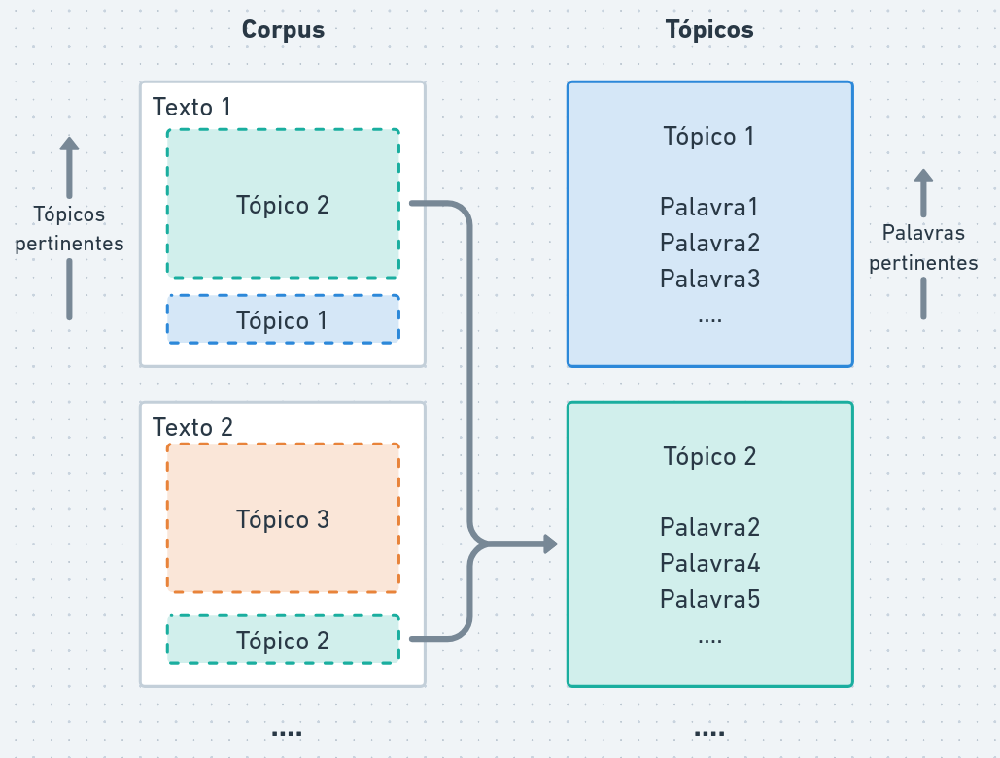

if (! "tidyverse" %in% installed.packages ()) {install.packages ("tidyverse" )library (tidyverse)
── Attaching core tidyverse packages ──────────────────────── tidyverse 2.0.0 ──
✔ dplyr 1.1.4 ✔ readr 2.1.5
✔ forcats 1.0.0 ✔ stringr 1.5.1
✔ ggplot2 3.5.2 ✔ tibble 3.3.0
✔ lubridate 1.9.4 ✔ tidyr 1.3.1
✔ purrr 1.0.4
── Conflicts ────────────────────────────────────────── tidyverse_conflicts() ──
✖ dplyr::filter() masks stats::filter()
✖ dplyr::lag() masks stats::lag()
ℹ Use the conflicted package (<http://conflicted.r-lib.org/>) to force all conflicts to become errors
if (! "quanteda" %in% installed.packages ()) {install.packages ("quanteda" )library (quanteda)
Package version: 4.3.1
Unicode version: 15.0
ICU version: 72.1
Parallel computing: 12 of 12 threads used.
See https://quanteda.io for tutorials and examples.
if (! "quanteda.textstats" %in% installed.packages ()) {install.packages ("quanteda.textstats" )library (quanteda.textstats)if (! "stopwords" %in% installed.packages ()) {install.packages ("stopwords" )library (stopwords)
N-gramas
Na aula anterior, vimos como criar um corpus a partir de dados de texto e como separar o texto em palavras ou partes de palavras.
Por mais que palavras isoladas possuam significados interessantes, o significado de um texto é mais do que a soma das palavras que o compõem. Por exemplo, a expressão “teto de vidro” tem um significado diferente da soma dos significados de “teto”, “de” e “vidro”.
Os n-gramas consistem em sequências contíguas de “n” palavras. Por exemplo, na frase “eu tenho um sonho”:
Unigramas: “eu”, “tenho”, “um”, “sonho”
Bigramas: “eu tenho”, “tenho um”, “um sonho”
Trigramas: “eu tenho um”, “tenho um sonho”
Vantagens de utilizar n-gramas:
Capturam expressões e frases comuns que podem ter significados específicos.
Adicionam mais contexto ao modelo, o que pode melhorar a precisão em tarefas como classificação de texto ou análise de sentimentos.
Identificam negações, como “não gosto”, que podem alterar o significado de uma frase.
Desvantagens de utilizar n-gramas:
Há um retorno decrescente. Como há muitas combinações possíveis de palavras, os dados podem ficar esparsos (muitos casos raros).
<- read_csv ("data/dados_sessoes.csv" ) |> corpus ()
Rows: 1805 Columns: 16
── Column specification ────────────────────────────────────────────────────────
Delimiter: ","
chr (12): codigo, data, tipo, cod_sessao, fase_sessao, nome_orador, partido_...
dbl (4): numero, num_orador, num_quarto, num_insercao
ℹ Use `spec()` to retrieve the full column specification for this data.
ℹ Specify the column types or set `show_col_types = FALSE` to quiet this message.
Corpus consisting of 1,805 documents and 14 docvars.
BC_4327688_1_1 :
"A Deputada repudiou a emissão de visto com marcação de gêner..."
BC_4327698_1_1 :
"O Deputado criticou o Governo Lula por abandonar os mais pob..."
BC_4327701_1_1 :
"O Deputado acusou a família do Presidente Lula de se benefic..."
BC_4327704_1_1 :
"O Deputado alertou para a tentativa de um líder da organizaç..."
BC_4327707_1_1 :
"O Deputado criticou o Ministro da Previdência Social, Carlos..."
BC_4327710_1_1 :
"O Deputado defendeu o papel do Governo Lula na investigação ..."
[ reached max_ndoc ... 1,799 more documents ]
Dicionários
Dicionários são listas pré-definidas de palavras ou expressões associadas a categorias específicas. Por exemplo, um dicionário de sentimentos pode conter palavras como “feliz”, “triste”, “raiva” associadas a categorias de sentimento.
Collocations
Collocations são combinações de palavras que coocorrem com mais frequência do que seria esperado por acaso. Por exemplo, “distrito federal” é uma collocation comum em português, enquanto “distrito superior” não é.
Intuição:
Em um corpus com 1000 palavras
“distrito” aparece 50 vezes
“federal” aparece 30 vezes
“distrito federal” aparece 20 vezes
A frequência esperada de “distrito federal” por acaso seria (50/1000) * (30/1000) = 1.5 vezes. Portanto, “distrito federal” é uma collocation, pois ocorre muito mais frequentemente do que o esperado por acaso.
Exemplo
<- read_csv ("data/dados_sessoes.csv" ) |> corpus ()
Rows: 1805 Columns: 16
── Column specification ────────────────────────────────────────────────────────
Delimiter: ","
chr (12): codigo, data, tipo, cod_sessao, fase_sessao, nome_orador, partido_...
dbl (4): numero, num_orador, num_quarto, num_insercao
ℹ Use `spec()` to retrieve the full column specification for this data.
ℹ Specify the column types or set `show_col_types = FALSE` to quiet this message.
<- corpus_sessoes |> textstat_collocations ()print (head (collocations_sessoes))
collocation count count_nested length lambda z
1 lei nº 932 0 2 8.558256 73.83885
2 o deputado 1499 0 2 5.697773 68.18788
3 na votação 321 0 2 5.569242 57.17080
4 segurança pública 193 0 2 7.995491 49.92012
5 de lei 651 0 2 2.874609 47.00681
6 política nacional 135 0 2 6.268995 45.94212
Podemos testar removendo stopwords:
<- c (stopwords (language = "pt" ), "n<c2><ba>" )<- corpus_sessoes |> tokens () |> tokens_tolower () |> tokens_remove (palavras_irrelevantes, padding = TRUE ) |> textstat_collocations ()print ((collocations_sessoes))
collocation count count_nested length lambda
1 lei nº 932 0 2 8.55825551
2 segurança pública 193 0 2 7.99549097
3 política nacional 135 0 2 6.26899547
4 governo federal 140 0 2 5.13965357
5 deputado criticou 209 0 2 5.06684109
6 presidente lula 113 0 2 6.19093442
7 deputado orientou 256 0 2 5.99171778
8 governo lula 108 0 2 5.59609449
9 poder público 111 0 2 8.31081234
10 tribunal federal 111 0 2 6.49335066
11 código brasileiro 106 0 2 8.62857511
12 sobre medidas 102 0 2 5.30001992
13 público frente 102 0 2 8.94760518
14 políticas públicas 84 0 2 9.03741687
15 ex-presidente jair 62 0 2 8.57470357
16 internacional brasileira 54 0 2 7.29588004
17 deve ser 50 0 2 7.24589015
18 deputada orientou 64 0 2 4.86644630
19 outras providências 87 0 2 10.10030396
20 papa francisco 67 0 2 9.80686085
21 congresso nacional 56 0 2 5.91557589
22 deputado defendeu 98 0 2 3.89149620
23 deputado destacou 92 0 2 4.30984343
24 meio ambiente 60 0 2 8.80977108
25 dia mundial 65 0 2 8.53759447
26 rio grande 42 0 2 8.30391463
27 justiça federal 57 0 2 4.45682855
28 quadro permanente 60 0 2 10.41959943
29 polícia federal 47 0 2 5.71236744
30 deputado glauber 91 0 2 5.47862357
31 sociedade brasileira 34 0 2 6.62948540
32 superior tribunal 44 0 2 7.95490111
33 glauber braga 98 0 2 11.38822924
34 supremo tribunal 111 0 2 10.42533422
35 nacional aldir 120 0 2 8.97721995
36 instituto nacional 43 0 2 6.25659196
37 ditadura militar 25 0 2 7.87560244
38 conscientização sobre 53 0 2 6.35012253
39 agricultura familiar 50 0 2 10.80544602
40 ministro alexandre 42 0 2 8.38286197
41 estados unidos 51 0 2 10.29268460
42 mil reais 23 0 2 6.87315617
43 novos cargos 34 0 2 7.89221501
44 desenvolvimento regional 46 0 2 8.10671500
45 atos golpistas 25 0 2 6.49748920
46 justiça social 35 0 2 4.73347935
47 comissão geral 29 0 2 7.69003223
48 ministério público 26 0 2 5.94323157
49 estabelece critérios 55 0 2 11.32271255
50 prestou homenagem 28 0 2 7.91744529
51 recursos públicos 23 0 2 6.15620407
52 além disso 280 0 2 11.45957242
53 substitutivo apresentado 35 0 2 9.85721630
54 ter sido 19 0 2 7.30397553
55 deputado discutiu 67 0 2 5.53028515
56 devem ser 25 0 2 7.16714742
57 manifestou solidariedade 20 0 2 6.56095086
58 baixa renda 25 0 2 8.43970781
59 dia internacional 24 0 2 5.55906194
60 manifestou apoio 27 0 2 5.32363114
61 5 mil 25 0 2 8.11982238
62 pessoa idosa 19 0 2 8.79557549
63 deputada discursou 28 0 2 5.30468432
64 técnico judiciário 31 0 2 8.41711481
65 primeira missa 19 0 2 8.48792625
66 atual governo 31 0 2 4.98682834
67 código penal 20 0 2 6.77076011
68 dá outras 87 0 2 11.45851496
69 6 bilhões 19 0 2 7.89382554
70 polícia militar 18 0 2 6.38617994
71 desses profissionais 17 0 2 7.24866323
72 população idosa 20 0 2 6.99704141
73 deputado discursou 47 0 2 4.52557815
74 deputado celebrou 47 0 2 4.56955488
75 povo brasileiro 20 0 2 6.29068636
76 assistência social 49 0 2 8.63309113
77 ex-presidente bolsonaro 22 0 2 5.29204073
78 decreto legislativo 26 0 2 9.63032608
79 estado democrático 19 0 2 6.62046419
80 artigo 6º 17 0 2 8.87895037
81 banco central 16 0 2 9.35243434
82 perseguição política 23 0 2 6.48265777
83 câmara municipal 18 0 2 6.50892643
84 frente parlamentar 20 0 2 5.19476360
85 forças policiais 13 0 2 7.54918591
86 competitividade internacional 56 0 2 10.38708547
87 presidente hugo 30 0 2 7.16387977
88 papel essencial 15 0 2 6.54672352
89 deputado manifestou 44 0 2 5.02093741
90 pediu apoio 22 0 2 4.98907134
91 abre crédito 38 0 2 10.85695815
92 defensores públicos 22 0 2 8.84081578
93 deputada discutiu 22 0 2 4.99044428
94 santa missa 13 0 2 7.42714937
95 produtores rurais 14 0 2 9.31421457
96 comissão parlamentar 19 0 2 5.13740020
97 é essencial 18 0 2 5.83104040
98 ações concretas 18 0 2 7.56765408
99 primeira santa 13 0 2 6.56484757
100 nº 2 31 0 2 4.76007988
101 deputada celebrou 21 0 2 4.92763110
102 emendas parlamentares 17 0 2 6.56600095
103 expressou solidariedade 13 0 2 6.35688103
104 ricardo lewandowski 19 0 2 10.84988089
105 deputado denunciou 37 0 2 4.80845185
106 povos indígenas 13 0 2 9.56850869
107 seguro social 41 0 2 8.72215486
108 estaria sendo 11 0 2 7.11403073
109 deputado registrou 45 0 2 5.58015435
110 piso salarial 15 0 2 9.86049921
111 obrigações relativas 54 0 2 12.78270617
112 deputado fez 38 0 2 5.08155468
113 mental voltado 18 0 2 10.98224239
114 sessão solene 93 0 2 12.41686257
115 pessoas autistas 14 0 2 6.03755369
116 seleção brasileira 22 0 2 7.88580418
117 crimes graves 11 0 2 6.75460366
118 regimento interno 29 0 2 12.08480360
119 $ 5 14 0 2 5.98007535
120 deputado alertou 32 0 2 4.30010219
121 obstrução parlamentar 13 0 2 5.92720893
122 devido processo 11 0 2 6.66109772
123 audiência pública 17 0 2 6.43767365
124 empresário edson 9 0 2 8.35911399
125 programas sociais 11 0 2 7.91395167
126 regime militar 10 0 2 7.05775548
127 concessões comerciais 54 0 2 12.18755964
128 $ 6 13 0 2 6.13064123
129 comissão especial 12 0 2 5.90433981
130 espírito santo 17 0 2 11.25252656
131 dessas categorias 9 0 2 7.09188327
132 públicas voltadas 11 0 2 7.53305785
133 varas federais 23 0 2 9.17344033
134 população local 12 0 2 5.83403318
135 semana santa 11 0 2 7.91792765
136 poder judiciário 15 0 2 4.90730979
137 trabalhos legislativos 9 0 2 9.21713772
138 colegas parlamentares 13 0 2 5.60500901
139 pode ser 12 0 2 5.87568577
140 extrema direita 25 0 2 10.16925229
141 trabalhadores rurais 9 0 2 6.98681746
142 saúde pública 19 0 2 4.25983622
143 partido novo 11 0 2 5.85201704
144 bloco econômico 54 0 2 11.44983955
145 governo anterior 17 0 2 5.61126185
146 apresentou questão 9 0 2 6.69722786
147 governador carlos 9 0 2 7.03711919
148 advogados públicos 12 0 2 8.10889522
149 daniel silveira 17 0 2 11.56269495
150 governo bolsonaro 23 0 2 3.83566125
151 manifestou preocupação 10 0 2 7.01390602
152 igreja católica 8 0 2 8.93583922
153 deputada destacou 21 0 2 3.95402982
154 carlos lupi 18 0 2 10.41720580
155 desenvolvimento econômico 14 0 2 4.98012932
156 cobrou ações 13 0 2 5.11971943
157 dois anos 11 0 2 6.11810320
158 1ª região 30 0 2 9.61351301
159 edson queiroz 33 0 2 12.36439373
160 prever pena 10 0 2 9.53546129
161 ° 1 9 0 2 8.02748662
162 emenda constitucional 9 0 2 7.52065864
163 facções criminosas 11 0 2 10.49622066
164 voto favorável 7 0 2 8.58063232
165 atual gestão 11 0 2 5.46563899
166 unilaterais adotadas 55 0 2 13.75642012
167 intimação judicial 7 0 2 8.61961411
168 legislativo nº 22 0 2 5.07961655
169 preservação ambiental 7 0 2 7.65353192
170 declarou apoio 13 0 2 5.28968258
171 famílias brasileiras 8 0 2 7.19387031
172 cor vermelha 10 0 2 10.50534580
173 polícia civil 9 0 2 6.21569202
174 sistema único 18 0 2 9.69247420
175 provisória nº 53 0 2 7.24123980
176 mencionou ainda 14 0 2 4.64535647
177 crimes cometidos 14 0 2 8.91234878
178 deputado encaminhou 40 0 2 6.06149799
179 deputado apresentou 26 0 2 4.79837837
180 concluiu afirmando 8 0 2 7.68131120
181 três poderes 7 0 2 7.35554466
182 natureza privada 11 0 2 11.14288147
183 salário mínimo 23 0 2 12.27819343
184 desses trabalhadores 9 0 2 6.03812750
185 processo legal 8 0 2 6.98392855
186 programa pé-de-meia 11 0 2 8.37681059
187 rejeitou qualquer 7 0 2 7.04122595
188 população brasileira 14 0 2 4.50485074
189 avenida paulista 15 0 2 11.89334612
190 fé cristã 7 0 2 9.08196557
191 camisa vermelha 6 0 2 8.65266977
192 finalizou reafirmando 7 0 2 7.10415621
193 nesse sentido 11 0 2 11.08403424
194 propriedade intelectual 54 0 2 14.07472349
195 substitutivo oferecido 15 0 2 9.43628739
196 crescimento econômico 8 0 2 6.27612589
197 dificuldades enfrentadas 8 0 2 9.94262536
198 previdência social 12 0 2 6.93937697
199 reciprocidade comercial 7 0 2 9.69375929
200 declarações feitas 6 0 2 7.90817886
201 organizações criminosas 7 0 2 9.54532583
202 finalizou pedindo 8 0 2 8.29577753
203 agentes comunitários 31 0 2 10.24532320
204 papel fundamental 8 0 2 6.40080744
205 diversas regiões 6 0 2 7.56186226
206 outros países 7 0 2 7.42976090
207 ensino superior 7 0 2 6.65609879
208 crise enfrentada 6 0 2 7.76055062
209 ex-deputado daniel 6 0 2 8.96283815
210 atual presidente 14 0 2 4.41648074
211 golpe militar 8 0 2 5.91461855
212 assembleia legislativa 6 0 2 8.84841434
213 bolsonaro enquanto 8 0 2 6.09473235
214 medidas unilaterais 56 0 2 9.82457984
215 lideranças locais 6 0 2 7.19231716
216 imunidade parlamentar 10 0 2 7.26470036
217 rebateu críticas 6 0 2 7.88862568
218 mudanças estruturais 6 0 2 8.56747159
219 serviço público 9 0 2 6.10703033
220 decisões judiciais 6 0 2 7.57888384
221 manifestou indignação 8 0 2 7.38155911
222 deputada criticou 21 0 2 3.41167380
223 assinaturas necessárias 6 0 2 8.79575043
224 aposentadoria especial 17 0 2 10.34350934
225 14 anos 9 0 2 6.90107415
226 apuração rigorosa 6 0 2 9.82512221
227 república federativa 16 0 2 10.34624692
228 presos injustamente 6 0 2 7.56578500
229 10 milhões 7 0 2 6.61294679
230 bem comum 6 0 2 9.21415930
231 deputado anunciou 21 0 2 4.44313317
232 desafios enfrentados 6 0 2 9.15858273
233 possível cassação 7 0 2 6.53423433
234 1 milhão 6 0 2 9.05591512
235 dessa condição 5 0 2 8.20796376
236 desenvolvimento sustentável 10 0 2 6.80858279
237 tipo 1 6 0 2 7.09839039
238 voto contrário 5 0 2 8.07765084
239 altos índices 5 0 2 9.11150423
240 cinco dias 5 0 2 7.94842565
241 cria órgãos 5 0 2 8.11785726
242 encerrou reafirmando 6 0 2 6.86878903
243 desenvolvimento agrário 39 0 2 9.51188634
244 transforma cargos 31 0 2 9.60187891
245 impactem negativamente 54 0 2 14.24907688
246 ministro carlos 8 0 2 5.97301330
247 presos políticos 6 0 2 6.62362064
248 estariam sendo 6 0 2 7.80137450
249 universidade federal 12 0 2 5.44116254
250 cinco mil 7 0 2 6.62936909
251 enfrentam dificuldades 5 0 2 7.67312434
252 desse tipo 5 0 2 7.67575766
253 concluiu defendendo 6 0 2 7.20327844
254 deveria ser 8 0 2 6.17292465
255 polícias estaduais 5 0 2 7.77258514
256 mães atípicas 5 0 2 9.06812355
257 plano nacional 11 0 2 5.27743947
258 penas aplicadas 6 0 2 8.59501918
259 estrutura adequada 5 0 2 7.94839874
260 transformação social 9 0 2 5.34077904
261 deputado prestou 20 0 2 4.70509555
262 fundação edson 5 0 2 7.52317552
263 relatou ter 8 0 2 5.37312698
264 contra mulheres 11 0 2 4.58976736
265 comando vermelho 5 0 2 9.87052384
266 policiais militares 5 0 2 7.36730830
267 economia local 6 0 2 6.33865129
268 terras indígenas 5 0 2 8.40042423
269 2ª turma 30 0 2 13.21676576
270 responsabilidade fiscal 6 0 2 6.36476370
271 diagnóstico precoce 9 0 2 11.22947142
272 parlamentar mista 8 0 2 7.43632229
273 guardas municipais 8 0 2 9.17213380
274 razão dessa 5 0 2 9.10595917
275 públicas efetivas 7 0 2 7.62710274
276 líderes partidários 8 0 2 9.09515258
277 ações urgentes 7 0 2 6.28094341
278 espectro autista 31 0 2 11.93324218
279 nacional destinada 16 0 2 7.37299863
280 uso político 7 0 2 5.61705839
281 serviços essenciais 5 0 2 6.93391895
282 vai além 5 0 2 10.09515450
283 pautas relevantes 5 0 2 7.44581861
284 avanços legislativos 5 0 2 7.31534931
285 supostos desvios 5 0 2 9.36916368
286 nº 3.469 106 0 2 8.75979967
287 nº 1 16 0 2 3.99804107
288 cmn n 5 0 2 9.30663660
289 educação inclusiva 7 0 2 7.80621862
290 educação básica 6 0 2 7.10449881
291 oito varas 23 0 2 13.15676402
292 ensino médio 5 0 2 8.63210755
293 episódio ocorrido 5 0 2 6.92326684
294 diabetes tipo 5 0 2 9.19221279
295 debate sobre 12 0 2 4.63588315
296 crime organizado 40 0 2 11.47908619
297 complementar n.º 4 0 2 8.53629305
298 deputado elogiou 18 0 2 4.05460649
299 insegurança jurídica 4 0 2 9.02207263
300 buscar soluções 4 0 2 8.28495844
301 desejou sucesso 4 0 2 9.13330499
302 nesse contexto 4 0 2 8.29688109
303 joão pessoa 5 0 2 6.66032619
304 sociedade civil 6 0 2 5.96989296
305 deputado homenageou 18 0 2 4.73045718
306 instituição financeira 4 0 2 8.87278547
307 manifestou pesar 6 0 2 6.98067157
308 representantes municipais 5 0 2 6.63531816
309 governador jerônimo 12 0 2 9.46666974
310 produtos brasileiros 5 0 2 7.10836130
311 terra livre 4 0 2 8.79581770
312 longo prazo 4 0 2 8.72435201
313 pastor josé 4 0 2 7.93166308
314 grave situação 6 0 2 6.08551383
315 garantir dignidade 7 0 2 5.41885820
316 serviços públicos 6 0 2 5.94226462
317 financiamento industrial 4 0 2 9.01589304
318 deputada defendeu 17 0 2 3.37106464
319 gestão anterior 6 0 2 5.92991205
320 pessoas envolvidas 7 0 2 6.15275627
321 crianças autistas 5 0 2 6.51971732
322 escândalo envolvendo 5 0 2 6.51971732
323 dados pessoais 5 0 2 6.83865056
324 fez críticas 6 0 2 5.87644467
325 decoro parlamentar 9 0 2 7.66861338
326 tributação mínima 4 0 2 8.80076148
327 confederação brasileira 8 0 2 6.97519031
328 $ 6,3 10 0 2 7.51633468
329 jornalista oswaldo 5 0 2 10.65664404
330 ser punidos 7 0 2 6.70485958
331 deputado expressou 17 0 2 4.14969059
332 deveria estar 4 0 2 7.65204458
333 taxa mínima 4 0 2 8.67938717
334 16 anos 7 0 2 6.88779838
335 concluiu reafirmando 5 0 2 6.52423247
336 gestão municipal 6 0 2 5.75551828
337 novas gerações 4 0 2 8.90529521
338 distrito federal 21 0 2 7.55284472
339 pequenos produtores 4 0 2 8.24143969
340 risco permanente 6 0 2 5.67207815
341 obstrução promovida 5 0 2 8.09141212
342 chamou atenção 5 0 2 6.29068515
343 descontos indevidos 15 0 2 11.71895237
344 suposto esquema 4 0 2 7.84782496
345 mobilidade urbana 7 0 2 11.75526306
346 gilberto silva 4 0 2 8.79087140
347 mudanças climáticas 7 0 2 9.85089106
348 prerrogativas regimentais 4 0 2 9.38363127
349 parecer favorável 4 0 2 7.33275728
350 dinheiro público 8 0 2 7.14778274
351 má gestão 12 0 2 9.06974987
352 mesa diretora 13 0 2 12.09167475
353 impacto positivo 6 0 2 8.80250387
354 audiências públicas 6 0 2 7.26914902
355 moradia digna 4 0 2 10.20465892
356 zé neto 4 0 2 10.20465892
357 muitas vezes 13 0 2 11.85527252
358 violência contra 9 0 2 4.59511985
359 famílias atípicas 5 0 2 7.63931933
360 episódio envolvendo 5 0 2 6.16459558
361 alguns parlamentares 7 0 2 6.49716575
362 soberania nacional 9 0 2 5.65982244
363 inclusão social 9 0 2 4.50690374
364 interesses nacionais 4 0 2 7.12863501
365 debate político 5 0 2 6.12213097
366 2 bilhões 5 0 2 6.43445229
367 comissão mista 6 0 2 6.71659037
368 citou pesquisa 5 0 2 6.57411501
369 ensino integral 4 0 2 6.98551398
370 públicas eficazes 5 0 2 6.56234344
371 ecologia integral 6 0 2 9.84439266
372 cinco anos 6 0 2 6.01212769
373 4 milhões 5 0 2 6.69956367
374 tratamento dado 5 0 2 8.24905870
375 centros especializados 4 0 2 10.28891926
376 desastres climáticos 4 0 2 10.28891926
377 resolução nº 13 0 2 5.08845387
378 financeira agente 4 0 2 9.80931927
379 declarações recentes 4 0 2 6.89737865
380 10 anos 6 0 2 5.83517678
381 críticas feitas 4 0 2 7.01252247
382 proferiu parecer 13 0 2 11.24430961
383 líder espiritual 4 0 2 7.08838822
384 tratamento penal 5 0 2 5.98011270
385 2 milhões 5 0 2 6.33851667
386 constituição nº 16 0 2 3.45028324
387 ministro lewandowski 6 0 2 5.73909487
388 importância histórica 8 0 2 4.85567288
389 região norte 5 0 2 6.15633270
390 24 julho 5 0 2 6.60159888
391 princípios democráticos 4 0 2 9.48651897
392 melhores condições 6 0 2 9.58763245
393 lideranças políticas 6 0 2 5.55440150
394 é fundamental 7 0 2 5.28155405
395 comércio local 4 0 2 7.20105650
396 perseguição judicial 4 0 2 6.74207161
397 ato realizado 4 0 2 7.43366318
398 prestação continuada 9 0 2 11.88341134
399 condução econômica 4 0 2 6.66293085
400 cop 30 5 0 2 9.89443672
401 lei n 14 0 2 5.56315914
402 rui costa 9 0 2 11.74030377
403 comunidades locais 4 0 2 6.64552397
404 democracia brasileira 8 0 2 4.56296131
405 dignidade humana 5 0 2 8.63545651
406 50 mil 6 0 2 7.64660281
407 ano anterior 4 0 2 6.62445784
408 penal destinado 5 0 2 9.83558949
409 instituições democráticas 4 0 2 8.49151214
410 terceiro grau 5 0 2 11.44512158
411 ressaltou ainda 13 0 2 3.53373878
412 consequências legais 3 0 2 8.55944238
413 grave crise 4 0 2 6.60493013
414 qualquer momento 4 0 2 6.58740983
415 analista judiciário 30 0 2 10.32072359
416 últimos 12 3 0 2 8.46846387
417 apurar responsabilidades 3 0 2 9.03904237
418 organizações religiosas 3 0 2 9.03904237
419 tributária concedida 3 0 2 9.03904237
420 helder barbalho 6 0 2 11.94864790
421 servidores municipais 4 0 2 6.61938146
422 condenações relacionadas 3 0 2 8.49630790
423 pequenos agricultores 3 0 2 8.49630790
424 havia sido 4 0 2 6.77030167
425 hospital universitário 4 0 2 9.09256759
426 altos salários 3 0 2 8.27739518
427 investigação rigorosa 3 0 2 8.28498535
428 diversas cidades 4 0 2 6.53867083
429 senador eduardo 3 0 2 8.30810777
430 contexto político 4 0 2 7.45666991
431 1 bilhão 4 0 2 9.04709849
432 limites constitucionais 3 0 2 8.54451000
433 conceder asilo 3 0 2 9.20610318
434 redes sociais 18 0 2 10.46050923
435 cumprir promessas 3 0 2 9.58561298
436 memória histórica 4 0 2 6.48531139
437 livro branco 3 0 2 9.01503449
438 quase r 6 0 2 5.54932535
439 juízes federais 23 0 2 10.27207281
440 eventos climáticos 3 0 2 8.40634621
441 eventual prejuízo 3 0 2 8.61615188
442 campanha presidencial 3 0 2 8.93164615
443 mil habitantes 5 0 2 7.38159950
444 agência especial 4 0 2 7.86900143
445 omissão diante 5 0 2 5.90617250
446 bom senso 4 0 2 10.48229065
447 1,5 milhão 4 0 2 10.48229065
448 legislação penal 4 0 2 6.46060456
449 deputado estadual 15 0 2 3.71418881
450 imprensa livre 3 0 2 7.88521728
451 imunidade tributária 3 0 2 7.88521728
452 agressão física 3 0 2 9.51801296
453 respostas firmes 3 0 2 9.78629040
454 precisa dar 3 0 2 7.91634820
455 primeiro comando 3 0 2 8.15980202
456 dispõe sobre 107 0 2 9.89586087
457 princípios constitucionais 3 0 2 7.81851918
458 futebol feminino 3 0 2 9.30669041
459 últimos cinco 3 0 2 7.99299308
460 apontou falhas 4 0 2 6.91063863
461 celulares roubados 4 0 2 10.99313646
462 prestar esclarecimentos 4 0 2 10.99313646
463 precisa agir 3 0 2 7.75599209
464 dívida pública 7 0 2 6.21535992
465 santo cristo 3 0 2 7.77411263
466 outras regiões 5 0 2 5.82230774
467 projetos importantes 4 0 2 6.47890004
468 providências urgentes 3 0 2 7.94034262
469 4ª região 23 0 2 10.12228105
470 recursos destinados 5 0 2 6.26932187
471 diálogo inter-religioso 5 0 2 9.34781228
472 amazônia legal 3 0 2 8.00155784
473 pressupostos constitucionais 4 0 2 9.97143139
474 instrumento legítimo 3 0 2 7.89032547
475 reforma tributária 3 0 2 7.64156829
476 expressou confiança 4 0 2 6.69008955
477 atos antidemocráticos 29 0 2 9.99322115
478 arthur lira 9 0 2 12.83894969
479 cores nacionais 3 0 2 7.69925678
480 dia 6 6 0 2 5.20023170
481 produção agrícola 3 0 2 8.98389011
482 evasão fiscal 4 0 2 8.67930643
483 josé wellington 4 0 2 9.82299793
484 objetivo é 7 0 2 4.75524195
485 transição energética 4 0 2 11.24445761
486 resolução cmn 8 0 2 10.84056696
487 possíveis irregularidades 3 0 2 8.22220050
488 mil pessoas 8 0 2 4.31963107
489 voz combativa 3 0 2 9.89450399
490 nível 3 3 0 2 7.75372976
491 sóstenes cavalcante 16 0 2 13.90180354
492 senadora tereza 7 0 2 12.26609541
493 levantou preocupações 3 0 2 9.76933412
494 valores cristãos 4 0 2 8.61957374
495 forças armadas 11 0 2 10.40510760
496 jesus cristo 4 0 2 9.69377275
497 aprovação unânime 6 0 2 7.24896439
498 seguir atuando 3 0 2 9.55801157
499 posição contrária 3 0 2 8.79581770
500 teto constitucional 3 0 2 8.79581770
501 governos federal 8 0 2 4.73711625
502 saúde mental 26 0 2 9.86375248
503 acordo sobre 9 0 2 4.46793784
504 sistema judicial 4 0 2 6.25740178
505 torna obrigatória 3 0 2 10.40534979
506 40 anos 5 0 2 6.32812627
507 novo plano 4 0 2 6.14114272
508 igreja aberta 3 0 2 8.34379221
509 encerrou conclamando 4 0 2 7.92940241
510 dia 1º 6 0 2 5.04839200
511 grave acidente 3 0 2 7.86996749
512 ser respeitada 7 0 2 7.59219645
513 seis anos 5 0 2 5.90523575
514 primeiro mandato 4 0 2 6.33990174
515 grupo político 4 0 2 6.12152752
516 entidades envolvidas 3 0 2 7.27936257
517 combater desigualdades 3 0 2 7.70774962
518 prestou condolências 4 0 2 8.48419875
519 wellington dias 3 0 2 8.68759066
520 crimes ambientais 4 0 2 6.36130696
521 cristo redentor 6 0 2 11.23566446
522 caixa econômica 3 0 2 8.01307507
523 poderá ser 5 0 2 6.17099803
524 necessidade urgente 5 0 2 5.44302384
525 paulo magalhães 4 0 2 9.47668133
526 governos autoritários 3 0 2 7.97602707
527 dessas pessoas 6 0 2 5.02382741
528 defesa civil 6 0 2 5.01038478
529 expressou preocupação 4 0 2 6.14770469
530 altas rendas 6 0 2 12.12300129
531 crimes contra 8 0 2 4.24067235
532 citou exemplos 4 0 2 6.82433665
533 realidade enfrentada 3 0 2 7.15993465
534 economia nacional 8 0 2 4.41890729
535 praticado contra 12 0 2 7.98177102
536 imposto devido 4 0 2 5.99434213
537 quatro destaques 3 0 2 9.10598608
538 deveria ter 4 0 2 6.10891447
539 centro cultural 3 0 2 7.13790196
540 episódios anteriores 3 0 2 7.04551085
541 interesse público 5 0 2 6.14941013
542 três vereadores 4 0 2 5.89179042
543 prisão domiciliar 4 0 2 8.25845947
544 infraestrutura adequada 3 0 2 7.15497250
545 deputado parabenizou 13 0 2 3.80928090
546 eduardo bolsonaro 5 0 2 6.26611373
547 50 milhões 4 0 2 7.05810773
548 episódios recentes 3 0 2 6.96702577
549 lei complementar 31 0 2 7.45329831
550 relatou visitas 4 0 2 7.04686493
551 gestores locais 3 0 2 7.03779831
552 proteção ambiental 4 0 2 5.92364686
553 direitos humanos 21 0 2 9.57711672
554 alessandro stefanutto 6 0 2 12.45948025
555 escuta ativa 3 0 2 10.10581308
556 segunda instância 3 0 2 10.10581308
557 cadeia produtiva 3 0 2 10.74182875
558 inovação tecnológica 3 0 2 10.74182875
559 luís roberto 3 0 2 10.74182875
560 michel temer 3 0 2 10.74182875
561 poder executivo 5 0 2 5.43372751
562 doenças graves 3 0 2 7.18620486
563 alexandre padilha 10 0 2 9.95302828
564 prioridade absoluta 3 0 2 8.84125989
565 atuação parlamentar 9 0 2 3.84589041
566 parlamentares bolsonaristas 5 0 2 6.83631315
567 formação médica 3 0 2 8.27354759
568 carlos brandão 8 0 2 10.13226753
569 prerrogativas parlamentares 5 0 2 5.87463409
570 rio branco 4 0 2 6.41221551
571 500 mil 4 0 2 6.62353807
572 primeiro ano 3 0 2 6.84972590
573 comunidades vulneráveis 3 0 2 6.80710960
574 rodovias federais 4 0 2 6.94087860
575 ricardo nunes 3 0 2 8.75229895
576 constituição federal 10 0 2 3.70254978
577 crise climática 4 0 2 9.01578540
578 desenvolvimento humano 5 0 2 6.02633180
579 gabriel monteiro 3 0 2 10.99314991
580 n.º 97 3 0 2 9.80351203
581 cometidos durante 4 0 2 6.11856366
582 valorização salarial 4 0 2 5.80166826
583 deputado relatou 12 0 2 4.09114588
584 experiência pessoal 3 0 2 6.89043996
585 maioria absoluta 3 0 2 8.71061953
586 pode haver 3 0 2 7.27233063
587 atual cenário 4 0 2 5.93704718
588 indignação diante 4 0 2 6.27446586
589 pode prejudicar 3 0 2 7.39750050
590 continuará lutando 3 0 2 9.72012369
591 escândalos envolvendo 3 0 2 6.99384695
592 valores desviados 4 0 2 8.95605271
593 casos graves 4 0 2 5.69654283
594 deputada manifestou 8 0 2 4.08121737
595 150 anos 5 0 2 7.07537434
596 governador helder 5 0 2 8.53080891
597 trajetória histórica 4 0 2 5.67625771
598 atendimento médico 3 0 2 7.49460950
599 trabalho realizado 4 0 2 6.50619929
600 7 mil 4 0 2 5.96019000
601 governo estadual 8 0 2 4.18884251
602 expressou gratidão 5 0 2 8.51541726
603 impacto direto 3 0 2 6.92403100
604 direita tenta 3 0 2 7.07112311
605 órgãos parlamentares 5 0 2 5.39916324
606 atividade agropecuária 3 0 2 8.55936165
607 tereza cristina 8 0 2 13.23856314
608 desde então 3 0 2 7.04983899
609 banco nacional 7 0 2 4.54680837
610 início imediato 4 0 2 8.82067772
611 criança autista 3 0 2 7.26540041
612 ação imediata 3 0 2 6.73820777
613 posicionou contra 7 0 2 7.11493455
614 deputado saudou 12 0 2 4.86891848
615 parlamentar católica 4 0 2 6.03506075
616 operação lava 3 0 2 9.44246505
617 convidou todos 3 0 2 7.09980754
618 governos estaduais 3 0 2 6.53350194
619 polícias municipais 3 0 2 6.67150967
620 vontade popular 3 0 2 7.95656187
621 cada pessoa 3 0 2 6.63279996
622 novo pac 3 0 2 7.20536221
623 responsáveis devem 3 0 2 6.60898258
624 horas semanais 4 0 2 11.75528996
625 espírito empreendedor 3 0 2 9.32804124
626 campo político 3 0 2 6.84963169
627 dizem defender 3 0 2 8.39768666
628 pessoas presas 5 0 2 6.92994268
629 convenção geral 3 0 2 7.88508272
630 atendimento especializado 7 0 2 9.81730748
631 democracia enquanto 4 0 2 5.56397532
632 primeira infância 3 0 2 6.91232089
633 valorização desses 4 0 2 5.53533970
634 atraso deliberado 4 0 2 10.75672077
635 marcos pereira 2 0 2 9.24914747
636 pedro lucas 2 0 2 9.24914747
637 turismo religioso 2 0 2 9.24914747
638 futuras gerações 2 0 2 8.93897909
639 regimes próprios 2 0 2 8.93897909
640 ações efetivas 4 0 2 6.23764669
641 federal substituto 23 0 2 9.09651483
642 avanços promovidos 3 0 2 7.84011787
643 crises climáticas 2 0 2 9.10603990
644 eventual segundo 2 0 2 9.10603990
645 protestos populares 2 0 2 9.10603990
646 tarifas impostas 2 0 2 9.10603990
647 último domingo 2 0 2 9.10603990
648 passo importante 2 0 2 8.81380922
649 acampamento terra 4 0 2 10.65663059
650 provocação pessoal 3 0 2 8.31189965
651 agressões físicas 2 0 2 8.98087003
652 vacinação infantil 2 0 2 8.98087003
653 prestou solidariedade 4 0 2 5.49519080
654 opinião pública 7 0 2 6.97752694
655 trajetória política 7 0 2 4.21963110
656 planejamento estratégico 2 0 2 9.44982489
657 crise econômica 3 0 2 6.37315014
658 compromissos climáticos 2 0 2 8.54553178
659 polarização ideológica 2 0 2 8.54553178
660 sanção presidencial 2 0 2 8.70257686
661 manifestantes presos 3 0 2 6.51899397
662 paraná pesquisas 2 0 2 9.30671732
663 tradição diplomática 2 0 2 9.30671732
664 campanhas eleitorais 2 0 2 8.86963767
665 postura firme 3 0 2 6.68519880
666 r $ 198 0 2 17.48662621
667 pautas importantes 3 0 2 6.41864472
668 comunidade local 3 0 2 6.47688248
669 manter viva 3 0 2 9.13226976
670 cidadania ativa 2 0 2 8.43429942
671 escalada autoritária 2 0 2 9.18154745
672 polo industrial 2 0 2 9.18154745
673 juros elevados 2 0 2 8.76954748
674 falas semelhantes 2 0 2 8.32306705
675 dependentes químicos 4 0 2 12.09176893
676 encíclica laudato 4 0 2 12.09176893
677 padre omar 4 0 2 12.09176893
678 passo necessário 2 0 2 8.33420923
679 concluiu cobrando 3 0 2 7.18734766
680 antecedentes criminais 6 0 2 12.97031260
681 chiquinho brazão 6 0 2 12.97031260
682 influência negativa 2 0 2 8.51150817
683 mensagem cristã 2 0 2 8.51150817
684 informações falsas 2 0 2 8.36840060
685 mãe gravemente 2 0 2 8.36840060
686 processo civil 4 0 2 5.43970182
687 beneficiários superior 3 0 2 6.77530120
688 relatou reunião 4 0 2 5.46851128
689 impactos negativos 3 0 2 9.04709849
690 gestões anteriores 3 0 2 9.04709849
691 criar planos 2 0 2 8.67856898
692 solicitar informações 2 0 2 8.67856898
693 cidadão comum 2 0 2 8.22297687
694 finalizou afirmando 3 0 2 6.44125807
695 finalizou defendendo 3 0 2 6.44125807
696 mercado financeiro 2 0 2 8.24323073
697 1ª turma 3 0 2 6.26285335
698 imposto sobre 9 0 2 3.76485880
699 abrir mão 2 0 2 9.86820686
700 apostas virtuais 2 0 2 9.86820686
701 lucas ferreira 2 0 2 9.86820686
702 luís cardoso 2 0 2 9.86820686
703 tragédia ocorrida 2 0 2 9.86820686
704 enviar mensagens 2 0 2 9.70114605
705 normas regimentais 2 0 2 9.70114605
706 sindicatos beneficiados 2 0 2 9.70114605
707 verdadeiro interesse 2 0 2 8.42811983
708 responsabilidades institucionais 2 0 2 8.28501226
709 12 anos 4 0 2 6.02087185
710 apontando incoerência 3 0 2 6.49004312
711 gerar emprego 2 0 2 8.13199836
712 floresta azul 2 0 2 10.06888428
713 racismo estrutural 2 0 2 10.06888428
714 evasão escolar 2 0 2 8.59518064
715 prejudica especialmente 2 0 2 8.59518064
716 fernando collor 2 0 2 9.55803848
717 fernando henrique 2 0 2 9.55803848
718 dados alarmantes 4 0 2 8.44507233
719 apresentou dados 4 0 2 5.36217437
720 dar voz 2 0 2 8.15984239
721 diversidade religiosa 2 0 2 8.15984239
722 incêndios florestais 103 0 2 15.98873704
723 então governador 3 0 2 6.94964113
724 buscar recursos 4 0 2 5.80246859
725 cidadãos comuns 2 0 2 8.35115206
726 vitória importante 2 0 2 8.35115206
727 citando exemplos 3 0 2 6.71323889
728 outros parlamentares 6 0 2 4.41971695
729 injustamente punidos 2 0 2 8.20804449
730 livre mercado 2 0 2 8.20804449
731 altos custos 2 0 2 8.04861003
732 espiritual comprometido 2 0 2 8.04861003
733 regional eleitoral 2 0 2 8.04861003
734 representação democrática 2 0 2 8.51821287
735 deveriam ser 4 0 2 6.06428254
736 tal conduta 2 0 2 8.79585806
737 expressou apoio 7 0 2 4.09932961
738 vida pública 7 0 2 4.09472560
739 representantes eleitos 3 0 2 8.89584061
740 1 sessão 4 0 2 5.49094953
741 apostas esportivas 2 0 2 10.32020544
742 michel henrique 2 0 2 10.32020544
743 oferece soluções 2 0 2 8.44674718
744 próximo domingo 2 0 2 8.44674718
745 presas após 3 0 2 7.27496805
746 65 anos 6 0 2 7.83676452
747 polícia rodoviária 9 0 2 9.26041640
748 enfatizou ainda 6 0 2 4.36258449
749 desde 2016 3 0 2 8.04840819
750 expressou esperança 3 0 2 6.50723781
751 presas injustamente 2 0 2 8.21298827
752 zona rural 2 0 2 8.21298827
753 deputada registrou 7 0 2 4.10866727
754 regime democrático 3 0 2 6.14629850
755 atividades legislativas 2 0 2 7.87155207
756 recebem acima 2 0 2 7.87155207
757 consórcio nordeste 4 0 2 10.14575787
758 jornalismo profissional 2 0 2 8.38004908
759 produto interno 3 0 2 8.82800456
760 direitos fundamentais 4 0 2 6.43768805
761 governador tarcísio 4 0 2 8.31475330
762 expressou pesar 3 0 2 6.42384948
763 santa maria 3 0 2 6.37697262
764 diferentes níveis 2 0 2 8.64742460
765 profissionais atuam 3 0 2 6.40913660
766 deputada prestou 6 0 2 4.52475253
767 bombeiros militares 4 0 2 10.09018129
768 autoridades civis 2 0 2 8.00735361
769 12 horas 2 0 2 7.77415300
770 40 horas 2 0 2 7.77415300
771 ataque direto 2 0 2 7.77415300
772 soluções estruturais 2 0 2 7.78057357
773 prisão preventiva 3 0 2 7.98714438
774 juros altos 2 0 2 7.80008638
775 pautas essenciais 3 0 2 6.11186734
776 membros medidas 5 0 2 4.92922713
777 base governista 4 0 2 8.28466238
778 princípios cristãos 2 0 2 8.31752200
779 tornou referência 2 0 2 8.31752200
780 casa legislativa 3 0 2 6.15211808
781 salarial nacional 6 0 2 4.69518487
782 acesso adequado 3 0 2 6.51301813
783 punições desproporcionais 2 0 2 8.09161396
784 gravemente doente 3 0 2 10.88492287
785 notícias falsas 3 0 2 10.88492287
786 atuam diariamente 2 0 2 7.94850639
787 alto custo 2 0 2 7.69718523
788 proposta visa 5 0 2 4.92274324
789 suposta pressão 2 0 2 7.73338828
790 processo penal 4 0 2 5.24147104
791 desastres ambientais 2 0 2 8.25867477
792 lideranças municipais 3 0 2 6.06235812
793 escala 6 3 0 2 8.73416562
794 ser tratados 4 0 2 6.61085318
795 finalizou agradecendo 3 0 2 7.92941587
796 camisa azul 2 0 2 8.51819942
797 central única 2 0 2 8.51819942
798 renovação espiritual 2 0 2 8.51819942
799 tratados internacionais 2 0 2 8.03603738
800 dez mulheres 3 0 2 7.14615850
801 crise institucional 3 0 2 6.02587991
802 destacou ainda 13 0 2 2.94050348
803 centrais sindicais 2 0 2 10.20468582
804 comitê gestor 2 0 2 10.20468582
805 delegado ramagem 2 0 2 10.20468582
806 tentou obstruir 2 0 2 10.20468582
807 associações envolvidas 2 0 2 7.89292981
808 promessas feitas 2 0 2 7.89292981
809 movimentos sociais 3 0 2 7.44555456
810 rebateu acusações 2 0 2 7.62571954
811 alunos matriculados 2 0 2 10.40536324
812 nota máxima 2 0 2 10.40536324
813 prazo máximo 2 0 2 8.97021145
814 investimento superior 3 0 2 6.16433828
815 grande parte 4 0 2 5.19914575
816 desvios começaram 2 0 2 8.20309819
817 governos estadual 3 0 2 6.02985450
818 asilo concedido 2 0 2 10.03762501
819 desigualdades regionais 2 0 2 10.03762501
820 disputas ideológicas 2 0 2 10.03762501
821 liberdades democráticas 2 0 2 10.03762501
822 opinião favorável 2 0 2 7.76775994
823 protagonismo global 2 0 2 7.76775994
824 ex-presidente arthur 4 0 2 7.37664464
825 peruana condenada 3 0 2 10.61664543
826 avenida metropolitana 2 0 2 8.45935219
827 dificuldades econômicas 2 0 2 7.98338692
828 deputado comentou 16 0 2 6.03629925
829 própria experiência 2 0 2 7.55902144
830 seguirá lutando 2 0 2 8.89874576
831 capital paulista 2 0 2 7.57988269
832 reforma profunda 2 0 2 8.15044773
833 estar acima 2 0 2 7.61201397
834 senado aprovou 2 0 2 7.61201397
835 política pública 11 0 2 3.14619136
836 relações internacionais 2 0 2 7.65652757
837 ministro rui 4 0 2 6.87471037
838 baixa qualidade 3 0 2 5.97013526
839 lucas fernandes 2 0 2 10.65668440
840 apelo direto 3 0 2 6.34352763
841 apontando contradições 3 0 2 7.84003713
842 temas sensíveis 2 0 2 8.40377561
843 $ 50 4 0 2 6.00168696
844 $ 500 4 0 2 6.00168696
845 criticou decisões 8 0 2 3.86800934
846 dia 25 4 0 2 5.56479658
847 visa proteger 3 0 2 5.96225447
848 exige respostas 2 0 2 8.10043058
849 outros casos 4 0 2 5.14340193
850 votada antes 2 0 2 8.83204766
851 novas violações 2 0 2 7.55643739
852 prerrogativas constitucionais 2 0 2 7.47728608
853 pessoas afetadas 4 0 2 6.52297656
854 lei n.º 10 0 2 5.74758373
855 30 bilhões 3 0 2 6.31866817
856 cláudio castro 3 0 2 11.84046122
857 cadastro único 2 0 2 8.35112515
858 associação brasileira 4 0 2 5.58646766
859 segundo turno 3 0 2 8.56937002
860 brasil precisa 4 0 2 5.45852196
861 cobrando respostas 2 0 2 8.05279581
862 regiões sudoeste 2 0 2 8.05279581
863 bandido bom 2 0 2 9.65811521
864 mercado global 2 0 2 7.46545888
865 12 meses 2 0 2 7.43764712
866 economia solidária 3 0 2 8.54436199
867 agenda legislativa 2 0 2 7.84026589
868 empresário cearense 2 0 2 8.30110800
869 populações vulneráveis 2 0 2 8.30110800
870 próximas eleições 2 0 2 8.30110800
871 criticou declarações 7 0 2 4.22839200
872 complementar nº 8 0 2 4.92346300
873 apenas cinco 3 0 2 6.03176701
874 evento tradicional 2 0 2 7.69715832
875 hugo motta 57 0 2 15.14993880
876 empregos formais 3 0 2 10.31434438
877 diversas áreas 3 0 2 5.90594464
878 votações importantes 2 0 2 7.45376978
879 cálculo mensal 4 0 2 12.60260128
880 ex-primeira-dama peruana 2 0 2 9.55802502
881 operações bem-sucedidas 2 0 2 9.55802502
882 renato freitas 2 0 2 9.55802502
883 desafios atuais 2 0 2 7.57198845
884 estar preso 2 0 2 7.36067936
885 produção rural 2 0 2 7.34388987
886 públicas inclusivas 4 0 2 8.03651770
887 expressão máxima 2 0 2 8.25347323
888 manifestações populares 2 0 2 7.65366648
889 compromisso histórico 5 0 2 4.71611775
890 ações emergenciais 4 0 2 7.23621592
891 demonstrou preocupação 2 0 2 7.96383486
892 manter vivo 2 0 2 7.96383486
893 emancipação política 5 0 2 6.43310523
894 outros poderes 3 0 2 5.92912631
895 constituição apresentada 3 0 2 6.18733955
896 juiz federal 23 0 2 8.49330085
897 pautas prioritárias 3 0 2 8.47288284
898 desvios ocorreram 2 0 2 8.65509677
899 manifestação realizada 2 0 2 7.32942008
900 24 meses 2 0 2 7.28921366
901 4 meses 2 0 2 7.28921366
902 grandes empresas 2 0 2 7.28921366
903 pac 3 2 0 2 7.61198706
904 $ 15 4 0 2 5.46756406
905 eleitores paraibanos 2 0 2 10.99316336
906 situação crítica 3 0 2 6.94050424
907 sustentabilidade financeira 3 0 2 10.15398828
908 manifestações culturais 2 0 2 7.41726425
909 deve continuar 3 0 2 6.92962783
910 gestores públicos 3 0 2 6.06258929
911 30 dias 2 0 2 7.27940294
912 conselho nacional 8 0 2 3.65087256
913 soluções práticas 2 0 2 7.25245232
914 artigos 12 2 0 2 9.38365818
915 temas relevantes 2 0 2 7.23363709
916 fez referência 3 0 2 6.02014826
917 15 bilhões 3 0 2 6.02014826
918 $ 4 4 0 2 5.40086595
919 sob coordenação 3 0 2 8.40617128
920 conforme dados 3 0 2 5.83274912
921 afeta diretamente 2 0 2 7.67660956
922 estaduais impede 2 0 2 8.12283286
923 item 3 2 0 2 8.12283286
924 organização criminosa 2 0 2 8.12283286
925 beneficiando diretamente 2 0 2 7.53350199
926 relatou ainda 6 0 2 4.11765142
927 171 assinaturas 4 0 2 9.55787702
928 complementar n 2 0 2 7.18098662
929 processo legislativo 4 0 2 5.00263881
930 novas unidades 2 0 2 7.16693898
931 falas anteriores 2 0 2 7.33557276
932 símbolos nacionais 2 0 2 8.50479438
933 responsabilização criminal 2 0 2 8.08282080
934 número necessário 2 0 2 7.27549464
935 enfrentam situações 2 0 2 7.18629906
936 prazo legal 2 0 2 7.15480039
937 próximo papa 3 0 2 6.03163239
938 seguirá mobilizado 2 0 2 9.23522472
939 tentar reescrever 2 0 2 9.23522472
940 demais hipóteses 102 0 2 14.21125861
941 desde 2019 3 0 2 5.73142312
942 novas ameaças 2 0 2 7.10441190
943 processos judiciais 2 0 2 7.10441190
944 investigações rigorosas 2 0 2 8.04434779
945 seis meses 2 0 2 7.10114125
946 governos temer 2 0 2 7.77089756
947 deputada encaminhou 6 0 2 4.19289422
948 alto número 2 0 2 7.10933129
949 compromisso coletivo 4 0 2 5.91425903
950 lideranças religiosas 2 0 2 7.42623627
951 próprios membros 2 0 2 7.73640466
952 cada vez 2 0 2 7.04556467
953 figuras envolvidas 2 0 2 7.04556467
954 confederação nacional 5 0 2 5.29501250
955 momento político 3 0 2 5.68930673
956 pena imposta 2 0 2 7.97157498
957 atenção especial 3 0 2 5.67660142
958 encerrou reforçando 3 0 2 8.24736906
959 primeira mulher 3 0 2 5.68221782
960 três policiais 3 0 2 5.66266392
961 camisa amarela 2 0 2 9.10599954
962 duas importantes 2 0 2 7.00174429
963 polícias militares 2 0 2 7.00174429
964 práticas criminosas 2 0 2 6.99291421
965 100 mil 3 0 2 6.06039869
966 30 mil 3 0 2 6.06039869
967 rio tocantins 3 0 2 6.06039869
968 cobrou providências 5 0 2 4.40255408
969 acidente recente 2 0 2 7.36062553
970 interesses partidários 2 0 2 7.18983404
971 iniciativas legislativas 2 0 2 7.02416002
972 cidades pequenas 2 0 2 8.33414196
973 pequenas empresas 2 0 2 9.04715231
974 marina silva 3 0 2 9.78622313
975 últimas eleições 3 0 2 9.78622313
976 reajuste salarial 2 0 2 7.23545566
977 autoria voltados 2 0 2 7.02264272
978 instituições religiosas 2 0 2 7.32936626
979 policiais civis 2 0 2 7.32936626
980 região metropolitana 3 0 2 7.44873103
981 uso exclusivo 3 0 2 7.43722992
982 trabalho conjunto 4 0 2 7.73001511
983 pessoas físicas 4 0 2 6.97497515
984 essencial desses 3 0 2 5.60378741
985 recentemente aprovado 2 0 2 8.99157573
986 visa integrar 2 0 2 7.20419639
987 patrimônio histórico 2 0 2 7.29905418
988 deputado sóstenes 9 0 2 4.59267658
989 citou episódios 3 0 2 5.73097184
990 agredir fisicamente 3 0 2 12.35129357
991 marussa boldrin 3 0 2 12.35129357
992 primeiro papa 3 0 2 5.77209427
993 maior partido 4 0 2 4.87712494
994 nova direção 2 0 2 7.57980195
995 seção judiciária 30 0 2 14.76738336
996 grandes produtores 2 0 2 6.91268227
997 vínculos familiares 2 0 2 8.93892527
998 fé católica 2 0 2 6.88599623
999 nessa área 2 0 2 8.22289614
1000 rejeitando qualquer 2 0 2 8.22289614
1001 juizados especiais 30 0 2 15.10386232
1002 soluções concretas 2 0 2 6.90862695
1003 $ 1 5 0 2 4.38646889
1004 proteger crianças 3 0 2 5.55140463
1005 renan filho 3 0 2 9.64310211
1006 setor produtivo 3 0 2 9.64310211
1007 controle territorial 2 0 2 8.18840323
1008 ensino presencial 2 0 2 8.18840323
1009 priorizarem interesses 2 0 2 8.18840323
1010 próximos dias 2 0 2 8.88890812
1011 alta vulnerabilidade 2 0 2 6.84598417
1012 segurança jurídica 4 0 2 5.64935583
1013 penas impostas 2 0 2 7.52343556
1014 ter protocolado 5 0 2 8.95265340
1015 penas severas 2 0 2 7.21326718
1016 delegacias rurais 2 0 2 8.15506009
1017 turma recursal 30 0 2 14.31538478
1018 encíclicas laudato 2 0 2 10.91619560
1019 evangélicas assembleias 2 0 2 10.91619560
1020 semiárido baiano 2 0 2 10.91619560
1021 tratamentos adequados 2 0 2 10.91619560
1022 serviços básicos 2 0 2 7.75189928
1023 própria estrutura 2 0 2 6.88203386
1024 riscos institucionais 2 0 2 6.88203386
1025 15 mil 3 0 2 5.76187877
1026 43 coautores 2 0 2 11.16751675
1027 henrique cardoso 2 0 2 11.16751675
1028 marcelo aro 2 0 2 11.16751675
1029 pacto federativo 2 0 2 11.16751675
1030 ronaldo caiado 2 0 2 11.16751675
1031 dois projetos 3 0 2 5.53102215
1032 valores conservadores 2 0 2 7.08809731
1033 visa melhorar 2 0 2 6.90189533
1034 descontos ilegais 3 0 2 9.55793084
1035 climáticos extremos 2 0 2 10.71551817
1036 federação pernambucana 2 0 2 10.71551817
1037 luciana santos 2 0 2 10.71551817
1038 veículo leve 2 0 2 10.71551817
1039 guerra civil 2 0 2 7.47007612
1040 deputada relatou 5 0 2 4.53386494
1041 matéria legislativa 2 0 2 6.74156614
1042 caixa dois 2 0 2 7.15990774
1043 exportações brasileiras 2 0 2 8.79580425
1044 supostas irregularidades 2 0 2 8.79580425
1045 tratamento desigual 4 0 2 9.12618639
1046 dessas carreiras 2 0 2 7.69707759
1047 continua recebendo 2 0 2 10.54845736
1048 fortes chuvas 2 0 2 10.54845736
1049 helder amaral 2 0 2 10.54845736
1050 jader barbalho 2 0 2 10.54845736
1051 previsão orçamentária 2 0 2 10.54845736
1052 cobrou explicações 3 0 2 7.27890496
1053 impactos ambientais 2 0 2 6.72460985
1054 acordo feito 2 0 2 6.81850700
1055 deputados estaduais 3 0 2 5.52323226
1056 cumprimento integral 2 0 2 6.70904534
1057 remuneração justa 2 0 2 8.75231241
1058 diversos partidos 2 0 2 6.69807430
1059 dia nacional 10 0 2 3.06479179
1060 várias cidades 2 0 2 7.67075355
1061 líder religioso 2 0 2 7.41941894
1062 igualdade salarial 2 0 2 6.77279850
1063 justiça tributária 4 0 2 5.26366639
1064 aprovação urgente 4 0 2 4.83112616
1065 recuperação econômica 2 0 2 6.70793607
1066 trajetória pessoal 3 0 2 5.46163568
1067 intervenção urgente 2 0 2 6.87677476
1068 busca integrar 2 0 2 7.00908871
1069 administração pública 4 0 2 5.56929722
1070 atuam diretamente 2 0 2 6.68613684
1071 número suficiente 2 0 2 8.71063298
1072 bandido morto 2 0 2 11.50399571
1073 cidadã peruana 2 0 2 11.50399571
1074 ferroviária existente 2 0 2 11.50399571
1075 rota marítima 2 0 2 11.50399571
1076 estado brasileiro 7 0 2 3.61585323
1077 homicídio qualificado 2 0 2 10.40534979
1078 lutam diariamente 2 0 2 10.40534979
1079 traficante búlgaro 2 0 2 10.40534979
1080 novas varas 2 0 2 6.66903327
1081 desse modelo 2 0 2 6.64805715
1082 deputada homenageou 5 0 2 4.45834390
1083 minas gerais 22 0 2 14.46322580
1084 oferecendo serviços 2 0 2 7.62009636
1085 qualquer obrigação 3 0 2 9.40667296
1086 descontos irregulares 2 0 2 8.67062092
1087 revisão urgente 2 0 2 6.78579625
1088 crédito extraordinário 40 0 2 13.70089737
1089 infraestrutura básica 2 0 2 6.71122715
1090 formação profissional 2 0 2 6.66690229
1091 polícia legislativa 3 0 2 5.53427750
1092 violência institucional 3 0 2 5.41819973
1093 fundos municipais 2 0 2 7.34793979
1094 três filhos 2 0 2 7.34793979
1095 escola municipal 2 0 2 7.59569818
1096 receber penas 2 0 2 7.59569818
1097 diversos setores 2 0 2 6.61638281
1098 participação popular 3 0 2 5.40849765
1099 agressões verbais 2 0 2 10.28017992
1100 atentado sofrido 2 0 2 10.28017992
1101 violações cometidas 2 0 2 10.28017992
1102 nº 4.303 29 0 2 7.91172004
1103 nº 38 9 0 2 5.91267897
1104 iniciativas voltadas 2 0 2 6.60637773
1105 qualquer possibilidade 2 0 2 6.63771836
1106 prioridade deveria 2 0 2 6.59844511
1107 pode gerar 2 0 2 7.03777140
1108 cenário internacional 3 0 2 5.59416623
1109 estaria envolvido 2 0 2 7.57188080
1110 senado federal 5 0 2 4.73512126
1111 favorável quanto 2 0 2 6.59351226
1112 investigações sobre 6 0 2 4.20889976
1113 levantou questão 2 0 2 6.84845013
1114 evidências concretas 2 0 2 8.59509991
1115 importância desses 5 0 2 4.32646337
1116 falecido recentemente 2 0 2 10.16894756
1117 potencial turístico 2 0 2 10.16894756
1118 iniciativa promove 2 0 2 7.92207471
1119 conceder anistia 4 0 2 5.49515346
1120 embora reconheça 3 0 2 9.30656932
1121 neste ano 3 0 2 9.30656932
1122 turismo estadual 2 0 2 7.11416741
1123 concluiu dizendo 4 0 2 8.92169986
1124 episódio configura 2 0 2 7.28122823
1125 mãe idosa 2 0 2 6.70678765
1126 busca centralizar 2 0 2 7.89642555
1127 yolanda queiroz 2 0 2 7.89642555
1128 264 assinaturas 3 0 2 9.27531005
1129 impacto financeiro 2 0 2 6.86763668
1130 policial civil 2 0 2 6.64904847
1131 sendo investigado 4 0 2 8.88862554
1132 concentre esforços 2 0 2 10.06885737
1133 ensino privado 2 0 2 8.52488220
1134 13º salário 2 0 2 8.52488220
1135 autoridades locais 2 0 2 6.54084835
1136 visa preservar 2 0 2 6.54084835
1137 colega parlamentar 3 0 2 5.88269731
1138 arcabouço fiscal 3 0 2 9.24499797
1139 renúncia fiscal 3 0 2 9.24499797
1140 n ° 18 0 2 14.26750814
1141 sistema tributário 4 0 2 8.87248943
1142 apoio popular 5 0 2 4.28629521
1143 manifestou-se contra 5 0 2 7.13355143
1144 pública apresentada 3 0 2 5.69027818
1145 irregularidades desde 2 0 2 6.54364274
1146 então presidente 4 0 2 5.73282679
1147 apenas dois 3 0 2 5.32506892
1148 operações policiais 2 0 2 6.70127898
1149 enfrentam desafios 2 0 2 6.47326178
1150 apoio psicológico 4 0 2 6.22900988
1151 estrutura ferroviária 2 0 2 8.49153905
1152 extrema esquerda 3 0 2 5.38480333
1153 atenção básica 2 0 2 6.57208070
1154 falhas graves 2 0 2 6.57208070
1155 medida representaria 3 0 2 6.20480599
1156 eduardo girão 2 0 2 9.97787887
1157 luiz felipe 2 0 2 9.97787887
1158 luiz fux 2 0 2 9.97787887
1159 mãe falecida 2 0 2 9.97787887
1160 informou ter 5 0 2 4.16952777
1161 judicial enquanto 2 0 2 6.51506264
1162 homenageando vítimas 2 0 2 7.43978071
1163 recomposição salarial 2 0 2 8.45927146
1164 pode confiar 2 0 2 7.79993837
1165 conclamando todos 2 0 2 7.01200427
1166 ditadura nunca 2 0 2 7.01200427
1167 legislação atual 3 0 2 5.37268662
1168 interesse popular 2 0 2 6.57399310
1169 legislativos municipais 2 0 2 6.61030047
1170 600 mil 5 0 2 8.56847240
1171 suposta perseguição 2 0 2 6.48727635
1172 podem ser 3 0 2 5.91810290
1173 6 meses 2 0 2 6.45168904
1174 priorizarem pautas 2 0 2 7.77720339
1175 iniciativa privada 2 0 2 6.50061501
1176 empregos qualificados 2 0 2 9.89449053
1177 esportivos voltados 2 0 2 9.89449053
1178 populacional crescente 2 0 2 9.89449053
1179 órgãos estaduais 2 0 2 6.40748507
1180 assembleia geral 2 0 2 6.58756549
1181 mil mensais 3 0 2 7.69670074
1182 infraestrutura precária 2 0 2 8.39770011
1183 asilo político 2 0 2 6.97389097
1184 carlos jordy 3 0 2 9.10585153
1185 mandato legítimo 2 0 2 6.61328329
1186 ação firme 2 0 2 6.52691213
1187 liberdade religiosa 2 0 2 6.74372683
1188 finalizou acusando 2 0 2 7.12242601
1189 espaços sensoriais 2 0 2 9.81752277
1190 manifesta opinião 2 0 2 9.81752277
1191 dois primeiros 2 0 2 8.36827950
1192 momento vivido 2 0 2 8.36827950
1193 nova rota 2 0 2 8.36827950
1194 déficit fiscal 2 0 2 8.36827950
1195 diversas entidades 2 0 2 6.36201596
1196 manifestações recentes 2 0 2 6.35424893
1197 verdade histórica 2 0 2 6.44995782
1198 povo trabalhador 2 0 2 6.72448874
1199 promover justiça 5 0 2 4.29920952
1200 cultura brasileira 4 0 2 4.64805657
1201 sob responsabilidade 3 0 2 5.21942831
1202 finalizou cobrando 2 0 2 6.81225762
1203 prefeito ricardo 2 0 2 6.81225762
1204 baixa remuneração 2 0 2 8.33969940
1205 muitos moradores 2 0 2 6.36669185
1206 deputada parabenizou 5 0 2 4.23152338
1207 sob custódia 2 0 2 6.52230478
1208 família tradicional 2 0 2 6.79406857
1209 primeira edição 2 0 2 6.79406857
1210 decisões legislativas 2 0 2 6.44994436
1211 causar sofrimento 2 0 2 9.74605707
1212 diferentes espectros 2 0 2 9.74605707
1213 cobrar providências 3 0 2 7.62519466
1214 continuidade desse 2 0 2 6.31852412
1215 pena justa 2 0 2 6.31852412
1216 jerônimo rodrigues 14 0 2 14.02391296
1217 liderança espiritual 2 0 2 6.37138982
1218 polícias civil 2 0 2 6.37138982
1219 respiradores durante 3 0 2 7.61538392
1220 apresenta avanços 2 0 2 7.67068626
1221 encerrou agradecendo 2 0 2 7.30491438
1222 encerrou alertando 2 0 2 7.30491438
1223 $ 10 4 0 2 4.63003928
1224 mudança representaria 2 0 2 6.77620423
1225 texto aprovado 2 0 2 6.33811174
1226 líder sóstenes 2 0 2 6.38325972
1227 alberto portela 2 0 2 12.01482806
1228 ser humano 3 0 2 5.61580183
1229 rejeitou acusações 2 0 2 6.46020057
1230 denúncias envolvendo 2 0 2 6.40174226
1231 ampla defesa 4 0 2 7.22036785
1232 responsabilidade direta 2 0 2 6.88451222
1233 comunidades brasileiras 2 0 2 6.29417991
1234 enfrentar problemas 2 0 2 6.29417991
1235 nova indústria 2 0 2 6.31404138
1236 gestão fiscal 3 0 2 5.21315297
1237 sido aprovada 2 0 2 6.53240428
1238 pautas sociais 3 0 2 5.17660853
1239 prejuízo estimado 2 0 2 9.67935897
1240 prejuízos bilionários 2 0 2 9.67935897
1241 reação emocional 2 0 2 9.67935897
1242 120 mil 3 0 2 7.58651558
1243 dignidade sexual 3 0 2 8.98371519
1244 responsabilizou decisões 2 0 2 6.43891644
1245 tratado sobre 5 0 2 5.28209458
1246 patrimônio público 3 0 2 6.06609462
1247 finalizou destacando 2 0 2 6.57585538
1248 participação feminina 2 0 2 6.74140465
1249 visa fortalecer 2 0 2 6.27612215
1250 perseguições políticas 3 0 2 6.90115495
1251 deputado repudiou 8 0 2 3.88002850
1252 poderia ser 3 0 2 5.53241348
1253 ambiente digital 2 0 2 6.85088215
1254 luta contra 5 0 2 4.10793012
1255 aldir blanc 129 0 2 18.15860163
1256 sobre extradição 5 0 2 5.10333403
1257 núcleo agrário 2 0 2 8.23290451
1258 ordens judiciais 2 0 2 9.61683189
1259 ° 136 2 0 2 9.61683189
1260 dia 9 3 0 2 5.63063275
1261 avanços obtidos 3 0 2 8.93875035
1262 concluiu conclamando 2 0 2 6.83448161
1263 municípios relativas 3 0 2 5.13003047
1264 fazer justiça 4 0 2 5.19470858
1265 donald trump 13 0 2 13.70113957
1266 gestores municipais 2 0 2 6.31178057
1267 produtores locais 2 0 2 6.23065305
1268 prefeito eduardo 2 0 2 6.47576520
1269 deputado proferiu 10 0 2 5.58069857
1270 violência moral 2 0 2 6.81834550
1271 sobre cooperação 5 0 2 4.76684152
1272 municípios afetados 2 0 2 7.57442459
1273 prefeito rodrigo 2 0 2 7.57442459
1274 dados técnicos 2 0 2 6.59927849
1275 aumento real 3 0 2 5.50243746
1276 expressiva participação 2 0 2 6.69137404
1277 operação sorriso 2 0 2 9.55798466
1278 equilíbrio fiscal 2 0 2 6.21638946
1279 guarda municipal 2 0 2 8.18349830
1280 prestou tributo 2 0 2 8.18349830
1281 $ 300 3 0 2 5.87041419
1282 defendendo melhores 2 0 2 6.80246543
1283 agentes públicos 4 0 2 4.46160740
1284 seguro rural 2 0 2 6.28904559
1285 participação ativa 2 0 2 6.50500241
1286 15 anos 3 0 2 5.37360735
1287 violência sofrida 2 0 2 7.18608374
1288 filho autista 2 0 2 6.32069226
1289 oposição continuará 2 0 2 6.32069226
1290 autoridades municipais 2 0 2 6.24925348
1291 santa catarina 39 0 2 12.89409455
1292 parlamentares contrários 3 0 2 6.82386540
1293 processos administrativos 2 0 2 9.50240808
1294 santuário cristo 2 0 2 9.50240808
1295 resposta concreta 3 0 2 6.42844978
1296 líder global 2 0 2 6.20630882
1297 deputado afirmou 16 0 2 2.34292230
1298 precisam ser 3 0 2 6.80543977
1299 medida é 7 0 2 3.39632969
1300 operações relativas 2 0 2 6.40491223
1301 direitos básicos 3 0 2 6.79937241
1302 soberania popular 2 0 2 6.18191064
1303 concluiu destacando 2 0 2 6.45497180
1304 dificuldades financeiras 2 0 2 9.44975762
1305 ensino fundamental 2 0 2 6.12681872
1306 joão carlos 2 0 2 6.12681872
1307 devem estar 2 0 2 6.19040625
1308 diversas lideranças 2 0 2 6.12558681
1309 agronegócio brasileiro 3 0 2 5.43948552
1310 processo democrático 3 0 2 5.07187059
1311 forma pacífica 2 0 2 6.89369875
1312 desigualdades sociais 2 0 2 6.72663794
1313 tributação sobre 5 0 2 4.47969406
1314 citando estudos 2 0 2 6.59824324
1315 finalizou desejando 3 0 2 8.77672719
1316 prefeito caetano 3 0 2 8.77672719
1317 declarou desejar 2 0 2 8.06970577
1318 episódio conhecido 2 0 2 8.06970577
1319 casos semelhantes 2 0 2 6.42295561
1320 concluiu reforçando 2 0 2 7.45354101
1321 alguns colegas 2 0 2 6.24295636
1322 funções comissionadas 16 0 2 13.05445186
1323 forma desproporcional 2 0 2 7.09437618
1324 manifestação popular 2 0 2 6.12926018
1325 recebido após 2 0 2 6.48800575
1326 sido alvo 2 0 2 6.20960397
1327 trabalhadores brasileiros 3 0 2 5.02603648
1328 reconhecimento legal 2 0 2 6.10666362
1329 agricultura aprovou 2 0 2 6.33874551
1330 regiões remotas 2 0 2 9.35210570
1331 qualquer tentativa 3 0 2 5.08843780
1332 obstrução total 2 0 2 8.02758083
1333 episódios envolvendo 2 0 2 6.10544280
1334 projetos voltados 2 0 2 6.24779392
1335 inciso i 11 0 2 13.34013295
1336 maior autonomia 2 0 2 6.14041698
1337 papel transformador 4 0 2 8.38733471
1338 ter apoiado 2 0 2 6.82321344
1339 nº 18 6 0 2 4.91136484
1340 voto popular 2 0 2 6.07924303
1341 trânsito brasileiro 3 0 2 6.71251181
1342 n.º 7.716 10 0 2 13.44984532
1343 diversos ministérios 2 0 2 6.08217921
1344 políticos devem 2 0 2 6.08217921
1345 crédito rural 2 0 2 6.14290586
1346 pedindo equilíbrio 2 0 2 6.03668463
1347 bandeira nacional 4 0 2 4.99193142
1348 vem sendo 2 0 2 7.98715783
1349 superior eleitoral 2 0 2 6.21358909
1350 jair bolsonaro 90 0 2 12.52688051
1351 deputado informou 8 0 2 3.60040962
1352 ter enfrentado 2 0 2 7.02389087
1353 relações comerciais 2 0 2 6.34712813
1354 ditadura mata 2 0 2 7.96754263
1355 deputado hugo 9 0 2 3.25133937
1356 igreja universal 2 0 2 9.26314476
1357 preocupação levantada 2 0 2 9.26314476
1358 direito regimental 2 0 2 6.78318792
1359 ambiente escolar 2 0 2 6.19691531
1360 equilíbrio democrático 2 0 2 6.03160825
1361 novo arcabouço 2 0 2 7.94830454
1362 povo decida 2 0 2 7.94830454
1363 prefeitos locais 2 0 2 5.99422389
1364 lítio verde 10 0 2 13.24916790
1365 faz parte 2 0 2 7.34569734
1366 direitos trabalhistas 5 0 2 8.11082707
1367 comunidade autista 2 0 2 6.06115415
1368 especialmente diante 5 0 2 3.89854373
1369 anistiar golpistas 2 0 2 6.21625487
1370 mulher grávida 2 0 2 9.22146533
1371 busca manter 2 0 2 5.99205352
1372 prejudicando aposentados 2 0 2 6.47301953
1373 pautas voltadas 2 0 2 6.00942708
1374 conforme acordo 2 0 2 5.97021601
1375 novo prazo 2 0 2 6.06114069
1376 causas sociais 2 0 2 6.24703794
1377 guerra mundial 2 0 2 6.74470145
1378 sistema prisional 3 0 2 8.60530165
1379 prestou contas 2 0 2 5.98613915
1380 finalizou sugerindo 2 0 2 7.91090355
1381 estrutura judiciária 2 0 2 5.95764711
1382 grupo edson 2 0 2 5.95764711
1383 $ 600 3 0 2 6.63258118
1384 destina r 3 0 2 6.63258118
1385 anistia ampla 3 0 2 5.81863160
1386 alta complexidade 2 0 2 9.18145327
1387 manter serviços 2 0 2 5.96704549
1388 envolvendo figuras 2 0 2 6.02153155
1389 enquanto ignora 2 0 2 6.71984199
1390 instituto datafolha 2 0 2 7.28891760
1391 ter recebido 2 0 2 6.27664282
1392 crimes digitais 2 0 2 6.34784966
1393 crise ambiental 2 0 2 5.93449120
1394 saudou lideranças 2 0 2 5.93449120
1395 mil famílias 4 0 2 4.29445229
1396 centro histórico 2 0 2 5.92941891
1397 afetou diretamente 2 0 2 9.14298026
1398 cujo mandato 2 0 2 7.27521203
1399 criticou tentativas 5 0 2 4.23604495
1400 cultura é 4 0 2 4.39219420
1401 poucos recursos 3 0 2 7.23096049
1402 estadual carlos 2 0 2 5.91384962
1403 encerrou afirmando 2 0 2 6.00555065
1404 encerrou defendendo 2 0 2 6.00555065
1405 poder legislativo 4 0 2 4.30581316
1406 sendo punidos 2 0 2 6.07153081
1407 nova legislação 2 0 2 5.89999830
1408 durante audiência 3 0 2 4.97105445
1409 enquanto criminosos 3 0 2 4.89155491
1410 afetando aposentados 2 0 2 6.23661729
1411 medidas emergenciais 3 0 2 6.19910210
1412 empresa brasileira 3 0 2 5.12908597
1413 ministros alexandre 2 0 2 5.94671688
1414 relembrou denúncias 2 0 2 5.97013526
1415 atuação integrada 3 0 2 6.55380879
1416 educação física 2 0 2 6.64876583
1417 região sudoeste 2 0 2 6.64876583
1418 agora estaria 2 0 2 5.87188902
1419 oposição exige 2 0 2 5.90290995
1420 dia 7 3 0 2 5.06418340
1421 fome após 2 0 2 6.02534858
1422 é dever 3 0 2 5.60234795
1423 interesses externos 2 0 2 9.03571455
1424 joão neiva 2 0 2 9.03571455
1425 cestas básicas 7 0 2 13.70119338
1426 públicas permanentes 2 0 2 6.47033453
1427 outros bairros 2 0 2 7.77388387
1428 propõe isenção 2 0 2 5.84363190
1429 quatro pessoas 3 0 2 5.09738064
1430 embora muitos 2 0 2 5.83254890
1431 alertou sobre 9 0 2 2.91432447
1432 missa celebrada 16 0 2 12.48800256
1433 ser tratada 3 0 2 7.14191874
1434 movimento sos 2 0 2 9.00237140
1435 precárias condições 2 0 2 9.00237140
1436 processo administrativo 2 0 2 7.17184057
1437 deputado relembrou 7 0 2 3.96939655
1438 deputado agradeceu 8 0 2 3.42213417
1439 proposta busca 4 0 2 4.31923731
1440 sistema verdes 2 0 2 7.74237174
1441 afirmou estar 4 0 2 4.60709218
1442 sendo injustamente 2 0 2 5.93336701
1443 união brasil 5 0 2 3.87921996
1444 supostos crimes 2 0 2 6.31598415
1445 recursos hídricos 4 0 2 8.09819298
1446 150 milhões 2 0 2 6.30486619
1447 300 milhões 2 0 2 6.30486619
1448 60 milhões 2 0 2 6.30486619
1449 transporte público 3 0 2 5.02004524
1450 inteligência artificial 7 0 2 13.11339327
1451 precedente perigoso 7 0 2 13.11339327
1452 ter feito 2 0 2 6.00218578
1453 longa trajetória 2 0 2 7.71182156
1454 ordem apresentada 2 0 2 5.96691090
1455 ordem democrática 2 0 2 5.96691090
1456 é necessária 3 0 2 5.36594569
1457 deve assumir 2 0 2 6.41534199
1458 investigações envolvendo 2 0 2 5.79866543
1459 penal brasileiro 3 0 2 4.99475255
1460 acordo firmado 2 0 2 8.93884454
1461 visa consolidar 2 0 2 8.93884454
1462 governador rafael 2 0 2 7.69688918
1463 governador renato 2 0 2 7.69688918
1464 momento histórico 2 0 2 5.77281620
1465 expressou indignação 2 0 2 5.92423763
1466 pequenos municípios 2 0 2 6.12533108
1467 expressou tristeza 2 0 2 7.68217630
1468 forma indevida 2 0 2 7.68217630
1469 forma irresponsável 2 0 2 7.68217630
1470 chamada pec 2 0 2 8.90853246
1471 espectros políticos 2 0 2 8.90853246
1472 instituto paraná 2 0 2 5.93892358
1473 mil vagas 2 0 2 6.76190196
1474 impacto social 4 0 2 4.24766790
1475 jornada mundial 2 0 2 6.00706212
1476 receita federal 5 0 2 6.49306017
1477 base aliada 2 0 2 7.66767656
1478 uso inadequado 2 0 2 7.08939393
1479 direito humano 2 0 2 5.96216025
1480 medida provisória 61 0 2 12.08100348
1481 laudato si 6 0 2 13.55809927
1482 neutralidade fiscal 2 0 2 8.87911185
1483 deputado declarou 7 0 2 3.82096293
1484 deputado lamentou 7 0 2 3.82096293
1485 caso odebrecht 2 0 2 6.52016621
1486 manifestando solidariedade 2 0 2 7.63929241
1487 prestando solidariedade 2 0 2 7.63929241
1488 decisões recentes 2 0 2 5.73835384
1489 filipe martins 6 0 2 13.22162030
1490 bilhões destinados 2 0 2 5.88135373
1491 relembrou ainda 4 0 2 4.19431757
1492 $ 30 3 0 2 4.96747239
1493 $ 7 3 0 2 4.96747239
1494 serviços hospitalares 2 0 2 8.85053175
1495 ano jubilar 13 0 2 12.34292863
1496 ceará discursou 2 0 2 7.05603732
1497 acusações contra 3 0 2 5.23877965
1498 após solicitação 2 0 2 7.03440139
1499 deve ocorrer 2 0 2 7.03440139
1500 criado durante 2 0 2 6.48072532
1501 relembrou episódios 2 0 2 5.75304384
1502 valorização profissional 2 0 2 5.82874710
1503 beneficiando famílias 2 0 2 6.20999782
1504 general braga 2 0 2 6.47110313
1505 verdade é 3 0 2 5.07512425
1506 cobrou esclarecimentos 2 0 2 6.31366450
1507 processo eleitoral 2 0 2 5.89881432
1508 apenas seis 2 0 2 5.79501243
1509 polarização política 3 0 2 5.46343663
1510 deve haver 2 0 2 6.03583218
1511 democracia forte 2 0 2 5.85937114
1512 regime geral 2 0 2 5.67989404
1513 promove inclusão 2 0 2 6.67178056
1514 vereadores locais 2 0 2 5.66775329
1515 milhões destinados 2 0 2 5.82689160
1516 sul após 2 0 2 5.76581046
1517 é fruto 3 0 2 6.36451495
1518 votar contra 3 0 2 5.14780114
1519 outro caso 2 0 2 6.09493578
1520 vereador david 2 0 2 8.76938602
1521 presença ativa 2 0 2 6.02518705
1522 pediu celeridade 2 0 2 6.18027247
1523 têm sido 2 0 2 5.68501221
1524 marielle franco 6 0 2 14.06893162
1525 nações unidas 6 0 2 14.06893162
1526 oswaldo eustáquio 6 0 2 14.06893162
1527 11 mil 2 0 2 6.65280918
1528 200 mil 2 0 2 6.65280918
1529 apoio recebido 3 0 2 5.33826675
1530 período militar 2 0 2 5.78705421
1531 diálogo democrático 2 0 2 5.64960635
1532 carlos humberto 2 0 2 8.74373686
1533 corrupção ligada 2 0 2 8.74373686
1534 cobrou ação 3 0 2 4.71367285
1535 deputado abordou 7 0 2 4.99110222
1536 diante dessas 3 0 2 4.74349791
1537 poderiam ser 4 0 2 7.91016310
1538 ser usada 4 0 2 7.91016310
1539 pedindo atenção 2 0 2 5.63744121
1540 apoio recebidas 3 0 2 5.97428248
1541 60 mil 2 0 2 6.14196336
1542 silas malafaia 5 0 2 13.39105191
1543 dilma rousseff 5 0 2 13.39105191
1544 manifestou repúdio 3 0 2 8.17626035
1545 mobilização popular 2 0 2 5.61834707
1546 quase 1 2 0 2 5.65186350
1547 pediu orações 2 0 2 6.94243945
1548 cobrou isonomia 2 0 2 6.93272391
1549 saneamento básico 5 0 2 13.05457295
1550 fernanda pessoa 2 0 2 8.67051327
1551 estaria avançando 2 0 2 8.67051327
1552 declarou voto 2 0 2 5.60142455
1553 espaços públicos 2 0 2 5.78567785
1554 partido chega 3 0 2 8.13602701
1555 prédios públicos 2 0 2 7.47215083
1556 reforçou ainda 6 0 2 3.36557473
1557 citou dados 3 0 2 4.64934555
1558 após condenação 2 0 2 5.84476348
1559 suprema corte 8 0 2 12.30023296
1560 reconhecimento dessas 2 0 2 5.57730336
1561 traficante internacional 2 0 2 6.09605010
1562 4 bilhões 2 0 2 5.73817885
1563 deputada agradeceu 4 0 2 4.21904140
1564 100 milhões 2 0 2 5.79400692
1565 mulher brasileira 3 0 2 4.77539878
1566 fins políticos 2 0 2 5.56421762
1567 500 famílias 2 0 2 5.87350539
1568 categorias representa 2 0 2 5.58836106
1569 verdadeira inclusão 2 0 2 5.92453250
1570 400 mil 3 0 2 8.09734793
1571 rio madeira 3 0 2 8.09734793
1572 região amazônica 2 0 2 7.43724338
1573 artigo 4º 17 0 2 11.92354009
1574 visando garantir 2 0 2 6.07825839
1575 áreas econômica 2 0 2 5.56947913
1576 áreas essenciais 2 0 2 5.56947913
1577 atendimento humanizado 2 0 2 8.60228484
1578 papa mantenha 2 0 2 7.42587290
1579 criticou ainda 10 0 2 2.63962900
1580 art 6º 10 0 2 12.09163438
1581 gastos públicos 2 0 2 5.71421215
1582 institui limite 2 0 2 6.17822218
1583 armínio fraga 5 0 2 13.90188426
1584 corporal dolosa 5 0 2 13.90188426
1585 lava jato 5 0 2 13.90188426
1586 rubens paiva 5 0 2 13.90188426
1587 brasileiros presos 2 0 2 5.55336952
1588 trabalho digital 2 0 2 6.16981204
1589 ex-presidente fernando 2 0 2 6.32026150
1590 apontando falta 3 0 2 4.60922540
1591 líderes comunitários 2 0 2 5.53581381
1592 fundação instituto 2 0 2 5.62380889
1593 defendem anistia 3 0 2 5.87675878
1594 3 bilhões 2 0 2 5.67148075
1595 representa cerca 2 0 2 5.55752015
1596 deputada denunciou 5 0 2 3.68633779
1597 constituição garante 2 0 2 5.69080581
1598 garantir moradia 2 0 2 5.95308851
1599 situação precária 2 0 2 7.38163988
1600 especiais federais 30 0 2 11.72238987
1601 benefícios sociais 2 0 2 5.57792101
1602 $ 3 3 0 2 4.72820902
1603 cultura popular 2 0 2 5.50224798
1604 maior produtora 2 0 2 8.53841318
1605 após terem 2 0 2 7.37088036
1606 novo hospital 2 0 2 5.51451622
1607 recente episódio 2 0 2 5.50554086
1608 demandas reais 2 0 2 5.56342127
1609 esperança diante 2 0 2 5.85964786
1610 sensibilidade diante 2 0 2 5.85964786
1611 maior transparência 2 0 2 5.49368887
1612 parlamento brasileiro 4 0 2 4.02451846
1613 enalteceu ainda 3 0 2 4.67694227
1614 cometidos contra 3 0 2 4.84928119
1615 24 milhões 2 0 2 5.64557345
1616 pedindo ação 2 0 2 5.47424246
1617 ordenamento jurídico 4 0 2 13.19038794
1618 visita recente 2 0 2 5.47327327
1619 atribuições inerentes 5 0 2 12.43551356
1620 el salvador 5 0 2 12.43551356
1621 eduardo braga 2 0 2 5.73346380
1622 nº 17 5 0 2 4.91045165
1623 áreas rurais 2 0 2 5.46591826
1624 problemas reais 2 0 2 5.51578649
1625 casa atue 2 0 2 8.45913690
1626 auferem altas 4 0 2 12.85390898
1627 doutor honoris 4 0 2 12.85390898
1628 nikolas ferreira 4 0 2 12.85390898
1629 exigindo respeito 2 0 2 5.67922393
1630 imagem internacional 2 0 2 5.75955767
1631 constitucional nº 5 0 2 4.27403159
1632 bolsonaro feito 2 0 2 5.66941319
1633 atividade representa 2 0 2 5.44262233
1634 denunciou ainda 5 0 2 3.57617541
1635 inclusive envolvendo 2 0 2 5.42507116
1636 partido republicanos 2 0 2 7.27891842
1637 denunciou supostos 2 0 2 5.94627263
1638 citou casos 3 0 2 4.51902649
1639 papel crucial 2 0 2 7.26920287
1640 10 reais 2 0 2 5.47031739
1641 encerrou celebrando 2 0 2 8.40354686
1642 $ 2 4 0 2 3.97471063
1643 ilda angélica 4 0 2 13.70122029
1644 zona franca 4 0 2 12.60258782
1645 casos anteriores 2 0 2 5.43546128
1646 apoio técnico 4 0 2 4.03154264
1647 presidente respondeu 3 0 2 6.10359733
1648 40 mil 2 0 2 5.63110408
1649 7 bilhões 2 0 2 5.49452985
1650 política local 4 0 2 3.99974859
1651 6º contido 13 0 2 11.66405581
1652 número 2 2 0 2 5.42929111
1653 universidades públicas 2 0 2 7.23125671
1654 atentados contra 3 0 2 6.67391809
1655 injustiça contra 3 0 2 6.67391809
1656 14 milhões 2 0 2 5.51634826
1657 15 milhões 2 0 2 5.51634826
1658 demais parlamentares 5 0 2 3.54982852
1659 dois criminosos 2 0 2 5.38228130
1660 busca proteger 2 0 2 5.37615841
1661 cobrou menos 2 0 2 5.58272988
1662 forte presença 2 0 2 5.58272988
1663 próprio parlamento 2 0 2 5.58272988
1664 doenças raras 5 0 2 12.16723612
1665 combate efetivo 2 0 2 6.00777954
1666 brasileiro rejeita 2 0 2 6.36136981
1667 deputada proferiu 3 0 2 4.96347862
1668 parlamentar eduardo 2 0 2 5.68187192
1669 acordo político 2 0 2 5.36427809
1670 camilo santana 4 0 2 12.40191040
1671 novo código 2 0 2 5.35284122
1672 comércio internacional 2 0 2 5.58519082
1673 proposta representa 4 0 2 3.95562857
1674 deputada luiza 5 0 2 7.36724011
1675 cenário econômico 2 0 2 5.44715680
1676 têm acesso 2 0 2 5.38514612
1677 concluiu ressaltando 2 0 2 8.30085233
1678 carteira assinada 5 0 2 12.05600376
1679 anistia é 7 0 2 3.00206036
1680 ações violentas 2 0 2 6.63398857
1681 medida urgente 3 0 2 4.50688016
1682 pessoa autista 2 0 2 5.32591490
1683 posições políticas 2 0 2 6.10601743
1684 estrutura familiar 2 0 2 5.33842620
1685 impactos sociais 2 0 2 5.35963379
1686 dessas instituições 2 0 2 5.31929510
1687 pública anunciada 2 0 2 6.61973999
1688 destinou recursos 2 0 2 6.09938816
1689 diversos municípios 2 0 2 5.40614111
1690 apontando riscos 2 0 2 5.32146991
1691 sistema transcol 2 0 2 8.25320409
1692 investimentos estruturais 2 0 2 5.58262216
1693 joão paulo 2 0 2 5.32173874
1694 cobrou responsabilidade 3 0 2 4.42864081
1695 4 mil 2 0 2 5.48267061
1696 cooperação internacional 2 0 2 5.50822304
1697 dispor sobre 130 0 2 11.23234643
1698 maior líder 2 0 2 5.29297106
1699 mato grosso 14 0 2 15.96984329
1700 ministro wellington 2 0 2 6.27397855
1701 segundo maior 2 0 2 5.28443881
1702 sobre produtos 4 0 2 4.31332098
1703 deputado levantou 6 0 2 4.84740114
1704 substitutiva oferecida 3 0 2 12.93908024
1705 agropecuário gaúcho 3 0 2 12.93908024
1706 cirurgias eletivas 3 0 2 12.93908024
1707 erika hilton 3 0 2 12.93908024
1708 faltavam apenas 2 0 2 8.20772153
1709 governador cláudio 2 0 2 8.20772153
1710 valor fixo 2 0 2 8.20772153
1711 recursos culturais 2 0 2 5.64987349
1712 governador joão 2 0 2 5.29882565
1713 aprovação representou 2 0 2 5.89982329
1714 gestão pública 5 0 2 3.50008136
1715 mencionou falas 2 0 2 5.58685823
1716 cabo gilberto 4 0 2 12.09174202
1717 cirurgia reparadora 4 0 2 12.09174202
1718 autoridades federais 2 0 2 5.40156526
1719 3 mil 2 0 2 5.41597251
1720 profissionais capacitados 2 0 2 8.17850892
1721 bento gonçalves 3 0 2 12.60260128
1722 magno alves 3 0 2 12.60260128
1723 protocolo alterando 3 0 2 12.60260128
1724 roberto barroso 3 0 2 12.60260128
1725 terapia intensiva 3 0 2 12.60260128
1726 conferência nacional 3 0 2 5.38496307
1727 exame nacional 3 0 2 5.38496307
1728 muitos brasileiros 2 0 2 5.24996622
1729 agência nacional 3 0 2 5.21790224
1730 tradição nacional 3 0 2 5.21790224
1731 profissionais essenciais 2 0 2 5.26961304
1732 atos violentos 3 0 2 7.68365141
1733 10 bilhões 2 0 2 5.29875835
1734 60 anos 2 0 2 5.75671571
1735 nº 262 5 0 2 5.36245033
1736 nº 37 5 0 2 5.36245033
1737 medida buscou 2 0 2 5.86216089
1738 cargos vagos 30 0 2 11.18701945
1739 célia xakriabá 3 0 2 13.44991259
1740 foro privilegiado 3 0 2 13.44991259
1741 pio xii 3 0 2 13.44991259
1742 instituto rumo 2 0 2 8.13622892
1743 retirar recursos 2 0 2 5.66404989
1744 segurança viária 4 0 2 7.38400406
1745 $ 938.458.061,00 37 0 2 11.14114474
1746 anunciou ainda 4 0 2 3.82227497
1747 alice portugal 3 0 2 12.35128012
1748 públicas nacionais 2 0 2 5.27398281
1749 cenário atual 2 0 2 5.30705607
1750 pedindo responsabilidade 2 0 2 5.19455664
1751 sobre drogas 4 0 2 4.17515712
1752 brasil vive 2 0 2 5.95789416
1753 brasil reagir 2 0 2 6.15857159
1754 ser anistiados 2 0 2 6.46290691
1755 ser responsabilizado 2 0 2 6.46290691
1756 iniciativa representa 2 0 2 5.17629378
1757 recursos deveriam 2 0 2 5.45880479
1758 relevância dessas 2 0 2 5.17604878
1759 prioridade deve 2 0 2 5.23988419
1760 pastor silas 5 0 2 11.63311327
1761 setor agropecuário 6 0 2 11.50386117
1762 medida pode 3 0 2 4.35067902
1763 é possível 3 0 2 4.46014273
1764 certificação voluntária 10 0 2 15.64709681
1765 fake news 10 0 2 15.64709681
1766 injúria racial 10 0 2 15.64709681
1767 medidas concretas 3 0 2 4.42588653
1768 pessoas próximas 2 0 2 6.12472515
1769 força política 3 0 2 4.50784430
1770 ministro luiz 2 0 2 5.52673048
1771 jurídico brasileiro 2 0 2 6.11919354
1772 comitê brasileiro 2 0 2 5.91851611
1773 anistiar envolvidos 2 0 2 5.42305304
1774 deputada erika 3 0 2 6.39861709
1775 parlamentares municipais 3 0 2 4.32686164
1776 luta histórica 2 0 2 5.12563658
1777 deputada apresentou 4 0 2 3.84316440
1778 pessoas inocentes 2 0 2 5.75698690
1779 partido liberal 18 0 2 11.05956818
1780 especialmente durante 4 0 2 3.75807561
1781 cofres públicos 2 0 2 7.98298319
1782 muitas famílias 2 0 2 5.20438845
1783 medalha prefeitos 8 0 2 11.26119862
1784 povos originários 5 0 2 11.50388808
1785 reforma agrária 5 0 2 11.50388808
1786 orientações políticas 2 0 2 6.89449499
1787 vários municípios 2 0 2 7.97121162
1788 cesta básica 4 0 2 11.66427110
1789 fernando haddad 3 0 2 11.98354189
1790 gilberto gil 3 0 2 11.98354189
1791 improbidade administrativa 3 0 2 11.98354189
1792 ratinho júnior 3 0 2 11.98354189
1793 mandato parlamentar 3 0 2 4.29428762
1794 fracasso econômico 2 0 2 7.95957685
1795 tributário brasileiro 2 0 2 6.37051470
1796 pública realizada 2 0 2 5.34671371
1797 região noroeste 2 0 2 7.94807574
1798 estratégia nacional 3 0 2 4.73830217
1799 21 anos 2 0 2 5.42022327
1800 últimos anos 2 0 2 5.42022327
1801 rurais sem-terra 5 0 2 11.44504086
1802 configuram crime 2 0 2 7.93670525
1803 $ 2,50 3 0 2 7.47989252
1804 mil processos 2 0 2 5.15234289
1805 6,3 bilhões 14 0 2 11.02061241
1806 17 anos 2 0 2 6.85536167
1807 cometido crimes 2 0 2 7.92546245
1808 mau uso 2 0 2 7.92546245
1809 carga tributária 4 0 2 11.58088276
1810 concurso público 2 0 2 6.34330544
1811 refletiu sobre 6 0 2 6.91709184
1812 $ 1,5 2 0 2 6.03968573
1813 homenageou todos 2 0 2 5.06583166
1814 48 milhões 2 0 2 7.91434449
1815 destinou r 2 0 2 5.83900830
1816 país precisa 2 0 2 5.18417297
1817 expressiva votação 3 0 2 5.06144393
1818 orçamento secreto 5 0 2 11.38946428
1819 plataformas digitais 3 0 2 11.84043432
1820 sos agro 3 0 2 11.84043432
1821 segundo dados 2 0 2 5.05478361
1822 órgãos federais 2 0 2 5.13683905
1823 medida visou 2 0 2 6.81769927
1824 parlamentares comprometidos 2 0 2 6.81769927
1825 carteira nacional 3 0 2 4.64732365
1826 acolher pessoas 2 0 2 6.30641202
1827 deputada célia 4 0 2 7.16366243
1828 deputada marussa 4 0 2 7.16366243
1829 meio rural 2 0 2 5.21258269
1830 prlp 2 11 0 2 10.99274623
1831 ser tratado 2 0 2 5.36424748
1832 citou iniciativas 2 0 2 5.07622784
1833 $ 48 2 0 2 6.29100690
1834 política econômica 3 0 2 4.32828470
1835 comunidades terapêuticas 6 0 2 11.19708381
1836 governo tenta 3 0 2 4.74121010
1837 apenas 10 2 0 2 5.02871224
1838 contrapesos previsto 3 0 2 11.71526445
1839 campanhas educativas 3 0 2 11.71526445
1840 josé medeiros 4 0 2 11.43244930
1841 principal pauta 2 0 2 5.23498656
1842 pressionar parlamentares 2 0 2 5.64182961
1843 manifestou discordância 2 0 2 7.82958395
1844 aumento alarmante 2 0 2 6.76958811
1845 graves contra 3 0 2 4.31290235
1846 abre novo 2 0 2 5.00475299
1847 apresentou três 2 0 2 5.00055299
1848 $ 150 2 0 2 5.52883990
1849 bilhões desde 2 0 2 5.01440844
1850 acomodação sensorial 2 0 2 12.60261473
1851 ciro nogueira 2 0 2 12.60261473
1852 coronel chrisóstomo 2 0 2 12.60261473
1853 gilmar mendes 2 0 2 12.60261473
1854 mario fernandes 2 0 2 12.60261473
1855 nunes marques 2 0 2 12.60261473
1856 renato casagrande 2 0 2 12.60261473
1857 rumo certo 2 0 2 12.60261473
1858 uti neonatal 2 0 2 12.60261473
1859 versículo bíblico 2 0 2 12.60261473
1860 atuação combativa 2 0 2 5.96129840
1861 ocorrido durante 2 0 2 5.07184367
1862 campanha nacional 3 0 2 4.56393529
1863 pacificação nacional 3 0 2 4.56393529
1864 100 anos 2 0 2 5.24585642
1865 deputada lamentou 3 0 2 4.39702921
1866 negar direitos 2 0 2 6.74065069
1867 adotar contramedidas 3 0 2 11.60403209
1868 energia elétrica 3 0 2 11.60403209
1869 hospitais filantrópicos 3 0 2 11.60403209
1870 bolsa família 6 0 2 11.08981810
1871 desaparecidos políticos 6 0 2 11.08981810
1872 maior integração 2 0 2 4.96384669
1873 240 toneladas 2 0 2 13.11344708
1874 adpf 635 2 0 2 13.11344708
1875 arnaldo jardim 2 0 2 13.11344708
1876 atlético sampaio 2 0 2 13.11344708
1877 divina prevalecerá 2 0 2 13.11344708
1878 eita junino 2 0 2 13.11344708
1879 getúlio vargas 2 0 2 13.11344708
1880 governadora raquel 2 0 2 13.11344708
1881 gustavo gayer 2 0 2 13.11344708
1882 ivan valente 2 0 2 13.11344708
1883 kardé mourão 2 0 2 13.11344708
1884 manuel magno 2 0 2 13.11344708
1885 nadine heredia 2 0 2 13.11344708
1886 portugueses residentes 2 0 2 13.11344708
1887 quilômetro rodado 2 0 2 13.11344708
1888 rafael fonteles 2 0 2 13.11344708
1889 reino unido 2 0 2 13.11344708
1890 sustentação oral 2 0 2 13.11344708
1891 urnas eletrônicas 2 0 2 13.11344708
1892 educação ambiental 2 0 2 5.00345502
1893 anistias concedidas 2 0 2 12.26613577
1894 desporto comunitário 2 0 2 12.26613577
1895 empréstimos consignados 2 0 2 12.26613577
1896 entes federados 2 0 2 12.26613577
1897 erika kokay 2 0 2 12.26613577
1898 ex-goleiro manga 2 0 2 12.26613577
1899 igrejas evangélicas 2 0 2 12.26613577
1900 itaipu binacional 2 0 2 12.26613577
1901 pagamentos devidos 2 0 2 12.26613577
1902 ponta grossa 2 0 2 12.26613577
1903 pressões externas 2 0 2 12.26613577
1904 transportes terrestres 2 0 2 12.26613577
1905 volta redonda 2 0 2 12.26613577
1906 desigualdade social 2 0 2 5.91975718
1907 $ 60 2 0 2 5.40367002
1908 isolamento social 2 0 2 5.71907974
1909 nº 363 127 0 2 10.57073974
1910 luiz inácio 3 0 2 11.50394190
1911 pib nacional 3 0 2 6.17344067
1912 emirados árabes 6 0 2 15.16755063
1913 lesão corporal 6 0 2 15.16755063
1914 luiza erundina 6 0 2 15.16755063
1915 regularização fundiária 6 0 2 15.16755063
1916 deputado cobrou 9 0 2 2.59720875
1917 nº 14.399 124 0 2 10.54382671
1918 quase mil 2 0 2 4.99975825
1919 ex-deputado federal 3 0 2 4.60189203
1920 ações eficazes 2 0 2 5.08330363
1921 manifestações públicas 2 0 2 4.99040566
1922 deputado comemorou 5 0 2 4.47906967
1923 três projetos 2 0 2 4.91713772
1924 autores intelectuais 2 0 2 12.01481461
1925 microempreendedores individuais 2 0 2 12.01481461
1926 momentos marcantes 2 0 2 12.01481461
1927 padre cícero 2 0 2 12.01481461
1928 santas casas 2 0 2 12.01481461
1929 água potável 4 0 2 11.18880031
1930 cmn nº 4 0 2 4.71909343
1931 congresso concentre 2 0 2 7.68773669
1932 comentou sobre 4 0 2 3.83803279
1933 marco regulatório 3 0 2 11.41296339
1934 deputada repudiou 3 0 2 4.29436157
1935 outros deputados 3 0 2 4.11099030
1936 mulheres vítimas 2 0 2 4.89171647
1937 produção nacional 3 0 2 4.41550179
1938 futebol brasileiro 2 0 2 5.18087675
1939 ser preso 2 0 2 5.11291285
1940 anistia humanitária 2 0 2 5.64501849
1941 espiritualidade é 2 0 2 5.83317555
1942 debates parlamentares 2 0 2 5.26231978
1943 atual situação 3 0 2 4.07509664
1944 conflitos fundiários 2 0 2 11.81413719
1945 doutor luizinho 2 0 2 11.81413719
1946 general mario 2 0 2 11.81413719
1947 licença médica 2 0 2 11.81413719
1948 ponte juscelino 2 0 2 11.81413719
1949 propagar mentiras 2 0 2 11.81413719
1950 veículo automotor 2 0 2 11.81413719
1951 medida representa 3 0 2 4.09660996
1952 ações golpistas 3 0 2 4.07897410
1953 classe trabalhadora 5 0 2 15.00050327
1954 frei chico 5 0 2 15.00050327
1955 lábio leporino 5 0 2 15.00050327
1956 marcel van 5 0 2 15.00050327
1957 van hattem 5 0 2 15.00050327
1958 deputado ironizou 5 0 2 3.93249875
1959 dança é 2 0 2 6.08449672
1960 diferentes crenças 3 0 2 11.25260729
1961 garantir segurança 5 0 2 3.22460131
1962 compromisso efetivo 2 0 2 5.46129832
1963 defendendo maior 2 0 2 4.83454608
1964 justiça brasileira 6 0 2 2.95101159
1965 é expressão 3 0 2 4.13584241
1966 direitos constitucionais 2 0 2 5.03541630
1967 apelo urgente 2 0 2 4.83942173
1968 é inadequada 2 0 2 5.77281529
1969 proposta buscou 2 0 2 5.44898287
1970 segurança alimentar 3 0 2 7.12907952
1971 sistema penal 2 0 2 4.81891403
1972 valdemiro santiago 2 0 2 11.64707638
1973 nº 7.565 102 0 2 10.32692241
1974 nº 7.957 102 0 2 10.32692241
1975 ponte sobre 3 0 2 5.19471049
1976 anistia concedida 2 0 2 5.33485009
1977 garantir direitos 4 0 2 3.54143062
1978 reafirmando solidariedade 2 0 2 4.80580984
1979 reagir contra 2 0 2 5.74584342
1980 demais poderes 2 0 2 4.87615923
1981 denunciou tentativas 2 0 2 4.89302846
1982 social democrático 2 0 2 4.80202580
1983 é construir 2 0 2 6.02413646
1984 firmes contra 2 0 2 5.54516599
1985 defendeu ações 7 0 2 2.73518560
1986 ações sociais 3 0 2 4.01785946
1987 lei geral 6 0 2 3.06690736
1988 é insuficiente 2 0 2 5.40507704
1989 recursos disponíveis 2 0 2 7.49575404
1990 transparência internacional 2 0 2 4.83368048
1991 políticas sociais 3 0 2 4.01065845
1992 doença crônica 2 0 2 11.50396881
1993 injustamente rotulados 2 0 2 11.50396881
1994 mês dedicado 2 0 2 11.50396881
1995 patrimônio natural 2 0 2 11.50396881
1996 vice-presidente alckmin 2 0 2 11.50396881
1997 honoris causa 4 0 2 10.86784550
1998 representações contra 2 0 2 5.99716459
1999 vacina contra 2 0 2 5.99716459
2000 ações antidemocráticas 2 0 2 7.48129989
2001 ações imediatas 2 0 2 7.48129989
2002 políticas habitacionais 2 0 2 7.47415027
2003 quatro anos 2 0 2 4.90935051
2004 $ 24 2 0 2 5.01798060
2005 liquidação extrajudicial 4 0 2 14.79983931
2006 sub-rogação automática 4 0 2 14.79983931
2007 verdes mares 4 0 2 14.79983931
2008 políticas voltadas 2 0 2 4.85906257
2009 história nacional 3 0 2 4.22742932
2010 avanços reais 2 0 2 4.74421884
2011 crimes hediondos 8 0 2 10.48657030
2012 chile destinada 3 0 2 10.99306919
2013 dupla tributação 3 0 2 10.99306919
2014 fundação pio 3 0 2 10.99306919
2015 interno bruto 3 0 2 10.99306919
2016 pauta legislativa 2 0 2 4.82463739
2017 reprovou ainda 2 0 2 4.93808245
2018 população paraibana 2 0 2 7.42548246
2019 medidas semelhantes 2 0 2 5.11112645
2020 transporte aéreo 3 0 2 10.93749261
2021 economia mundial 2 0 2 4.72351380
2022 20 milhões 3 0 2 3.95262785
2023 outros colegas 2 0 2 4.71014969
2024 prefeito paulo 2 0 2 4.70776003
2025 piso nacional 3 0 2 4.17185273
2026 precisa ser 2 0 2 4.85337471
2027 bom é 2 0 2 5.08592746
2028 força aérea 3 0 2 10.88484215
2029 água doce 3 0 2 10.88484215
2030 árabes unidos 6 0 2 10.49436523
2031 cobertura vacinal 2 0 2 11.26756658
2032 relações exteriores 2 0 2 11.26756658
2033 próximo dia 2 0 2 4.90059777
2034 promover inclusão 2 0 2 4.72568865
2035 é pautada 2 0 2 5.13679957
2036 é retirar 2 0 2 5.13679957
2037 prisão após 2 0 2 4.68620069
2038 ministro responsável 2 0 2 4.80754047
2039 democracia devem 2 0 2 4.68909795
2040 vontade política 2 0 2 5.43373144
2041 processo contra 4 0 2 3.46906404
2042 garantiu apoio 2 0 2 5.43033487
2043 2 anos 2 0 2 4.80112346
2044 adotar medidas 2 0 2 5.01529831
2045 cobrou respeito 3 0 2 3.92085706
2046 maioridade penal 5 0 2 10.53430588
2047 entidades representativas 3 0 2 10.83482500
2048 exploração política 2 0 2 5.88573004
2049 apontando dados 2 0 2 4.66998138
2050 525 anos 13 0 2 10.22409192
2051 propõe anistia 3 0 2 4.03077029
2052 crise hídrica 4 0 2 10.62523677
2053 pedindo respeito 2 0 2 4.69326576
2054 medida corrige 2 0 2 7.32853163
2055 importância simbólica 2 0 2 5.28037300
2056 ser feitas 2 0 2 4.79779813
2057 exercício parlamentar 2 0 2 4.77048195
2058 compartilhou lembranças 2 0 2 11.16747639
2059 compartilhou memórias 2 0 2 11.16747639
2060 energia fotovoltaica 2 0 2 11.16747639
2061 lutar contra 2 0 2 6.33364356
2062 calamidade pública 2 0 2 5.86219185
2063 ser debatido 2 0 2 7.31021823
2064 desenvolvimento local 3 0 2 3.93421953
2065 artigo 53 5 0 2 10.46759432
2066 papel histórico 2 0 2 4.67373948
2067 pessoas idosas 14 0 2 10.14862961
2068 nº 2.858 6 0 2 6.37773579
2069 lei maria 4 0 2 3.87313328
2070 instituições públicas 2 0 2 4.66610540
2071 américa latina 3 0 2 14.54853160
2072 fenda palatina 3 0 2 14.54853160
2073 fissura labiopalatina 3 0 2 14.54853160
2074 fratelli tutti 3 0 2 14.54853160
2075 jandira feghali 3 0 2 14.54853160
2076 romeu zema 3 0 2 14.54853160
2077 ruth brilhante 3 0 2 14.54853160
2078 subemenda substitutiva 3 0 2 14.54853160
2079 tornozeleira eletrônica 3 0 2 14.54853160
2080 vladimir herzog 3 0 2 14.54853160
2081 crédito consignado 5 0 2 10.42546937
2082 cursos avaliados 2 0 2 11.07649789
2083 doenças evitáveis 2 0 2 11.07649789
2084 eduardo braide 2 0 2 11.07649789
2085 encontrava internado 2 0 2 11.07649789
2086 futebol amador 2 0 2 11.07649789
2087 jornada semanal 2 0 2 11.07649789
2088 mil obras 2 0 2 4.64141628
2089 ser responsável 2 0 2 4.74514766
2090 após críticas 2 0 2 4.63627052
2091 após dois 2 0 2 4.63627052
2092 informou estar 2 0 2 4.77207641
2093 funções exercidas 3 0 2 10.69822928
2094 durante todo 2 0 2 4.66243297
2095 alta periculosidade 3 0 2 10.65654986
2096 mencionou iniciativas 2 0 2 4.66098103
2097 câmara precisa 2 0 2 4.73337436
2098 47ª assembleia 2 0 2 10.99310955
2099 recado direto 2 0 2 10.99310955
2100 foco deve 2 0 2 4.60376079
2101 é representante 2 0 2 4.92547700
2102 uso indevido 7 0 2 10.19209248
2103 motivação política 2 0 2 6.22220902
2104 assessorias legislativas 2 0 2 10.91614178
2105 referida proposição 2 0 2 10.91614178
2106 alto escalão 2 0 2 10.91614178
2107 alto garças 2 0 2 10.91614178
2108 solução definitiva 2 0 2 10.91614178
2109 judiciais contra 2 0 2 4.89850513
2110 operações contra 2 0 2 4.89850513
2111 sobre competências 3 0 2 5.74696697
2112 outros projetos 2 0 2 4.55460421
2113 orientação política 2 0 2 4.99839315
2114 repressão política 2 0 2 4.99839315
2115 apoio unânime 2 0 2 4.99839315
2116 acusou lula 4 0 2 3.37320226
2117 projetos sociais 2 0 2 4.54631189
2118 citando dados 2 0 2 4.54377624
2119 é proteger 3 0 2 3.86751103
2120 deputado contestou 5 0 2 5.26754744
2121 adequação financeira 2 0 2 10.84467609
2122 diagnóstico tardio 2 0 2 10.84467609
2123 fred costa 2 0 2 10.84467609
2124 senador ciro 2 0 2 10.84467609
2125 impacto negativo 4 0 2 10.33364191
2126 pauta ambiental 2 0 2 4.58820821
2127 $ 2,5 2 0 2 7.13831823
2128 estados ibero-americanos 6 0 2 10.14976618
2129 presidente donald 2 0 2 5.14505361
2130 violência doméstica 5 0 2 10.22098284
2131 gestão estadual 2 0 2 4.53692151
2132 nacional gás 2 0 2 5.44575141
2133 garantir infraestrutura 2 0 2 4.55202031
2134 comunidades ribeirinhas 3 0 2 10.47079908
2135 papel institucional 2 0 2 4.53459302
2136 pediu atenção 2 0 2 4.51865940
2137 sessão anterior 2 0 2 4.52344021
2138 reconciliação nacional 3 0 2 6.68427304
2139 banco master 3 0 2 10.40518834
2140 susta resolução 2 0 2 10.71545090
2141 último presidente 2 0 2 4.99593552
2142 262 assinaturas 3 0 2 10.37392907
2143 acusou moraes 2 0 2 4.48113100
2144 prisão perpétua 4 0 2 10.20438981
2145 mencionou declarações 2 0 2 4.52037214
2146 pl nº 5 0 2 3.14401767
2147 avenida litorânea 2 0 2 10.65660368
2148 pastor anísio 2 0 2 10.65660368
2149 vitimou quatro 2 0 2 10.65660368
2150 braga netto 3 0 2 10.34361699
2151 nova york 3 0 2 10.34361699
2152 naquele país 2 0 2 7.01387843
2153 altineu côrtes 2 0 2 14.21206609
2154 balneário camboriú 2 0 2 14.21206609
2155 belo horizonte 2 0 2 14.21206609
2156 berenice piana 2 0 2 14.21206609
2157 bia kicis 2 0 2 14.21206609
2158 carla zambelli 2 0 2 14.21206609
2159 correio braziliense 2 0 2 14.21206609
2160 elementos típicos 2 0 2 14.21206609
2161 evandro carvalho 2 0 2 14.21206609
2162 gratificação natalina 2 0 2 14.21206609
2163 grêmio atlético 2 0 2 14.21206609
2164 ismael alexandrino 2 0 2 14.21206609
2165 juscelino kubitschek 2 0 2 14.21206609
2166 oficina ortopédica 2 0 2 14.21206609
2167 pensamentos suicidas 2 0 2 14.21206609
2168 priscila krause 2 0 2 14.21206609
2169 raquel lyra 2 0 2 14.21206609
2170 salgado nóbrega 2 0 2 14.21206609
2171 sebastião laranjeiras 2 0 2 14.21206609
2172 waldez góes 2 0 2 14.21206609
2173 wanderlei barbosa 2 0 2 14.21206609
2174 zélia mota 2 0 2 14.21206609
2175 citou avanços 2 0 2 4.45124507
2176 $ 14 2 0 2 4.57324763
2177 lembranças pessoais 2 0 2 10.60102710
2178 memórias pessoais 2 0 2 10.60102710
2179 violar princípios 2 0 2 10.60102710
2180 cultura gospel 3 0 2 10.28561628
2181 bancada feminina 2 0 2 4.94910382
2182 pediu foco 2 0 2 4.44543580
2183 durante reunião 2 0 2 4.46503314
2184 n º 2 0 2 10.54837664
2185 pronta recuperação 2 0 2 10.54837664
2186 taxa selic 2 0 2 10.54837664
2187 transporte interestadual 2 0 2 10.54837664
2188 deputado acusou 7 0 2 2.65544154
2189 nova constituição 2 0 2 4.44349331
2190 haver anistia 2 0 2 4.78995202
2191 ser prioridade 2 0 2 4.47684327
2192 ossesio silva 2 0 2 10.49835949
2193 demandas apresentadas 2 0 2 10.49835949
2194 propôs ainda 2 0 2 4.49866191
2195 congresso estaria 2 0 2 4.41664530
2196 busca garantir 2 0 2 4.41664530
2197 deputada comemorou 2 0 2 4.83543879
2198 nº 1.268 48 0 2 9.52553969
2199 nº 2.088 48 0 2 9.52553969
2200 compromisso assumido 2 0 2 6.92766908
2201 é alvo 2 0 2 4.60267666
2202 instituto brasileiro 3 0 2 3.69511927
2203 medidas eficazes 2 0 2 4.55901070
2204 bancada bolsonarista 2 0 2 4.82393393
2205 presidente luiz 2 0 2 4.76554376
2206 farmácia popular 3 0 2 10.15381336
2207 insegurança pública 2 0 2 4.67255386
2208 central sobre 3 0 2 3.95787355
2209 decisão representa 2 0 2 4.36648449
2210 mandado judicial 2 0 2 10.40525561
2211 desses agentes 2 0 2 4.37415610
2212 dessa população 2 0 2 4.48547906
2213 cadastro nacional 2 0 2 5.24685880
2214 média nacional 2 0 2 5.24685880
2215 deputado chiquinho 4 0 2 4.72979819
2216 deputado ramagem 4 0 2 4.72979819
2217 manifestações pacíficas 2 0 2 10.36176377
2218 criminosos envolvidos 2 0 2 4.38401858
2219 atendimento móvel 3 0 2 10.05959923
2220 verbais contra 2 0 2 6.84447593
2221 desenvolvimento social 5 0 2 2.88942872
2222 esquema fraudulento 2 0 2 10.32008435
2223 ex-presidente estaria 2 0 2 4.34848001
2224 federação nacional 2 0 2 5.04618136
2225 secretaria nacional 2 0 2 5.04618136
2226 recursos federais 3 0 2 3.63416621
2227 rede pública 2 0 2 4.58916551
2228 trabalho desses 2 0 2 4.34008333
2229 maior respeito 2 0 2 4.32314641
2230 promover políticas 2 0 2 4.36060290
2231 descontos associativos 2 0 2 10.28007229
2232 impactos positivos 2 0 2 10.28007229
2233 discutir anistia 2 0 2 4.59888330
2234 ética contra 3 0 2 3.64829678
2235 é condição 2 0 2 4.47345145
2236 justiça divina 2 0 2 6.78901016
2237 nesta semana 2 0 2 10.24159928
2238 anunciou participação 2 0 2 4.29297394
2239 partido socialismo 5 0 2 9.70653231
2240 federal fernanda 2 0 2 6.77827555
2241 veto nº 3 0 2 4.66752883
2242 áreas estratégicas 3 0 2 9.93307471
2243 conforme noticiado 2 0 2 10.20455128
2244 deputada expressou 3 0 2 3.66400683
2245 afirmou esperar 2 0 2 5.83929674
2246 outras pautas 2 0 2 4.27994195
2247 nº 120 3 0 2 4.45662913
2248 condições adversas 2 0 2 10.13433357
2249 joão azevêdo 2 0 2 10.13433357
2250 atual prefeito 2 0 2 4.24577541
2251 enquanto outros 2 0 2 4.24213604
2252 fundo social 2 0 2 4.35566711
2253 outros municípios 2 0 2 4.24109954
2254 celebrou avanços 2 0 2 4.24525836
2255 medidas urgentes 2 0 2 4.34191925
2256 dados precisos 3 0 2 9.78596746
2257 decida sobre 3 0 2 6.29334304
2258 é favorável 2 0 2 4.35902762
2259 deste ano 2 0 2 10.03746356
2260 criminosos perigosos 2 0 2 10.03746356
2261 policiais rodoviários 2 0 2 10.03746356
2262 mobilização nacional 3 0 2 3.63954820
2263 coletando assinaturas 2 0 2 10.00715148
2264 deputado esclareceu 4 0 2 5.06627723
2265 deputado justificou 4 0 2 5.06627723
2266 sobre transporte 3 0 2 3.74537886
2267 ajuste fiscal 2 0 2 9.97773087
2268 é responsável 2 0 2 4.30637715
2269 santa leopoldina 3 0 2 9.67289697
2270 canção nova 2 0 2 9.92136448
2271 dessas políticas 2 0 2 4.18620910
2272 direitos políticos 2 0 2 4.19789155
2273 contramedidas comerciais 3 0 2 9.64280606
2274 deputada jandira 2 0 2 6.57008704
2275 propôs medidas 2 0 2 4.25307741
2276 deputada elogiou 3 0 2 3.54187042
2277 brasileira diante 2 0 2 4.14983698
2278 apoio político 3 0 2 3.51722314
2279 insultos graves 2 0 2 9.86800504
2280 atenção primária 2 0 2 9.86800504
2281 afirmou haver 2 0 2 4.50424845
2282 parlamento deve 2 0 2 4.12625607
2283 identidade nacional 2 0 2 4.49961067
2284 educação brasileira 3 0 2 3.47183034
2285 contra familiares 2 0 2 4.25684981
2286 atentou contra 8 0 2 9.18990403
2287 pesca artesanal 2 0 2 9.81734785
2288 outras áreas 2 0 2 4.11456410
2289 debater questionamentos 2 0 2 9.79294967
2290 afirmou ainda 6 0 2 2.52904218
2291 penal contra 2 0 2 4.22938811
2292 crimes praticados 3 0 2 9.53074716
2293 lei aldir 8 0 2 2.23782555
2294 afirmou ter 4 0 2 3.06396101
2295 adultos autistas 2 0 2 9.76913229
2296 selo pessoa 2 0 2 9.76913229
2297 deputada estadual 3 0 2 3.49690554
2298 deputada condenou 2 0 2 4.30131585
2299 três engenheiros 2 0 2 9.74586870
2300 reiterou ainda 2 0 2 4.13086977
2301 geral ordinária 2 0 2 9.72313372
2302 pediu responsabilidade 2 0 2 4.07577477
2303 lula estaria 2 0 2 4.10151957
2304 judiciário brasileiro 3 0 2 3.42670704
2305 atendimento pericial 2 0 2 9.70090386
2306 defendeu políticas 6 0 2 2.51207694
2307 exigindo justiça 2 0 2 4.32734318
2308 outros estados 2 0 2 4.05963865
2309 argumentou favoravelmente 2 0 2 9.67915714
2310 avanços conquistados 2 0 2 9.67915714
2311 defensoria pública 8 0 2 9.05199883
2312 medida busca 2 0 2 4.08308932
2313 nº 4.015 25 0 2 8.86087318
2314 20 anos 3 0 2 3.39977610
2315 menção especial 2 0 2 9.63703220
2316 parcelamento especial 2 0 2 9.63703220
2317 defendeu empatia 2 0 2 4.52214307
2318 indústria brasil 2 0 2 4.22311287
2319 anistia agora 2 0 2 4.11095338
2320 durante visita 2 0 2 4.03487556
2321 manifestou oposição 2 0 2 4.02247713
2322 vêm sendo 2 0 2 9.59660920
2323 alerta sobre 2 0 2 5.10799449
2324 criticou gestões 2 0 2 5.10799449
2325 decisões políticas 2 0 2 4.03774869
2326 capital nacional 2 0 2 4.30854194
2327 futebol nacional 2 0 2 4.30854194
2328 paralisação nacional 2 0 2 4.30854194
2329 esclarecimentos sobre 2 0 2 4.85667330
2330 falsas sobre 2 0 2 4.85667330
2331 preocupações sobre 2 0 2 4.85667330
2332 novo nordisk 2 0 2 9.55775591
2333 povo católico 2 0 2 9.55775591
2334 fez apelo 2 0 2 3.99907142
2335 reafirmou apoio 4 0 2 2.97102114
2336 fórum nacional 2 0 2 6.34549133
2337 democracia deve 2 0 2 3.98992385
2338 articulação política 2 0 2 4.11795354
2339 finalizou convocando 2 0 2 9.52035492
2340 finalizou homenageando 2 0 2 9.52035492
2341 programa nacional 4 0 2 2.97974919
2342 encerrou reiterando 2 0 2 9.50216588
2343 direitos desses 2 0 2 4.00808786
2344 após ter 2 0 2 3.97588724
2345 deve ter 2 0 2 3.97588724
2346 institutos federais 3 0 2 9.24455383
2347 suspeitas sobre 2 0 2 4.65599585
2348 colegas deputados 2 0 2 3.98446911
2349 reflexão sobre 2 0 2 5.44447348
2350 61 anos 4 0 2 9.06546162
2351 resposta urgente 2 0 2 3.99317953
2352 atentaram contra 6 0 2 8.91390306
2353 protesto contra 6 0 2 8.91390306
2354 deputada comentou 2 0 2 4.11324339
2355 governo brasileiro 6 0 2 2.43775193
2356 lei voltados 3 0 2 3.70430226
2357 discussão sobre 5 0 2 2.67034009
2358 deputado josé 4 0 2 3.24163949
2359 intervenção federal 2 0 2 4.26340366
2360 instituto federal 4 0 2 2.95058417
2361 santa casa 2 0 2 3.93146743
2362 muitos parlamentares 2 0 2 3.97248385
2363 famílias atingidas 2 0 2 9.36745516
2364 sobre segurança 9 0 2 2.00080191
2365 inclusão é 3 0 2 3.31427725
2366 impostos sobre 2 0 2 4.48893501
2367 critérios claros 2 0 2 9.35182311
2368 critérios rigorosos 2 0 2 9.35182311
2369 deputada saudou 2 0 2 4.05766680
2370 onde afirmou 2 0 2 3.92349502
2371 restavam apenas 2 0 2 9.30634055
2372 governador ratinho 2 0 2 9.30634055
2373 governador wanderlei 2 0 2 9.30634055
2374 barreiras comerciais 2 0 2 9.29162767
2375 instituto autismo 2 0 2 3.88228295
2376 nacional precisa 2 0 2 4.03196368
2377 militar brasileira 2 0 2 3.91417091
2378 rodoviária federal 9 0 2 8.65719368
2379 nº 10.741 18 0 2 8.53342949
2380 nº 127 18 0 2 8.53342949
2381 instituto genial 2 0 2 9.23484794
2382 deputada declarou 2 0 2 4.00501632
2383 pec nº 4 0 2 3.00594543
2384 ter testemunhado 2 0 2 9.22114236
2385 ter tido 2 0 2 9.22114236
2386 lamentou ainda 2 0 2 3.88635580
2387 deputada fez 3 0 2 3.28030304
2388 deputado comunicou 3 0 2 4.47788460
2389 garantir acesso 2 0 2 3.85141720
2390 envolvendo recursos 2 0 2 3.86224466
2391 dolosa contra 5 0 2 8.74300282
2392 deputado manifestou-se 4 0 2 5.57710965
2393 deputado marcel 4 0 2 5.57710965
2394 dados sobre 4 0 2 2.89952665
2395 economia brasileira 2 0 2 3.86476468
2396 nº 1.292 3 0 2 5.75593922
2397 nº 66 3 0 2 5.75593922
2398 sobre supostos 2 0 2 4.31033808
2399 513 deputados 3 0 2 8.92358543
2400 projeto relacionado 2 0 2 4.87734486
2401 anistia deve 3 0 2 3.22975022
2402 faltaram ética 2 0 2 9.11777091
2403 governos lula 2 0 2 3.88851390
2404 desde 2022 2 0 2 3.83380300
2405 medida essencial 2 0 2 3.83170080
2406 conselho tutelar 2 0 2 9.10556891
2407 2,5 bilhões 2 0 2 9.10556891
2408 6,4 bilhões 2 0 2 9.10556891
2409 nº 769 16 0 2 8.41715954
2410 educação é 3 0 2 3.21717753
2411 defendeu causas 2 0 2 4.09467205
2412 proteger bolsonaro 2 0 2 3.82842113
2413 ordem pública 3 0 2 3.21297762
2414 papa latino-americano 2 0 2 9.03532427
2415 gestão atual 2 0 2 3.77585930
2416 nº 229 15 0 2 8.35371068
2417 contra membros 2 0 2 3.84280662
2418 sobre mortos 2 0 2 4.18516818
2419 700 milhões 2 0 2 9.01296351
2420 referido projeto 2 0 2 5.19035278
2421 medidas provisórias 4 0 2 8.65194156
2422 proteger pessoas 2 0 2 3.78614461
2423 judiciário espanhol 2 0 2 8.96968660
2424 debates sobre 2 0 2 4.10942512
2425 atual é 3 0 2 3.16094927
2426 bíblico sobre 2 0 2 5.95530586
2427 falou sobre 2 0 2 5.95530586
2428 leve sobre 2 0 2 5.95530586
2429 pronunciou sobre 2 0 2 5.95530586
2430 unidas sobre 2 0 2 5.95530586
2431 criticou duramente 2 0 2 5.95530586
2432 respeito mútuo 2 0 2 8.92820297
2433 é preciso 4 0 2 8.56568132
2434 decisão final 2 0 2 3.72478362
2435 deputado convocou 3 0 2 3.71571733
2436 diz respeito 2 0 2 8.89818052
2437 rodoviários federais 2 0 2 8.89818052
2438 governo trump 2 0 2 3.91305271
2439 qualquer proposta 2 0 2 3.78854066
2440 protestou contra 4 0 2 8.53850070
2441 próprio governo 2 0 2 3.94560301
2442 direita brasileira 2 0 2 3.72968797
2443 união nacional 3 0 2 3.16743420
2444 michelle bolsonaro 3 0 2 8.63649654
2445 250 mil 2 0 2 8.85006068
2446 aérea brasileira 3 0 2 8.62570130
2447 defensorias públicas 2 0 2 8.84070809
2448 alertou ainda 3 0 2 3.11317089
2449 asfalta rio 2 0 2 8.83144203
2450 anterior sobre 2 0 2 4.00933491
2451 especial sobre 3 0 2 3.18704651
2452 glauber fica 2 0 2 8.76887456
2453 deputado recebeu 3 0 2 3.59054739
2454 defendeu soluções 2 0 2 3.86285018
2455 trabalho desenvolvido 2 0 2 8.73480179
2456 debate é 2 0 2 3.68636561
2457 acusações sobre 2 0 2 3.91835638
2458 segurança deve 3 0 2 3.07382724
2459 anunciou apoio 3 0 2 3.07382964
2460 homenagem prestada 2 0 2 8.68577201
2461 parlamento frente 2 0 2 3.63118269
2462 presidente joão 2 0 2 3.70252820
2463 tribunal regional 2 0 2 3.63381198
2464 nº 1.087 11 0 2 8.05151226
2465 nº 14 3 0 2 3.24351840
2466 sobre operações 2 0 2 3.88286704
2467 justiça fiscal 2 0 2 3.65329353
2468 envolvendo pessoas 2 0 2 3.61726984
2469 medidas protetivas 3 0 2 8.39635362
2470 projeto sugere 2 0 2 5.72465625
2471 qualquer anistia 2 0 2 3.65671872
2472 ações legítimas 2 0 2 8.57991891
2473 ações preventivas 2 0 2 8.57991891
2474 ainda é 4 0 2 2.65650761
2475 pediu respeito 2 0 2 3.57448376
2476 nº 58 2 0 2 4.57123814
2477 especialmente após 2 0 2 3.58043643
2478 pedindo apoio 2 0 2 3.62334878
2479 nº 2.809 10 0 2 7.95961627
2480 nº 5.701 10 0 2 7.95961627
2481 fundo nacional 2 0 2 3.68276858
2482 defendeu maior 3 0 2 3.05741510
2483 bolsonaro durante 2 0 2 3.55495747
2484 deve garantir 2 0 2 3.55462087
2485 política externa 3 0 2 8.29875182
2486 tensões políticas 2 0 2 8.50394637
2487 atenta contra 3 0 2 8.28336948
2488 inácio lula 3 0 2 8.27198550
2489 ministro gilmar 2 0 2 8.47123006
2490 ministro jader 2 0 2 8.47123006
2491 306 anos 2 0 2 8.46481304
2492 90 anos 2 0 2 8.46481304
2493 prioridade nacional 2 0 2 3.63729945
2494 citou investimentos 2 0 2 3.52040018
2495 dia 8 4 0 2 2.61135142
2496 ser mandante 2 0 2 8.40883726
2497 ser valorizadas 2 0 2 8.40883726
2498 tribunal superior 2 0 2 3.51696555
2499 vingança política 3 0 2 8.17153401
2500 emenda parlamentar 2 0 2 3.49326445
2501 máquina pública 3 0 2 8.14791672
2502 bolsonaro diante 2 0 2 3.48045061
2503 primeiro governo 2 0 2 3.63048820
2504 criticou propostas 2 0 2 3.68653449
2505 imprensa sobre 2 0 2 3.68653449
2506 projeto prevê 2 0 2 3.77868523
2507 federal estaria 2 0 2 3.50718387
2508 servidor público 2 0 2 8.28923579
2509 destacou duas 2 0 2 3.64689420
2510 justiça histórica 2 0 2 3.49291044
2511 liderança política 2 0 2 3.48759885
2512 presidente dutra 3 0 2 8.04952770
2513 $ 175 2 0 2 8.23693725
2514 $ 6,4 2 0 2 8.23693725
2515 $ 6,5 2 0 2 8.23693725
2516 econômica federal 2 0 2 3.54665174
2517 apontou ainda 2 0 2 3.42983740
2518 nacional atualizados 3 0 2 7.98229210
2519 investimentos federais 2 0 2 3.40430431
2520 pública deve 2 0 2 3.40029844
2521 sobre prerrogativas 2 0 2 3.58434703
2522 nº 57 2 0 2 5.41854955
2523 cpi sobre 2 0 2 3.55730925
2524 congresso diante 2 0 2 3.37843647
2525 deputado condenou 3 0 2 3.12788985
2526 deputado solicitou 3 0 2 3.12788985
2527 população deve 2 0 2 3.35872956
2528 reforçou apoio 4 0 2 2.49465455
2529 cargos públicos 2 0 2 3.35372422
2530 ainda outros 2 0 2 3.35621915
2531 responsabilidade social 2 0 2 3.35444398
2532 narrativa sobre 2 0 2 3.49846199
2533 nacional deve 3 0 2 2.82842049
2534 federal diante 3 0 2 2.81802126
2535 ação política 2 0 2 3.36546245
2536 é bandido 2 0 2 7.97006682
2537 contra crianças 2 0 2 3.34550502
2538 posicionam contra 2 0 2 7.94309495
2539 posicionou-se contra 2 0 2 7.94309495
2540 votará contra 2 0 2 7.94309495
2541 contra criminosos 2 0 2 3.32508941
2542 nº 3.526 6 0 2 7.47635485
2543 pública sobre 5 0 2 2.22213429
2544 informou ainda 3 0 2 2.76847404
2545 votação nominal 3 0 2 7.65665778
2546 manifestar apoio 2 0 2 7.82826384
2547 sobre desvios 2 0 2 3.40739605
2548 deputado delegado 2 0 2 4.47729260
2549 deputado refletiu 2 0 2 4.47729260
2550 deputado convidou 2 0 2 4.14081356
2551 população sobre 5 0 2 2.17968453
2552 essenciais sobre 2 0 2 3.34021772
2553 criticou discursos 2 0 2 3.34021772
2554 deputada anunciou 2 0 2 3.24958900
2555 atuação política 4 0 2 2.38221225
2556 respeito parlamentar 2 0 2 3.20032488
2557 decreto-lei nº 5 0 2 7.31862178
2558 nº 12.694 5 0 2 7.30838080
2559 nº 204 5 0 2 7.30838080
2560 brasil deve 2 0 2 3.19045108
2561 deputado explicou 2 0 2 3.88949233
2562 deputado respondeu 2 0 2 3.88949233
2563 deputado zé 2 0 2 3.88949233
2564 proteção social 2 0 2 3.18206985
2565 defendeu ainda 5 0 2 2.13421156
2566 ressaltou três 2 0 2 3.19386703
2567 ética política 2 0 2 3.17734954
2568 enquanto pessoas 2 0 2 3.15804648
2569 refletir sobre 3 0 2 7.39196209
2570 durante sessão 2 0 2 3.15165992
2571 gestão bolsonaro 2 0 2 3.15238271
2572 sobre reciprocidade 2 0 2 3.25709357
2573 citou ainda 2 0 2 3.14010051
2574 19 anos 2 0 2 3.12177827
2575 deputado arthur 2 0 2 3.68881483
2576 deputado pedro 2 0 2 3.68881483
2577 deputado rebateu 2 0 2 3.68881483
2578 deputado arnaldo 2 0 2 4.98812502
2579 deputado cabo 2 0 2 4.98812502
2580 deputado coronel 2 0 2 4.98812502
2581 deputado distrital 2 0 2 4.98812502
2582 deputado manuel 2 0 2 4.98812502
2583 defendeu mudanças 2 0 2 3.18700022
2584 cobrou urgência 2 0 2 3.10613559
2585 parlamento é 2 0 2 3.10998792
2586 território nacional 2 0 2 7.44411037
2587 nº 2.848 4 0 2 7.10679099
2588 nº 2.996 4 0 2 7.10679099
2589 nº 714 4 0 2 7.10679099
2590 nº 9.365 4 0 2 7.10679099
2591 garantir recursos 2 0 2 3.07160594
2592 lei rouanet 4 0 2 7.09209043
2593 deputada questionou 2 0 2 3.09367142
2594 deputado daniel 3 0 2 2.76012425
2595 atuação ética 2 0 2 3.06425396
2596 governo norte-americano 2 0 2 7.34714114
2597 deputado exaltou 2 0 2 3.52175394
2598 pública proposta 3 0 2 2.56696832
2599 deputada reafirmou 2 0 2 3.05324840
2600 trabalho parlamentar 2 0 2 3.00692356
2601 público federal 4 0 2 2.23936882
2602 nova lei 3 0 2 2.61868163
2603 transparência sobre 2 0 2 3.08345734
2604 violência política 2 0 2 3.00292873
2605 brasil é 3 0 2 2.52055770
2606 deputado dr 2 0 2 3.37864629
2607 votação urgente 2 0 2 3.02744646
2608 federal após 2 0 2 2.98610057
2609 cassação é 2 0 2 2.97365563
2610 criticou manifestações 2 0 2 3.04640931
2611 deputada classificou 2 0 2 2.97699405
2612 brasil diante 2 0 2 2.94790356
2613 decidir sobre 2 0 2 7.05392490
2614 deliberar sobre 2 0 2 7.05392490
2615 recai sobre 2 0 2 7.05392490
2616 nº 319 3 0 2 6.85455829
2617 nº 722 3 0 2 6.85455829
2618 nº 725 3 0 2 6.85455829
2619 sobre prestações 2 0 2 7.01843558
2620 sobre trilhos 2 0 2 7.01843558
2621 garantir justiça 3 0 2 2.46847370
2622 apoio parlamentar 3 0 2 2.45019728
2623 sobre mudanças 2 0 2 2.97519512
2624 deputado reforçou 5 0 2 2.00135936
2625 propôs projeto 2 0 2 2.99299291
2626 deputado nikolas 4 0 2 6.67572874
2627 deputado usou 4 0 2 6.67572874
2628 contra aposentados 2 0 2 2.88958932
2629 crime contra 2 0 2 2.87365829
2630 deputado luiz 2 0 2 3.14224391
2631 garantir resposta 2 0 2 2.84227654
2632 sobre fraudes 2 0 2 2.90735900
2633 nº 5 3 0 2 2.45983806
2634 situação é 2 0 2 2.80945123
2635 partido social 2 0 2 2.79331138
2636 política deve 2 0 2 2.79304621
2637 deputados sobre 3 0 2 2.37417547
2638 papel social 2 0 2 2.78359582
2639 mesa nº 2 0 2 2.91634161
2640 enquanto defendeu 2 0 2 2.77550520
2641 braga sobre 2 0 2 2.81958869
2642 projeto visa 2 0 2 2.81575950
2643 deputada reforçou 2 0 2 2.74826658
2644 federal sobre 6 0 2 1.69486978
2645 deputada alertou 2 0 2 2.73376683
2646 justiça deve 2 0 2 2.72225675
2647 nº 12.764 2 0 2 6.51716862
2648 nº 187 2 0 2 6.51716862
2649 nº 2.687 2 0 2 6.51716862
2650 nº 212 2 0 2 6.51716862
2651 nº 4.149 2 0 2 6.51716862
2652 nº 4.768 2 0 2 6.51716862
2653 nº 5.085 2 0 2 6.51716862
2654 políticas sobre 4 0 2 2.01989373
2655 governo diante 3 0 2 2.28680455
2656 atual proposta 2 0 2 2.64529753
2657 educação pública 2 0 2 2.64274970
2658 outras medidas 2 0 2 2.61669537
2659 defendeu avanços 2 0 2 2.63478984
2660 congresso é 2 0 2 2.60471546
2661 parlamentar é 2 0 2 2.54482135
2662 deputado fred 2 0 2 6.08674412
2663 deputado protestou 2 0 2 6.08674412
2664 cobrou apoio 2 0 2 2.49485061
2665 destacou avanços 2 0 2 2.48553185
2666 bolsonaro sobre 3 0 2 2.07807358
2667 deputado pediu 4 0 2 1.86312933
2668 ex-presidente lula 2 0 2 2.43787674
2669 projeto busca 2 0 2 2.47921286
2670 defendeu investimentos 3 0 2 2.05028810
2671 contra glauber 2 0 2 2.40225068
2672 pública é 2 0 2 2.38402978
2673 parlamento federal 2 0 2 2.38755364
2674 criticou colegas 2 0 2 2.38073797
2675 afirmou ser 3 0 2 1.99037588
2676 decreto nº 2 0 2 2.38403670
2677 diante disso 2 0 2 2.32340267
2678 ações contra 2 0 2 2.31094612
2679 urgência é 2 0 2 2.25790741
2680 pediu justiça 2 0 2 2.22260183
2681 especialmente contra 2 0 2 2.20225707
2682 conselho federal 2 0 2 2.20149456
2683 defesa nacional 3 0 2 1.84408006
2684 8 anos 2 0 2 2.15486795
2685 medidas ainda 2 0 2 2.14903059
2686 ser contra 2 0 2 2.13986415
2687 ressaltou investimentos 2 0 2 2.13376904
2688 deputado ressaltou 3 0 2 1.80835444
2689 desenvolvimento nacional 3 0 2 1.74361025
2690 governo atual 2 0 2 2.05316804
2691 política brasileira 2 0 2 2.03023173
2692 atuação é 2 0 2 1.97690859
2693 deputada afirmou 2 0 2 1.93432598
2694 compromisso social 2 0 2 1.93122828
2695 contra parlamentares 2 0 2 1.91529033
2696 $ 8 2 0 2 1.90890689
2697 decisão sobre 2 0 2 1.90005218
2698 proposta é 2 0 2 1.83233096
2699 sobre crimes 2 0 2 1.83044827
2700 bancada federal 4 0 2 1.35067982
2701 contra medidas 2 0 2 1.76835867
2702 defendeu medidas 3 0 2 1.42067503
2703 pública federal 2 0 2 1.66159465
2704 criticou parlamentares 3 0 2 1.39166677
2705 sobre anistia 4 0 2 1.13781743
2706 destacou ações 2 0 2 1.44168197
2707 criticou ações 2 0 2 1.41462404
2708 é justiça 2 0 2 1.30429612
2709 deputado paulo 2 0 2 1.27414471
2710 câmara sobre 2 0 2 1.18626720
2711 governo é 2 0 2 1.16549690
2712 projeto é 3 0 2 0.98349963
2713 nº 19 2 0 2 1.14580530
2714 segurança nacional 2 0 2 1.11966798
2715 governo sobre 4 0 2 0.78411589
2716 presidente nacional 2 0 2 0.94208115
2717 criticou medidas 2 0 2 0.90174013
2718 proposta sobre 2 0 2 0.85582434
2719 é sobre 2 0 2 0.81191819
2720 deputada federal 2 0 2 0.76462576
2721 sobre lula 2 0 2 0.73811533
2722 defendeu justiça 2 0 2 0.56446483
2723 sobre justiça 2 0 2 0.35265763
2724 lei sobre 5 0 2 0.14021600
2725 votação sobre 2 0 2 0.15999339
2726 deputado federal 5 0 2 -0.02103047
z
1 73.83884864
2 49.92012363
3 45.94211909
4 45.32401597
5 44.42112895
6 44.03837493
7 42.74458603
8 41.54307094
9 41.08117038
10 39.47352416
11 38.70565865
12 38.47511693
13 38.24693407
14 34.61855803
15 33.03964987
16 32.48979816
17 32.30866996
18 32.16256782
19 31.72417468
20 31.02319835
21 30.69244313
22 30.64307863
23 30.39298787
24 30.32757014
25 29.36361961
26 29.15414817
27 28.68674058
28 27.89189163
29 27.64677140
30 27.48358770
31 27.43027747
32 26.94353472
33 26.91056427
34 26.26304954
35 26.15818449
36 26.13978437
37 25.67207744
38 25.30938401
39 25.18948247
40 25.02690821
41 24.97384833
42 24.83351199
43 24.75940606
44 24.72316553
45 24.45508941
46 24.42596248
47 24.34462573
48 24.33534910
49 24.22138223
50 23.90888385
51 23.80274563
52 23.58663616
53 23.45679828
54 23.33486050
55 23.31549055
56 23.25079409
57 23.21080566
58 23.01352113
59 23.00631469
60 22.97901029
61 22.94132977
62 22.93945146
63 22.93805976
64 22.72878396
65 22.54217106
66 22.41529615
67 22.31790134
68 22.19857155
69 22.13649299
70 22.05089919
71 21.83982512
72 21.79976762
73 21.77873793
74 21.74831192
75 21.71929290
76 21.63194584
77 21.54269466
78 21.53075803
79 21.09944606
80 20.84851298
81 20.82831988
82 20.76130244
83 20.63395764
84 20.50218774
85 20.49931866
86 20.47658190
87 20.42374249
88 20.40182270
89 20.35779830
90 20.33357129
91 20.19504096
92 20.10895320
93 20.05788956
94 19.94913967
95 19.93676964
96 19.90001195
97 19.64867083
98 19.59753147
99 19.58994981
100 19.53717038
101 19.51537750
102 19.46689324
103 19.34328019
104 19.24162899
105 19.05947993
106 19.04830943
107 18.97013952
108 18.95152829
109 18.90596108
110 18.89195773
111 18.88991463
112 18.79426058
113 18.47057143
114 18.40502179
115 18.39778508
116 18.39614419
117 18.33782226
118 18.26121181
119 18.17235659
120 18.05840350
121 18.05557528
122 18.00820860
123 17.88204625
124 17.81520223
125 17.74018116
126 17.68352981
127 17.61028928
128 17.55018840
129 17.51903723
130 17.51580525
131 17.51051337
132 17.44350517
133 17.42336755
134 17.38631613
135 17.38237807
136 17.35099050
137 17.31019359
138 17.27468117
139 17.23020555
140 17.21296647
141 17.15668252
142 17.13940510
143 17.13005967
144 17.11906796
145 17.06723802
146 17.06293856
147 17.03851499
148 17.02847295
149 17.02625496
150 17.01304663
151 16.97080457
152 16.88534574
153 16.87020426
154 16.84740608
155 16.84237301
156 16.82320394
157 16.77871031
158 16.73323905
159 16.71009683
160 16.70464233
161 16.69671896
162 16.51938730
163 16.50496946
164 16.45472090
165 16.44219551
166 16.39832958
167 16.36453706
168 16.33687897
169 16.30487576
170 16.26518853
171 16.26377651
172 16.15766924
173 16.14660973
174 16.14529940
175 16.13197112
176 16.11437727
177 16.09297948
178 16.03157060
179 16.02739052
180 15.98505307
181 15.92392225
182 15.90212449
183 15.89876692
184 15.85302514
185 15.79868328
186 15.75302600
187 15.74506767
188 15.72679478
189 15.71924656
190 15.61064590
191 15.59287778
192 15.59203741
193 15.58181115
194 15.55854241
195 15.52817672
196 15.49899533
197 15.45350827
198 15.42533540
199 15.42079305
200 15.40193109
201 15.40122169
202 15.34891097
203 15.32758622
204 15.32619490
205 15.32583492
206 15.23952079
207 15.22013746
208 15.19884169
209 15.19797018
210 15.19356940
211 15.15719130
212 15.14730301
213 15.14646821
214 15.10195622
215 15.05749088
216 14.97157268
217 14.95957366
218 14.95939633
219 14.90034763
220 14.88721433
221 14.87928312
222 14.86262049
223 14.82221376
224 14.82187964
225 14.80692160
226 14.79622947
227 14.74490495
228 14.73052821
229 14.70710492
230 14.70152144
231 14.68305922
232 14.67064048
233 14.65418709
234 14.60533539
235 14.58965802
236 14.58806587
237 14.55681271
238 14.55649313
239 14.54630116
240 14.52209195
241 14.50758251
242 14.49510337
243 14.48719311
244 14.48100764
245 14.46225762
246 14.45041827
247 14.42853635
248 14.41230270
249 14.40548694
250 14.39271409
251 14.38851021
252 14.38660932
253 14.37084122
254 14.37004528
255 14.30770866
256 14.25557889
257 14.20127234
258 14.19859064
259 14.19749392
260 14.18905611
261 14.18649386
262 14.18132980
263 14.16197836
264 14.10803471
265 14.10770002
266 14.10373289
267 14.08597617
268 14.07964589
269 14.07889646
270 14.05780934
271 14.05218189
272 14.04747037
273 13.98680793
274 13.98025869
275 13.94460413
276 13.90138125
277 13.86244312
278 13.80511560
279 13.79243481
280 13.78924126
281 13.77420320
282 13.77120784
283 13.75844057
284 13.70739244
285 13.68726607
286 13.67367135
287 13.66197816
288 13.65300639
289 13.64524496
290 13.64504659
291 13.63231427
292 13.62509539
293 13.60731162
294 13.58123805
295 13.57152391
296 13.57107628
297 13.54000277
298 13.53394007
299 13.52254436
300 13.50583626
301 13.50272625
302 13.49218370
303 13.45926394
304 13.45634365
305 13.45363988
306 13.44419640
307 13.44182693
308 13.42587448
309 13.42286413
310 13.42116724
311 13.41917162
312 13.38998568
313 13.38286703
314 13.37229285
315 13.35915727
316 13.35352916
317 13.35028596
318 13.33670686
319 13.33090186
320 13.32801915
321 13.31030696
322 13.31030696
323 13.30869348
324 13.28787359
325 13.26285218
326 13.25874217
327 13.25283098
328 13.22994750
329 13.22447897
330 13.22023877
331 13.21731564
332 13.21036089
333 13.18669116
334 13.17592825
335 13.10892067
336 13.10819094
337 13.06423122
338 13.06245759
339 13.06166543
340 13.04460443
341 13.02998509
342 13.02336786
343 13.01150769
344 13.01022148
345 12.98900825
346 12.98826734
347 12.98089154
348 12.95741606
349 12.95105920
350 12.94233925
351 12.93433310
352 12.93333915
353 12.92720824
354 12.90348080
355 12.89489807
356 12.89489807
357 12.88913085
358 12.88475740
359 12.87241385
360 12.85044276
361 12.83988696
362 12.83109287
363 12.81296209
364 12.80599603
365 12.77119312
366 12.74187467
367 12.72107353
368 12.70533432
369 12.68967544
370 12.68586382
371 12.68125805
372 12.67675175
373 12.65623993
374 12.65199355
375 12.64765060
376 12.64765060
377 12.64340866
378 12.63033660
379 12.61006824
380 12.60017259
381 12.59014637
382 12.58812932
383 12.58642739
384 12.58299113
385 12.58029683
386 12.56982001
387 12.54663423
388 12.53085235
389 12.50317168
390 12.49496038
391 12.48973764
392 12.46526255
393 12.42329599
394 12.38830199
395 12.37668274
396 12.37163863
397 12.36573654
398 12.35055854
399 12.34521064
400 12.34462327
401 12.34067805
402 12.33929359
403 12.33822547
404 12.32978191
405 12.31582893
406 12.31033460
407 12.30522335
408 12.30441355
409 12.29185703
410 12.28784878
411 12.27820880
412 12.27518514
413 12.27322548
414 12.26547666
415 12.25266960
416 12.24947949
417 12.24593038
418 12.24593038
419 12.24593038
420 12.23427014
421 12.23219682
422 12.22056435
423 12.22056435
424 12.22014200
425 12.21106209
426 12.20921073
427 12.20282953
428 12.19761046
429 12.18283738
430 12.17701959
431 12.17271142
432 12.16766225
433 12.16391682
434 12.16194350
435 12.16016271
436 12.12814185
437 12.10649131
438 12.10012449
439 12.09191532
440 12.08863830
441 12.08241950
442 12.07046226
443 12.06288801
444 12.06265888
445 12.06039756
446 12.05927122
447 12.05927122
448 12.05424674
449 12.05187889
450 12.04221086
451 12.04221086
452 12.03375848
453 12.02979425
454 12.02648641
455 12.02429579
456 12.01954013
457 12.00279116
458 11.98315901
459 11.98148862
460 11.97170098
461 11.96284147
462 11.96284147
463 11.96204442
464 11.96044499
465 11.95502636
466 11.95403530
467 11.94277892
468 11.93980837
469 11.92987069
470 11.92877513
471 11.90140274
472 11.89964411
473 11.89921032
474 11.89829563
475 11.87849636
476 11.87735647
477 11.87598799
478 11.85980224
479 11.85964369
480 11.85641881
481 11.82798779
482 11.82514593
483 11.81527751
484 11.80503297
485 11.80073786
486 11.79349499
487 11.79328313
488 11.79328029
489 11.78611692
490 11.77598909
491 11.77465396
492 11.77191769
493 11.76872454
494 11.76325368
495 11.76176165
496 11.73099756
497 11.71885138
498 11.70606659
499 11.70089037
500 11.70089037
501 11.69259243
502 11.69184168
503 11.69046053
504 11.68008359
505 11.67992668
506 11.67871581
507 11.66584796
508 11.66099042
509 11.65153162
510 11.65091766
511 11.64433125
512 11.64199650
513 11.64161011
514 11.63684355
515 11.63666228
516 11.63181305
517 11.62341401
518 11.61826974
519 11.61731993
520 11.61085574
521 11.60002101
522 11.59850787
523 11.59567029
524 11.57424068
525 11.56889723
526 11.56151406
527 11.55649153
528 11.54943906
529 11.54047016
530 11.52621412
531 11.51092132
532 11.50941775
533 11.50729186
534 11.48012116
535 11.47356392
536 11.45523203
537 11.45392231
538 11.44701133
539 11.43310010
540 11.42044445
541 11.36953133
542 11.36409566
543 11.36376777
544 11.36296623
545 11.36115606
546 11.34704919
547 11.34025304
548 11.33920637
549 11.33090635
550 11.32403472
551 11.32139542
552 11.30048032
553 11.28701707
554 11.27788226
555 11.27493320
556 11.27493320
557 11.27324320
558 11.27324320
559 11.27324320
560 11.27324320
561 11.26712376
562 11.25560321
563 11.25434810
564 11.24704852
565 11.24538881
566 11.24015585
567 11.23972331
568 11.22919905
569 11.22713334
570 11.21269595
571 11.20470375
572 11.19137803
573 11.17721291
574 11.16992575
575 11.16971336
576 11.16204584
577 11.15700377
578 11.15399697
579 11.15360372
580 11.15276480
581 11.15148119
582 11.15033899
583 11.14860900
584 11.14724753
585 11.13227872
586 11.13042679
587 11.12968872
588 11.12106126
589 11.11955139
590 11.10801632
591 11.10310799
592 11.09825308
593 11.04748257
594 11.04280040
595 11.04231559
596 11.03782467
597 11.02633590
598 11.02578844
599 11.02291881
600 11.02219672
601 11.02074928
602 11.02009341
603 11.01484308
604 11.00986323
605 11.00058337
606 10.99050714
607 10.99028798
608 10.98275241
609 10.96213550
610 10.96142057
611 10.95707672
612 10.95656657
613 10.94057997
614 10.93501126
615 10.93240213
616 10.93001575
617 10.91412975
618 10.91271391
619 10.91249105
620 10.90211500
621 10.89802141
622 10.88140493
623 10.86720818
624 10.84642250
625 10.84527609
626 10.83012755
627 10.82976676
628 10.82696572
629 10.82148616
630 10.81047807
631 10.80533093
632 10.80402598
633 10.79767727
634 10.78827530
635 10.78350309
636 10.78350309
637 10.78350309
638 10.78327553
639 10.78327553
640 10.78079661
641 10.77234762
642 10.77003020
643 10.76783705
644 10.76783705
645 10.76783705
646 10.76783705
647 10.76783705
648 10.75574895
649 10.74219067
650 10.74107103
651 10.73824366
652 10.73824366
653 10.73709815
654 10.73558380
655 10.73543107
656 10.72684204
657 10.72204569
658 10.72134761
659 10.72134761
660 10.71931239
661 10.71080546
662 10.70684186
663 10.70684186
664 10.70039171
665 10.69971991
666 10.69821379
667 10.69786642
668 10.69215278
669 10.68730219
670 10.68646191
671 10.67422642
672 10.67422642
673 10.65767916
674 10.65194234
675 10.65076901
676 10.65076901
677 10.65076901
678 10.64565690
679 10.64242200
680 10.63574137
681 10.63574137
682 10.63266381
683 10.63266381
684 10.62533833
685 10.62533833
686 10.62318514
687 10.62037487
688 10.62000680
689 10.61403092
690 10.61403092
691 10.61221443
692 10.61221443
693 10.61132648
694 10.60472618
695 10.60472618
696 10.60131361
697 10.59710327
698 10.59500879
699 10.59482267
700 10.59482267
701 10.59482267
702 10.59482267
703 10.59482267
704 10.58754623
705 10.58754623
706 10.58754623
707 10.58611158
708 10.57894817
709 10.57858064
710 10.57160164
711 10.56704114
712 10.56700715
713 10.56700715
714 10.56533943
715 10.56533943
716 10.56117928
717 10.56117928
718 10.55947361
719 10.55787367
720 10.55496829
721 10.55496829
722 10.55325892
723 10.54803388
724 10.54137401
725 10.53881615
726 10.53881615
727 10.53555560
728 10.53554508
729 10.53167030
730 10.53167030
731 10.52065541
732 10.52065541
733 10.52065541
734 10.51792356
735 10.49931557
736 10.49636315
737 10.49625967
738 10.47821112
739 10.47796572
740 10.47394085
741 10.47083709
742 10.47083709
743 10.47053609
744 10.47053609
745 10.46994966
746 10.46848312
747 10.46451736
748 10.45782081
749 10.45611232
750 10.45358154
751 10.44425205
752 10.44425205
753 10.43737471
754 10.43732305
755 10.43236019
756 10.43236019
757 10.43109965
758 10.42355102
759 10.41470026
760 10.41383388
761 10.41383261
762 10.41352055
763 10.41268825
764 10.40127689
765 10.39262362
766 10.39254863
767 10.39093703
768 10.38999844
769 10.38858653
770 10.38858653
771 10.38858653
772 10.38761241
773 10.38749026
774 10.38433982
775 10.38380535
776 10.38341380
777 10.37982854
778 10.37721282
779 10.37721282
780 10.37455024
781 10.37089802
782 10.36867481
783 10.35180457
784 10.34908342
785 10.34908342
786 10.34384153
787 10.34059161
788 10.33758784
789 10.33638117
790 10.33357547
791 10.33167863
792 10.33115838
793 10.32511331
794 10.32236208
795 10.32211026
796 10.30836798
797 10.30836798
798 10.30836798
799 10.30678933
800 10.30427059
801 10.30044734
802 10.29929656
803 10.29870494
804 10.29870494
805 10.29870494
806 10.29870494
807 10.29848747
808 10.29848747
809 10.29785292
810 10.29213881
811 10.29160615
812 10.29160615
813 10.29092564
814 10.29014735
815 10.29010278
816 10.28704599
817 10.27988018
818 10.27756588
819 10.27756588
820 10.27756588
821 10.27756588
822 10.27327045
823 10.27327045
824 10.26604086
825 10.26333193
826 10.26321310
827 10.26268658
828 10.24824060
829 10.24371577
830 10.24343226
831 10.24337176
832 10.24337147
833 10.24183051
834 10.24183051
835 10.24138610
836 10.23764691
837 10.23723294
838 10.22846590
839 10.22734680
840 10.22012113
841 10.21960401
842 10.21904264
843 10.21769270
844 10.21769270
845 10.21694093
846 10.21346977
847 10.21023114
848 10.20068327
849 10.20022949
850 10.19675826
851 10.19559869
852 10.19478288
853 10.19153657
854 10.18624629
855 10.18415053
856 10.18164656
857 10.17589566
858 10.17077502
859 10.16254899
860 10.16021113
861 10.15898993
862 10.15898993
863 10.15087185
864 10.14964682
865 10.14817499
866 10.13734860
867 10.13613207
868 10.13378650
869 10.13378650
870 10.13378650
871 10.13295636
872 10.12980124
873 10.12934553
874 10.12622269
875 10.12333678
876 10.11723713
877 10.10631114
878 10.10570047
879 10.10453876
880 10.10176484
881 10.10176484
882 10.10176484
883 10.09959209
884 10.09901914
885 10.09676660
886 10.09474459
887 10.09271266
888 10.08552565
889 10.08262730
890 10.08130745
891 10.07855836
892 10.07855836
893 10.07786985
894 10.07362313
895 10.07147932
896 10.07026850
897 10.06461271
898 10.06287511
899 10.05551440
900 10.04940378
901 10.04940378
902 10.04940378
903 10.04576329
904 10.04388595
905 10.03531113
906 10.03377833
907 10.02225092
908 10.02128907
909 10.01929163
910 10.01209247
911 10.01048885
912 10.00840663
913 10.00587795
914 10.00297500
915 10.00218661
916 9.99882432
917 9.99882432
918 9.99669431
919 9.99583332
920 9.99062858
921 9.98066563
922 9.97552875
923 9.97552875
924 9.97552875
925 9.96896306
926 9.96182518
927 9.96130251
928 9.95580267
929 9.95549151
930 9.95238387
931 9.94124647
932 9.93892186
933 9.93839379
934 9.93700156
935 9.92322311
936 9.91627581
937 9.90783350
938 9.90705366
939 9.90705366
940 9.90495570
941 9.90323849
942 9.90296030
943 9.90296030
944 9.90217171
945 9.90200361
946 9.89371403
947 9.87446585
948 9.87287865
949 9.86092986
950 9.86020544
951 9.85930753
952 9.85414248
953 9.85414248
954 9.84259235
955 9.83521374
956 9.83233829
957 9.83058468
958 9.82896120
959 9.81973897
960 9.81617478
961 9.81575537
962 9.81024021
963 9.81024021
964 9.80712966
965 9.80349054
966 9.80349054
967 9.80349054
968 9.79979001
969 9.79168456
970 9.79166923
971 9.78890609
972 9.78838066
973 9.77200302
974 9.76831600
975 9.76831600
976 9.76161400
977 9.75986103
978 9.75853890
979 9.75853890
980 9.75549941
981 9.74154047
982 9.73319214
983 9.73314532
984 9.73055705
985 9.72952004
986 9.72809283
987 9.72610175
988 9.71425399
989 9.70704757
990 9.70692627
991 9.70692627
992 9.70580201
993 9.69880028
994 9.69850158
995 9.69838140
996 9.69693361
997 9.68828380
998 9.68668759
999 9.68533808
1000 9.68533808
1001 9.68356751
1002 9.66980028
1003 9.66359586
1004 9.65932069
1005 9.65841257
1006 9.65841257
1007 9.65267790
1008 9.65267790
1009 9.65267790
1010 9.64826010
1011 9.64568998
1012 9.63918247
1013 9.63891956
1014 9.63890987
1015 9.63279432
1016 9.62080455
1017 9.61953815
1018 9.61529107
1019 9.61529107
1020 9.61529107
1021 9.61529107
1022 9.61210563
1023 9.61048934
1024 9.61048934
1025 9.60692385
1026 9.60297968
1027 9.60297968
1028 9.60297968
1029 9.60297968
1030 9.60297968
1031 9.60165980
1032 9.60088089
1033 9.59214341
1034 9.59057514
1035 9.59003891
1036 9.59003891
1037 9.59003891
1038 9.59003891
1039 9.58175495
1040 9.58056852
1041 9.57495599
1042 9.57369411
1043 9.57168249
1044 9.57168249
1045 9.56939758
1046 9.55517056
1047 9.54809172
1048 9.54809172
1049 9.54809172
1050 9.54809172
1051 9.54809172
1052 9.54786916
1053 9.54479046
1054 9.54056438
1055 9.53799971
1056 9.53700574
1057 9.53503767
1058 9.53138390
1059 9.52827910
1060 9.52757814
1061 9.52683552
1062 9.52285611
1063 9.51781456
1064 9.51704583
1065 9.51526792
1066 9.51257359
1067 9.51223588
1068 9.51203724
1069 9.50642697
1070 9.50436103
1071 9.49942701
1072 9.49909004
1073 9.49909004
1074 9.49909004
1075 9.49909004
1076 9.49879148
1077 9.49871471
1078 9.49871471
1079 9.49871471
1080 9.49549666
1081 9.48426114
1082 9.48155177
1083 9.47483786
1084 9.47403687
1085 9.46613956
1086 9.46480481
1087 9.46165277
1088 9.45728258
1089 9.45401232
1090 9.45389135
1091 9.45369181
1092 9.45125793
1093 9.44832624
1094 9.44832624
1095 9.44804839
1096 9.44804839
1097 9.44711369
1098 9.44647400
1099 9.44639499
1100 9.44639499
1101 9.44639499
1102 9.44611757
1103 9.44479865
1104 9.44150278
1105 9.43910466
1106 9.43699090
1107 9.43559899
1108 9.43012200
1109 9.42255647
1110 9.41733778
1111 9.41522657
1112 9.41442453
1113 9.41269885
1114 9.39834994
1115 9.39714621
1116 9.39342469
1117 9.39342469
1118 9.39057021
1119 9.38312398
1120 9.38129002
1121 9.38129002
1122 9.37896478
1123 9.37464571
1124 9.37404600
1125 9.37046149
1126 9.36449369
1127 9.36449369
1128 9.35442328
1129 9.34885751
1130 9.34743599
1131 9.34271166
1132 9.34100633
1133 9.33533891
1134 9.33533891
1135 9.33091964
1136 9.33091964
1137 9.33007720
1138 9.32821098
1139 9.32821098
1140 9.32741016
1141 9.32709173
1142 9.32620189
1143 9.32141077
1144 9.31908230
1145 9.31477398
1146 9.31111893
1147 9.30929790
1148 9.30882847
1149 9.30786349
1150 9.30771419
1151 9.30502873
1152 9.29476119
1153 9.29381611
1154 9.29381611
1155 9.29347395
1156 9.28977023
1157 9.28977023
1158 9.28977023
1159 9.28977023
1160 9.28911851
1161 9.28177202
1162 9.27910635
1163 9.27546811
1164 9.26524777
1165 9.26109691
1166 9.26109691
1167 9.25926770
1168 9.25911661
1169 9.25670993
1170 9.24955703
1171 9.24943291
1172 9.24876212
1173 9.24504008
1174 9.24161059
1175 9.24007333
1176 9.24003401
1177 9.24003401
1178 9.24003401
1179 9.23297424
1180 9.22954917
1181 9.22370616
1182 9.21846491
1183 9.21659578
1184 9.20599727
1185 9.20379918
1186 9.20292390
1187 9.20203778
1188 9.19368301
1189 9.19193957
1190 9.19193957
1191 9.19096148
1192 9.19096148
1193 9.19096148
1194 9.19096148
1195 9.18719293
1196 9.18186970
1197 9.17997122
1198 9.17894788
1199 9.17665823
1200 9.17568704
1201 9.17306522
1202 9.17157717
1203 9.17157717
1204 9.16408575
1205 9.16050581
1206 9.15319037
1207 9.15087123
1208 9.14983061
1209 9.14983061
1210 9.14844948
1211 9.14552872
1212 9.14552872
1213 9.14280599
1214 9.14243392
1215 9.14243392
1216 9.13908377
1217 9.13385281
1218 9.13385281
1219 9.13167363
1220 9.12967975
1221 9.12938168
1222 9.12938168
1223 9.12917191
1224 9.12841231
1225 9.12710130
1226 9.12626302
1227 9.12589932
1228 9.12497508
1229 9.12231977
1230 9.12208966
1231 9.11604443
1232 9.11119446
1233 9.11111687
1234 9.11111687
1235 9.11093097
1236 9.11081224
1237 9.10566936
1238 9.10105723
1239 9.10078615
1240 9.10078615
1241 9.10078615
1242 9.09887228
1243 9.09640736
1244 9.09637172
1245 9.09568114
1246 9.09388935
1247 9.08750699
1248 9.08652318
1249 9.08450603
1250 9.07634883
1251 9.07572948
1252 9.07318802
1253 9.07117748
1254 9.07110418
1255 9.07054206
1256 9.06874936
1257 9.06235469
1258 9.05766446
1259 9.05766446
1260 9.05587157
1261 9.05557045
1262 9.05159450
1263 9.04324477
1264 9.04201155
1265 9.04153341
1266 9.03981453
1267 9.03828494
1268 9.03610681
1269 9.03455476
1270 9.03228493
1271 9.03142471
1272 9.02696664
1273 9.02696664
1274 9.02690028
1275 9.02620414
1276 9.02592782
1277 9.01609907
1278 9.01490574
1279 9.01463649
1280 9.01463649
1281 9.01361604
1282 9.01324142
1283 9.01297390
1284 9.01202930
1285 9.00038076
1286 8.99774841
1287 8.99505915
1288 8.99035594
1289 8.99035594
1290 8.98637242
1291 8.98543940
1292 8.97855842
1293 8.97601714
1294 8.97601714
1295 8.97260263
1296 8.96970206
1297 8.96271312
1298 8.95519013
1299 8.95267597
1300 8.94817649
1301 8.94749072
1302 8.93999730
1303 8.93829494
1304 8.93734292
1305 8.93433036
1306 8.93433036
1307 8.93379679
1308 8.93335561
1309 8.92725727
1310 8.92643477
1311 8.92637125
1312 8.92177719
1313 8.91736954
1314 8.91203083
1315 8.90646279
1316 8.90646279
1317 8.90329404
1318 8.90329404
1319 8.89833170
1320 8.89610524
1321 8.89338543
1322 8.89097281
1323 8.89003173
1324 8.88966191
1325 8.88941928
1326 8.88547491
1327 8.88487233
1328 8.88395996
1329 8.86520644
1330 8.86391800
1331 8.86189417
1332 8.86160198
1333 8.86040333
1334 8.85879524
1335 8.85653470
1336 8.85158225
1337 8.84718371
1338 8.84246749
1339 8.84077903
1340 8.84040941
1341 8.83703118
1342 8.83508041
1343 8.83167440
1344 8.83167440
1345 8.83035066
1346 8.82804090
1347 8.82754345
1348 8.82136928
1349 8.81547781
1350 8.81101954
1351 8.80943392
1352 8.80857683
1353 8.80299680
1354 8.80176972
1355 8.79574932
1356 8.79525258
1357 8.79525258
1358 8.79453800
1359 8.79428105
1360 8.79225677
1361 8.78249961
1362 8.78249961
1363 8.78220427
1364 8.78013271
1365 8.77778428
1366 8.77367854
1367 8.77275770
1368 8.77021345
1369 8.76950309
1370 8.76254146
1371 8.76012140
1372 8.75682800
1373 8.75393228
1374 8.75180123
1375 8.75159936
1376 8.74894643
1377 8.74826724
1378 8.74576851
1379 8.74520447
1380 8.74490561
1381 8.74104554
1382 8.74104554
1383 8.73502067
1384 8.73502067
1385 8.73450146
1386 8.73083224
1387 8.72939407
1388 8.72257987
1389 8.71828711
1390 8.71494796
1391 8.71356557
1392 8.71347881
1393 8.71138253
1394 8.71138253
1395 8.70850008
1396 8.70697838
1397 8.70007038
1398 8.69972801
1399 8.69309441
1400 8.69119976
1401 8.69016990
1402 8.68400495
1403 8.68065526
1404 8.68065526
1405 8.67787150
1406 8.67513075
1407 8.67186948
1408 8.67040733
1409 8.66390549
1410 8.66245487
1411 8.66175238
1412 8.64889408
1413 8.64563570
1414 8.63511970
1415 8.63417642
1416 8.63218797
1417 8.63218797
1418 8.62898389
1419 8.61955251
1420 8.61673382
1421 8.61539467
1422 8.61422464
1423 8.61297788
1424 8.61297788
1425 8.60818617
1426 8.60684492
1427 8.60579860
1428 8.60379480
1429 8.59747417
1430 8.59377208
1431 8.58828590
1432 8.58760384
1433 8.58666680
1434 8.58553087
1435 8.58553087
1436 8.58431666
1437 8.58179086
1438 8.58028213
1439 8.57469321
1440 8.57352094
1441 8.56885604
1442 8.56166204
1443 8.56105977
1444 8.55927157
1445 8.55396191
1446 8.54517358
1447 8.54517358
1448 8.54517358
1449 8.54463828
1450 8.54412887
1451 8.54412887
1452 8.54311993
1453 8.54213358
1454 8.53928810
1455 8.53928810
1456 8.53893611
1457 8.53825947
1458 8.53786945
1459 8.53407152
1460 8.53277850
1461 8.53277850
1462 8.52675887
1463 8.52675887
1464 8.52227773
1465 8.51927116
1466 8.51919705
1467 8.51158934
1468 8.51158934
1469 8.51158934
1470 8.50740422
1471 8.50740422
1472 8.50264293
1473 8.50099770
1474 8.49919063
1475 8.49916335
1476 8.49763967
1477 8.49661965
1478 8.49153783
1479 8.49074028
1480 8.48771772
1481 8.48400414
1482 8.48265572
1483 8.48252798
1484 8.48252798
1485 8.47507614
1486 8.46725944
1487 8.46725944
1488 8.46664343
1489 8.46502590
1490 8.46296415
1491 8.46074679
1492 8.45853316
1493 8.45853316
1494 8.45850399
1495 8.45480710
1496 8.45383087
1497 8.44559587
1498 8.42932332
1499 8.42932332
1500 8.42657528
1501 8.42600190
1502 8.42442381
1503 8.42433252
1504 8.41472170
1505 8.41247848
1506 8.41063658
1507 8.40736881
1508 8.40641795
1509 8.40566997
1510 8.40285758
1511 8.39782759
1512 8.39678804
1513 8.39368208
1514 8.39236786
1515 8.39103542
1516 8.39079799
1517 8.39072626
1518 8.38970574
1519 8.38942009
1520 8.38936646
1521 8.38895794
1522 8.38627801
1523 8.37990258
1524 8.37715521
1525 8.37715521
1526 8.37715521
1527 8.37100503
1528 8.37100503
1529 8.36995295
1530 8.36922657
1531 8.36772916
1532 8.36734697
1533 8.36734697
1534 8.36600764
1535 8.36319453
1536 8.36278236
1537 8.36124695
1538 8.36124695
1539 8.35590195
1540 8.35461520
1541 8.33710772
1542 8.33395786
1543 8.33395786
1544 8.33339249
1545 8.33036052
1546 8.32798814
1547 8.32474001
1548 8.31365343
1549 8.31056670
1550 8.30407302
1551 8.30407302
1552 8.30036162
1553 8.29992254
1554 8.29412738
1555 8.29297061
1556 8.29012698
1557 8.28823532
1558 8.28516676
1559 8.28413981
1560 8.28312162
1561 8.27799675
1562 8.27293008
1563 8.27073139
1564 8.26824425
1565 8.26747895
1566 8.26360651
1567 8.26275428
1568 8.26142934
1569 8.25692337
1570 8.25629940
1571 8.25629940
1572 8.25629202
1573 8.25532170
1574 8.25503980
1575 8.24960610
1576 8.24960610
1577 8.24459635
1578 8.24432537
1579 8.24375442
1580 8.24185099
1581 8.24083398
1582 8.23915521
1583 8.23694562
1584 8.23694562
1585 8.23694562
1586 8.23694562
1587 8.23379989
1588 8.22845633
1589 8.22789357
1590 8.22401653
1591 8.22259065
1592 8.22196137
1593 8.22077536
1594 8.21484483
1595 8.21273156
1596 8.21129060
1597 8.20941449
1598 8.20460827
1599 8.19768613
1600 8.19447241
1601 8.19409545
1602 8.18881079
1603 8.18862724
1604 8.18849485
1605 8.18632084
1606 8.18298117
1607 8.17999393
1608 8.17464798
1609 8.17126365
1610 8.17126365
1611 8.16801504
1612 8.16687618
1613 8.15466440
1614 8.14980292
1615 8.14849688
1616 8.14818953
1617 8.14558472
1618 8.14141024
1619 8.13687951
1620 8.13687951
1621 8.13660395
1622 8.13271091
1623 8.12816531
1624 8.12457902
1625 8.11833431
1626 8.11664159
1627 8.11664159
1628 8.11664159
1629 8.11434502
1630 8.11114048
1631 8.10627974
1632 8.10112250
1633 8.09314188
1634 8.09283707
1635 8.09162373
1636 8.08887145
1637 8.08390630
1638 8.08324808
1639 8.07854503
1640 8.07573479
1641 8.06881067
1642 8.06519372
1643 8.06108173
1644 8.06063116
1645 8.05832562
1646 8.05762204
1647 8.05302482
1648 8.04939367
1649 8.04734810
1650 8.04524232
1651 8.04309329
1652 8.04131501
1653 8.03815875
1654 8.03718780
1655 8.03718780
1656 8.03222739
1657 8.03222739
1658 8.03161324
1659 8.03062403
1660 8.02938023
1661 8.02674431
1662 8.02674431
1663 8.02674431
1664 8.02375901
1665 8.02128678
1666 8.01936978
1667 8.01130775
1668 8.00705675
1669 8.00132871
1670 7.99865750
1671 7.98926991
1672 7.98719957
1673 7.98533155
1674 7.98430811
1675 7.98276555
1676 7.98161650
1677 7.97667288
1678 7.97190162
1679 7.97082213
1680 7.96971398
1681 7.96609341
1682 7.96060854
1683 7.95968874
1684 7.95904969
1685 7.95596462
1686 7.95350469
1687 7.95317803
1688 7.95134325
1689 7.94518589
1690 7.93630402
1691 7.93365627
1692 7.93324154
1693 7.93172396
1694 7.92846212
1695 7.92709120
1696 7.92530048
1697 7.92342621
1698 7.92027925
1699 7.91695709
1700 7.91289086
1701 7.91101858
1702 7.90381912
1703 7.89815085
1704 7.89537855
1705 7.89537855
1706 7.89537855
1707 7.89537855
1708 7.89244781
1709 7.89244781
1710 7.89244781
1711 7.89175750
1712 7.88864144
1713 7.88226287
1714 7.87986461
1715 7.87904304
1716 7.87846440
1717 7.87846440
1718 7.87509794
1719 7.86732976
1720 7.86590784
1721 7.85909241
1722 7.85909241
1723 7.85909241
1724 7.85909241
1725 7.85909241
1726 7.85601834
1727 7.85601834
1728 7.85511841
1729 7.84953802
1730 7.84953802
1731 7.84886015
1732 7.84758389
1733 7.84186375
1734 7.83585817
1735 7.83479412
1736 7.83479412
1737 7.83359490
1738 7.83101833
1739 7.82767471
1740 7.82767471
1741 7.82767471
1742 7.82739961
1743 7.82268794
1744 7.81600503
1745 7.81403783
1746 7.79957105
1747 7.79925500
1748 7.79457384
1749 7.79009453
1750 7.77720933
1751 7.77644852
1752 7.77263561
1753 7.77166616
1754 7.77050307
1755 7.77050307
1756 7.76544594
1757 7.76480196
1758 7.76101045
1759 7.76062215
1760 7.75404697
1761 7.74686607
1762 7.73939607
1763 7.73849871
1764 7.73203542
1765 7.73203542
1766 7.73203542
1767 7.73121880
1768 7.73012699
1769 7.72622950
1770 7.72609875
1771 7.72333321
1772 7.72271586
1773 7.71593957
1774 7.71077021
1775 7.70394165
1776 7.70057316
1777 7.69822235
1778 7.69726974
1779 7.69507399
1780 7.69367939
1781 7.68694168
1782 7.68316687
1783 7.68289186
1784 7.68219111
1785 7.68219111
1786 7.67643460
1787 7.67609923
1788 7.67588035
1789 7.67235710
1790 7.67235710
1791 7.67235710
1792 7.67235710
1793 7.66612485
1794 7.66537579
1795 7.66236833
1796 7.66107148
1797 7.65476879
1798 7.65366805
1799 7.65285407
1800 7.65285407
1801 7.64880214
1802 7.64427574
1803 7.64408198
1804 7.63899289
1805 7.63562805
1806 7.63406849
1807 7.63389423
1808 7.63389423
1809 7.63251049
1810 7.63045674
1811 7.62891945
1812 7.62553750
1813 7.62488843
1814 7.62362192
1815 7.62170029
1816 7.61925646
1817 7.61704873
1818 7.61691575
1819 7.61280701
1820 7.61280701
1821 7.60490149
1822 7.60391302
1823 7.59323886
1824 7.59323886
1825 7.58915204
1826 7.58714194
1827 7.58580669
1828 7.58580669
1829 7.58571537
1830 7.57786293
1831 7.57644597
1832 7.57417227
1833 7.56904049
1834 7.56529733
1835 7.56354508
1836 7.56218268
1837 7.55728132
1838 7.55687003
1839 7.55687003
1840 7.55280563
1841 7.54892545
1842 7.54736237
1843 7.54511707
1844 7.54100547
1845 7.53908982
1846 7.53674655
1847 7.53530811
1848 7.53476551
1849 7.53405009
1850 7.53149379
1851 7.53149379
1852 7.53149379
1853 7.53149379
1854 7.53149379
1855 7.53149379
1856 7.53149379
1857 7.53149379
1858 7.53149379
1859 7.53149379
1860 7.52886758
1861 7.52634090
1862 7.52308548
1863 7.52308548
1864 7.52178948
1865 7.51141339
1866 7.50954912
1867 7.50447941
1868 7.50447941
1869 7.50447941
1870 7.49765510
1871 7.49765510
1872 7.48909632
1873 7.48829776
1874 7.48829776
1875 7.48829776
1876 7.48829776
1877 7.48829776
1878 7.48829776
1879 7.48829776
1880 7.48829776
1881 7.48829776
1882 7.48829776
1883 7.48829776
1884 7.48829776
1885 7.48829776
1886 7.48829776
1887 7.48829776
1888 7.48829776
1889 7.48829776
1890 7.48829776
1891 7.48829776
1892 7.48769374
1893 7.48475034
1894 7.48475034
1895 7.48475034
1896 7.48475034
1897 7.48475034
1898 7.48475034
1899 7.48475034
1900 7.48475034
1901 7.48475034
1902 7.48475034
1903 7.48475034
1904 7.48475034
1905 7.48475034
1906 7.47754315
1907 7.47385674
1908 7.46881225
1909 7.45809262
1910 7.45539591
1911 7.44256421
1912 7.44200398
1913 7.44200398
1914 7.44200398
1915 7.44200398
1916 7.43971814
1917 7.43876040
1918 7.43710658
1919 7.43618031
1920 7.43232418
1921 7.42391208
1922 7.42151023
1923 7.42134239
1924 7.41962183
1925 7.41962183
1926 7.41962183
1927 7.41962183
1928 7.41962183
1929 7.41601151
1930 7.41556648
1931 7.41304317
1932 7.41046143
1933 7.40933217
1934 7.39313650
1935 7.39308545
1936 7.39121773
1937 7.39003943
1938 7.38264683
1939 7.37890786
1940 7.37411606
1941 7.37037628
1942 7.36721821
1943 7.35461187
1944 7.35256066
1945 7.35256066
1946 7.35256066
1947 7.35256066
1948 7.35256066
1949 7.35256066
1950 7.35256066
1951 7.35056467
1952 7.34159091
1953 7.33538491
1954 7.33538491
1955 7.33538491
1956 7.33538491
1957 7.33538491
1958 7.33175322
1959 7.32560689
1960 7.32514146
1961 7.31576766
1962 7.31118724
1963 7.31115109
1964 7.31054504
1965 7.30659299
1966 7.30631709
1967 7.29714283
1968 7.29551978
1969 7.29502963
1970 7.29132556
1971 7.28954661
1972 7.28817825
1973 7.28265018
1974 7.28265018
1975 7.27755059
1976 7.27645215
1977 7.27511836
1978 7.26551756
1979 7.26203414
1980 7.26202370
1981 7.25997086
1982 7.25825079
1983 7.25420767
1984 7.24613808
1985 7.24310122
1986 7.24254897
1987 7.23981267
1988 7.23738214
1989 7.23309351
1990 7.23210166
1991 7.23017651
1992 7.22771385
1993 7.22771385
1994 7.22771385
1995 7.22771385
1996 7.22771385
1997 7.22687388
1998 7.22227075
1999 7.22227075
2000 7.21949633
2001 7.21949633
2002 7.21276825
2003 7.21075481
2004 7.20468875
2005 7.20254716
2006 7.20254716
2007 7.20254716
2008 7.19640300
2009 7.19541823
2010 7.18573144
2011 7.18218114
2012 7.18200055
2013 7.18200055
2014 7.18200055
2015 7.18200055
2016 7.17622843
2017 7.16928753
2018 7.16692974
2019 7.16040580
2020 7.15040627
2021 7.14796925
2022 7.14698030
2023 7.14398820
2024 7.14104390
2025 7.13280811
2026 7.13121205
2027 7.12584117
2028 7.12020495
2029 7.12020495
2030 7.11986628
2031 7.11873578
2032 7.11873578
2033 7.11636794
2034 7.11356405
2035 7.11284972
2036 7.11284972
2037 7.10959864
2038 7.10596671
2039 7.10360060
2040 7.10294418
2041 7.10147029
2042 7.09857389
2043 7.09680036
2044 7.09618638
2045 7.09458565
2046 7.09447076
2047 7.09128308
2048 7.09012643
2049 7.08951596
2050 7.08750765
2051 7.08243532
2052 7.07877643
2053 7.07769961
2054 7.07541746
2055 7.07329770
2056 7.07317492
2057 7.06988802
2058 7.06965892
2059 7.06965892
2060 7.06965892
2061 7.06446261
2062 7.06217559
2063 7.05810353
2064 7.05341790
2065 7.05191519
2066 7.04977925
2067 7.04543946
2068 7.03685504
2069 7.03468798
2070 7.03379283
2071 7.02760290
2072 7.02760290
2073 7.02760290
2074 7.02760290
2075 7.02760290
2076 7.02760290
2077 7.02760290
2078 7.02760290
2079 7.02760290
2080 7.02760290
2081 7.02494991
2082 7.02372962
2083 7.02372962
2084 7.02372962
2085 7.02372962
2086 7.02372962
2087 7.02372962
2088 7.02001372
2089 7.01672365
2090 7.01599278
2091 7.01599278
2092 7.01532768
2093 7.01124007
2094 6.99546715
2095 6.98653128
2096 6.98483232
2097 6.98105532
2098 6.98062208
2099 6.98062208
2100 6.98048721
2101 6.97165037
2102 6.95853328
2103 6.94189521
2104 6.94004407
2105 6.94004407
2106 6.94004407
2107 6.94004407
2108 6.94004407
2109 6.93419311
2110 6.93419311
2111 6.93245046
2112 6.92955563
2113 6.92454065
2114 6.92454065
2115 6.92454065
2116 6.92063969
2117 6.91702068
2118 6.91381109
2119 6.91107196
2120 6.90221636
2121 6.90173820
2122 6.90173820
2123 6.90173820
2124 6.90173820
2125 6.89642794
2126 6.89631345
2127 6.89519629
2128 6.89472217
2129 6.89472154
2130 6.89312927
2131 6.89307532
2132 6.88816030
2133 6.87962740
2134 6.87498045
2135 6.87025959
2136 6.85054942
2137 6.84281712
2138 6.84101838
2139 6.83507307
2140 6.83107121
2141 6.82183069
2142 6.81597575
2143 6.81499418
2144 6.81439805
2145 6.81207988
2146 6.80397202
2147 6.79834213
2148 6.79834213
2149 6.79834213
2150 6.79740754
2151 6.79740754
2152 6.77687511
2153 6.77533149
2154 6.77533149
2155 6.77533149
2156 6.77533149
2157 6.77533149
2158 6.77533149
2159 6.77533149
2160 6.77533149
2161 6.77533149
2162 6.77533149
2163 6.77533149
2164 6.77533149
2165 6.77533149
2166 6.77533149
2167 6.77533149
2168 6.77533149
2169 6.77533149
2170 6.77533149
2171 6.77533149
2172 6.77533149
2173 6.77533149
2174 6.77533149
2175 6.77519828
2176 6.76959116
2177 6.76714196
2178 6.76714196
2179 6.76714196
2180 6.76174768
2181 6.75874305
2182 6.75342196
2183 6.74894839
2184 6.73733884
2185 6.73733884
2186 6.73733884
2187 6.73733884
2188 6.73514671
2189 6.72256191
2190 6.71814048
2191 6.70907657
2192 6.70881654
2193 6.70881654
2194 6.70694873
2195 6.70317784
2196 6.70317784
2197 6.70206936
2198 6.69952222
2199 6.69952222
2200 6.69473727
2201 6.69328282
2202 6.68809778
2203 6.68667094
2204 6.68633480
2205 6.68439421
2206 6.68012248
2207 6.67317052
2208 6.67285879
2209 6.65947652
2210 6.65521469
2211 6.64464558
2212 6.64277965
2213 6.63927591
2214 6.63927591
2215 6.63252535
2216 6.63252535
2217 6.62996253
2218 6.62579091
2219 6.62132075
2220 6.61535661
2221 6.60760917
2222 6.60564300
2223 6.60413676
2224 6.60248549
2225 6.60248549
2226 6.60215054
2227 6.60107656
2228 6.59509228
2229 6.58907896
2230 6.58586177
2231 6.58219081
2232 6.58219081
2233 6.56953211
2234 6.56368072
2235 6.56363653
2236 6.56237411
2237 6.55954715
2238 6.55902897
2239 6.55626043
2240 6.55211499
2241 6.54309721
2242 6.54182577
2243 6.53765891
2244 6.53257229
2245 6.51906916
2246 6.51824089
2247 6.51135815
2248 6.49596057
2249 6.49596057
2250 6.48827426
2251 6.48775232
2252 6.48560512
2253 6.48496297
2254 6.47764197
2255 6.45084458
2256 6.44873068
2257 6.44343892
2258 6.44133844
2259 6.43800805
2260 6.43800805
2261 6.43800805
2262 6.43609383
2263 6.41977894
2264 6.41955256
2265 6.41955256
2266 6.41115092
2267 6.40204500
2268 6.38288374
2269 6.37674965
2270 6.36796069
2271 6.35942123
2272 6.35851895
2273 6.35753751
2274 6.35285095
2275 6.34918111
2276 6.34499423
2277 6.34304076
2278 6.33578825
2279 6.33556990
2280 6.33556990
2281 6.32218093
2282 6.32170354
2283 6.31573785
2284 6.31092054
2285 6.31077843
2286 6.30936484
2287 6.30471333
2288 6.29140918
2289 6.28981653
2290 6.28805476
2291 6.28678721
2292 6.28580161
2293 6.28461442
2294 6.27589004
2295 6.27525301
2296 6.27525301
2297 6.27462513
2298 6.26174752
2299 6.26100825
2300 6.25440427
2301 6.24706868
2302 6.24444229
2303 6.24204037
2304 6.23598229
2305 6.23342155
2306 6.23060741
2307 6.22938565
2308 6.22162034
2309 6.22005491
2310 6.22005491
2311 6.21541706
2312 6.21125495
2313 6.20361002
2314 6.19555410
2315 6.19411875
2316 6.19411875
2317 6.18136823
2318 6.17731167
2319 6.17358193
2320 6.17277280
2321 6.17038820
2322 6.16917787
2323 6.16143771
2324 6.16143771
2325 6.16008993
2326 6.15964948
2327 6.15964948
2328 6.15964948
2329 6.14920182
2330 6.14920182
2331 6.14920182
2332 6.14515897
2333 6.14515897
2334 6.13972141
2335 6.13894760
2336 6.13734336
2337 6.12621880
2338 6.12384820
2339 6.12199656
2340 6.12199656
2341 6.11708158
2342 6.11071792
2343 6.10727858
2344 6.10502232
2345 6.10502232
2346 6.10142260
2347 6.09584048
2348 6.09487471
2349 6.08114040
2350 6.07245040
2351 6.07025109
2352 6.06836544
2353 6.06836544
2354 6.06441183
2355 6.06416000
2356 6.06056838
2357 6.05185695
2358 6.04732450
2359 6.04595837
2360 6.04258048
2361 6.03644507
2362 6.03048225
2363 6.02691686
2364 6.02580901
2365 6.02478482
2366 6.02329145
2367 6.01716346
2368 6.01716346
2369 6.00265746
2370 6.00051967
2371 5.98875325
2372 5.98875325
2373 5.98875325
2374 5.97955310
2375 5.96724782
2376 5.96511079
2377 5.96450310
2378 5.96365663
2379 5.95276297
2380 5.95276297
2381 5.94400440
2382 5.94282271
2383 5.94167169
2384 5.93541354
2385 5.93541354
2386 5.92972189
2387 5.92693532
2388 5.92054710
2389 5.92031428
2390 5.91728251
2391 5.91383155
2392 5.91340222
2393 5.91340222
2394 5.90402838
2395 5.89757674
2396 5.89522156
2397 5.89522156
2398 5.89380182
2399 5.89308796
2400 5.88459336
2401 5.88207913
2402 5.87050035
2403 5.86985247
2404 5.86928187
2405 5.86816122
2406 5.86282479
2407 5.86282479
2408 5.86282479
2409 5.86231957
2410 5.85969195
2411 5.85654439
2412 5.84927487
2413 5.83274801
2414 5.81858744
2415 5.81415718
2416 5.81262069
2417 5.80900998
2418 5.80845921
2419 5.80448807
2420 5.79856714
2421 5.79830552
2422 5.78618783
2423 5.77717745
2424 5.77229287
2425 5.76332141
2426 5.76195993
2427 5.76195993
2428 5.76195993
2429 5.76195993
2430 5.76195993
2431 5.76195993
2432 5.75097138
2433 5.74095176
2434 5.73907343
2435 5.73584350
2436 5.73198969
2437 5.73198969
2438 5.72842675
2439 5.72825894
2440 5.72286977
2441 5.71907107
2442 5.71172933
2443 5.70884821
2444 5.70573619
2445 5.70153927
2446 5.69867655
2447 5.69561722
2448 5.69233796
2449 5.68974881
2450 5.68823847
2451 5.65932048
2452 5.65009408
2453 5.64920908
2454 5.62954041
2455 5.62847842
2456 5.62086046
2457 5.60608460
2458 5.60375256
2459 5.59909528
2460 5.59734984
2461 5.59256748
2462 5.58572141
2463 5.58407655
2464 5.57216369
2465 5.55692814
2466 5.55561786
2467 5.55456288
2468 5.55130279
2469 5.54848432
2470 5.53963025
2471 5.53168497
2472 5.53005352
2473 5.53005352
2474 5.52099494
2475 5.51807755
2476 5.51657982
2477 5.51505636
2478 5.50484474
2479 5.49767445
2480 5.49767445
2481 5.49712765
2482 5.49512335
2483 5.48917939
2484 5.48808509
2485 5.48446115
2486 5.48168319
2487 5.47436578
2488 5.46689366
2489 5.46083650
2490 5.46083650
2491 5.45674647
2492 5.45674647
2493 5.44180393
2494 5.43595738
2495 5.42739489
2496 5.42105372
2497 5.42105372
2498 5.41701223
2499 5.40092985
2500 5.38941035
2501 5.38541350
2502 5.37858068
2503 5.37660846
2504 5.37429963
2505 5.37429963
2506 5.36273574
2507 5.35541176
2508 5.34470413
2509 5.34158272
2510 5.33726922
2511 5.32239943
2512 5.32074438
2513 5.31128454
2514 5.31128454
2515 5.31128454
2516 5.29567834
2517 5.28780150
2518 5.27652721
2519 5.26494445
2520 5.25615346
2521 5.25051655
2522 5.24421766
2523 5.23260165
2524 5.22683580
2525 5.21029829
2526 5.21029829
2527 5.19368074
2528 5.19078615
2529 5.18506845
2530 5.17668090
2531 5.16609390
2532 5.16542997
2533 5.16308287
2534 5.15930891
2535 5.15395733
2536 5.14047532
2537 5.13578474
2538 5.12318957
2539 5.12318957
2540 5.12318957
2541 5.10695128
2542 5.09318102
2543 5.08967835
2544 5.08167066
2545 5.06213854
2546 5.04955671
2547 5.04829749
2548 5.00387224
2549 5.00387224
2550 4.99830140
2551 4.99638019
2552 4.97736199
2553 4.97736199
2554 4.97301794
2555 4.96295975
2556 4.95788026
2557 4.95366825
2558 4.94674720
2559 4.94674720
2560 4.93966679
2561 4.92843437
2562 4.92843437
2563 4.92843437
2564 4.91642475
2565 4.90604522
2566 4.89423931
2567 4.88851964
2568 4.88786358
2569 4.88764191
2570 4.88713442
2571 4.88115093
2572 4.86606319
2573 4.86334934
2574 4.84031018
2575 4.83356285
2576 4.83356285
2577 4.83356285
2578 4.82836122
2579 4.82836122
2580 4.82836122
2581 4.82836122
2582 4.82836122
2583 4.82127657
2584 4.81644291
2585 4.80599518
2586 4.80283822
2587 4.76638792
2588 4.76638792
2589 4.76638792
2590 4.76638792
2591 4.76565785
2592 4.75654277
2593 4.75380850
2594 4.75035480
2595 4.74532335
2596 4.74048473
2597 4.72963032
2598 4.71526887
2599 4.69622312
2600 4.66827159
2601 4.65707313
2602 4.65502477
2603 4.65215541
2604 4.63692003
2605 4.63567569
2606 4.62377832
2607 4.61982934
2608 4.61536990
2609 4.60555337
2610 4.60345460
2611 4.58682804
2612 4.57765551
2613 4.55179992
2614 4.55179992
2615 4.55179992
2616 4.53294739
2617 4.53294739
2618 4.53294739
2619 4.52895034
2620 4.52895034
2621 4.52819873
2622 4.50594610
2623 4.50268579
2624 4.50122455
2625 4.48333470
2626 4.47760436
2627 4.47760436
2628 4.47587438
2629 4.45338223
2630 4.41795246
2631 4.41703867
2632 4.41166177
2633 4.40855070
2634 4.36133302
2635 4.33983953
2636 4.33414036
2637 4.33079147
2638 4.32523701
2639 4.32353334
2640 4.30425215
2641 4.29705531
2642 4.25647658
2643 4.25338944
2644 4.25007588
2645 4.23201347
2646 4.22562976
2647 4.20600486
2648 4.20600486
2649 4.20600486
2650 4.20600486
2651 4.20600486
2652 4.20600486
2653 4.20600486
2654 4.20248114
2655 4.19707080
2656 4.10960452
2657 4.10356912
2658 4.07207153
2659 4.05557414
2660 4.05328641
2661 3.96253947
2662 3.92848096
2663 3.92848096
2664 3.88187750
2665 3.82699785
2666 3.81224476
2667 3.81033914
2668 3.79811971
2669 3.79302842
2670 3.77092206
2671 3.74370666
2672 3.71772598
2673 3.69899205
2674 3.67241288
2675 3.67003872
2676 3.62434846
2677 3.62268017
2678 3.60482857
2679 3.52463429
2680 3.46135371
2681 3.43837219
2682 3.42092021
2683 3.40499260
2684 3.36517620
2685 3.35743973
2686 3.34254186
2687 3.32899473
2688 3.26840788
2689 3.22224897
2690 3.19813054
2691 3.17381181
2692 3.09173864
2693 3.02325084
2694 3.02106764
2695 2.99609714
2696 2.98604563
2697 2.95611649
2698 2.86784930
2699 2.84935010
2700 2.83415813
2701 2.76853493
2702 2.62965751
2703 2.59786585
2704 2.57429313
2705 2.38896150
2706 2.25502249
2707 2.21281513
2708 2.04582025
2709 1.97342547
2710 1.85891413
2711 1.82860046
2712 1.82278515
2713 1.78895399
2714 1.75742772
2715 1.64976274
2716 1.47975125
2717 1.41548970
2718 1.34373060
2719 1.27506809
2720 1.20163164
2721 1.15945201
2722 0.88760124
2723 0.55478501
2724 0.32661204
2725 0.25183942
2726 -0.04896755
Podemos também buscar por collocations com mais de duas palavras:
<- c (stopwords (language = "pt" ), "n<c2><ba>" )<- corpus_sessoes |> tokens () |> tokens_tolower () |> tokens_remove (palavras_irrelevantes, padding = TRUE ) |> textstat_collocations (size = 2 : 4 )print (collocations_sessoes)
collocation count count_nested length
1 lei nº 932 911 2
2 segurança pública 193 25 2
3 política nacional 135 121 2
4 governo federal 140 13 2
5 deputado criticou 209 14 2
6 presidente lula 113 11 2
7 deputado orientou 256 0 2
8 governo lula 108 12 2
9 poder público 111 103 2
10 tribunal federal 111 111 2
11 código brasileiro 106 2 2
12 sobre medidas 102 102 2
13 público frente 102 102 2
14 políticas públicas 84 51 2
15 ex-presidente jair 62 62 2
16 internacional brasileira 54 54 2
17 deve ser 50 50 2
18 deputada orientou 64 0 2
19 outras providências 87 87 2
20 papa francisco 67 3 2
21 congresso nacional 56 24 2
22 deputado defendeu 98 4 2
23 deputado destacou 92 5 2
24 meio ambiente 60 1 2
25 dia mundial 65 0 2
26 rio grande 42 1 2
27 justiça federal 57 1 2
28 quadro permanente 60 0 2
29 polícia federal 47 3 2
30 deputado glauber 91 91 2
31 sociedade brasileira 34 3 2
32 superior tribunal 44 0 2
33 glauber braga 98 92 2
34 supremo tribunal 111 111 2
35 nacional aldir 120 120 2
36 instituto nacional 43 1 2
37 ditadura militar 25 2 2
38 conscientização sobre 53 0 2
39 agricultura familiar 50 0 2
40 ministro alexandre 42 5 2
41 estados unidos 51 7 2
42 mil reais 23 23 2
43 novos cargos 34 2 2
44 desenvolvimento regional 46 2 2
45 atos golpistas 25 1 2
46 justiça social 35 6 2
47 comissão geral 29 0 2
48 ministério público 26 3 2
49 estabelece critérios 55 0 2
50 prestou homenagem 28 21 2
51 recursos públicos 23 4 2
52 além disso 280 0 2
53 substitutivo apresentado 35 1 2
54 ter sido 19 18 2
55 deputado discutiu 67 0 2
56 devem ser 25 25 2
57 manifestou solidariedade 20 11 2
58 baixa renda 25 1 2
59 dia internacional 24 0 2
60 manifestou apoio 27 13 2
61 5 mil 25 25 2
62 pessoa idosa 19 0 2
63 deputada discursou 28 0 2
64 técnico judiciário 31 0 2
65 primeira missa 19 3 2
66 atual governo 31 6 2
67 código penal 20 1 2
68 dá outras 87 87 2
69 6 bilhões 19 12 2
70 polícia militar 18 1 2
71 desses profissionais 17 17 2
72 população idosa 20 0 2
73 deputado discursou 47 1 2
74 deputado celebrou 47 0 2
75 povo brasileiro 20 2 2
76 assistência social 49 1 2
77 ex-presidente bolsonaro 22 3 2
78 decreto legislativo 26 23 2
79 estado democrático 19 0 2
80 artigo 6º 17 0 2
81 banco central 16 3 2
82 perseguição política 23 10 2
83 câmara municipal 18 0 2
84 frente parlamentar 20 11 2
85 forças policiais 13 0 2
86 competitividade internacional 56 55 2
87 presidente hugo 30 30 2
88 papel essencial 15 5 2
89 deputado manifestou 44 43 2
90 pediu apoio 22 2 2
91 abre crédito 38 38 2
92 defensores públicos 22 4 2
93 deputada discutiu 22 0 2
94 santa missa 13 13 2
95 produtores rurais 14 6 2
96 comissão parlamentar 19 3 2
97 é essencial 18 15 2
98 ações concretas 18 9 2
99 primeira santa 13 13 2
100 nº 2 31 31 2
101 deputada celebrou 21 1 2
102 emendas parlamentares 17 4 2
103 expressou solidariedade 13 3 2
104 ricardo lewandowski 19 3 2
105 deputado denunciou 37 4 2
106 povos indígenas 13 0 2
107 seguro social 41 0 2
108 estaria sendo 11 11 2
109 deputado registrou 45 3 2
110 piso salarial 15 7 2
111 obrigações relativas 54 0 2
112 deputado fez 38 4 2
113 mental voltado 18 18 2
114 sessão solene 93 0 2
115 pessoas autistas 14 4 2
116 seleção brasileira 22 2 2
117 crimes graves 11 6 2
118 regimento interno 29 0 2
119 $ 5 14 14 2
120 deputado alertou 32 4 2
121 obstrução parlamentar 13 6 2
122 devido processo 11 10 2
123 audiência pública 17 10 2
124 empresário edson 9 9 2
125 programas sociais 11 3 2
126 regime militar 10 1 2
127 concessões comerciais 54 0 2
128 $ 6 13 13 2
129 comissão especial 12 5 2
130 espírito santo 17 1 2
131 dessas categorias 9 9 2
132 públicas voltadas 11 11 2
133 varas federais 23 23 2
134 população local 12 0 2
135 semana santa 11 0 2
136 poder judiciário 15 0 2
137 trabalhos legislativos 9 2 2
138 colegas parlamentares 13 3 2
139 pode ser 12 11 2
140 extrema direita 25 3 2
141 trabalhadores rurais 9 6 2
142 saúde pública 19 0 2
143 partido novo 11 2 2
144 bloco econômico 54 0 2
145 governo anterior 17 1 2
146 apresentou questão 9 9 2
147 governador carlos 9 9 2
148 advogados públicos 12 0 2
149 daniel silveira 17 11 2
150 governo bolsonaro 23 3 2
151 manifestou preocupação 10 6 2
152 igreja católica 8 0 2
153 deputada destacou 21 0 2
154 carlos lupi 18 8 2
155 desenvolvimento econômico 14 1 2
156 cobrou ações 13 7 2
157 dois anos 11 5 2
158 1ª região 30 0 2
159 edson queiroz 33 20 2
160 prever pena 10 0 2
161 ° 1 9 9 2
162 emenda constitucional 9 6 2
163 facções criminosas 11 4 2
164 voto favorável 7 1 2
165 atual gestão 11 1 2
166 unilaterais adotadas 55 55 2
167 intimação judicial 7 5 2
168 legislativo nº 22 22 2
169 preservação ambiental 7 2 2
170 declarou apoio 13 6 2
171 famílias brasileiras 8 0 2
172 cor vermelha 10 2 2
173 polícia civil 9 1 2
174 sistema único 18 0 2
175 provisória nº 53 53 2
176 mencionou ainda 14 5 2
177 crimes cometidos 14 6 2
178 deputado encaminhou 40 0 2
179 deputado apresentou 26 8 2
180 concluiu afirmando 8 0 2
181 três poderes 7 0 2
182 natureza privada 11 0 2
183 salário mínimo 23 6 2
184 desses trabalhadores 9 9 2
185 processo legal 8 8 2
186 programa pé-de-meia 11 0 2
187 rejeitou qualquer 7 7 2
188 população brasileira 14 1 2
189 avenida paulista 15 0 2
190 fé cristã 7 0 2
191 camisa vermelha 6 1 2
192 finalizou reafirmando 7 0 2
193 nesse sentido 11 0 2
194 propriedade intelectual 54 0 2
195 substitutivo oferecido 15 0 2
196 crescimento econômico 8 1 2
197 dificuldades enfrentadas 8 2 2
198 previdência social 12 0 2
199 reciprocidade comercial 7 2 2
200 declarações feitas 6 2 2
201 organizações criminosas 7 3 2
202 finalizou pedindo 8 5 2
203 agentes comunitários 31 0 2
204 papel fundamental 8 2 2
205 diversas regiões 6 1 2
206 outros países 7 1 2
207 ensino superior 7 0 2
208 crise enfrentada 6 1 2
209 ex-deputado daniel 6 6 2
210 atual presidente 14 3 2
211 golpe militar 8 0 2
212 assembleia legislativa 6 0 2
213 bolsonaro enquanto 8 8 2
214 medidas unilaterais 56 56 2
215 lideranças locais 6 0 2
216 imunidade parlamentar 10 1 2
217 rebateu críticas 6 3 2
218 mudanças estruturais 6 3 2
219 serviço público 9 1 2
220 decisões judiciais 6 1 2
221 manifestou indignação 8 8 2
222 deputada criticou 21 3 2
223 assinaturas necessárias 6 2 2
224 aposentadoria especial 17 1 2
225 14 anos 9 1 2
226 apuração rigorosa 6 1 2
227 república federativa 16 0 2
228 presos injustamente 6 2 2
229 10 milhões 7 3 2
230 bem comum 6 0 2
231 deputado anunciou 21 0 2
232 desafios enfrentados 6 0 2
233 possível cassação 7 0 2
234 1 milhão 6 3 2
235 dessa condição 5 5 2
236 desenvolvimento sustentável 10 2 2
237 tipo 1 6 6 2
238 voto contrário 5 4 2
239 altos índices 5 0 2
240 cinco dias 5 3 2
241 cria órgãos 5 5 2
242 encerrou reafirmando 6 0 2
243 desenvolvimento agrário 39 0 2
244 transforma cargos 31 31 2
245 impactem negativamente 54 0 2
246 ministro carlos 8 8 2
247 presos políticos 6 1 2
248 estariam sendo 6 6 2
249 universidade federal 12 1 2
250 cinco mil 7 7 2
251 enfrentam dificuldades 5 3 2
252 desse tipo 5 5 2
253 concluiu defendendo 6 1 2
254 deveria ser 8 8 2
255 polícias estaduais 5 0 2
256 mães atípicas 5 2 2
257 plano nacional 11 4 2
258 penas aplicadas 6 1 2
259 estrutura adequada 5 0 2
260 transformação social 9 1 2
261 deputado prestou 20 18 2
262 fundação edson 5 5 2
263 relatou ter 8 8 2
264 contra mulheres 11 11 2
265 comando vermelho 5 1 2
266 policiais militares 5 0 2
267 economia local 6 0 2
268 terras indígenas 5 0 2
269 2ª turma 30 30 2
270 responsabilidade fiscal 6 2 2
271 diagnóstico precoce 9 2 2
272 parlamentar mista 8 8 2
273 guardas municipais 8 2 2
274 razão dessa 5 5 2
275 públicas efetivas 7 7 2
276 líderes partidários 8 2 2
277 ações urgentes 7 5 2
278 espectro autista 31 0 2
279 nacional destinada 16 16 2
280 uso político 7 0 2
281 serviços essenciais 5 3 2
282 vai além 5 3 2
283 pautas relevantes 5 2 2
284 avanços legislativos 5 4 2
285 supostos desvios 5 4 2
286 nº 3.469 106 106 2
287 nº 1 16 16 2
288 cmn n 5 5 2
289 educação inclusiva 7 2 2
290 educação básica 6 0 2
291 oito varas 23 23 2
292 ensino médio 5 1 2
293 episódio ocorrido 5 1 2
294 diabetes tipo 5 5 2
295 debate sobre 12 6 2
296 crime organizado 40 4 2
297 complementar n.º 4 4 2
298 deputado elogiou 18 0 2
299 insegurança jurídica 4 2 2
300 buscar soluções 4 1 2
301 desejou sucesso 4 0 2
302 nesse contexto 4 2 2
303 joão pessoa 5 0 2
304 sociedade civil 6 0 2
305 deputado homenageou 18 3 2
306 instituição financeira 4 4 2
307 manifestou pesar 6 6 2
308 representantes municipais 5 2 2
309 governador jerônimo 12 12 2
310 produtos brasileiros 5 3 2
311 terra livre 4 4 2
312 longo prazo 4 0 2
313 pastor josé 4 4 2
314 grave situação 6 3 2
315 garantir dignidade 7 1 2
316 serviços públicos 6 0 2
317 financiamento industrial 4 0 2
318 deputada defendeu 17 0 2
319 gestão anterior 6 0 2
320 pessoas envolvidas 7 1 2
321 crianças autistas 5 1 2
322 escândalo envolvendo 5 2 2
323 dados pessoais 5 0 2
324 fez críticas 6 4 2
325 decoro parlamentar 9 1 2
326 tributação mínima 4 0 2
327 confederação brasileira 8 0 2
328 $ 6,3 10 10 2
329 jornalista oswaldo 5 5 2
330 ser punidos 7 7 2
331 deputado expressou 17 13 2
332 deveria estar 4 4 2
333 taxa mínima 4 0 2
334 16 anos 7 2 2
335 concluiu reafirmando 5 1 2
336 gestão municipal 6 2 2
337 novas gerações 4 0 2
338 distrito federal 21 0 2
339 pequenos produtores 4 1 2
340 risco permanente 6 0 2
341 obstrução promovida 5 0 2
342 chamou atenção 5 0 2
343 descontos indevidos 15 3 2
344 suposto esquema 4 0 2
345 mobilidade urbana 7 0 2
346 gilberto silva 4 4 2
347 mudanças climáticas 7 1 2
348 prerrogativas regimentais 4 1 2
349 parecer favorável 4 0 2
350 dinheiro público 8 0 2
351 má gestão 12 5 2
352 mesa diretora 13 2 2
353 impacto positivo 6 1 2
354 audiências públicas 6 1 2
355 moradia digna 4 2 2
356 zé neto 4 3 2
357 muitas vezes 13 10 2
358 violência contra 9 4 2
359 famílias atípicas 5 0 2
360 episódio envolvendo 5 1 2
361 alguns parlamentares 7 2 2
362 soberania nacional 9 0 2
363 inclusão social 9 1 2
364 interesses nacionais 4 0 2
365 debate político 5 2 2
366 2 bilhões 5 3 2
367 comissão mista 6 0 2
368 citou pesquisa 5 1 2
369 ensino integral 4 1 2
370 públicas eficazes 5 5 2
371 ecologia integral 6 0 2
372 cinco anos 6 3 2
373 4 milhões 5 2 2
374 tratamento dado 5 0 2
375 centros especializados 4 1 2
376 desastres climáticos 4 3 2
377 resolução nº 13 13 2
378 financeira agente 4 4 2
379 declarações recentes 4 2 2
380 10 anos 6 0 2
381 críticas feitas 4 3 2
382 proferiu parecer 13 13 2
383 líder espiritual 4 2 2
384 tratamento penal 5 5 2
385 2 milhões 5 1 2
386 constituição nº 16 16 2
387 ministro lewandowski 6 0 2
388 importância histórica 8 0 2
389 região norte 5 0 2
390 24 julho 5 0 2
391 princípios democráticos 4 2 2
392 melhores condições 6 2 2
393 lideranças políticas 6 2 2
394 é fundamental 7 6 2
395 comércio local 4 0 2
396 perseguição judicial 4 3 2
397 ato realizado 4 0 2
398 prestação continuada 9 0 2
399 condução econômica 4 0 2
400 cop 30 5 1 2
401 lei n 14 13 2
402 rui costa 9 6 2
403 comunidades locais 4 1 2
404 democracia brasileira 8 2 2
405 dignidade humana 5 0 2
406 50 mil 6 6 2
407 ano anterior 4 0 2
408 penal destinado 5 5 2
409 instituições democráticas 4 1 2
410 terceiro grau 5 0 2
411 ressaltou ainda 13 0 2
412 consequências legais 3 1 2
413 grave crise 4 3 2
414 qualquer momento 4 0 2
415 analista judiciário 30 0 2
416 últimos 12 3 3 2
417 apurar responsabilidades 3 0 2
418 organizações religiosas 3 0 2
419 tributária concedida 3 3 2
420 helder barbalho 6 5 2
421 servidores municipais 4 0 2
422 condenações relacionadas 3 0 2
423 pequenos agricultores 3 2 2
424 havia sido 4 4 2
425 hospital universitário 4 1 2
426 altos salários 3 0 2
427 investigação rigorosa 3 1 2
428 diversas cidades 4 2 2
429 senador eduardo 3 3 2
430 contexto político 4 2 2
431 1 bilhão 4 3 2
432 limites constitucionais 3 1 2
433 conceder asilo 3 1 2
434 redes sociais 18 1 2
435 cumprir promessas 3 1 2
436 memória histórica 4 0 2
437 livro branco 3 0 2
438 quase r 6 6 2
439 juízes federais 23 0 2
440 eventos climáticos 3 3 2
441 eventual prejuízo 3 0 2
442 campanha presidencial 3 0 2
443 mil habitantes 5 5 2
444 agência especial 4 0 2
445 omissão diante 5 1 2
446 bom senso 4 1 2
447 1,5 milhão 4 2 2
448 legislação penal 4 0 2
449 deputado estadual 15 12 2
450 imprensa livre 3 0 2
451 imunidade tributária 3 3 2
452 agressão física 3 2 2
453 respostas firmes 3 3 2
454 precisa dar 3 3 2
455 primeiro comando 3 1 2
456 dispõe sobre 107 0 2
457 princípios constitucionais 3 1 2
458 futebol feminino 3 0 2
459 últimos cinco 3 3 2
460 apontou falhas 4 0 2
461 celulares roubados 4 0 2
462 prestar esclarecimentos 4 1 2
463 precisa agir 3 3 2
464 dívida pública 7 1 2
465 santo cristo 3 1 2
466 outras regiões 5 1 2
467 projetos importantes 4 0 2
468 providências urgentes 3 1 2
469 4ª região 23 0 2
470 recursos destinados 5 1 2
471 diálogo inter-religioso 5 0 2
472 amazônia legal 3 0 2
473 pressupostos constitucionais 4 0 2
474 instrumento legítimo 3 1 2
475 reforma tributária 3 1 2
476 expressou confiança 4 0 2
477 atos antidemocráticos 29 1 2
478 arthur lira 9 6 2
479 cores nacionais 3 1 2
480 dia 6 6 0 2
481 produção agrícola 3 0 2
482 evasão fiscal 4 0 2
483 josé wellington 4 4 2
484 objetivo é 7 7 2
485 transição energética 4 1 2
486 resolução cmn 8 8 2
487 possíveis irregularidades 3 3 2
488 mil pessoas 8 8 2
489 voz combativa 3 0 2
490 nível 3 3 0 2
491 sóstenes cavalcante 16 12 2
492 senadora tereza 7 7 2
493 levantou preocupações 3 3 2
494 valores cristãos 4 1 2
495 forças armadas 11 2 2
496 jesus cristo 4 0 2
497 aprovação unânime 6 0 2
498 seguir atuando 3 0 2
499 posição contrária 3 1 2
500 teto constitucional 3 0 2
501 governos federal 8 0 2
502 saúde mental 26 18 2
503 acordo sobre 9 8 2
504 sistema judicial 4 0 2
505 torna obrigatória 3 0 2
506 40 anos 5 0 2
507 novo plano 4 4 2
508 igreja aberta 3 0 2
509 encerrou conclamando 4 2 2
510 dia 1º 6 0 2
511 grave acidente 3 2 2
512 ser respeitada 7 7 2
513 seis anos 5 0 2
514 primeiro mandato 4 0 2
515 grupo político 4 1 2
516 entidades envolvidas 3 2 2
517 combater desigualdades 3 1 2
518 prestou condolências 4 1 2
519 wellington dias 3 2 2
520 crimes ambientais 4 1 2
521 cristo redentor 6 2 2
522 caixa econômica 3 2 2
523 poderá ser 5 5 2
524 necessidade urgente 5 0 2
525 paulo magalhães 4 4 2
526 governos autoritários 3 1 2
527 dessas pessoas 6 6 2
528 defesa civil 6 2 2
529 expressou preocupação 4 3 2
530 altas rendas 6 4 2
531 crimes contra 8 3 2
532 citou exemplos 4 0 2
533 realidade enfrentada 3 0 2
534 economia nacional 8 1 2
535 praticado contra 12 12 2
536 imposto devido 4 0 2
537 quatro destaques 3 2 2
538 deveria ter 4 4 2
539 centro cultural 3 1 2
540 episódios anteriores 3 3 2
541 interesse público 5 0 2
542 três vereadores 4 0 2
543 prisão domiciliar 4 1 2
544 infraestrutura adequada 3 1 2
545 deputado parabenizou 13 0 2
546 eduardo bolsonaro 5 5 2
547 50 milhões 4 3 2
548 episódios recentes 3 3 2
549 lei complementar 31 15 2
550 relatou visitas 4 1 2
551 gestores locais 3 1 2
552 proteção ambiental 4 2 2
553 direitos humanos 21 1 2
554 alessandro stefanutto 6 0 2
555 escuta ativa 3 0 2
556 segunda instância 3 1 2
557 cadeia produtiva 3 1 2
558 inovação tecnológica 3 0 2
559 luís roberto 3 3 2
560 michel temer 3 0 2
561 poder executivo 5 0 2
562 doenças graves 3 0 2
563 alexandre padilha 10 5 2
564 prioridade absoluta 3 1 2
565 atuação parlamentar 9 4 2
566 parlamentares bolsonaristas 5 1 2
567 formação médica 3 0 2
568 carlos brandão 8 8 2
569 prerrogativas parlamentares 5 1 2
570 rio branco 4 3 2
571 500 mil 4 4 2
572 primeiro ano 3 0 2
573 comunidades vulneráveis 3 0 2
574 rodovias federais 4 1 2
575 ricardo nunes 3 2 2
576 constituição federal 10 1 2
577 crise climática 4 1 2
578 desenvolvimento humano 5 0 2
579 gabriel monteiro 3 0 2
580 n.º 97 3 3 2
581 cometidos durante 4 4 2
582 valorização salarial 4 0 2
583 deputado relatou 12 6 2
584 experiência pessoal 3 0 2
585 maioria absoluta 3 1 2
586 pode haver 3 3 2
587 atual cenário 4 0 2
588 indignação diante 4 4 2
589 pode prejudicar 3 2 2
590 continuará lutando 3 1 2
591 escândalos envolvendo 3 2 2
592 valores desviados 4 0 2
593 casos graves 4 3 2
594 deputada manifestou 8 8 2
595 150 anos 5 0 2
596 governador helder 5 5 2
597 trajetória histórica 4 0 2
598 atendimento médico 3 1 2
599 trabalho realizado 4 0 2
600 7 mil 4 4 2
601 governo estadual 8 2 2
602 expressou gratidão 5 1 2
603 impacto direto 3 0 2
604 direita tenta 3 3 2
605 órgãos parlamentares 5 5 2
606 atividade agropecuária 3 0 2
607 tereza cristina 8 7 2
608 desde então 3 2 2
609 banco nacional 7 0 2
610 início imediato 4 0 2
611 criança autista 3 0 2
612 ação imediata 3 1 2
613 posicionou contra 7 0 2
614 deputado saudou 12 0 2
615 parlamentar católica 4 4 2
616 operação lava 3 3 2
617 convidou todos 3 0 2
618 governos estaduais 3 1 2
619 polícias municipais 3 1 2
620 vontade popular 3 0 2
621 cada pessoa 3 1 2
622 novo pac 3 0 2
623 responsáveis devem 3 3 2
624 horas semanais 4 4 2
625 espírito empreendedor 3 0 2
626 campo político 3 1 2
627 dizem defender 3 1 2
628 pessoas presas 5 4 2
629 convenção geral 3 0 2
630 atendimento especializado 7 1 2
631 democracia enquanto 4 4 2
632 primeira infância 3 1 2
633 valorização desses 4 4 2
634 atraso deliberado 4 0 2
635 marcos pereira 2 1 2
636 pedro lucas 2 2 2
637 turismo religioso 2 0 2
638 futuras gerações 2 1 2
639 regimes próprios 2 0 2
640 ações efetivas 4 1 2
641 federal substituto 23 23 2
642 avanços promovidos 3 2 2
643 crises climáticas 2 0 2
644 eventual segundo 2 2 2
645 protestos populares 2 0 2
646 tarifas impostas 2 0 2
647 último domingo 2 1 2
648 passo importante 2 0 2
649 acampamento terra 4 4 2
650 provocação pessoal 3 1 2
651 agressões físicas 2 0 2
652 vacinação infantil 2 0 2
653 prestou solidariedade 4 1 2
654 opinião pública 7 2 2
655 trajetória política 7 0 2
656 planejamento estratégico 2 0 2
657 crise econômica 3 0 2
658 compromissos climáticos 2 0 2
659 polarização ideológica 2 0 2
660 sanção presidencial 2 2 2
661 manifestantes presos 3 1 2
662 paraná pesquisas 2 2 2
663 tradição diplomática 2 0 2
664 campanhas eleitorais 2 0 2
665 postura firme 3 1 2
666 r $ 198 198 2
667 pautas importantes 3 0 2
668 comunidade local 3 0 2
669 manter viva 3 0 2
670 cidadania ativa 2 0 2
671 escalada autoritária 2 0 2
672 polo industrial 2 0 2
673 juros elevados 2 1 2
674 falas semelhantes 2 0 2
675 dependentes químicos 4 0 2
676 encíclica laudato 4 4 2
677 padre omar 4 0 2
678 passo necessário 2 0 2
679 concluiu cobrando 3 2 2
680 antecedentes criminais 6 0 2
681 chiquinho brazão 6 5 2
682 influência negativa 2 0 2
683 mensagem cristã 2 0 2
684 informações falsas 2 2 2
685 mãe gravemente 2 2 2
686 processo civil 4 0 2
687 beneficiários superior 3 0 2
688 relatou reunião 4 4 2
689 impactos negativos 3 2 2
690 gestões anteriores 3 2 2
691 criar planos 2 0 2
692 solicitar informações 2 1 2
693 cidadão comum 2 0 2
694 finalizou afirmando 3 0 2
695 finalizou defendendo 3 0 2
696 mercado financeiro 2 0 2
697 1ª turma 3 0 2
698 imposto sobre 9 2 2
699 abrir mão 2 0 2
700 apostas virtuais 2 0 2
701 lucas ferreira 2 2 2
702 luís cardoso 2 1 2
703 tragédia ocorrida 2 0 2
704 enviar mensagens 2 1 2
705 normas regimentais 2 1 2
706 sindicatos beneficiados 2 0 2
707 verdadeiro interesse 2 1 2
708 responsabilidades institucionais 2 1 2
709 12 anos 4 2 2
710 apontando incoerência 3 0 2
711 gerar emprego 2 0 2
712 floresta azul 2 0 2
713 racismo estrutural 2 0 2
714 evasão escolar 2 0 2
715 prejudica especialmente 2 2 2
716 fernando collor 2 2 2
717 fernando henrique 2 2 2
718 dados alarmantes 4 4 2
719 apresentou dados 4 3 2
720 dar voz 2 0 2
721 diversidade religiosa 2 0 2
722 incêndios florestais 103 0 2
723 então governador 3 1 2
724 buscar recursos 4 2 2
725 cidadãos comuns 2 0 2
726 vitória importante 2 0 2
727 citando exemplos 3 0 2
728 outros parlamentares 6 1 2
729 injustamente punidos 2 1 2
730 livre mercado 2 1 2
731 altos custos 2 0 2
732 espiritual comprometido 2 2 2
733 regional eleitoral 2 2 2
734 representação democrática 2 0 2
735 deveriam ser 4 4 2
736 tal conduta 2 2 2
737 expressou apoio 7 0 2
738 vida pública 7 3 2
739 representantes eleitos 3 1 2
740 1 sessão 4 0 2
741 apostas esportivas 2 1 2
742 michel henrique 2 0 2
743 oferece soluções 2 2 2
744 próximo domingo 2 0 2
745 presas após 3 3 2
746 65 anos 6 1 2
747 polícia rodoviária 9 9 2
748 enfatizou ainda 6 0 2
749 desde 2016 3 2 2
750 expressou esperança 3 0 2
751 presas injustamente 2 1 2
752 zona rural 2 0 2
753 deputada registrou 7 0 2
754 regime democrático 3 0 2
755 atividades legislativas 2 0 2
756 recebem acima 2 0 2
757 consórcio nordeste 4 0 2
758 jornalismo profissional 2 0 2
759 produto interno 3 3 2
760 direitos fundamentais 4 1 2
761 governador tarcísio 4 0 2
762 expressou pesar 3 1 2
763 santa maria 3 3 2
764 diferentes níveis 2 0 2
765 profissionais atuam 3 0 2
766 deputada prestou 6 6 2
767 bombeiros militares 4 0 2
768 autoridades civis 2 0 2
769 12 horas 2 1 2
770 40 horas 2 2 2
771 ataque direto 2 0 2
772 soluções estruturais 2 2 2
773 prisão preventiva 3 1 2
774 juros altos 2 2 2
775 pautas essenciais 3 0 2
776 membros medidas 5 0 2
777 base governista 4 1 2
778 princípios cristãos 2 1 2
779 tornou referência 2 0 2
780 casa legislativa 3 1 2
781 salarial nacional 6 6 2
782 acesso adequado 3 0 2
783 punições desproporcionais 2 1 2
784 gravemente doente 3 2 2
785 notícias falsas 3 0 2
786 atuam diariamente 2 0 2
787 alto custo 2 0 2
788 proposta visa 5 5 2
789 suposta pressão 2 2 2
790 processo penal 4 1 2
791 desastres ambientais 2 0 2
792 lideranças municipais 3 1 2
793 escala 6 3 0 2
794 ser tratados 4 4 2
795 finalizou agradecendo 3 1 2
796 camisa azul 2 1 2
797 central única 2 0 2
798 renovação espiritual 2 0 2
799 tratados internacionais 2 0 2
800 dez mulheres 3 1 2
801 crise institucional 3 1 2
802 destacou ainda 13 2 2
803 centrais sindicais 2 0 2
804 comitê gestor 2 1 2
805 delegado ramagem 2 2 2
806 tentou obstruir 2 1 2
807 associações envolvidas 2 0 2
808 promessas feitas 2 1 2
809 movimentos sociais 3 1 2
810 rebateu acusações 2 2 2
811 alunos matriculados 2 0 2
812 nota máxima 2 1 2
813 prazo máximo 2 0 2
814 investimento superior 3 0 2
815 grande parte 4 2 2
816 desvios começaram 2 0 2
817 governos estadual 3 0 2
818 asilo concedido 2 0 2
819 desigualdades regionais 2 2 2
820 disputas ideológicas 2 1 2
821 liberdades democráticas 2 1 2
822 opinião favorável 2 2 2
823 protagonismo global 2 1 2
824 ex-presidente arthur 4 4 2
825 peruana condenada 3 3 2
826 avenida metropolitana 2 0 2
827 dificuldades econômicas 2 1 2
828 deputado comentou 16 2 2
829 própria experiência 2 0 2
830 seguirá lutando 2 0 2
831 capital paulista 2 0 2
832 reforma profunda 2 0 2
833 estar acima 2 2 2
834 senado aprovou 2 0 2
835 política pública 11 8 2
836 relações internacionais 2 1 2
837 ministro rui 4 4 2
838 baixa qualidade 3 0 2
839 lucas fernandes 2 2 2
840 apelo direto 3 0 2
841 apontando contradições 3 0 2
842 temas sensíveis 2 1 2
843 $ 50 4 4 2
844 $ 500 4 4 2
845 criticou decisões 8 5 2
846 dia 25 4 1 2
847 visa proteger 3 3 2
848 exige respostas 2 2 2
849 outros casos 4 2 2
850 votada antes 2 0 2
851 novas violações 2 1 2
852 prerrogativas constitucionais 2 1 2
853 pessoas afetadas 4 1 2
854 lei n.º 10 10 2
855 30 bilhões 3 3 2
856 cláudio castro 3 2 2
857 cadastro único 2 0 2
858 associação brasileira 4 0 2
859 segundo turno 3 2 2
860 brasil precisa 4 2 2
861 cobrando respostas 2 1 2
862 regiões sudoeste 2 0 2
863 bandido bom 2 2 2
864 mercado global 2 0 2
865 12 meses 2 1 2
866 economia solidária 3 0 2
867 agenda legislativa 2 0 2
868 empresário cearense 2 0 2
869 populações vulneráveis 2 1 2
870 próximas eleições 2 0 2
871 criticou declarações 7 4 2
872 complementar nº 8 8 2
873 apenas cinco 3 3 2
874 evento tradicional 2 0 2
875 hugo motta 57 40 2
876 empregos formais 3 0 2
877 diversas áreas 3 0 2
878 votações importantes 2 2 2
879 cálculo mensal 4 0 2
880 ex-primeira-dama peruana 2 1 2
881 operações bem-sucedidas 2 1 2
882 renato freitas 2 1 2
883 desafios atuais 2 0 2
884 estar preso 2 2 2
885 produção rural 2 0 2
886 públicas inclusivas 4 4 2
887 expressão máxima 2 0 2
888 manifestações populares 2 0 2
889 compromisso histórico 5 0 2
890 ações emergenciais 4 2 2
891 demonstrou preocupação 2 1 2
892 manter vivo 2 0 2
893 emancipação política 5 0 2
894 outros poderes 3 0 2
895 constituição apresentada 3 0 2
896 juiz federal 23 23 2
897 pautas prioritárias 3 1 2
898 desvios ocorreram 2 0 2
899 manifestação realizada 2 0 2
900 24 meses 2 1 2
901 4 meses 2 0 2
902 grandes empresas 2 1 2
903 pac 3 2 0 2
904 $ 15 4 4 2
905 eleitores paraibanos 2 0 2
906 situação crítica 3 1 2
907 sustentabilidade financeira 3 1 2
908 manifestações culturais 2 2 2
909 deve continuar 3 3 2
910 gestores públicos 3 0 2
911 30 dias 2 0 2
912 conselho nacional 8 0 2
913 soluções práticas 2 2 2
914 artigos 12 2 0 2
915 temas relevantes 2 1 2
916 fez referência 3 2 2
917 15 bilhões 3 3 2
918 $ 4 4 4 2
919 sob coordenação 3 1 2
920 conforme dados 3 0 2
921 afeta diretamente 2 2 2
922 estaduais impede 2 2 2
923 item 3 2 0 2
924 organização criminosa 2 1 2
925 beneficiando diretamente 2 1 2
926 relatou ainda 6 1 2
927 171 assinaturas 4 2 2
928 complementar n 2 2 2
929 processo legislativo 4 1 2
930 novas unidades 2 2 2
931 falas anteriores 2 2 2
932 símbolos nacionais 2 0 2
933 responsabilização criminal 2 1 2
934 número necessário 2 0 2
935 enfrentam situações 2 1 2
936 prazo legal 2 0 2
937 próximo papa 3 3 2
938 seguirá mobilizado 2 1 2
939 tentar reescrever 2 0 2
940 demais hipóteses 102 0 2
941 desde 2019 3 3 2
942 novas ameaças 2 0 2
943 processos judiciais 2 1 2
944 investigações rigorosas 2 2 2
945 seis meses 2 0 2
946 governos temer 2 0 2
947 deputada encaminhou 6 0 2
948 alto número 2 1 2
949 compromisso coletivo 4 0 2
950 lideranças religiosas 2 2 2
951 próprios membros 2 0 2
952 cada vez 2 2 2
953 figuras envolvidas 2 2 2
954 confederação nacional 5 0 2
955 momento político 3 1 2
956 pena imposta 2 0 2
957 atenção especial 3 2 2
958 encerrou reforçando 3 0 2
959 primeira mulher 3 1 2
960 três policiais 3 3 2
961 camisa amarela 2 1 2
962 duas importantes 2 2 2
963 polícias militares 2 0 2
964 práticas criminosas 2 1 2
965 100 mil 3 3 2
966 30 mil 3 3 2
967 rio tocantins 3 0 2
968 cobrou providências 5 3 2
969 acidente recente 2 1 2
970 interesses partidários 2 0 2
971 iniciativas legislativas 2 2 2
972 cidades pequenas 2 0 2
973 pequenas empresas 2 0 2
974 marina silva 3 1 2
975 últimas eleições 3 0 2
976 reajuste salarial 2 2 2
977 autoria voltados 2 0 2
978 instituições religiosas 2 0 2
979 policiais civis 2 1 2
980 região metropolitana 3 0 2
981 uso exclusivo 3 0 2
982 trabalho conjunto 4 0 2
983 pessoas físicas 4 0 2
984 essencial desses 3 3 2
985 recentemente aprovado 2 0 2
986 visa integrar 2 1 2
987 patrimônio histórico 2 0 2
988 deputado sóstenes 9 9 2
989 citou episódios 3 2 2
990 agredir fisicamente 3 0 2
991 marussa boldrin 3 3 2
992 primeiro papa 3 3 2
993 maior partido 4 0 2
994 nova direção 2 0 2
995 seção judiciária 30 0 2
996 grandes produtores 2 1 2
997 vínculos familiares 2 1 2
998 fé católica 2 1 2
999 nessa área 2 1 2
1000 rejeitando qualquer 2 2 2
1001 juizados especiais 30 30 2
1002 soluções concretas 2 2 2
1003 $ 1 5 5 2
1004 proteger crianças 3 0 2
1005 renan filho 3 1 2
1006 setor produtivo 3 1 2
1007 controle territorial 2 2 2
1008 ensino presencial 2 0 2
1009 priorizarem interesses 2 2 2
1010 próximos dias 2 0 2
1011 alta vulnerabilidade 2 1 2
1012 segurança jurídica 4 2 2
1013 penas impostas 2 0 2
1014 ter protocolado 5 5 2
1015 penas severas 2 2 2
1016 delegacias rurais 2 1 2
1017 turma recursal 30 30 2
1018 encíclicas laudato 2 2 2
1019 evangélicas assembleias 2 2 2
1020 semiárido baiano 2 0 2
1021 tratamentos adequados 2 1 2
1022 serviços básicos 2 1 2
1023 própria estrutura 2 0 2
1024 riscos institucionais 2 1 2
1025 15 mil 3 3 2
1026 43 coautores 2 0 2
1027 henrique cardoso 2 2 2
1028 marcelo aro 2 1 2
1029 pacto federativo 2 0 2
1030 ronaldo caiado 2 1 2
1031 dois projetos 3 1 2
1032 valores conservadores 2 0 2
1033 visa melhorar 2 0 2
1034 descontos ilegais 3 0 2
1035 climáticos extremos 2 2 2
1036 federação pernambucana 2 0 2
1037 luciana santos 2 1 2
1038 veículo leve 2 2 2
1039 guerra civil 2 0 2
1040 deputada relatou 5 3 2
1041 matéria legislativa 2 0 2
1042 caixa dois 2 0 2
1043 exportações brasileiras 2 0 2
1044 supostas irregularidades 2 1 2
1045 tratamento desigual 4 2 2
1046 dessas carreiras 2 2 2
1047 continua recebendo 2 1 2
1048 fortes chuvas 2 0 2
1049 helder amaral 2 1 2
1050 jader barbalho 2 2 2
1051 previsão orçamentária 2 0 2
1052 cobrou explicações 3 0 2
1053 impactos ambientais 2 0 2
1054 acordo feito 2 0 2
1055 deputados estaduais 3 1 2
1056 cumprimento integral 2 0 2
1057 remuneração justa 2 0 2
1058 diversos partidos 2 0 2
1059 dia nacional 10 0 2
1060 várias cidades 2 0 2
1061 líder religioso 2 0 2
1062 igualdade salarial 2 0 2
1063 justiça tributária 4 2 2
1064 aprovação urgente 4 0 2
1065 recuperação econômica 2 0 2
1066 trajetória pessoal 3 0 2
1067 intervenção urgente 2 1 2
1068 busca integrar 2 2 2
1069 administração pública 4 2 2
1070 atuam diretamente 2 1 2
1071 número suficiente 2 0 2
1072 bandido morto 2 2 2
1073 cidadã peruana 2 2 2
1074 ferroviária existente 2 2 2
1075 rota marítima 2 2 2
1076 estado brasileiro 7 2 2
1077 homicídio qualificado 2 0 2
1078 lutam diariamente 2 0 2
1079 traficante búlgaro 2 1 2
1080 novas varas 2 1 2
1081 desse modelo 2 2 2
1082 deputada homenageou 5 0 2
1083 minas gerais 22 1 2
1084 oferecendo serviços 2 1 2
1085 qualquer obrigação 3 0 2
1086 descontos irregulares 2 0 2
1087 revisão urgente 2 0 2
1088 crédito extraordinário 40 39 2
1089 infraestrutura básica 2 0 2
1090 formação profissional 2 1 2
1091 polícia legislativa 3 0 2
1092 violência institucional 3 0 2
1093 fundos municipais 2 0 2
1094 três filhos 2 0 2
1095 escola municipal 2 1 2
1096 receber penas 2 2 2
1097 diversos setores 2 1 2
1098 participação popular 3 1 2
1099 agressões verbais 2 1 2
1100 atentado sofrido 2 0 2
1101 violações cometidas 2 1 2
1102 nº 4.303 29 29 2
1103 nº 38 9 9 2
1104 iniciativas voltadas 2 1 2
1105 qualquer possibilidade 2 2 2
1106 prioridade deveria 2 2 2
1107 pode gerar 2 2 2
1108 cenário internacional 3 1 2
1109 estaria envolvido 2 1 2
1110 senado federal 5 0 2
1111 favorável quanto 2 2 2
1112 investigações sobre 6 2 2
1113 levantou questão 2 2 2
1114 evidências concretas 2 0 2
1115 importância desses 5 5 2
1116 falecido recentemente 2 0 2
1117 potencial turístico 2 0 2
1118 iniciativa promove 2 2 2
1119 conceder anistia 4 1 2
1120 embora reconheça 3 0 2
1121 neste ano 3 3 2
1122 turismo estadual 2 0 2
1123 concluiu dizendo 4 0 2
1124 episódio configura 2 1 2
1125 mãe idosa 2 1 2
1126 busca centralizar 2 0 2
1127 yolanda queiroz 2 0 2
1128 264 assinaturas 3 2 2
1129 impacto financeiro 2 2 2
1130 policial civil 2 1 2
1131 sendo investigado 4 3 2
1132 concentre esforços 2 2 2
1133 ensino privado 2 1 2
1134 13º salário 2 0 2
1135 autoridades locais 2 0 2
1136 visa preservar 2 0 2
1137 colega parlamentar 3 1 2
1138 arcabouço fiscal 3 2 2
1139 renúncia fiscal 3 2 2
1140 n ° 18 18 2
1141 sistema tributário 4 3 2
1142 apoio popular 5 2 2
1143 manifestou-se contra 5 4 2
1144 pública apresentada 3 3 2
1145 irregularidades desde 2 1 2
1146 então presidente 4 1 2
1147 apenas dois 3 3 2
1148 operações policiais 2 1 2
1149 enfrentam desafios 2 2 2
1150 apoio psicológico 4 0 2
1151 estrutura ferroviária 2 2 2
1152 extrema esquerda 3 0 2
1153 atenção básica 2 0 2
1154 falhas graves 2 1 2
1155 medida representaria 3 0 2
1156 eduardo girão 2 2 2
1157 luiz felipe 2 0 2
1158 luiz fux 2 2 2
1159 mãe falecida 2 0 2
1160 informou ter 5 5 2
1161 judicial enquanto 2 2 2
1162 homenageando vítimas 2 0 2
1163 recomposição salarial 2 1 2
1164 pode confiar 2 1 2
1165 conclamando todos 2 2 2
1166 ditadura nunca 2 0 2
1167 legislação atual 3 2 2
1168 interesse popular 2 1 2
1169 legislativos municipais 2 0 2
1170 600 mil 5 5 2
1171 suposta perseguição 2 2 2
1172 podem ser 3 3 2
1173 6 meses 2 0 2
1174 priorizarem pautas 2 2 2
1175 iniciativa privada 2 0 2
1176 empregos qualificados 2 2 2
1177 esportivos voltados 2 2 2
1178 populacional crescente 2 2 2
1179 órgãos estaduais 2 0 2
1180 assembleia geral 2 2 2
1181 mil mensais 3 3 2
1182 infraestrutura precária 2 0 2
1183 asilo político 2 2 2
1184 carlos jordy 3 3 2
1185 mandato legítimo 2 0 2
1186 ação firme 2 1 2
1187 liberdade religiosa 2 0 2
1188 finalizou acusando 2 0 2
1189 espaços sensoriais 2 1 2
1190 manifesta opinião 2 2 2
1191 dois primeiros 2 0 2
1192 momento vivido 2 1 2
1193 nova rota 2 2 2
1194 déficit fiscal 2 0 2
1195 diversas entidades 2 2 2
1196 manifestações recentes 2 1 2
1197 verdade histórica 2 0 2
1198 povo trabalhador 2 0 2
1199 promover justiça 5 4 2
1200 cultura brasileira 4 0 2
1201 sob responsabilidade 3 2 2
1202 finalizou cobrando 2 0 2
1203 prefeito ricardo 2 2 2
1204 baixa remuneração 2 0 2
1205 muitos moradores 2 1 2
1206 deputada parabenizou 5 0 2
1207 sob custódia 2 1 2
1208 família tradicional 2 0 2
1209 primeira edição 2 0 2
1210 decisões legislativas 2 0 2
1211 causar sofrimento 2 0 2
1212 diferentes espectros 2 2 2
1213 cobrar providências 3 0 2
1214 continuidade desse 2 2 2
1215 pena justa 2 0 2
1216 jerônimo rodrigues 14 13 2
1217 liderança espiritual 2 1 2
1218 polícias civil 2 0 2
1219 respiradores durante 3 0 2
1220 apresenta avanços 2 1 2
1221 encerrou agradecendo 2 0 2
1222 encerrou alertando 2 0 2
1223 $ 10 4 4 2
1224 mudança representaria 2 0 2
1225 texto aprovado 2 1 2
1226 líder sóstenes 2 2 2
1227 alberto portela 2 1 2
1228 ser humano 3 0 2
1229 rejeitou acusações 2 1 2
1230 denúncias envolvendo 2 2 2
1231 ampla defesa 4 0 2
1232 responsabilidade direta 2 1 2
1233 comunidades brasileiras 2 0 2
1234 enfrentar problemas 2 1 2
1235 nova indústria 2 2 2
1236 gestão fiscal 3 2 2
1237 sido aprovada 2 2 2
1238 pautas sociais 3 1 2
1239 prejuízo estimado 2 0 2
1240 prejuízos bilionários 2 1 2
1241 reação emocional 2 1 2
1242 120 mil 3 3 2
1243 dignidade sexual 3 0 2
1244 responsabilizou decisões 2 0 2
1245 tratado sobre 5 5 2
1246 patrimônio público 3 0 2
1247 finalizou destacando 2 0 2
1248 participação feminina 2 0 2
1249 visa fortalecer 2 2 2
1250 perseguições políticas 3 0 2
1251 deputado repudiou 8 3 2
1252 poderia ser 3 3 2
1253 ambiente digital 2 0 2
1254 luta contra 5 1 2
1255 aldir blanc 129 129 2
1256 sobre extradição 5 5 2
1257 núcleo agrário 2 0 2
1258 ordens judiciais 2 1 2
1259 ° 136 2 2 2
1260 dia 9 3 0 2
1261 avanços obtidos 3 2 2
1262 concluiu conclamando 2 0 2
1263 municípios relativas 3 0 2
1264 fazer justiça 4 2 2
1265 donald trump 13 2 2
1266 gestores municipais 2 0 2
1267 produtores locais 2 1 2
1268 prefeito eduardo 2 2 2
1269 deputado proferiu 10 10 2
1270 violência moral 2 2 2
1271 sobre cooperação 5 5 2
1272 municípios afetados 2 0 2
1273 prefeito rodrigo 2 2 2
1274 dados técnicos 2 2 2
1275 aumento real 3 0 2
1276 expressiva participação 2 1 2
1277 operação sorriso 2 0 2
1278 equilíbrio fiscal 2 1 2
1279 guarda municipal 2 0 2
1280 prestou tributo 2 0 2
1281 $ 300 3 3 2
1282 defendendo melhores 2 2 2
1283 agentes públicos 4 1 2
1284 seguro rural 2 1 2
1285 participação ativa 2 0 2
1286 15 anos 3 0 2
1287 violência sofrida 2 1 2
1288 filho autista 2 0 2
1289 oposição continuará 2 0 2
1290 autoridades municipais 2 0 2
1291 santa catarina 39 1 2
1292 parlamentares contrários 3 2 2
1293 processos administrativos 2 1 2
1294 santuário cristo 2 2 2
1295 resposta concreta 3 0 2
1296 líder global 2 1 2
1297 deputado afirmou 16 2 2
1298 precisam ser 3 3 2
1299 medida é 7 6 2
1300 operações relativas 2 2 2
1301 direitos básicos 3 0 2
1302 soberania popular 2 1 2
1303 concluiu destacando 2 0 2
1304 dificuldades financeiras 2 2 2
1305 ensino fundamental 2 0 2
1306 joão carlos 2 2 2
1307 devem estar 2 2 2
1308 diversas lideranças 2 0 2
1309 agronegócio brasileiro 3 0 2
1310 processo democrático 3 0 2
1311 forma pacífica 2 0 2
1312 desigualdades sociais 2 0 2
1313 tributação sobre 5 2 2
1314 citando estudos 2 0 2
1315 finalizou desejando 3 1 2
1316 prefeito caetano 3 0 2
1317 declarou desejar 2 2 2
1318 episódio conhecido 2 0 2
1319 casos semelhantes 2 2 2
1320 concluiu reforçando 2 0 2
1321 alguns colegas 2 0 2
1322 funções comissionadas 16 1 2
1323 forma desproporcional 2 0 2
1324 manifestação popular 2 2 2
1325 recebido após 2 2 2
1326 sido alvo 2 1 2
1327 trabalhadores brasileiros 3 0 2
1328 reconhecimento legal 2 0 2
1329 agricultura aprovou 2 1 2
1330 regiões remotas 2 1 2
1331 qualquer tentativa 3 3 2
1332 obstrução total 2 0 2
1333 episódios envolvendo 2 2 2
1334 projetos voltados 2 0 2
1335 inciso i 11 0 2
1336 maior autonomia 2 2 2
1337 papel transformador 4 0 2
1338 ter apoiado 2 1 2
1339 nº 18 6 3 2
1340 voto popular 2 0 2
1341 trânsito brasileiro 3 0 2
1342 n.º 7.716 10 10 2
1343 diversos ministérios 2 0 2
1344 políticos devem 2 2 2
1345 crédito rural 2 0 2
1346 pedindo equilíbrio 2 0 2
1347 bandeira nacional 4 0 2
1348 vem sendo 2 2 2
1349 superior eleitoral 2 2 2
1350 jair bolsonaro 90 74 2
1351 deputado informou 8 2 2
1352 ter enfrentado 2 1 2
1353 relações comerciais 2 1 2
1354 ditadura mata 2 0 2
1355 deputado hugo 9 9 2
1356 igreja universal 2 0 2
1357 preocupação levantada 2 0 2
1358 direito regimental 2 0 2
1359 ambiente escolar 2 0 2
1360 equilíbrio democrático 2 0 2
1361 novo arcabouço 2 2 2
1362 povo decida 2 2 2
1363 prefeitos locais 2 0 2
1364 lítio verde 10 0 2
1365 faz parte 2 1 2
1366 direitos trabalhistas 5 1 2
1367 comunidade autista 2 0 2
1368 especialmente diante 5 0 2
1369 anistiar golpistas 2 0 2
1370 mulher grávida 2 0 2
1371 busca manter 2 2 2
1372 prejudicando aposentados 2 0 2
1373 pautas voltadas 2 1 2
1374 conforme acordo 2 0 2
1375 novo prazo 2 2 2
1376 causas sociais 2 0 2
1377 guerra mundial 2 2 2
1378 sistema prisional 3 0 2
1379 prestou contas 2 1 2
1380 finalizou sugerindo 2 0 2
1381 estrutura judiciária 2 0 2
1382 grupo edson 2 2 2
1383 $ 600 3 3 2
1384 destina r 3 3 2
1385 anistia ampla 3 0 2
1386 alta complexidade 2 0 2
1387 manter serviços 2 2 2
1388 envolvendo figuras 2 2 2
1389 enquanto ignora 2 1 2
1390 instituto datafolha 2 0 2
1391 ter recebido 2 2 2
1392 crimes digitais 2 2 2
1393 crise ambiental 2 1 2
1394 saudou lideranças 2 1 2
1395 mil famílias 4 3 2
1396 centro histórico 2 0 2
1397 afetou diretamente 2 1 2
1398 cujo mandato 2 1 2
1399 criticou tentativas 5 0 2
1400 cultura é 4 3 2
1401 poucos recursos 3 0 2
1402 estadual carlos 2 2 2
1403 encerrou afirmando 2 0 2
1404 encerrou defendendo 2 0 2
1405 poder legislativo 4 1 2
1406 sendo punidos 2 1 2
1407 nova legislação 2 1 2
1408 durante audiência 3 2 2
1409 enquanto criminosos 3 3 2
1410 afetando aposentados 2 0 2
1411 medidas emergenciais 3 3 2
1412 empresa brasileira 3 0 2
1413 ministros alexandre 2 0 2
1414 relembrou denúncias 2 2 2
1415 atuação integrada 3 0 2
1416 educação física 2 0 2
1417 região sudoeste 2 0 2
1418 agora estaria 2 2 2
1419 oposição exige 2 0 2
1420 dia 7 3 1 2
1421 fome após 2 1 2
1422 é dever 3 0 2
1423 interesses externos 2 1 2
1424 joão neiva 2 0 2
1425 cestas básicas 7 2 2
1426 públicas permanentes 2 2 2
1427 outros bairros 2 1 2
1428 propõe isenção 2 0 2
1429 quatro pessoas 3 3 2
1430 embora muitos 2 1 2
1431 alertou sobre 9 6 2
1432 missa celebrada 16 16 2
1433 ser tratada 3 3 2
1434 movimento sos 2 2 2
1435 precárias condições 2 0 2
1436 processo administrativo 2 1 2
1437 deputado relembrou 7 0 2
1438 deputado agradeceu 8 1 2
1439 proposta busca 4 4 2
1440 sistema verdes 2 2 2
1441 afirmou estar 4 4 2
1442 sendo injustamente 2 2 2
1443 união brasil 5 1 2
1444 supostos crimes 2 1 2
1445 recursos hídricos 4 1 2
1446 150 milhões 2 2 2
1447 300 milhões 2 2 2
1448 60 milhões 2 2 2
1449 transporte público 3 0 2
1450 inteligência artificial 7 0 2
1451 precedente perigoso 7 1 2
1452 ter feito 2 1 2
1453 longa trajetória 2 0 2
1454 ordem apresentada 2 1 2
1455 ordem democrática 2 0 2
1456 é necessária 3 3 2
1457 deve assumir 2 2 2
1458 investigações envolvendo 2 2 2
1459 penal brasileiro 3 3 2
1460 acordo firmado 2 0 2
1461 visa consolidar 2 0 2
1462 governador rafael 2 2 2
1463 governador renato 2 2 2
1464 momento histórico 2 0 2
1465 expressou indignação 2 2 2
1466 pequenos municípios 2 0 2
1467 expressou tristeza 2 2 2
1468 forma indevida 2 0 2
1469 forma irresponsável 2 0 2
1470 chamada pec 2 0 2
1471 espectros políticos 2 2 2
1472 instituto paraná 2 2 2
1473 mil vagas 2 2 2
1474 impacto social 4 1 2
1475 jornada mundial 2 0 2
1476 receita federal 5 0 2
1477 base aliada 2 0 2
1478 uso inadequado 2 0 2
1479 direito humano 2 1 2
1480 medida provisória 61 54 2
1481 laudato si 6 6 2
1482 neutralidade fiscal 2 0 2
1483 deputado declarou 7 6 2
1484 deputado lamentou 7 0 2
1485 caso odebrecht 2 0 2
1486 manifestando solidariedade 2 1 2
1487 prestando solidariedade 2 1 2
1488 decisões recentes 2 2 2
1489 filipe martins 6 3 2
1490 bilhões destinados 2 2 2
1491 relembrou ainda 4 1 2
1492 $ 30 3 3 2
1493 $ 7 3 3 2
1494 serviços hospitalares 2 0 2
1495 ano jubilar 13 0 2
1496 ceará discursou 2 0 2
1497 acusações contra 3 3 2
1498 após solicitação 2 1 2
1499 deve ocorrer 2 2 2
1500 criado durante 2 0 2
1501 relembrou episódios 2 1 2
1502 valorização profissional 2 0 2
1503 beneficiando famílias 2 1 2
1504 general braga 2 2 2
1505 verdade é 3 0 2
1506 cobrou esclarecimentos 2 0 2
1507 processo eleitoral 2 0 2
1508 apenas seis 2 2 2
1509 polarização política 3 0 2
1510 deve haver 2 2 2
1511 democracia forte 2 0 2
1512 regime geral 2 0 2
1513 promove inclusão 2 1 2
1514 vereadores locais 2 0 2
1515 milhões destinados 2 2 2
1516 sul após 2 1 2
1517 é fruto 3 3 2
1518 votar contra 3 1 2
1519 outro caso 2 0 2
1520 vereador david 2 2 2
1521 presença ativa 2 0 2
1522 pediu celeridade 2 0 2
1523 têm sido 2 2 2
1524 marielle franco 6 1 2
1525 nações unidas 6 2 2
1526 oswaldo eustáquio 6 6 2
1527 11 mil 2 2 2
1528 200 mil 2 2 2
1529 apoio recebido 3 2 2
1530 período militar 2 0 2
1531 diálogo democrático 2 0 2
1532 carlos humberto 2 2 2
1533 corrupção ligada 2 0 2
1534 cobrou ação 3 2 2
1535 deputado abordou 7 1 2
1536 diante dessas 3 3 2
1537 poderiam ser 4 4 2
1538 ser usada 4 4 2
1539 pedindo atenção 2 0 2
1540 apoio recebidas 3 0 2
1541 60 mil 2 2 2
1542 silas malafaia 5 5 2
1543 dilma rousseff 5 2 2
1544 manifestou repúdio 3 3 2
1545 mobilização popular 2 0 2
1546 quase 1 2 2 2
1547 pediu orações 2 0 2
1548 cobrou isonomia 2 0 2
1549 saneamento básico 5 1 2
1550 fernanda pessoa 2 2 2
1551 estaria avançando 2 2 2
1552 declarou voto 2 2 2
1553 espaços públicos 2 0 2
1554 partido chega 3 0 2
1555 prédios públicos 2 1 2
1556 reforçou ainda 6 0 2
1557 citou dados 3 0 2
1558 após condenação 2 2 2
1559 suprema corte 8 1 2
1560 reconhecimento dessas 2 2 2
1561 traficante internacional 2 2 2
1562 4 bilhões 2 2 2
1563 deputada agradeceu 4 0 2
1564 100 milhões 2 1 2
1565 mulher brasileira 3 0 2
1566 fins políticos 2 0 2
1567 500 famílias 2 1 2
1568 categorias representa 2 1 2
1569 verdadeira inclusão 2 0 2
1570 400 mil 3 3 2
1571 rio madeira 3 0 2
1572 região amazônica 2 0 2
1573 artigo 4º 17 0 2
1574 visando garantir 2 1 2
1575 áreas econômica 2 0 2
1576 áreas essenciais 2 0 2
1577 atendimento humanizado 2 1 2
1578 papa mantenha 2 2 2
1579 criticou ainda 10 0 2
1580 art 6º 10 0 2
1581 gastos públicos 2 1 2
1582 institui limite 2 0 2
1583 armínio fraga 5 2 2
1584 corporal dolosa 5 5 2
1585 lava jato 5 3 2
1586 rubens paiva 5 3 2
1587 brasileiros presos 2 2 2
1588 trabalho digital 2 0 2
1589 ex-presidente fernando 2 2 2
1590 apontando falta 3 0 2
1591 líderes comunitários 2 0 2
1592 fundação instituto 2 1 2
1593 defendem anistia 3 1 2
1594 3 bilhões 2 2 2
1595 representa cerca 2 0 2
1596 deputada denunciou 5 0 2
1597 constituição garante 2 0 2
1598 garantir moradia 2 1 2
1599 situação precária 2 0 2
1600 especiais federais 30 30 2
1601 benefícios sociais 2 1 2
1602 $ 3 3 3 2
1603 cultura popular 2 0 2
1604 maior produtora 2 0 2
1605 após terem 2 2 2
1606 novo hospital 2 2 2
1607 recente episódio 2 1 2
1608 demandas reais 2 0 2
1609 esperança diante 2 0 2
1610 sensibilidade diante 2 2 2
1611 maior transparência 2 1 2
1612 parlamento brasileiro 4 1 2
1613 enalteceu ainda 3 0 2
1614 cometidos contra 3 3 2
1615 24 milhões 2 2 2
1616 pedindo ação 2 1 2
1617 ordenamento jurídico 4 3 2
1618 visita recente 2 2 2
1619 atribuições inerentes 5 0 2
1620 el salvador 5 0 2
1621 eduardo braga 2 1 2
1622 nº 17 5 4 2
1623 áreas rurais 2 0 2
1624 problemas reais 2 1 2
1625 casa atue 2 0 2
1626 auferem altas 4 4 2
1627 doutor honoris 4 4 2
1628 nikolas ferreira 4 4 2
1629 exigindo respeito 2 0 2
1630 imagem internacional 2 0 2
1631 constitucional nº 5 5 2
1632 bolsonaro feito 2 2 2
1633 atividade representa 2 1 2
1634 denunciou ainda 5 1 2
1635 inclusive envolvendo 2 2 2
1636 partido republicanos 2 0 2
1637 denunciou supostos 2 2 2
1638 citou casos 3 3 2
1639 papel crucial 2 1 2
1640 10 reais 2 0 2
1641 encerrou celebrando 2 0 2
1642 $ 2 4 4 2
1643 ilda angélica 4 1 2
1644 zona franca 4 0 2
1645 casos anteriores 2 0 2
1646 apoio técnico 4 0 2
1647 presidente respondeu 3 0 2
1648 40 mil 2 2 2
1649 7 bilhões 2 2 2
1650 política local 4 1 2
1651 6º contido 13 0 2
1652 número 2 2 1 2
1653 universidades públicas 2 2 2
1654 atentados contra 3 2 2
1655 injustiça contra 3 0 2
1656 14 milhões 2 2 2
1657 15 milhões 2 1 2
1658 demais parlamentares 5 0 2
1659 dois criminosos 2 1 2
1660 busca proteger 2 1 2
1661 cobrou menos 2 2 2
1662 forte presença 2 1 2
1663 próprio parlamento 2 1 2
1664 doenças raras 5 0 2
1665 combate efetivo 2 0 2
1666 brasileiro rejeita 2 2 2
1667 deputada proferiu 3 3 2
1668 parlamentar eduardo 2 2 2
1669 acordo político 2 0 2
1670 camilo santana 4 2 2
1671 novo código 2 2 2
1672 comércio internacional 2 0 2
1673 proposta representa 4 1 2
1674 deputada luiza 5 5 2
1675 cenário econômico 2 0 2
1676 têm acesso 2 1 2
1677 concluiu ressaltando 2 0 2
1678 carteira assinada 5 0 2
1679 anistia é 7 4 2
1680 ações violentas 2 2 2
1681 medida urgente 3 0 2
1682 pessoa autista 2 1 2
1683 posições políticas 2 2 2
1684 estrutura familiar 2 0 2
1685 impactos sociais 2 1 2
1686 dessas instituições 2 2 2
1687 pública anunciada 2 2 2
1688 destinou recursos 2 0 2
1689 diversos municípios 2 0 2
1690 apontando riscos 2 0 2
1691 sistema transcol 2 0 2
1692 investimentos estruturais 2 1 2
1693 joão paulo 2 1 2
1694 cobrou responsabilidade 3 0 2
1695 4 mil 2 2 2
1696 cooperação internacional 2 0 2
1697 dispor sobre 130 105 2
1698 maior líder 2 1 2
1699 mato grosso 14 0 2
1700 ministro wellington 2 2 2
1701 segundo maior 2 2 2
1702 sobre produtos 4 4 2
1703 deputado levantou 6 2 2
1704 substitutiva oferecida 3 3 2
1705 agropecuário gaúcho 3 3 2
1706 cirurgias eletivas 3 1 2
1707 erika hilton 3 2 2
1708 faltavam apenas 2 2 2
1709 governador cláudio 2 2 2
1710 valor fixo 2 0 2
1711 recursos culturais 2 0 2
1712 governador joão 2 2 2
1713 aprovação representou 2 0 2
1714 gestão pública 5 2 2
1715 mencionou falas 2 0 2
1716 cabo gilberto 4 4 2
1717 cirurgia reparadora 4 0 2
1718 autoridades federais 2 1 2
1719 3 mil 2 2 2
1720 profissionais capacitados 2 1 2
1721 bento gonçalves 3 0 2
1722 magno alves 3 2 2
1723 protocolo alterando 3 0 2
1724 roberto barroso 3 3 2
1725 terapia intensiva 3 0 2
1726 conferência nacional 3 1 2
1727 exame nacional 3 0 2
1728 muitos brasileiros 2 0 2
1729 agência nacional 3 0 2
1730 tradição nacional 3 0 2
1731 profissionais essenciais 2 1 2
1732 atos violentos 3 2 2
1733 10 bilhões 2 1 2
1734 60 anos 2 0 2
1735 nº 262 5 5 2
1736 nº 37 5 5 2
1737 medida buscou 2 2 2
1738 cargos vagos 30 30 2
1739 célia xakriabá 3 3 2
1740 foro privilegiado 3 0 2
1741 pio xii 3 3 2
1742 instituto rumo 2 2 2
1743 retirar recursos 2 1 2
1744 segurança viária 4 0 2
1745 $ 938.458.061,00 37 37 2
1746 anunciou ainda 4 0 2
1747 alice portugal 3 2 2
1748 públicas nacionais 2 2 2
1749 cenário atual 2 0 2
1750 pedindo responsabilidade 2 2 2
1751 sobre drogas 4 4 2
1752 brasil vive 2 0 2
1753 brasil reagir 2 0 2
1754 ser anistiados 2 2 2
1755 ser responsabilizado 2 2 2
1756 iniciativa representa 2 1 2
1757 recursos deveriam 2 2 2
1758 relevância dessas 2 2 2
1759 prioridade deve 2 2 2
1760 pastor silas 5 5 2
1761 setor agropecuário 6 4 2
1762 medida pode 3 3 2
1763 é possível 3 3 2
1764 certificação voluntária 10 0 2
1765 fake news 10 3 2
1766 injúria racial 10 0 2
1767 medidas concretas 3 2 2
1768 pessoas próximas 2 0 2
1769 força política 3 1 2
1770 ministro luiz 2 2 2
1771 jurídico brasileiro 2 2 2
1772 comitê brasileiro 2 0 2
1773 anistiar envolvidos 2 1 2
1774 deputada erika 3 3 2
1775 parlamentares municipais 3 2 2
1776 luta histórica 2 0 2
1777 deputada apresentou 4 3 2
1778 pessoas inocentes 2 1 2
1779 partido liberal 18 0 2
1780 especialmente durante 4 0 2
1781 cofres públicos 2 1 2
1782 muitas famílias 2 0 2
1783 medalha prefeitos 8 0 2
1784 povos originários 5 1 2
1785 reforma agrária 5 0 2
1786 orientações políticas 2 0 2
1787 vários municípios 2 0 2
1788 cesta básica 4 0 2
1789 fernando haddad 3 1 2
1790 gilberto gil 3 1 2
1791 improbidade administrativa 3 0 2
1792 ratinho júnior 3 2 2
1793 mandato parlamentar 3 0 2
1794 fracasso econômico 2 1 2
1795 tributário brasileiro 2 2 2
1796 pública realizada 2 2 2
1797 região noroeste 2 0 2
1798 estratégia nacional 3 0 2
1799 21 anos 2 0 2
1800 últimos anos 2 0 2
1801 rurais sem-terra 5 5 2
1802 configuram crime 2 1 2
1803 $ 2,50 3 3 2
1804 mil processos 2 2 2
1805 6,3 bilhões 14 10 2
1806 17 anos 2 1 2
1807 cometido crimes 2 2 2
1808 mau uso 2 2 2
1809 carga tributária 4 2 2
1810 concurso público 2 0 2
1811 refletiu sobre 6 2 2
1812 $ 1,5 2 2 2
1813 homenageou todos 2 0 2
1814 48 milhões 2 2 2
1815 destinou r 2 2 2
1816 país precisa 2 2 2
1817 expressiva votação 3 1 2
1818 orçamento secreto 5 0 2
1819 plataformas digitais 3 1 2
1820 sos agro 3 2 2
1821 segundo dados 2 0 2
1822 órgãos federais 2 0 2
1823 medida visou 2 2 2
1824 parlamentares comprometidos 2 1 2
1825 carteira nacional 3 0 2
1826 acolher pessoas 2 0 2
1827 deputada célia 4 3 2
1828 deputada marussa 4 3 2
1829 meio rural 2 0 2
1830 prlp 2 11 0 2
1831 ser tratado 2 2 2
1832 citou iniciativas 2 1 2
1833 $ 48 2 2 2
1834 política econômica 3 0 2
1835 comunidades terapêuticas 6 2 2
1836 governo tenta 3 3 2
1837 apenas 10 2 1 2
1838 contrapesos previsto 3 0 2
1839 campanhas educativas 3 1 2
1840 josé medeiros 4 4 2
1841 principal pauta 2 0 2
1842 pressionar parlamentares 2 1 2
1843 manifestou discordância 2 0 2
1844 aumento alarmante 2 0 2
1845 graves contra 3 3 2
1846 abre novo 2 2 2
1847 apresentou três 2 2 2
1848 $ 150 2 2 2
1849 bilhões desde 2 2 2
1850 acomodação sensorial 2 0 2
1851 ciro nogueira 2 2 2
1852 coronel chrisóstomo 2 2 2
1853 gilmar mendes 2 2 2
1854 mario fernandes 2 2 2
1855 nunes marques 2 1 2
1856 renato casagrande 2 2 2
1857 rumo certo 2 2 2
1858 uti neonatal 2 0 2
1859 versículo bíblico 2 1 2
1860 atuação combativa 2 0 2
1861 ocorrido durante 2 2 2
1862 campanha nacional 3 0 2
1863 pacificação nacional 3 0 2
1864 100 anos 2 1 2
1865 deputada lamentou 3 0 2
1866 negar direitos 2 0 2
1867 adotar contramedidas 3 3 2
1868 energia elétrica 3 0 2
1869 hospitais filantrópicos 3 0 2
1870 bolsa família 6 1 2
1871 desaparecidos políticos 6 1 2
1872 maior integração 2 2 2
1873 240 toneladas 2 0 2
1874 adpf 635 2 0 2
1875 arnaldo jardim 2 2 2
1876 atlético sampaio 2 2 2
1877 divina prevalecerá 2 2 2
1878 eita junino 2 1 2
1879 getúlio vargas 2 1 2
1880 governadora raquel 2 2 2
1881 gustavo gayer 2 2 2
1882 ivan valente 2 2 2
1883 kardé mourão 2 0 2
1884 manuel magno 2 2 2
1885 nadine heredia 2 1 2
1886 portugueses residentes 2 0 2
1887 quilômetro rodado 2 0 2
1888 rafael fonteles 2 2 2
1889 reino unido 2 0 2
1890 sustentação oral 2 1 2
1891 urnas eletrônicas 2 0 2
1892 educação ambiental 2 1 2
1893 anistias concedidas 2 1 2
1894 desporto comunitário 2 0 2
1895 empréstimos consignados 2 1 2
1896 entes federados 2 1 2
1897 erika kokay 2 1 2
1898 ex-goleiro manga 2 0 2
1899 igrejas evangélicas 2 2 2
1900 itaipu binacional 2 0 2
1901 pagamentos devidos 2 1 2
1902 ponta grossa 2 0 2
1903 pressões externas 2 0 2
1904 transportes terrestres 2 0 2
1905 volta redonda 2 0 2
1906 desigualdade social 2 0 2
1907 $ 60 2 2 2
1908 isolamento social 2 0 2
1909 nº 363 127 127 2
1910 luiz inácio 3 3 2
1911 pib nacional 3 0 2
1912 emirados árabes 6 6 2
1913 lesão corporal 6 6 2
1914 luiza erundina 6 5 2
1915 regularização fundiária 6 0 2
1916 deputado cobrou 9 2 2
1917 nº 14.399 124 124 2
1918 quase mil 2 2 2
1919 ex-deputado federal 3 0 2
1920 ações eficazes 2 0 2
1921 manifestações públicas 2 1 2
1922 deputado comemorou 5 0 2
1923 três projetos 2 1 2
1924 autores intelectuais 2 0 2
1925 microempreendedores individuais 2 0 2
1926 momentos marcantes 2 2 2
1927 padre cícero 2 0 2
1928 santas casas 2 0 2
1929 água potável 4 2 2
1930 cmn nº 4 4 2
1931 congresso concentre 2 2 2
1932 comentou sobre 4 2 2
1933 marco regulatório 3 1 2
1934 deputada repudiou 3 0 2
1935 outros deputados 3 0 2
1936 mulheres vítimas 2 0 2
1937 produção nacional 3 0 2
1938 futebol brasileiro 2 0 2
1939 ser preso 2 2 2
1940 anistia humanitária 2 0 2
1941 espiritualidade é 2 1 2
1942 debates parlamentares 2 1 2
1943 atual situação 3 1 2
1944 conflitos fundiários 2 0 2
1945 doutor luizinho 2 2 2
1946 general mario 2 2 2
1947 licença médica 2 0 2
1948 ponte juscelino 2 2 2
1949 propagar mentiras 2 0 2
1950 veículo automotor 2 0 2
1951 medida representa 3 1 2
1952 ações golpistas 3 0 2
1953 classe trabalhadora 5 1 2
1954 frei chico 5 1 2
1955 lábio leporino 5 0 2
1956 marcel van 5 5 2
1957 van hattem 5 5 2
1958 deputado ironizou 5 1 2
1959 dança é 2 2 2
1960 diferentes crenças 3 1 2
1961 garantir segurança 5 2 2
1962 compromisso efetivo 2 0 2
1963 defendendo maior 2 2 2
1964 justiça brasileira 6 1 2
1965 é expressão 3 2 2
1966 direitos constitucionais 2 1 2
1967 apelo urgente 2 0 2
1968 é inadequada 2 2 2
1969 proposta buscou 2 2 2
1970 segurança alimentar 3 0 2
1971 sistema penal 2 2 2
1972 valdemiro santiago 2 1 2
1973 nº 7.565 102 102 2
1974 nº 7.957 102 102 2
1975 ponte sobre 3 0 2
1976 anistia concedida 2 0 2
1977 garantir direitos 4 2 2
1978 reafirmando solidariedade 2 1 2
1979 reagir contra 2 1 2
1980 demais poderes 2 0 2
1981 denunciou tentativas 2 1 2
1982 social democrático 2 2 2
1983 é construir 2 2 2
1984 firmes contra 2 1 2
1985 defendeu ações 7 4 2
1986 ações sociais 3 1 2
1987 lei geral 6 0 2
1988 é insuficiente 2 2 2
1989 recursos disponíveis 2 0 2
1990 transparência internacional 2 0 2
1991 políticas sociais 3 0 2
1992 doença crônica 2 0 2
1993 injustamente rotulados 2 0 2
1994 mês dedicado 2 0 2
1995 patrimônio natural 2 1 2
1996 vice-presidente alckmin 2 0 2
1997 honoris causa 4 4 2
1998 representações contra 2 1 2
1999 vacina contra 2 0 2
2000 ações antidemocráticas 2 2 2
2001 ações imediatas 2 2 2
2002 políticas habitacionais 2 2 2
2003 quatro anos 2 1 2
2004 $ 24 2 2 2
2005 liquidação extrajudicial 4 0 2
2006 sub-rogação automática 4 0 2
2007 verdes mares 4 4 2
2008 políticas voltadas 2 1 2
2009 história nacional 3 0 2
2010 avanços reais 2 2 2
2011 crimes hediondos 8 0 2
2012 chile destinada 3 0 2
2013 dupla tributação 3 0 2
2014 fundação pio 3 3 2
2015 interno bruto 3 3 2
2016 pauta legislativa 2 0 2
2017 reprovou ainda 2 0 2
2018 população paraibana 2 0 2
2019 medidas semelhantes 2 1 2
2020 transporte aéreo 3 3 2
2021 economia mundial 2 1 2
2022 20 milhões 3 1 2
2023 outros colegas 2 0 2
2024 prefeito paulo 2 2 2
2025 piso nacional 3 0 2
2026 precisa ser 2 2 2
2027 bom é 2 2 2
2028 força aérea 3 3 2
2029 água doce 3 0 2
2030 árabes unidos 6 6 2
2031 cobertura vacinal 2 1 2
2032 relações exteriores 2 0 2
2033 próximo dia 2 2 2
2034 promover inclusão 2 1 2
2035 é pautada 2 2 2
2036 é retirar 2 2 2
2037 prisão após 2 2 2
2038 ministro responsável 2 0 2
2039 democracia devem 2 2 2
2040 vontade política 2 2 2
2041 processo contra 4 2 2
2042 garantiu apoio 2 0 2
2043 2 anos 2 0 2
2044 adotar medidas 2 2 2
2045 cobrou respeito 3 0 2
2046 maioridade penal 5 0 2
2047 entidades representativas 3 2 2
2048 exploração política 2 0 2
2049 apontando dados 2 1 2
2050 525 anos 13 0 2
2051 propõe anistia 3 0 2
2052 crise hídrica 4 2 2
2053 pedindo respeito 2 0 2
2054 medida corrige 2 1 2
2055 importância simbólica 2 0 2
2056 ser feitas 2 2 2
2057 exercício parlamentar 2 0 2
2058 compartilhou lembranças 2 2 2
2059 compartilhou memórias 2 2 2
2060 energia fotovoltaica 2 0 2
2061 lutar contra 2 0 2
2062 calamidade pública 2 2 2
2063 ser debatido 2 2 2
2064 desenvolvimento local 3 0 2
2065 artigo 53 5 0 2
2066 papel histórico 2 0 2
2067 pessoas idosas 14 1 2
2068 nº 2.858 6 6 2
2069 lei maria 4 0 2
2070 instituições públicas 2 0 2
2071 américa latina 3 0 2
2072 fenda palatina 3 0 2
2073 fissura labiopalatina 3 0 2
2074 fratelli tutti 3 1 2
2075 jandira feghali 3 2 2
2076 romeu zema 3 1 2
2077 ruth brilhante 3 1 2
2078 subemenda substitutiva 3 3 2
2079 tornozeleira eletrônica 3 0 2
2080 vladimir herzog 3 1 2
2081 crédito consignado 5 0 2
2082 cursos avaliados 2 2 2
2083 doenças evitáveis 2 1 2
2084 eduardo braide 2 1 2
2085 encontrava internado 2 0 2
2086 futebol amador 2 0 2
2087 jornada semanal 2 0 2
2088 mil obras 2 2 2
2089 ser responsável 2 0 2
2090 após críticas 2 2 2
2091 após dois 2 2 2
2092 informou estar 2 2 2
2093 funções exercidas 3 0 2
2094 durante todo 2 1 2
2095 alta periculosidade 3 1 2
2096 mencionou iniciativas 2 1 2
2097 câmara precisa 2 2 2
2098 47ª assembleia 2 2 2
2099 recado direto 2 0 2
2100 foco deve 2 2 2
2101 é representante 2 0 2
2102 uso indevido 7 2 2
2103 motivação política 2 0 2
2104 assessorias legislativas 2 0 2
2105 referida proposição 2 1 2
2106 alto escalão 2 2 2
2107 alto garças 2 0 2
2108 solução definitiva 2 0 2
2109 judiciais contra 2 2 2
2110 operações contra 2 2 2
2111 sobre competências 3 3 2
2112 outros projetos 2 2 2
2113 orientação política 2 0 2
2114 repressão política 2 0 2
2115 apoio unânime 2 1 2
2116 acusou lula 4 0 2
2117 projetos sociais 2 1 2
2118 citando dados 2 0 2
2119 é proteger 3 3 2
2120 deputado contestou 5 1 2
2121 adequação financeira 2 0 2
2122 diagnóstico tardio 2 0 2
2123 fred costa 2 2 2
2124 senador ciro 2 2 2
2125 impacto negativo 4 0 2
2126 pauta ambiental 2 0 2
2127 $ 2,5 2 2 2
2128 estados ibero-americanos 6 0 2
2129 presidente donald 2 2 2
2130 violência doméstica 5 1 2
2131 gestão estadual 2 0 2
2132 nacional gás 2 0 2
2133 garantir infraestrutura 2 1 2
2134 comunidades ribeirinhas 3 2 2
2135 papel institucional 2 1 2
2136 pediu atenção 2 0 2
2137 sessão anterior 2 0 2
2138 reconciliação nacional 3 1 2
2139 banco master 3 1 2
2140 susta resolução 2 2 2
2141 último presidente 2 0 2
2142 262 assinaturas 3 2 2
2143 acusou moraes 2 0 2
2144 prisão perpétua 4 1 2
2145 mencionou declarações 2 1 2
2146 pl nº 5 5 2
2147 avenida litorânea 2 0 2
2148 pastor anísio 2 0 2
2149 vitimou quatro 2 2 2
2150 braga netto 3 2 2
2151 nova york 3 0 2
2152 naquele país 2 2 2
2153 altineu côrtes 2 0 2
2154 balneário camboriú 2 0 2
2155 belo horizonte 2 0 2
2156 berenice piana 2 2 2
2157 bia kicis 2 1 2
2158 carla zambelli 2 1 2
2159 correio braziliense 2 1 2
2160 elementos típicos 2 1 2
2161 evandro carvalho 2 0 2
2162 gratificação natalina 2 0 2
2163 grêmio atlético 2 2 2
2164 ismael alexandrino 2 0 2
2165 juscelino kubitschek 2 2 2
2166 oficina ortopédica 2 1 2
2167 pensamentos suicidas 2 2 2
2168 priscila krause 2 0 2
2169 raquel lyra 2 2 2
2170 salgado nóbrega 2 2 2
2171 sebastião laranjeiras 2 0 2
2172 waldez góes 2 2 2
2173 wanderlei barbosa 2 2 2
2174 zélia mota 2 2 2
2175 citou avanços 2 1 2
2176 $ 14 2 2 2
2177 lembranças pessoais 2 2 2
2178 memórias pessoais 2 2 2
2179 violar princípios 2 1 2
2180 cultura gospel 3 0 2
2181 bancada feminina 2 1 2
2182 pediu foco 2 0 2
2183 durante reunião 2 2 2
2184 n º 2 2 2
2185 pronta recuperação 2 2 2
2186 taxa selic 2 1 2
2187 transporte interestadual 2 0 2
2188 deputado acusou 7 0 2
2189 nova constituição 2 0 2
2190 haver anistia 2 2 2
2191 ser prioridade 2 2 2
2192 ossesio silva 2 2 2
2193 demandas apresentadas 2 1 2
2194 propôs ainda 2 1 2
2195 congresso estaria 2 1 2
2196 busca garantir 2 2 2
2197 deputada comemorou 2 0 2
2198 nº 1.268 48 48 2
2199 nº 2.088 48 47 2
2200 compromisso assumido 2 0 2
2201 é alvo 2 0 2
2202 instituto brasileiro 3 1 2
2203 medidas eficazes 2 2 2
2204 bancada bolsonarista 2 0 2
2205 presidente luiz 2 2 2
2206 farmácia popular 3 0 2
2207 insegurança pública 2 0 2
2208 central sobre 3 3 2
2209 decisão representa 2 0 2
2210 mandado judicial 2 0 2
2211 desses agentes 2 2 2
2212 dessa população 2 2 2
2213 cadastro nacional 2 0 2
2214 média nacional 2 0 2
2215 deputado chiquinho 4 4 2
2216 deputado ramagem 4 0 2
2217 manifestações pacíficas 2 0 2
2218 criminosos envolvidos 2 0 2
2219 atendimento móvel 3 0 2
2220 verbais contra 2 2 2
2221 desenvolvimento social 5 0 2
2222 esquema fraudulento 2 0 2
2223 ex-presidente estaria 2 2 2
2224 federação nacional 2 0 2
2225 secretaria nacional 2 0 2
2226 recursos federais 3 0 2
2227 rede pública 2 0 2
2228 trabalho desses 2 2 2
2229 maior respeito 2 2 2
2230 promover políticas 2 2 2
2231 descontos associativos 2 1 2
2232 impactos positivos 2 0 2
2233 discutir anistia 2 1 2
2234 ética contra 3 0 2
2235 é condição 2 2 2
2236 justiça divina 2 2 2
2237 nesta semana 2 2 2
2238 anunciou participação 2 0 2
2239 partido socialismo 5 0 2
2240 federal fernanda 2 2 2
2241 veto nº 3 3 2
2242 áreas estratégicas 3 0 2
2243 conforme noticiado 2 0 2
2244 deputada expressou 3 2 2
2245 afirmou esperar 2 1 2
2246 outras pautas 2 1 2
2247 nº 120 3 3 2
2248 condições adversas 2 0 2
2249 joão azevêdo 2 2 2
2250 atual prefeito 2 2 2
2251 enquanto outros 2 2 2
2252 fundo social 2 0 2
2253 outros municípios 2 0 2
2254 celebrou avanços 2 2 2
2255 medidas urgentes 2 2 2
2256 dados precisos 3 1 2
2257 decida sobre 3 3 2
2258 é favorável 2 1 2
2259 deste ano 2 2 2
2260 criminosos perigosos 2 2 2
2261 policiais rodoviários 2 2 2
2262 mobilização nacional 3 0 2
2263 coletando assinaturas 2 1 2
2264 deputado esclareceu 4 0 2
2265 deputado justificou 4 0 2
2266 sobre transporte 3 3 2
2267 ajuste fiscal 2 2 2
2268 é responsável 2 2 2
2269 santa leopoldina 3 0 2
2270 canção nova 2 1 2
2271 dessas políticas 2 2 2
2272 direitos políticos 2 0 2
2273 contramedidas comerciais 3 3 2
2274 deputada jandira 2 2 2
2275 propôs medidas 2 0 2
2276 deputada elogiou 3 0 2
2277 brasileira diante 2 2 2
2278 apoio político 3 2 2
2279 insultos graves 2 1 2
2280 atenção primária 2 0 2
2281 afirmou haver 2 1 2
2282 parlamento deve 2 2 2
2283 identidade nacional 2 0 2
2284 educação brasileira 3 0 2
2285 contra familiares 2 2 2
2286 atentou contra 8 1 2
2287 pesca artesanal 2 0 2
2288 outras áreas 2 0 2
2289 debater questionamentos 2 0 2
2290 afirmou ainda 6 0 2
2291 penal contra 2 2 2
2292 crimes praticados 3 3 2
2293 lei aldir 8 8 2
2294 afirmou ter 4 4 2
2295 adultos autistas 2 0 2
2296 selo pessoa 2 0 2
2297 deputada estadual 3 3 2
2298 deputada condenou 2 0 2
2299 três engenheiros 2 2 2
2300 reiterou ainda 2 1 2
2301 geral ordinária 2 2 2
2302 pediu responsabilidade 2 1 2
2303 lula estaria 2 2 2
2304 judiciário brasileiro 3 1 2
2305 atendimento pericial 2 0 2
2306 defendeu políticas 6 6 2
2307 exigindo justiça 2 1 2
2308 outros estados 2 0 2
2309 argumentou favoravelmente 2 0 2
2310 avanços conquistados 2 1 2
2311 defensoria pública 8 0 2
2312 medida busca 2 2 2
2313 nº 4.015 25 25 2
2314 20 anos 3 0 2
2315 menção especial 2 1 2
2316 parcelamento especial 2 0 2
2317 defendeu empatia 2 0 2
2318 indústria brasil 2 2 2
2319 anistia agora 2 1 2
2320 durante visita 2 1 2
2321 manifestou oposição 2 0 2
2322 vêm sendo 2 2 2
2323 alerta sobre 2 0 2
2324 criticou gestões 2 2 2
2325 decisões políticas 2 2 2
2326 capital nacional 2 0 2
2327 futebol nacional 2 0 2
2328 paralisação nacional 2 0 2
2329 esclarecimentos sobre 2 2 2
2330 falsas sobre 2 2 2
2331 preocupações sobre 2 2 2
2332 novo nordisk 2 1 2
2333 povo católico 2 1 2
2334 fez apelo 2 0 2
2335 reafirmou apoio 4 0 2
2336 fórum nacional 2 0 2
2337 democracia deve 2 2 2
2338 articulação política 2 1 2
2339 finalizou convocando 2 0 2
2340 finalizou homenageando 2 0 2
2341 programa nacional 4 0 2
2342 encerrou reiterando 2 2 2
2343 direitos desses 2 2 2
2344 após ter 2 2 2
2345 deve ter 2 1 2
2346 institutos federais 3 2 2
2347 suspeitas sobre 2 2 2
2348 colegas deputados 2 1 2
2349 reflexão sobre 2 0 2
2350 61 anos 4 0 2
2351 resposta urgente 2 0 2
2352 atentaram contra 6 0 2
2353 protesto contra 6 1 2
2354 deputada comentou 2 0 2
2355 governo brasileiro 6 0 2
2356 lei voltados 3 0 2
2357 discussão sobre 5 2 2
2358 deputado josé 4 4 2
2359 intervenção federal 2 1 2
2360 instituto federal 4 0 2
2361 santa casa 2 1 2
2362 muitos parlamentares 2 1 2
2363 famílias atingidas 2 0 2
2364 sobre segurança 9 9 2
2365 inclusão é 3 1 2
2366 impostos sobre 2 2 2
2367 critérios claros 2 0 2
2368 critérios rigorosos 2 1 2
2369 deputada saudou 2 0 2
2370 onde afirmou 2 0 2
2371 restavam apenas 2 2 2
2372 governador ratinho 2 2 2
2373 governador wanderlei 2 2 2
2374 barreiras comerciais 2 2 2
2375 instituto autismo 2 0 2
2376 nacional precisa 2 2 2
2377 militar brasileira 2 2 2
2378 rodoviária federal 9 9 2
2379 nº 10.741 18 18 2
2380 nº 127 18 18 2
2381 instituto genial 2 0 2
2382 deputada declarou 2 2 2
2383 pec nº 4 4 2
2384 ter testemunhado 2 2 2
2385 ter tido 2 2 2
2386 lamentou ainda 2 0 2
2387 deputada fez 3 0 2
2388 deputado comunicou 3 0 2
2389 garantir acesso 2 0 2
2390 envolvendo recursos 2 1 2
2391 dolosa contra 5 5 2
2392 deputado manifestou-se 4 4 2
2393 deputado marcel 4 4 2
2394 dados sobre 4 4 2
2395 economia brasileira 2 0 2
2396 nº 1.292 3 3 2
2397 nº 66 3 3 2
2398 sobre supostos 2 2 2
2399 513 deputados 3 0 2
2400 projeto relacionado 2 0 2
2401 anistia deve 3 3 2
2402 faltaram ética 2 2 2
2403 governos lula 2 0 2
2404 desde 2022 2 2 2
2405 medida essencial 2 0 2
2406 conselho tutelar 2 0 2
2407 2,5 bilhões 2 2 2
2408 6,4 bilhões 2 2 2
2409 nº 769 16 16 2
2410 educação é 3 2 2
2411 defendeu causas 2 1 2
2412 proteger bolsonaro 2 2 2
2413 ordem pública 3 0 2
2414 papa latino-americano 2 2 2
2415 gestão atual 2 0 2
2416 nº 229 15 0 2
2417 contra membros 2 2 2
2418 sobre mortos 2 2 2
2419 700 milhões 2 1 2
2420 referido projeto 2 0 2
2421 medidas provisórias 4 1 2
2422 proteger pessoas 2 2 2
2423 judiciário espanhol 2 2 2
2424 debates sobre 2 2 2
2425 atual é 3 3 2
2426 bíblico sobre 2 2 2
2427 falou sobre 2 0 2
2428 leve sobre 2 2 2
2429 pronunciou sobre 2 0 2
2430 unidas sobre 2 2 2
2431 criticou duramente 2 0 2
2432 respeito mútuo 2 1 2
2433 é preciso 4 4 2
2434 decisão final 2 2 2
2435 deputado convocou 3 0 2
2436 diz respeito 2 0 2
2437 rodoviários federais 2 2 2
2438 governo trump 2 0 2
2439 qualquer proposta 2 2 2
2440 protestou contra 4 2 2
2441 próprio governo 2 1 2
2442 direita brasileira 2 0 2
2443 união nacional 3 1 2
2444 michelle bolsonaro 3 1 2
2445 250 mil 2 1 2
2446 aérea brasileira 3 3 2
2447 defensorias públicas 2 0 2
2448 alertou ainda 3 0 2
2449 asfalta rio 2 2 2
2450 anterior sobre 2 2 2
2451 especial sobre 3 3 2
2452 glauber fica 2 0 2
2453 deputado recebeu 3 0 2
2454 defendeu soluções 2 2 2
2455 trabalho desenvolvido 2 0 2
2456 debate é 2 2 2
2457 acusações sobre 2 2 2
2458 segurança deve 3 3 2
2459 anunciou apoio 3 1 2
2460 homenagem prestada 2 0 2
2461 parlamento frente 2 1 2
2462 presidente joão 2 2 2
2463 tribunal regional 2 2 2
2464 nº 1.087 11 11 2
2465 nº 14 3 0 2
2466 sobre operações 2 2 2
2467 justiça fiscal 2 0 2
2468 envolvendo pessoas 2 1 2
2469 medidas protetivas 3 2 2
2470 projeto sugere 2 0 2
2471 qualquer anistia 2 2 2
2472 ações legítimas 2 0 2
2473 ações preventivas 2 2 2
2474 ainda é 4 4 2
2475 pediu respeito 2 0 2
2476 nº 58 2 2 2
2477 especialmente após 2 0 2
2478 pedindo apoio 2 1 2
2479 nº 2.809 10 10 2
2480 nº 5.701 10 10 2
2481 fundo nacional 2 0 2
2482 defendeu maior 3 3 2
2483 bolsonaro durante 2 2 2
2484 deve garantir 2 2 2
2485 política externa 3 0 2
2486 tensões políticas 2 0 2
2487 atenta contra 3 0 2
2488 inácio lula 3 3 2
2489 ministro gilmar 2 2 2
2490 ministro jader 2 2 2
2491 306 anos 2 0 2
2492 90 anos 2 0 2
2493 prioridade nacional 2 1 2
2494 citou investimentos 2 0 2
2495 dia 8 4 0 2
2496 ser mandante 2 0 2
2497 ser valorizadas 2 2 2
2498 tribunal superior 2 2 2
2499 vingança política 3 0 2
2500 emenda parlamentar 2 0 2
2501 máquina pública 3 0 2
2502 bolsonaro diante 2 2 2
2503 primeiro governo 2 0 2
2504 criticou propostas 2 0 2
2505 imprensa sobre 2 0 2
2506 projeto prevê 2 2 2
2507 federal estaria 2 2 2
2508 servidor público 2 0 2
2509 destacou duas 2 2 2
2510 justiça histórica 2 0 2
2511 liderança política 2 1 2
2512 presidente dutra 3 1 2
2513 $ 175 2 2 2
2514 $ 6,4 2 2 2
2515 $ 6,5 2 2 2
2516 econômica federal 2 2 2
2517 apontou ainda 2 0 2
2518 nacional atualizados 3 3 2
2519 investimentos federais 2 1 2
2520 pública deve 2 2 2
2521 sobre prerrogativas 2 2 2
2522 nº 57 2 2 2
2523 cpi sobre 2 2 2
2524 congresso diante 2 0 2
2525 deputado condenou 3 0 2
2526 deputado solicitou 3 1 2
2527 população deve 2 2 2
2528 reforçou apoio 4 1 2
2529 cargos públicos 2 2 2
2530 ainda outros 2 2 2
2531 responsabilidade social 2 0 2
2532 narrativa sobre 2 0 2
2533 nacional deve 3 3 2
2534 federal diante 3 3 2
2535 ação política 2 1 2
2536 é bandido 2 2 2
2537 contra crianças 2 2 2
2538 posicionam contra 2 0 2
2539 posicionou-se contra 2 0 2
2540 votará contra 2 1 2
2541 contra criminosos 2 2 2
2542 nº 3.526 6 6 2
2543 pública sobre 5 5 2
2544 informou ainda 3 0 2
2545 votação nominal 3 3 2
2546 manifestar apoio 2 0 2
2547 sobre desvios 2 1 2
2548 deputado delegado 2 2 2
2549 deputado refletiu 2 2 2
2550 deputado convidou 2 0 2
2551 população sobre 5 1 2
2552 essenciais sobre 2 2 2
2553 criticou discursos 2 2 2
2554 deputada anunciou 2 0 2
2555 atuação política 4 0 2
2556 respeito parlamentar 2 0 2
2557 decreto-lei nº 5 5 2
2558 nº 12.694 5 5 2
2559 nº 204 5 5 2
2560 brasil deve 2 1 2
2561 deputado explicou 2 0 2
2562 deputado respondeu 2 0 2
2563 deputado zé 2 2 2
2564 proteção social 2 0 2
2565 defendeu ainda 5 2 2
2566 ressaltou três 2 2 2
2567 ética política 2 2 2
2568 enquanto pessoas 2 2 2
2569 refletir sobre 3 0 2
2570 durante sessão 2 1 2
2571 gestão bolsonaro 2 0 2
2572 sobre reciprocidade 2 2 2
2573 citou ainda 2 2 2
2574 19 anos 2 0 2
2575 deputado arthur 2 2 2
2576 deputado pedro 2 2 2
2577 deputado rebateu 2 2 2
2578 deputado arnaldo 2 2 2
2579 deputado cabo 2 2 2
2580 deputado coronel 2 2 2
2581 deputado distrital 2 2 2
2582 deputado manuel 2 2 2
2583 defendeu mudanças 2 1 2
2584 cobrou urgência 2 0 2
2585 parlamento é 2 0 2
2586 território nacional 2 0 2
2587 nº 2.848 4 4 2
2588 nº 2.996 4 4 2
2589 nº 714 4 4 2
2590 nº 9.365 4 4 2
2591 garantir recursos 2 0 2
2592 lei rouanet 4 1 2
2593 deputada questionou 2 0 2
2594 deputado daniel 3 3 2
2595 atuação ética 2 0 2
2596 governo norte-americano 2 0 2
2597 deputado exaltou 2 1 2
2598 pública proposta 3 3 2
2599 deputada reafirmou 2 0 2
2600 trabalho parlamentar 2 0 2
2601 público federal 4 4 2
2602 nova lei 3 2 2
2603 transparência sobre 2 0 2
2604 violência política 2 0 2
2605 brasil é 3 2 2
2606 deputado dr 2 0 2
2607 votação urgente 2 0 2
2608 federal após 2 2 2
2609 cassação é 2 2 2
2610 criticou manifestações 2 1 2
2611 deputada classificou 2 0 2
2612 brasil diante 2 0 2
2613 decidir sobre 2 1 2
2614 deliberar sobre 2 1 2
2615 recai sobre 2 2 2
2616 nº 319 3 3 2
2617 nº 722 3 3 2
2618 nº 725 3 3 2
2619 sobre prestações 2 0 2
2620 sobre trilhos 2 2 2
2621 garantir justiça 3 0 2
2622 apoio parlamentar 3 2 2
2623 sobre mudanças 2 2 2
2624 deputado reforçou 5 0 2
2625 propôs projeto 2 0 2
2626 deputado nikolas 4 4 2
2627 deputado usou 4 0 2
2628 contra aposentados 2 2 2
2629 crime contra 2 0 2
2630 deputado luiz 2 2 2
2631 garantir resposta 2 2 2
2632 sobre fraudes 2 2 2
2633 nº 5 3 3 2
2634 situação é 2 1 2
2635 partido social 2 2 2
2636 política deve 2 0 2
2637 deputados sobre 3 2 2
2638 papel social 2 2 2
2639 mesa nº 2 2 2
2640 enquanto defendeu 2 0 2
2641 braga sobre 2 2 2
2642 projeto visa 2 2 2
2643 deputada reforçou 2 0 2
2644 federal sobre 6 6 2
2645 deputada alertou 2 1 2
2646 justiça deve 2 2 2
2647 nº 12.764 2 2 2
2648 nº 187 2 1 2
2649 nº 2.687 2 1 2
2650 nº 212 2 2 2
2651 nº 4.149 2 2 2
2652 nº 4.768 2 2 2
2653 nº 5.085 2 2 2
2654 políticas sobre 4 4 2
2655 governo diante 3 0 2
2656 atual proposta 2 0 2
2657 educação pública 2 0 2
2658 outras medidas 2 1 2
2659 defendeu avanços 2 1 2
2660 congresso é 2 0 2
2661 parlamentar é 2 2 2
2662 deputado fred 2 2 2
2663 deputado protestou 2 2 2
2664 cobrou apoio 2 0 2
2665 destacou avanços 2 1 2
2666 bolsonaro sobre 3 3 2
2667 deputado pediu 4 2 2
2668 ex-presidente lula 2 2 2
2669 projeto busca 2 2 2
2670 defendeu investimentos 3 0 2
2671 contra glauber 2 2 2
2672 pública é 2 2 2
2673 parlamento federal 2 0 2
2674 criticou colegas 2 2 2
2675 afirmou ser 3 2 2
2676 decreto nº 2 2 2
2677 diante disso 2 0 2
2678 ações contra 2 0 2
2679 urgência é 2 2 2
2680 pediu justiça 2 0 2
2681 resolução cmn n ° 4 0 4
2682 especialmente contra 2 1 2
2683 conselho federal 2 0 2
2684 defesa nacional 3 3 2
2685 8 anos 2 0 2
2686 medidas ainda 2 0 2
2687 ser contra 2 1 2
2688 r $ 5 mil 13 0 4
2689 ressaltou investimentos 2 1 2
2690 deputado ressaltou 3 0 2
2691 desenvolvimento nacional 3 0 2
2692 governo atual 2 1 2
2693 política brasileira 2 0 2
2694 atuação é 2 2 2
2695 r $ 6,3 bilhões 10 0 4
2696 deputada afirmou 2 0 2
2697 compromisso social 2 0 2
2698 bolsonaro sobre lula 2 2 3
2699 contra parlamentares 2 2 2
2700 complementar n ° 136 2 0 4
2701 $ 8 2 2 2
2702 decisão sobre 2 1 2
2703 r $ 1 bilhão 3 0 4
2704 proposta é 2 2 2
2705 lei complementar n ° 2 0 4
2706 governo sobre segurança 2 2 3
2707 sobre crimes 2 2 2
2708 bancada federal 4 0 2
2709 política nacional aldir blanc 120 0 4
2710 contra medidas 2 2 2
2711 destina r $ 15 2 0 4
2712 supremo tribunal federal 111 6 3
2713 r $ 6 bilhões 12 0 4
2714 defendeu medidas 3 1 2
2715 pública federal 2 2 2
2716 criticou parlamentares 3 2 2
2717 r $ 600 mil 3 0 4
2718 sobre anistia 4 4 2
2719 políticas sobre drogas 4 0 3
2720 destacou ações 2 1 2
2721 r $ 50 mil 2 0 4
2722 criticou ações 2 0 2
2723 deputado glauber braga 91 5 3
2724 debate sobre anistia 4 2 3
2725 r $ 2,5 bilhões 2 0 4
2726 r $ 6,4 bilhões 2 0 4
2727 é justiça 2 1 2
2728 deputado paulo 2 2 2
2729 política nacional aldir 120 120 3
2730 lesão corporal dolosa contra 5 0 4
2731 poder público frente 102 0 3
2732 r $ 48 milhões 2 0 4
2733 câmara sobre 2 0 2
2734 lei complementar nº 8 8 3
2735 governo é 2 2 2
2736 projeto é 3 2 2
2737 r $ 7 mil 2 0 4
2738 r $ 500 mil 3 0 4
2739 nº 19 2 1 2
2740 r $ 4 milhões 2 0 4
2741 r $ 2 bilhões 3 0 4
2742 segurança nacional 2 0 2
2743 deputado cobrou providências 2 1 3
2744 lei n ° 1 9 0 4
2745 emenda constitucional nº 5 5 3
2746 decreto legislativo nº 22 22 3
2747 nova lei aldir 2 2 3
2748 r $ 50 milhões 2 0 4
2749 governo sobre 4 3 2
2750 sobre operações relativas 2 2 3
2751 r $ 24 milhões 2 0 4
2752 r $ 60 milhões 2 0 4
2753 quase r $ 1 2 0 4
2754 r $ 30 bilhões 3 0 4
2755 atuação é pautada 2 0 3
2756 r $ 150 milhões 2 0 4
2757 bíblico sobre justiça 2 2 3
2758 primeira santa missa 13 13 3
2759 competitividade internacional brasileira 54 0 3
2760 presidente nacional 2 0 2
2761 comissão especial sobre 3 2 3
2762 r $ 15 bilhões 3 0 4
2763 criticou medidas 2 1 2
2764 r $ 14 milhões 2 0 4
2765 r $ 300 milhões 2 0 4
2766 primeira santa missa celebrada 13 0 4
2767 47ª assembleia geral ordinária 2 0 4
2768 proposta sobre 2 0 2
2769 lei complementar n.º 97 3 0 4
2770 r $ 3 bilhões 2 0 4
2771 constituição nº 5 3 0 3
2772 é sobre 2 2 2
2773 tribunal federal sobre 3 3 3
2774 deputada federal 2 2 2
2775 nova lei aldir blanc 2 0 4
2776 ministério público federal 3 1 3
2777 deputada federal fernanda 2 2 3
2778 sobre lula 2 2 2
2779 r $ 4 bilhões 2 0 4
2780 nova indústria brasil 2 1 3
2781 administração pública federal 2 0 3
2782 medida provisória nº 53 53 3
2783 deputado marcel van hattem 4 0 4
2784 deputado prestou homenagem 16 0 3
2785 partido social democrático 2 0 3
2786 criticou colegas parlamentares 2 2 3
2787 cria órgãos parlamentares 5 0 3
2788 bom é bandido morto 2 0 4
2789 bandido bom é bandido 2 0 4
2790 deputado alertou sobre 4 0 3
2791 ex-presidente jair bolsonaro enquanto 7 0 4
2792 quase mil obras 2 0 3
2793 tratado sobre extradição 5 0 3
2794 especial sobre mortos 2 2 3
2795 novo plano nacional 4 0 3
2796 dá outras providências 87 0 3
2797 medida provisória nº 1.268 48 0 4
2798 defendeu justiça 2 1 2
2799 sobre produtos brasileiros 3 3 3
2800 deputado estadual carlos 2 2 3
2801 resolução cmn nº 5.085 2 0 4
2802 veículo leve sobre trilhos 2 0 4
2803 acordo sobre cooperação 5 0 3
2804 deputado manuel magno alves 2 0 4
2805 $ 5 mil mensais 2 0 4
2806 governo federal sobre 2 1 3
2807 acordo sobre transporte 3 3 3
2808 deputado refletiu sobre 2 0 3
2809 polícia rodoviária federal 9 1 3
2810 rebateu acusações sobre 2 2 3
2811 deputado relatou reunião 3 0 3
2812 defesa nacional atualizados 3 0 3
2813 prisão após condenação 2 0 3
2814 abre novo prazo 2 0 3
2815 manifesta opinião favorável quanto 2 0 4
2816 deputado criticou colegas 2 2 3
2817 sobre segurança pública 8 7 3
2818 constituição nº 18 3 0 3
2819 imposto sobre operações 2 2 3
2820 deputado protestou contra 2 0 3
2821 parlamentar eduardo bolsonaro 2 1 3
2822 novo código brasileiro 2 0 3
2823 sobre justiça 2 2 2
2824 nacional precisa agir 2 2 3
2825 acordo sobre transporte aéreo 3 0 4
2826 dispor sobre medidas 102 0 3
2827 governo federal após 2 0 3
2828 deputada declarou apoio 2 0 3
2829 devido processo legal 8 0 3
2830 segurança pública proposta 3 0 3
2831 importância desses profissionais 5 0 3
2832 deputada apresentou questão 3 0 3
2833 proposta visa fortalecer 2 0 3
2834 banco central sobre 3 0 3
2835 rejeitou qualquer tentativa 3 1 3
2836 deputado paulo magalhães 2 1 3
2837 caixa econômica federal 2 0 3
2838 congresso nacional precisa agir 2 0 4
2839 deputado josé medeiros 4 0 3
2840 três policiais rodoviários federais 2 0 4
2841 atual presidente hugo motta 2 0 4
2842 federal fernanda pessoa 2 2 3
2843 manifestou indignação diante 4 4 3
2844 constitucional nº 120 3 3 3
2845 lei sobre 5 0 2
2846 congresso nacional destinada 16 0 3
2847 audiência pública sobre 3 2 3
2848 criticou gestões anteriores 2 0 3
2849 tribunal federal estaria 2 2 3
2850 ministro carlos lupi 8 0 3
2851 ministro wellington dias 2 0 3
2852 votação sobre 2 1 2
2853 praticado contra mulheres 10 0 3
2854 povo decida sobre 2 0 3
2855 deputado rebateu críticas 2 1 3
2856 tribunal superior eleitoral 2 0 3
2857 deputado fred costa 2 0 3
2858 lei n.º 7.716 10 0 3
2859 susta resolução cmn nº 2 0 4
2860 frente parlamentar católica 4 0 3
2861 responsáveis devem ser punidos 3 0 4
2862 pessoas presas após 3 0 3
2863 medidas unilaterais adotadas 55 1 3
2864 devem estar acima 2 1 3
2865 medida é fundamental 2 0 3
2866 sobre transporte aéreo 3 3 3
2867 faltaram ética política 2 0 3
2868 deputado estadual carlos humberto 2 0 4
2869 deputado proferiu parecer 10 0 3
2870 população deve ser 2 1 3
2871 congresso nacional deve 2 2 3
2872 lei complementar nº 212 2 0 4
2873 deputado delegado ramagem 2 1 3
2874 deputado manifestou-se contra 3 0 3
2875 deputado federal 5 1 2
2876 direitos desses trabalhadores 2 1 3
2877 pec nº 17 2 0 3
2878 juiz federal substituto 23 0 3
2879 ditadura militar brasileira 2 0 3
2880 promover justiça social 3 2 3
2881 deputado manifestou indignação diante 4 0 4
2882 deputado nikolas ferreira 4 0 3
2883 deputado declarou desejar 2 0 3
2884 piso salarial nacional 6 1 3
2885 resolução cmn nº 4 4 3
2886 informações falsas sobre 2 1 3
2887 constituição nº 66 3 0 3
2888 sistema penal brasileiro 2 0 3
2889 deputada prestou homenagem 5 0 3
2890 provisória nº 1.268 48 48 3
2891 após ter sido 2 2 3
2892 após dois anos 2 0 3
2893 jair bolsonaro sobre lula 2 0 4
2894 educação é essencial 2 0 3
2895 decreto legislativo nº 204 5 0 4
2896 deputado relatou ter 2 2 3
2897 sobre supostos desvios 2 2 3
2898 legislativo nº 262 5 5 3
2899 congresso nacional precisa 2 2 3
2900 apenas cinco dias 3 1 3
2901 deputado pediu apoio 2 0 3
2902 deputado cabo gilberto silva 2 0 4
2903 deputado informou ter 2 2 3
2904 anistia deve ser 2 1 3
2905 veículo leve sobre 2 2 3
2906 decreto legislativo nº 319 3 0 4
2907 decreto legislativo nº 722 3 0 4
2908 decreto legislativo nº 725 3 0 4
2909 segurança pública deve 2 2 3
2910 deputado destacou duas 2 2 3
2911 deputado expressou tristeza 2 0 3
2912 cinco mil reais 7 0 3
2913 informou ter protocolado 4 2 3
2914 opinião favorável quanto 2 2 3
2915 presidente luiz inácio lula 2 0 4
2916 tratamento penal destinado 5 0 3
2917 lei nº 1 16 0 3
2918 defendeu políticas públicas 5 3 3
2919 resolução nº 38 8 0 3
2920 reconhecimento dessas categorias 2 0 3
2921 deputado criticou colegas parlamentares 2 0 4
2922 manter serviços essenciais 2 0 3
2923 deputado cabo gilberto 2 2 3
2924 medida provisória nº 1.292 3 0 4
2925 diabetes tipo 1 5 0 3
2926 razão dessa condição 5 0 3
2927 governo federal diante 2 0 3
2928 oito varas federais 23 0 3
2929 foco deve ser 2 0 3
2930 segurança deve ser 2 2 3
2931 governador carlos brandão 8 0 3
2932 ministro luiz fux 2 0 3
2933 policiais rodoviários federais 2 2 3
2934 deputado zé neto 2 0 3
2935 instituto paraná pesquisas 2 1 3
2936 valorização desses trabalhadores 2 0 3
2937 decreto legislativo nº 262 5 0 4
2938 deputado arnaldo jardim 2 0 3
2939 deputado coronel chrisóstomo 2 0 3
2940 deputado manuel magno 2 2 3
2941 congresso concentre esforços 2 0 3
2942 estadual carlos humberto 2 2 3
2943 legislativo nº 58 2 2 3
2944 bandido bom é 2 2 3
2945 ex-presidente fernando collor 2 1 3
2946 deputada manifestou apoio 3 0 3
2947 imposto sobre operações relativas 2 0 4
2948 deputado daniel silveira 3 1 3
2949 bom é bandido 2 2 3
2950 luiz inácio lula 3 2 3
2951 constituição nº 17 2 0 3
2952 deputado chiquinho brazão 4 0 3
2953 emenda constitucional nº 120 3 0 4
2954 deputada marussa boldrin 3 0 3
2955 deputado manifestou indignação 8 6 3
2956 tribunal regional eleitoral 2 0 3
2957 governador joão azevêdo 2 0 3
2958 lei nº 3.469 106 0 3
2959 suposta perseguição política 2 2 3
2960 deputado levantou questão 2 0 3
2961 lei complementar n.º 4 4 3
2962 finalizou pedindo responsabilidade 2 0 3
2963 responsáveis devem ser 3 3 3
2964 deputado criticou decisões 2 0 3
2965 ex-presidente jair bolsonaro 62 13 3
2966 povo brasileiro rejeita 2 1 3
2967 lei nº 2 30 0 3
2968 defendeu ações urgentes 2 0 3
2969 lei complementar n 2 2 3
2970 comissão especial sobre mortos 2 0 4
2971 deputado sóstenes cavalcante 9 1 3
2972 deve ser prioridade 2 2 3
2973 força aérea brasileira 3 0 3
2974 decreto legislativo nº 58 2 0 4
2975 imunidade tributária concedida 3 0 3
2976 denunciou supostos desvios 2 0 3
2977 leve sobre trilhos 2 2 3
2978 transforma cargos vagos 30 0 3
2979 pastor josé wellington 4 4 3
2980 havia sido aprovada 2 1 3
2981 novo arcabouço fiscal 2 0 3
2982 deveria estar preso 2 2 3
2983 cmn nº 5.085 2 2 3
2984 praticado contra membros 2 0 3
2985 adotar contramedidas comerciais 3 3 3
2986 deputada federal fernanda pessoa 2 0 4
2987 legislativo nº 204 5 5 3
2988 governador helder barbalho 5 0 3
2989 cultura é essencial 2 0 3
2990 corporal dolosa contra 5 5 3
2991 próximo papa mantenha 2 0 3
2992 vitimou quatro pessoas 2 0 3
2993 papel essencial desses 3 3 3
2994 $ 14 milhões 2 2 3
2995 levantou preocupações sobre 2 1 3
2996 diferentes espectros políticos 2 0 3
2997 instituição financeira agente 4 0 3
2998 segurança pública apresentada 3 0 3
2999 audiência pública realizada 2 1 3
3000 deputado declarou apoio 3 0 3
3001 governo sobre segurança pública 2 0 4
3002 resolução nº 37 4 0 3
3003 deve ser preso 2 1 3
3004 juizados especiais federais 30 0 3
3005 deputado marcel van 4 4 3
3006 47ª assembleia geral 2 2 3
3007 $ 24 milhões 2 2 3
3008 deve ser respeitada 7 4 3
3009 deputado arthur lira 2 0 3
3010 deputado comentou sobre 2 0 3
3011 complementar nº 212 2 2 3
3012 legislativo nº 319 3 3 3
3013 legislativo nº 722 3 3 3
3014 legislativo nº 725 3 3 3
3015 presidente luiz inácio 2 2 3
3016 deve ser tratado 2 1 3
3017 encerrou conclamando todos 2 0 3
3018 lei nº 363 127 0 3
3019 lei nº 14.399 124 0 3
3020 justiça divina prevalecerá 2 1 3
3021 é bandido morto 2 2 3
3022 defendendo melhores condições 2 0 3
3023 governador cláudio castro 2 1 3
3024 ministro gilmar mendes 2 0 3
3025 governador ratinho júnior 2 1 3
3026 assembleia geral ordinária 2 2 3
3027 presidente hugo motta 30 4 3
3028 prefeito ricardo nunes 2 0 3
3029 manifesta opinião favorável 2 2 3
3030 saúde mental voltado 18 0 3
3031 acampamento terra livre 4 1 3
3032 decreto-lei nº 2.848 4 0 3
3033 primeiro papa latino-americano 2 0 3
3034 frente parlamentar mista 5 2 3
3035 lei nº 7.565 102 0 3
3036 lei nº 7.957 102 0 3
3037 intimação judicial enquanto 2 1 3
3038 $ 150 milhões 2 2 3
3039 $ 60 milhões 2 2 3
3040 jair bolsonaro sobre 3 3 3
3041 nacional aldir blanc 120 120 3
3042 nações unidas sobre 2 0 3
3043 deputado hugo motta 9 0 3
3044 lei n º 2 1 3
3045 três policiais rodoviários 2 2 3
3046 prioridade deveria ser 2 0 3
3047 devem ser punidos 6 6 3
3048 políticas públicas voltadas 11 1 3
3049 deputada proferiu parecer 3 0 3
3050 instituto rumo certo 2 1 3
3051 deputado manifestou pesar 5 0 3
3052 democracia devem ser 2 2 3
3053 governador renato casagrande 2 0 3
3054 democracia deve ser 2 2 3
3055 cabo gilberto silva 4 3 3
3056 $ 30 bilhões 3 3 3
3057 exige respostas firmes 2 2 3
3058 lei nº 4.303 29 0 3
3059 devem ser anistiados 2 0 3
3060 asfalta rio branco 2 1 3
3061 deputada luiza erundina 5 0 3
3062 trabalhadores rurais sem-terra 5 0 3
3063 crimes graves contra 2 1 3
3064 estrutura ferroviária existente 2 0 3
3065 lei nº 2.088 47 0 3
3066 governador rafael fonteles 2 0 3
3067 apresentou dados alarmantes 2 0 3
3068 santa missa celebrada 13 13 3
3069 2ª turma recursal 30 0 3
3070 deputado expressou indignação 2 0 3
3071 abre crédito extraordinário 38 0 3
3072 deve ser responsabilizado 2 2 3
3073 emirados árabes unidos 6 0 3
3074 supremo tribunal federal sobre 3 0 4
3075 sistema tributário brasileiro 2 1 3
3076 deputado manifestou repúdio 2 0 3
3077 deputada célia xakriabá 3 0 3
3078 general braga netto 2 0 3
3079 segurança pública anunciada 2 0 3
3080 supremo tribunal federal estaria 2 0 4
3081 governador jerônimo rodrigues 12 1 3
3082 doutor honoris causa 4 1 3
3083 ex-presidente arthur lira 4 1 3
3084 complementar n.º 97 3 3 3
3085 provisória nº 1.292 3 3 3
3086 deputada jandira feghali 2 0 3
3087 líder espiritual comprometido 2 0 3
3088 pedro lucas fernandes 2 1 3
3089 governador wanderlei barbosa 2 0 3
3090 5 mil reais 10 1 3
3091 políticas públicas nacionais 2 1 3
3092 lei nº 4.015 25 0 3
3093 pastor silas malafaia 5 1 3
3094 comissão parlamentar mista 3 0 3
3095 presidente donald trump 2 0 3
3096 políticas públicas efetivas 7 0 3
3097 senador eduardo girão 2 0 3
3098 movimento sos agro 2 1 3
3099 $ 48 milhões 2 2 3
3100 deve ser debatido 2 1 3
3101 fundação pio xii 3 0 3
3102 deputado apresentou questão 6 0 3
3103 deveria ter sido 2 2 3
3104 ministro rui costa 4 0 3
3105 lei nº 10.741 18 0 3
3106 lei nº 127 18 0 3
3107 senadora tereza cristina 7 0 3
3108 deputado manifestou apoio 9 0 3
3109 devem ser tratados 3 1 3
3110 lei nº 769 16 0 3
3111 deputado manifestou preocupação 5 1 3
3112 cobrou ações concretas 3 0 3
3113 últimos cinco anos 3 1 3
3114 devem ser valorizadas 2 1 3
3115 fernando henrique cardoso 2 2 3
3116 deputada erika hilton 2 0 3
3117 deputado fez críticas 3 0 3
3118 prioridade deve ser 2 0 3
3119 ordenamento jurídico brasileiro 2 0 3
3120 produto interno bruto 3 1 3
3121 deputado criticou declarações 4 1 3
3122 eventos climáticos extremos 2 1 3
3123 lei nº 2.809 10 0 3
3124 lei nº 5.701 10 0 3
3125 mãe gravemente doente 2 0 3
3126 $ 300 milhões 2 2 3
3127 eventual segundo turno 2 0 3
3128 poderá ser usada 2 1 3
3129 $ 600 mil 3 3 3
3130 compartilhou lembranças pessoais 2 1 3
3131 compartilhou memórias pessoais 2 1 3
3132 lei n ° 11 11 3
3133 igrejas evangélicas assembleias 2 0 3
3134 $ 15 bilhões 3 3 3
3135 quase 1 milhão 2 1 3
3136 120 mil habitantes 2 0 3
3137 políticas públicas permanentes 2 0 3
3138 $ 500 mil 3 3 3
3139 lei nº 3.526 6 0 3
3140 deputado manifestou solidariedade 10 0 3
3141 luís roberto barroso 3 1 3
3142 cobrou ações urgentes 3 0 3
3143 lei nº 12.694 5 0 3
3144 $ 3 bilhões 2 2 3
3145 políticas públicas inclusivas 4 0 3
3146 general mario fernandes 2 0 3
3147 lei nº 2.996 4 0 3
3148 lei nº 714 4 0 3
3149 lei nº 9.365 4 0 3
3150 ponte juscelino kubitschek 2 0 3
3151 sistema verdes mares 2 0 3
3152 lei aldir blanc 8 4 3
3153 n ° 1 9 9 3
3154 grave crise hídrica 2 1 3
3155 $ 2,5 bilhões 2 2 3
3156 $ 6,4 bilhões 2 2 3
3157 manuel magno alves 2 2 3
3158 susta resolução cmn 2 2 3
3159 valorização desses profissionais 2 0 3
3160 deve ser tratada 2 2 3
3161 40 horas semanais 2 0 3
3162 senador ciro nogueira 2 0 3
3163 cidadã peruana condenada 2 0 3
3164 subemenda substitutiva oferecida 3 0 3
3165 políticas públicas eficazes 5 1 3
3166 lei nº 12.764 2 0 3
3167 lei nº 4.149 2 0 3
3168 lei nº 4.768 2 0 3
3169 $ 7 mil 2 2 3
3170 $ 1 bilhão 3 3 3
3171 jornalista oswaldo eustáquio 5 0 3
3172 operação lava jato 3 0 3
3173 50 mil reais 2 0 3
3174 empresário edson queiroz 9 0 3
3175 resolução cmn n 4 4 3
3176 marcel van hattem 5 4 3
3177 dispor sobre competências 3 0 3
3178 ex-deputado daniel silveira 6 0 3
3179 crimes cometidos durante 3 0 3
3180 governadora raquel lyra 2 0 3
3181 5 mil mensais 2 2 3
3182 $ 6 bilhões 12 12 3
3183 $ 4 bilhões 2 2 3
3184 jair bolsonaro feito 2 1 3
3185 setor agropecuário gaúcho 3 1 3
3186 atual presidente hugo 2 2 3
3187 jair bolsonaro enquanto 7 7 3
3188 lei nº 1.087 10 0 3
3189 fundação edson queiroz 5 2 3
3190 estaria sendo investigado 2 1 3
3191 grêmio atlético sampaio 2 0 3
3192 $ 5 mil 13 13 3
3193 grupo edson queiroz 2 0 3
3194 ministro alexandre padilha 5 0 3
3195 líder sóstenes cavalcante 2 0 3
3196 auferem altas rendas 4 0 3
3197 santuário cristo redentor 2 1 3
3198 deputado expressou preocupação 2 0 3
3199 lei nº 2.858 5 0 3
3200 encíclica laudato si 4 0 3
3201 171 assinaturas necessárias 2 0 3
3202 lesão corporal dolosa 5 5 3
3203 complementar n ° 2 2 3
3204 $ 6,3 bilhões 10 10 3
3205 cmn n ° 5 5 3
3206 extrema direita tenta 2 2 3
3207 crimes cometidos contra 2 0 3
3208 r $ 8 2 2 3
3209 encíclicas laudato si 2 0 3
3210 r $ 6 13 12 3
3211 deputado expressou solidariedade 2 0 3
3212 r $ 2 4 4 3
3213 r $ 1 5 5 3
3214 r $ 5 14 14 3
3215 últimos 12 anos 2 0 3
3216 r $ 10 4 2 3
3217 quase r $ 6 6 3
3218 r $ 938.458.061,00 37 0 3
3219 n ° 136 2 2 3
3220 r $ 30 3 3 3
3221 r $ 3 3 3 3
3222 r $ 4 4 4 3
3223 r $ 6,3 10 10 3
3224 r $ 7 3 3 3
3225 r $ 14 2 2 3
3226 $ 2 bilhões 3 3 3
3227 r $ 15 4 4 3
3228 r $ 50 4 4 3
3229 r $ 500 4 4 3
3230 r $ 300 3 3 3
3231 r $ 150 2 2 3
3232 r $ 60 2 2 3
3233 r $ 24 2 2 3
3234 destinou r $ 2 2 3
3235 destina r $ 3 3 3
3236 r $ 600 3 3 3
3237 r $ 1,5 2 2 3
3238 r $ 48 2 2 3
3239 r $ 2,50 3 0 3
3240 primeira missa celebrada 3 0 3
3241 r $ 175 2 2 3
3242 r $ 6,4 2 2 3
3243 r $ 6,5 2 2 3
3244 $ 50 mil 2 2 3
3245 r $ 2,5 2 2 3
3246 $ 50 milhões 2 2 3
3247 $ 4 milhões 2 2 3
lambda z
1 8.55825551 73.838848638
2 7.99549097 49.920123633
3 6.26899547 45.942119091
4 5.13965357 45.324015966
5 5.06684109 44.421128949
6 6.19093442 44.038374932
7 5.99171778 42.744586034
8 5.59609449 41.543070942
9 8.31081234 41.081170385
10 6.49335066 39.473524161
11 8.62857511 38.705658655
12 5.30001992 38.475116926
13 8.94760518 38.246934069
14 9.03741687 34.618558033
15 8.57470357 33.039649868
16 7.29588004 32.489798161
17 7.24589015 32.308669964
18 4.86644630 32.162567817
19 10.10030396 31.724174679
20 9.80686085 31.023198354
21 5.91557589 30.692443125
22 3.89149620 30.643078627
23 4.30984343 30.392987873
24 8.80977108 30.327570142
25 8.53759447 29.363619606
26 8.30391463 29.154148167
27 4.45682855 28.686740579
28 10.41959943 27.891891628
29 5.71236744 27.646771400
30 5.47862357 27.483587699
31 6.62948540 27.430277471
32 7.95490111 26.943534717
33 11.38822924 26.910564274
34 10.42533422 26.263049542
35 8.97721995 26.158184485
36 6.25659196 26.139784368
37 7.87560244 25.672077442
38 6.35012253 25.309384010
39 10.80544602 25.189482474
40 8.38286197 25.026908209
41 10.29268460 24.973848331
42 6.87315617 24.833511995
43 7.89221501 24.759406056
44 8.10671500 24.723165534
45 6.49748920 24.455089412
46 4.73347935 24.425962480
47 7.69003223 24.344625732
48 5.94323157 24.335349100
49 11.32271255 24.221382232
50 7.91744529 23.908883853
51 6.15620407 23.802745628
52 11.45957242 23.586636156
53 9.85721630 23.456798276
54 7.30397553 23.334860503
55 5.53028515 23.315490553
56 7.16714742 23.250794093
57 6.56095086 23.210805662
58 8.43970781 23.013521125
59 5.55906194 23.006314689
60 5.32363114 22.979010285
61 8.11982238 22.941329772
62 8.79557549 22.939451457
63 5.30468432 22.938059764
64 8.41711481 22.728783958
65 8.48792625 22.542171065
66 4.98682834 22.415296155
67 6.77076011 22.317901344
68 11.45851496 22.198571547
69 7.89382554 22.136492986
70 6.38617994 22.050899190
71 7.24866323 21.839825121
72 6.99704141 21.799767617
73 4.52557815 21.778737927
74 4.56955488 21.748311921
75 6.29068636 21.719292898
76 8.63309113 21.631945840
77 5.29204073 21.542694665
78 9.63032608 21.530758029
79 6.62046419 21.099446055
80 8.87895037 20.848512975
81 9.35243434 20.828319878
82 6.48265777 20.761302438
83 6.50892643 20.633957639
84 5.19476360 20.502187735
85 7.54918591 20.499318665
86 10.38708547 20.476581898
87 7.16387977 20.423742492
88 6.54672352 20.401822700
89 5.02093741 20.357798302
90 4.98907134 20.333571289
91 10.85695815 20.195040960
92 8.84081578 20.108953201
93 4.99044428 20.057889564
94 7.42714937 19.949139671
95 9.31421457 19.936769643
96 5.13740020 19.900011948
97 5.83104040 19.648670828
98 7.56765408 19.597531468
99 6.56484757 19.589949809
100 4.76007988 19.537170384
101 4.92763110 19.515377503
102 6.56600095 19.466893241
103 6.35688103 19.343280190
104 10.84988089 19.241628995
105 4.80845185 19.059479934
106 9.56850869 19.048309426
107 8.72215486 18.970139518
108 7.11403073 18.951528290
109 5.58015435 18.905961083
110 9.86049921 18.891957734
111 12.78270617 18.889914629
112 5.08155468 18.794260576
113 10.98224239 18.470571431
114 12.41686257 18.405021788
115 6.03755369 18.397785082
116 7.88580418 18.396144195
117 6.75460366 18.337822255
118 12.08480360 18.261211805
119 5.98007535 18.172356590
120 4.30010219 18.058403501
121 5.92720893 18.055575281
122 6.66109772 18.008208595
123 6.43767365 17.882046249
124 8.35911399 17.815202229
125 7.91395167 17.740181164
126 7.05775548 17.683529808
127 12.18755964 17.610289283
128 6.13064123 17.550188396
129 5.90433981 17.519037232
130 11.25252656 17.515805251
131 7.09188327 17.510513369
132 7.53305785 17.443505174
133 9.17344033 17.423367547
134 5.83403318 17.386316126
135 7.91792765 17.382378074
136 4.90730979 17.350990501
137 9.21713772 17.310193589
138 5.60500901 17.274681172
139 5.87568577 17.230205545
140 10.16925229 17.212966474
141 6.98681746 17.156682524
142 4.25983622 17.139405105
143 5.85201704 17.130059672
144 11.44983955 17.119067964
145 5.61126185 17.067238019
146 6.69722786 17.062938561
147 7.03711919 17.038514990
148 8.10889522 17.028472954
149 11.56269495 17.026254960
150 3.83566125 17.013046633
151 7.01390602 16.970804567
152 8.93583922 16.885345739
153 3.95402982 16.870204264
154 10.41720580 16.847406084
155 4.98012932 16.842373006
156 5.11971943 16.823203938
157 6.11810320 16.778710309
158 9.61351301 16.733239048
159 12.36439373 16.710096825
160 9.53546129 16.704642326
161 8.02748662 16.696718956
162 7.52065864 16.519387296
163 10.49622066 16.504969456
164 8.58063232 16.454720903
165 5.46563899 16.442195512
166 13.75642012 16.398329578
167 8.61961411 16.364537055
168 5.07961655 16.336878975
169 7.65353192 16.304875761
170 5.28968258 16.265188529
171 7.19387031 16.263776512
172 10.50534580 16.157669240
173 6.21569202 16.146609732
174 9.69247420 16.145299403
175 7.24123980 16.131971115
176 4.64535647 16.114377266
177 8.91234878 16.092979478
178 6.06149799 16.031570596
179 4.79837837 16.027390520
180 7.68131120 15.985053070
181 7.35554466 15.923922248
182 11.14288147 15.902124492
183 12.27819343 15.898766917
184 6.03812750 15.853025141
185 6.98392855 15.798683278
186 8.37681059 15.753026000
187 7.04122595 15.745067675
188 4.50485074 15.726794778
189 11.89334612 15.719246563
190 9.08196557 15.610645903
191 8.65266977 15.592877779
192 7.10415621 15.592037408
193 11.08403424 15.581811146
194 14.07472349 15.558542406
195 9.43628739 15.528176716
196 6.27612589 15.498995325
197 9.94262536 15.453508269
198 6.93937697 15.425335398
199 9.69375929 15.420793053
200 7.90817886 15.401931094
201 9.54532583 15.401221691
202 8.29577753 15.348910972
203 10.24532320 15.327586224
204 6.40080744 15.326194898
205 7.56186226 15.325834922
206 7.42976090 15.239520789
207 6.65609879 15.220137457
208 7.76055062 15.198841695
209 8.96283815 15.197970180
210 4.41648074 15.193569396
211 5.91461855 15.157191295
212 8.84841434 15.147303012
213 6.09473235 15.146468207
214 9.82457984 15.101956219
215 7.19231716 15.057490885
216 7.26470036 14.971572684
217 7.88862568 14.959573662
218 8.56747159 14.959396333
219 6.10703033 14.900347627
220 7.57888384 14.887214334
221 7.38155911 14.879283116
222 3.41167380 14.862620489
223 8.79575043 14.822213759
224 10.34350934 14.821879637
225 6.90107415 14.806921597
226 9.82512221 14.796229472
227 10.34624692 14.744904950
228 7.56578500 14.730528212
229 6.61294679 14.707104920
230 9.21415930 14.701521443
231 4.44313317 14.683059216
232 9.15858273 14.670640480
233 6.53423433 14.654187092
234 9.05591512 14.605335391
235 8.20796376 14.589658024
236 6.80858279 14.588065872
237 7.09839039 14.556812707
238 8.07765084 14.556493134
239 9.11150423 14.546301163
240 7.94842565 14.522091950
241 8.11785726 14.507582511
242 6.86878903 14.495103373
243 9.51188634 14.487193114
244 9.60187891 14.481007638
245 14.24907688 14.462257622
246 5.97301330 14.450418271
247 6.62362064 14.428536354
248 7.80137450 14.412302699
249 5.44116254 14.405486938
250 6.62936909 14.392714087
251 7.67312434 14.388510213
252 7.67575766 14.386609320
253 7.20327844 14.370841216
254 6.17292465 14.370045279
255 7.77258514 14.307708660
256 9.06812355 14.255578887
257 5.27743947 14.201272340
258 8.59501918 14.198590641
259 7.94839874 14.197493919
260 5.34077904 14.189056111
261 4.70509555 14.186493860
262 7.52317552 14.181329797
263 5.37312698 14.161978359
264 4.58976736 14.108034709
265 9.87052384 14.107700018
266 7.36730830 14.103732893
267 6.33865129 14.085976170
268 8.40042423 14.079645893
269 13.21676576 14.078896463
270 6.36476370 14.057809340
271 11.22947142 14.052181893
272 7.43632229 14.047470365
273 9.17213380 13.986807935
274 9.10595917 13.980258688
275 7.62710274 13.944604126
276 9.09515258 13.901381246
277 6.28094341 13.862443120
278 11.93324218 13.805115600
279 7.37299863 13.792434811
280 5.61705839 13.789241255
281 6.93391895 13.774203202
282 10.09515450 13.771207841
283 7.44581861 13.758440567
284 7.31534931 13.707392440
285 9.36916368 13.687266072
286 8.75979967 13.673671345
287 3.99804107 13.661978161
288 9.30663660 13.653006393
289 7.80621862 13.645244959
290 7.10449881 13.645046586
291 13.15676402 13.632314272
292 8.63210755 13.625095386
293 6.92326684 13.607311622
294 9.19221279 13.581238048
295 4.63588315 13.571523907
296 11.47908619 13.571076279
297 8.53629305 13.540002765
298 4.05460649 13.533940072
299 9.02207263 13.522544361
300 8.28495844 13.505836258
301 9.13330499 13.502726247
302 8.29688109 13.492183696
303 6.66032619 13.459263942
304 5.96989296 13.456343647
305 4.73045718 13.453639881
306 8.87278547 13.444196405
307 6.98067157 13.441826933
308 6.63531816 13.425874476
309 9.46666974 13.422864133
310 7.10836130 13.421167235
311 8.79581770 13.419171616
312 8.72435201 13.389985679
313 7.93166308 13.382867030
314 6.08551383 13.372292852
315 5.41885820 13.359157273
316 5.94226462 13.353529156
317 9.01589304 13.350285959
318 3.37106464 13.336706864
319 5.92991205 13.330901856
320 6.15275627 13.328019151
321 6.51971732 13.310306957
322 6.51971732 13.310306957
323 6.83865056 13.308693481
324 5.87644467 13.287873591
325 7.66861338 13.262852179
326 8.80076148 13.258742171
327 6.97519031 13.252830982
328 7.51633468 13.229947503
329 10.65664404 13.224478971
330 6.70485958 13.220238769
331 4.14969059 13.217315644
332 7.65204458 13.210360889
333 8.67938717 13.186691159
334 6.88779838 13.175928249
335 6.52423247 13.108920675
336 5.75551828 13.108190939
337 8.90529521 13.064231219
338 7.55284472 13.062457587
339 8.24143969 13.061665432
340 5.67207815 13.044604429
341 8.09141212 13.029985091
342 6.29068515 13.023367864
343 11.71895237 13.011507690
344 7.84782496 13.010221483
345 11.75526306 12.989008248
346 8.79087140 12.988267335
347 9.85089106 12.980891536
348 9.38363127 12.957416060
349 7.33275728 12.951059199
350 7.14778274 12.942339247
351 9.06974987 12.934333102
352 12.09167475 12.933339145
353 8.80250387 12.927208240
354 7.26914902 12.903480801
355 10.20465892 12.894898067
356 10.20465892 12.894898067
357 11.85527252 12.889130849
358 4.59511985 12.884757404
359 7.63931933 12.872413851
360 6.16459558 12.850442756
361 6.49716575 12.839886963
362 5.65982244 12.831092872
363 4.50690374 12.812962091
364 7.12863501 12.805996027
365 6.12213097 12.771193117
366 6.43445229 12.741874672
367 6.71659037 12.721073528
368 6.57411501 12.705334317
369 6.98551398 12.689675445
370 6.56234344 12.685863818
371 9.84439266 12.681258048
372 6.01212769 12.676751754
373 6.69956367 12.656239933
374 8.24905870 12.651993548
375 10.28891926 12.647650605
376 10.28891926 12.647650605
377 5.08845387 12.643408664
378 9.80931927 12.630336601
379 6.89737865 12.610068238
380 5.83517678 12.600172591
381 7.01252247 12.590146369
382 11.24430961 12.588129320
383 7.08838822 12.586427395
384 5.98011270 12.582991131
385 6.33851667 12.580296832
386 3.45028324 12.569820011
387 5.73909487 12.546634233
388 4.85567288 12.530852353
389 6.15633270 12.503171679
390 6.60159888 12.494960379
391 9.48651897 12.489737640
392 9.58763245 12.465262550
393 5.55440150 12.423295993
394 5.28155405 12.388301985
395 7.20105650 12.376682744
396 6.74207161 12.371638628
397 7.43366318 12.365736538
398 11.88341134 12.350558544
399 6.66293085 12.345210642
400 9.89443672 12.344623269
401 5.56315914 12.340678051
402 11.74030377 12.339293587
403 6.64552397 12.338225475
404 4.56296131 12.329781914
405 8.63545651 12.315828931
406 7.64660281 12.310334605
407 6.62445784 12.305223346
408 9.83558949 12.304413546
409 8.49151214 12.291857026
410 11.44512158 12.287848781
411 3.53373878 12.278208804
412 8.55944238 12.275185140
413 6.60493013 12.273225478
414 6.58740983 12.265476662
415 10.32072359 12.252669600
416 8.46846387 12.249479488
417 9.03904237 12.245930379
418 9.03904237 12.245930379
419 9.03904237 12.245930379
420 11.94864790 12.234270144
421 6.61938146 12.232196824
422 8.49630790 12.220564351
423 8.49630790 12.220564351
424 6.77030167 12.220141995
425 9.09256759 12.211062094
426 8.27739518 12.209210731
427 8.28498535 12.202829531
428 6.53867083 12.197610458
429 8.30810777 12.182837378
430 7.45666991 12.177019586
431 9.04709849 12.172711424
432 8.54451000 12.167662247
433 9.20610318 12.163916816
434 10.46050923 12.161943497
435 9.58561298 12.160162707
436 6.48531139 12.128141853
437 9.01503449 12.106491313
438 5.54932535 12.100124494
439 10.27207281 12.091915321
440 8.40634621 12.088638303
441 8.61615188 12.082419502
442 8.93164615 12.070462265
443 7.38159950 12.062888007
444 7.86900143 12.062658882
445 5.90617250 12.060397558
446 10.48229065 12.059271217
447 10.48229065 12.059271217
448 6.46060456 12.054246745
449 3.71418881 12.051878886
450 7.88521728 12.042210863
451 7.88521728 12.042210863
452 9.51801296 12.033758484
453 9.78629040 12.029794249
454 7.91634820 12.026486410
455 8.15980202 12.024295790
456 9.89586087 12.019540134
457 7.81851918 12.002791155
458 9.30669041 11.983159007
459 7.99299308 11.981488621
460 6.91063863 11.971700976
461 10.99313646 11.962841473
462 10.99313646 11.962841473
463 7.75599209 11.962044424
464 6.21535992 11.960444986
465 7.77411263 11.955026364
466 5.82230774 11.954035300
467 6.47890004 11.942778923
468 7.94034262 11.939808367
469 10.12228105 11.929870687
470 6.26932187 11.928775129
471 9.34781228 11.901402744
472 8.00155784 11.899644106
473 9.97143139 11.899210324
474 7.89032547 11.898295635
475 7.64156829 11.878496361
476 6.69008955 11.877356469
477 9.99322115 11.875987995
478 12.83894969 11.859802242
479 7.69925678 11.859643693
480 5.20023170 11.856418812
481 8.98389011 11.827987786
482 8.67930643 11.825145932
483 9.82299793 11.815277506
484 4.75524195 11.805032968
485 11.24445761 11.800737861
486 10.84056696 11.793494995
487 8.22220050 11.793283134
488 4.31963107 11.793280285
489 9.89450399 11.786116916
490 7.75372976 11.775989086
491 13.90180354 11.774653965
492 12.26609541 11.771917689
493 9.76933412 11.768724537
494 8.61957374 11.763253677
495 10.40510760 11.761761651
496 9.69377275 11.730997557
497 7.24896439 11.718851376
498 9.55801157 11.706066592
499 8.79581770 11.700890371
500 8.79581770 11.700890371
501 4.73711625 11.692592427
502 9.86375248 11.691841681
503 4.46793784 11.690460534
504 6.25740178 11.680083589
505 10.40534979 11.679926676
506 6.32812627 11.678715806
507 6.14114272 11.665847961
508 8.34379221 11.660990420
509 7.92940241 11.651531616
510 5.04839200 11.650917664
511 7.86996749 11.644331251
512 7.59219645 11.641996497
513 5.90523575 11.641610114
514 6.33990174 11.636843546
515 6.12152752 11.636662284
516 7.27936257 11.631813051
517 7.70774962 11.623414007
518 8.48419875 11.618269740
519 8.68759066 11.617319926
520 6.36130696 11.610855739
521 11.23566446 11.600021011
522 8.01307507 11.598507874
523 6.17099803 11.595670290
524 5.44302384 11.574240685
525 9.47668133 11.568897226
526 7.97602707 11.561514061
527 5.02382741 11.556491532
528 5.01038478 11.549439059
529 6.14770469 11.540470162
530 12.12300129 11.526214116
531 4.24067235 11.510921322
532 6.82433665 11.509417752
533 7.15993465 11.507291856
534 4.41890729 11.480121164
535 7.98177102 11.473563919
536 5.99434213 11.455232032
537 9.10598608 11.453922311
538 6.10891447 11.447011333
539 7.13790196 11.433100100
540 7.04551085 11.420444447
541 6.14941013 11.369531333
542 5.89179042 11.364095657
543 8.25845947 11.363767769
544 7.15497250 11.362966228
545 3.80928090 11.361156058
546 6.26611373 11.347049192
547 7.05810773 11.340253039
548 6.96702577 11.339206370
549 7.45329831 11.330906349
550 7.04686493 11.324034718
551 7.03779831 11.321395419
552 5.92364686 11.300480322
553 9.57711672 11.287017073
554 12.45948025 11.277882265
555 10.10581308 11.274933200
556 10.10581308 11.274933200
557 10.74182875 11.273243199
558 10.74182875 11.273243199
559 10.74182875 11.273243199
560 10.74182875 11.273243199
561 5.43372751 11.267123763
562 7.18620486 11.255603205
563 9.95302828 11.254348096
564 8.84125989 11.247048520
565 3.84589041 11.245388815
566 6.83631315 11.240155852
567 8.27354759 11.239723313
568 10.13226753 11.229199051
569 5.87463409 11.227133339
570 6.41221551 11.212695946
571 6.62353807 11.204703755
572 6.84972590 11.191378028
573 6.80710960 11.177212912
574 6.94087860 11.169925747
575 8.75229895 11.169713362
576 3.70254978 11.162045845
577 9.01578540 11.157003774
578 6.02633180 11.153996972
579 10.99314991 11.153603723
580 9.80351203 11.152764797
581 6.11856366 11.151481191
582 5.80166826 11.150338985
583 4.09114588 11.148609001
584 6.89043996 11.147247534
585 8.71061953 11.132278716
586 7.27233063 11.130426786
587 5.93704718 11.129688722
588 6.27446586 11.121061262
589 7.39750050 11.119551393
590 9.72012369 11.108016317
591 6.99384695 11.103107994
592 8.95605271 11.098253078
593 5.69654283 11.047482569
594 4.08121737 11.042800400
595 7.07537434 11.042315586
596 8.53080891 11.037824672
597 5.67625771 11.026335903
598 7.49460950 11.025788435
599 6.50619929 11.022918814
600 5.96019000 11.022196720
601 4.18884251 11.020749281
602 8.51541726 11.020093413
603 6.92403100 11.014843084
604 7.07112311 11.009863229
605 5.39916324 11.000583371
606 8.55936165 10.990507137
607 13.23856314 10.990287980
608 7.04983899 10.982752406
609 4.54680837 10.962135504
610 8.82067772 10.961420571
611 7.26540041 10.957076720
612 6.73820777 10.956566572
613 7.11493455 10.940579972
614 4.86891848 10.935011264
615 6.03506075 10.932402133
616 9.44246505 10.930015751
617 7.09980754 10.914129754
618 6.53350194 10.912713910
619 6.67150967 10.912491049
620 7.95656187 10.902115003
621 6.63279996 10.898021412
622 7.20536221 10.881404929
623 6.60898258 10.867208184
624 11.75528996 10.846422499
625 9.32804124 10.845276094
626 6.84963169 10.830127546
627 8.39768666 10.829766756
628 6.92994268 10.826965719
629 7.88508272 10.821486158
630 9.81730748 10.810478066
631 5.56397532 10.805330932
632 6.91232089 10.804025980
633 5.53533970 10.797677266
634 10.75672077 10.788275297
635 9.24914747 10.783503094
636 9.24914747 10.783503094
637 9.24914747 10.783503094
638 8.93897909 10.783275527
639 8.93897909 10.783275527
640 6.23764669 10.780796605
641 9.09651483 10.772347615
642 7.84011787 10.770030200
643 9.10603990 10.767837053
644 9.10603990 10.767837053
645 9.10603990 10.767837053
646 9.10603990 10.767837053
647 9.10603990 10.767837053
648 8.81380922 10.755748947
649 10.65663059 10.742190674
650 8.31189965 10.741071027
651 8.98087003 10.738243662
652 8.98087003 10.738243662
653 5.49519080 10.737098151
654 6.97752694 10.735583804
655 4.21963110 10.735431066
656 9.44982489 10.726842042
657 6.37315014 10.722045689
658 8.54553178 10.721347613
659 8.54553178 10.721347613
660 8.70257686 10.719312388
661 6.51899397 10.710805462
662 9.30671732 10.706841859
663 9.30671732 10.706841859
664 8.86963767 10.700391705
665 6.68519880 10.699719908
666 17.48662621 10.698213788
667 6.41864472 10.697866421
668 6.47688248 10.692152784
669 9.13226976 10.687302194
670 8.43429942 10.686461913
671 9.18154745 10.674226422
672 9.18154745 10.674226422
673 8.76954748 10.657679159
674 8.32306705 10.651942335
675 12.09176893 10.650769011
676 12.09176893 10.650769011
677 12.09176893 10.650769011
678 8.33420923 10.645656897
679 7.18734766 10.642422004
680 12.97031260 10.635741366
681 12.97031260 10.635741366
682 8.51150817 10.632663811
683 8.51150817 10.632663811
684 8.36840060 10.625338328
685 8.36840060 10.625338328
686 5.43970182 10.623185143
687 6.77530120 10.620374871
688 5.46851128 10.620006801
689 9.04709849 10.614030924
690 9.04709849 10.614030924
691 8.67856898 10.612214427
692 8.67856898 10.612214427
693 8.22297687 10.611326485
694 6.44125807 10.604726178
695 6.44125807 10.604726178
696 8.24323073 10.601313614
697 6.26285335 10.597103275
698 3.76485880 10.595008791
699 9.86820686 10.594822675
700 9.86820686 10.594822675
701 9.86820686 10.594822675
702 9.86820686 10.594822675
703 9.86820686 10.594822675
704 9.70114605 10.587546235
705 9.70114605 10.587546235
706 9.70114605 10.587546235
707 8.42811983 10.586111584
708 8.28501226 10.578948173
709 6.02087185 10.578580637
710 6.49004312 10.571601639
711 8.13199836 10.567041143
712 10.06888428 10.567007149
713 10.06888428 10.567007149
714 8.59518064 10.565339434
715 8.59518064 10.565339434
716 9.55803848 10.561179281
717 9.55803848 10.561179281
718 8.44507233 10.559473609
719 5.36217437 10.557873667
720 8.15984239 10.554968285
721 8.15984239 10.554968285
722 15.98873704 10.553258920
723 6.94964113 10.548033885
724 5.80246859 10.541374006
725 8.35115206 10.538816151
726 8.35115206 10.538816151
727 6.71323889 10.535555596
728 4.41971695 10.535545082
729 8.20804449 10.531670302
730 8.20804449 10.531670302
731 8.04861003 10.520655413
732 8.04861003 10.520655413
733 8.04861003 10.520655413
734 8.51821287 10.517923562
735 6.06428254 10.499315573
736 8.79585806 10.496363155
737 4.09932961 10.496259668
738 4.09472560 10.478211118
739 8.89584061 10.477965718
740 5.49094953 10.473940854
741 10.32020544 10.470837087
742 10.32020544 10.470837087
743 8.44674718 10.470536086
744 8.44674718 10.470536086
745 7.27496805 10.469949658
746 7.83676452 10.468483115
747 9.26041640 10.464517357
748 4.36258449 10.457820811
749 8.04840819 10.456112322
750 6.50723781 10.453581539
751 8.21298827 10.444252053
752 8.21298827 10.444252053
753 4.10866727 10.437374710
754 6.14629850 10.437323048
755 7.87155207 10.432360191
756 7.87155207 10.432360191
757 10.14575787 10.431099653
758 8.38004908 10.423551021
759 8.82800456 10.414700263
760 6.43768805 10.413833876
761 8.31475330 10.413832611
762 6.42384948 10.413520547
763 6.37697262 10.412688252
764 8.64742460 10.401276891
765 6.40913660 10.392623622
766 4.52475253 10.392548631
767 10.09018129 10.390937030
768 8.00735361 10.389998445
769 7.77415300 10.388586526
770 7.77415300 10.388586526
771 7.77415300 10.388586526
772 7.78057357 10.387612408
773 7.98714438 10.387490259
774 7.80008638 10.384339823
775 6.11186734 10.383805354
776 4.92922713 10.383413801
777 8.28466238 10.379828537
778 8.31752200 10.377212823
779 8.31752200 10.377212823
780 6.15211808 10.374550245
781 4.69518487 10.370898025
782 6.51301813 10.368674810
783 8.09161396 10.351804566
784 10.88492287 10.349083421
785 10.88492287 10.349083421
786 7.94850639 10.343841526
787 7.69718523 10.340591613
788 4.92274324 10.337587835
789 7.73338828 10.336381169
790 5.24147104 10.333575467
791 8.25867477 10.331678626
792 6.06235812 10.331158376
793 8.73416562 10.325113314
794 6.61085318 10.322362076
795 7.92941587 10.322110262
796 8.51819942 10.308367976
797 8.51819942 10.308367976
798 8.51819942 10.308367976
799 8.03603738 10.306789328
800 7.14615850 10.304270590
801 6.02587991 10.300447343
802 2.94050348 10.299296559
803 10.20468582 10.298704936
804 10.20468582 10.298704936
805 10.20468582 10.298704936
806 10.20468582 10.298704936
807 7.89292981 10.298487474
808 7.89292981 10.298487474
809 7.44555456 10.297852925
810 7.62571954 10.292138806
811 10.40536324 10.291606152
812 10.40536324 10.291606152
813 8.97021145 10.290925642
814 6.16433828 10.290147348
815 5.19914575 10.290102779
816 8.20309819 10.287045987
817 6.02985450 10.279880177
818 10.03762501 10.277565881
819 10.03762501 10.277565881
820 10.03762501 10.277565881
821 10.03762501 10.277565881
822 7.76775994 10.273270445
823 7.76775994 10.273270445
824 7.37664464 10.266040859
825 10.61664543 10.263331930
826 8.45935219 10.263213100
827 7.98338692 10.262686582
828 6.03629925 10.248240602
829 7.55902144 10.243715774
830 8.89874576 10.243432259
831 7.57988269 10.243371762
832 8.15044773 10.243371469
833 7.61201397 10.241830512
834 7.61201397 10.241830512
835 3.14619136 10.241386101
836 7.65652757 10.237646912
837 6.87471037 10.237232940
838 5.97013526 10.228465904
839 10.65668440 10.227346801
840 6.34352763 10.220121132
841 7.84003713 10.219604014
842 8.40377561 10.219042645
843 6.00168696 10.217692705
844 6.00168696 10.217692705
845 3.86800934 10.216940929
846 5.56479658 10.213469774
847 5.96225447 10.210231137
848 8.10043058 10.200683268
849 5.14340193 10.200229488
850 8.83204766 10.196758261
851 7.55643739 10.195598686
852 7.47728608 10.194782880
853 6.52297656 10.191536566
854 5.74758373 10.186246294
855 6.31866817 10.184150532
856 11.84046122 10.181646561
857 8.35112515 10.175895663
858 5.58646766 10.170775022
859 8.56937002 10.162548987
860 5.45852196 10.160211132
861 8.05279581 10.158989926
862 8.05279581 10.158989926
863 9.65811521 10.150871852
864 7.46545888 10.149646817
865 7.43764712 10.148174992
866 8.54436199 10.137348602
867 7.84026589 10.136132068
868 8.30110800 10.133786500
869 8.30110800 10.133786500
870 8.30110800 10.133786500
871 4.22839200 10.132956356
872 4.92346300 10.129801238
873 6.03176701 10.129345535
874 7.69715832 10.126222691
875 15.14993880 10.123336781
876 10.31434438 10.117237127
877 5.90594464 10.106311137
878 7.45376978 10.105700475
879 12.60260128 10.104538758
880 9.55802502 10.101764840
881 9.55802502 10.101764840
882 9.55802502 10.101764840
883 7.57198845 10.099592091
884 7.36067936 10.099019136
885 7.34388987 10.096766603
886 8.03651770 10.094744594
887 8.25347323 10.092712657
888 7.65366648 10.085525650
889 4.71611775 10.082627297
890 7.23621592 10.081307452
891 7.96383486 10.078558357
892 7.96383486 10.078558357
893 6.43310523 10.077869854
894 5.92912631 10.073623134
895 6.18733955 10.071479319
896 8.49330085 10.070268496
897 8.47288284 10.064612714
898 8.65509677 10.062875114
899 7.32942008 10.055514397
900 7.28921366 10.049403782
901 7.28921366 10.049403782
902 7.28921366 10.049403782
903 7.61198706 10.045763293
904 5.46756406 10.043885953
905 10.99316336 10.035311128
906 6.94050424 10.033778334
907 10.15398828 10.022250919
908 7.41726425 10.021289073
909 6.92962783 10.019291626
910 6.06258929 10.012092469
911 7.27940294 10.010488848
912 3.65087256 10.008406628
913 7.25245232 10.005877949
914 9.38365818 10.002975001
915 7.23363709 10.002186608
916 6.02014826 9.998824317
917 6.02014826 9.998824317
918 5.40086595 9.996694306
919 8.40617128 9.995833318
920 5.83274912 9.990628584
921 7.67660956 9.980665628
922 8.12283286 9.975528747
923 8.12283286 9.975528747
924 8.12283286 9.975528747
925 7.53350199 9.968963060
926 4.11765142 9.961825184
927 9.55787702 9.961302514
928 7.18098662 9.955802671
929 5.00263881 9.955491512
930 7.16693898 9.952383874
931 7.33557276 9.941246466
932 8.50479438 9.938921856
933 8.08282080 9.938393792
934 7.27549464 9.937001564
935 7.18629906 9.923223113
936 7.15480039 9.916275811
937 6.03163239 9.907833495
938 9.23522472 9.907053660
939 9.23522472 9.907053660
940 14.21125861 9.904955700
941 5.73142312 9.903238489
942 7.10441190 9.902960302
943 7.10441190 9.902960302
944 8.04434779 9.902171706
945 7.10114125 9.902003608
946 7.77089756 9.893714034
947 4.19289422 9.874465855
948 7.10933129 9.872878653
949 5.91425903 9.860929857
950 7.42623627 9.860205441
951 7.73640466 9.859307535
952 7.04556467 9.854142475
953 7.04556467 9.854142475
954 5.29501250 9.842592349
955 5.68930673 9.835213745
956 7.97157498 9.832338293
957 5.67660142 9.830584680
958 8.24736906 9.828961204
959 5.68221782 9.819738966
960 5.66266392 9.816174783
961 9.10599954 9.815755374
962 7.00174429 9.810240213
963 7.00174429 9.810240213
964 6.99291421 9.807129661
965 6.06039869 9.803490535
966 6.06039869 9.803490535
967 6.06039869 9.803490535
968 4.40255408 9.799790010
969 7.36062553 9.791684559
970 7.18983404 9.791669234
971 7.02416002 9.788906090
972 8.33414196 9.788380664
973 9.04715231 9.772003017
974 9.78622313 9.768316000
975 9.78622313 9.768316000
976 7.23545566 9.761614004
977 7.02264272 9.759861025
978 7.32936626 9.758538905
979 7.32936626 9.758538905
980 7.44873103 9.755499405
981 7.43722992 9.741540468
982 7.73001511 9.733192136
983 6.97497515 9.733145322
984 5.60378741 9.730557045
985 8.99157573 9.729520038
986 7.20419639 9.728092833
987 7.29905418 9.726101752
988 4.59267658 9.714253990
989 5.73097184 9.707047568
990 12.35129357 9.706926275
991 12.35129357 9.706926275
992 5.77209427 9.705802013
993 4.87712494 9.698800282
994 7.57980195 9.698501581
995 14.76738336 9.698381402
996 6.91268227 9.696933606
997 8.93892527 9.688283803
998 6.88599623 9.686687591
999 8.22289614 9.685338082
1000 8.22289614 9.685338082
1001 15.10386232 9.683567512
1002 6.90862695 9.669800283
1003 4.38646889 9.663595856
1004 5.55140463 9.659320692
1005 9.64310211 9.658412567
1006 9.64310211 9.658412567
1007 8.18840323 9.652677897
1008 8.18840323 9.652677897
1009 8.18840323 9.652677897
1010 8.88890812 9.648260098
1011 6.84598417 9.645689982
1012 5.64935583 9.639182467
1013 7.52343556 9.638919559
1014 8.95265340 9.638909874
1015 7.21326718 9.632794315
1016 8.15506009 9.620804549
1017 14.31538478 9.619538153
1018 10.91619560 9.615291070
1019 10.91619560 9.615291070
1020 10.91619560 9.615291070
1021 10.91619560 9.615291070
1022 7.75189928 9.612105625
1023 6.88203386 9.610489335
1024 6.88203386 9.610489335
1025 5.76187877 9.606923846
1026 11.16751675 9.602979679
1027 11.16751675 9.602979679
1028 11.16751675 9.602979679
1029 11.16751675 9.602979679
1030 11.16751675 9.602979679
1031 5.53102215 9.601659801
1032 7.08809731 9.600880887
1033 6.90189533 9.592143406
1034 9.55793084 9.590575144
1035 10.71551817 9.590038908
1036 10.71551817 9.590038908
1037 10.71551817 9.590038908
1038 10.71551817 9.590038908
1039 7.47007612 9.581754952
1040 4.53386494 9.580568522
1041 6.74156614 9.574955992
1042 7.15990774 9.573694107
1043 8.79580425 9.571682495
1044 8.79580425 9.571682495
1045 9.12618639 9.569397579
1046 7.69707759 9.555170564
1047 10.54845736 9.548091718
1048 10.54845736 9.548091718
1049 10.54845736 9.548091718
1050 10.54845736 9.548091718
1051 10.54845736 9.548091718
1052 7.27890496 9.547869160
1053 6.72460985 9.544790456
1054 6.81850700 9.540564379
1055 5.52323226 9.537999707
1056 6.70904534 9.537005739
1057 8.75231241 9.535037672
1058 6.69807430 9.531383898
1059 3.06479179 9.528279102
1060 7.67075355 9.527578138
1061 7.41941894 9.526835515
1062 6.77279850 9.522856114
1063 5.26366639 9.517814558
1064 4.83112616 9.517045828
1065 6.70793607 9.515267920
1066 5.46163568 9.512573592
1067 6.87677476 9.512235879
1068 7.00908871 9.512037243
1069 5.56929722 9.506426974
1070 6.68613684 9.504361034
1071 8.71063298 9.499427006
1072 11.50399571 9.499090043
1073 11.50399571 9.499090043
1074 11.50399571 9.499090043
1075 11.50399571 9.499090043
1076 3.61585323 9.498791484
1077 10.40534979 9.498714710
1078 10.40534979 9.498714710
1079 10.40534979 9.498714710
1080 6.66903327 9.495496655
1081 6.64805715 9.484261141
1082 4.45834390 9.481551768
1083 14.46322580 9.474837857
1084 7.62009636 9.474036873
1085 9.40667296 9.466139558
1086 8.67062092 9.464804811
1087 6.78579625 9.461652770
1088 13.70089737 9.457282577
1089 6.71122715 9.454012324
1090 6.66690229 9.453891348
1091 5.53427750 9.453691808
1092 5.41819973 9.451257932
1093 7.34793979 9.448326242
1094 7.34793979 9.448326242
1095 7.59569818 9.448048390
1096 7.59569818 9.448048390
1097 6.61638281 9.447113691
1098 5.40849765 9.446474002
1099 10.28017992 9.446394988
1100 10.28017992 9.446394988
1101 10.28017992 9.446394988
1102 7.91172004 9.446117569
1103 5.91267897 9.444798649
1104 6.60637773 9.441502783
1105 6.63771836 9.439104659
1106 6.59844511 9.436990904
1107 7.03777140 9.435598990
1108 5.59416623 9.430122002
1109 7.57188080 9.422556474
1110 4.73512126 9.417337778
1111 6.59351226 9.415226568
1112 4.20889976 9.414424529
1113 6.84845013 9.412698852
1114 8.59509991 9.398349942
1115 4.32646337 9.397146210
1116 10.16894756 9.393424692
1117 10.16894756 9.393424692
1118 7.92207471 9.390570207
1119 5.49515346 9.383123978
1120 9.30656932 9.381290016
1121 9.30656932 9.381290016
1122 7.11416741 9.378964784
1123 8.92169986 9.374645708
1124 7.28122823 9.374046001
1125 6.70678765 9.370461492
1126 7.89642555 9.364493686
1127 7.89642555 9.364493686
1128 9.27531005 9.354423285
1129 6.86763668 9.348857515
1130 6.64904847 9.347435992
1131 8.88862554 9.342711664
1132 10.06885737 9.341006325
1133 8.52488220 9.335338905
1134 8.52488220 9.335338905
1135 6.54084835 9.330919641
1136 6.54084835 9.330919641
1137 5.88269731 9.330077201
1138 9.24499797 9.328210979
1139 9.24499797 9.328210979
1140 14.26750814 9.327410156
1141 8.87248943 9.327091726
1142 4.28629521 9.326201891
1143 7.13355143 9.321410766
1144 5.69027818 9.319082302
1145 6.54364274 9.314773977
1146 5.73282679 9.311118932
1147 5.32506892 9.309297896
1148 6.70127898 9.308828471
1149 6.47326178 9.307863490
1150 6.22900988 9.307714190
1151 8.49153905 9.305028728
1152 5.38480333 9.294761192
1153 6.57208070 9.293816111
1154 6.57208070 9.293816111
1155 6.20480599 9.293473948
1156 9.97787887 9.289770235
1157 9.97787887 9.289770235
1158 9.97787887 9.289770235
1159 9.97787887 9.289770235
1160 4.16952777 9.289118512
1161 6.51506264 9.281772016
1162 7.43978071 9.279106352
1163 8.45927146 9.275468110
1164 7.79993837 9.265247772
1165 7.01200427 9.261096909
1166 7.01200427 9.261096909
1167 5.37268662 9.259267705
1168 6.57399310 9.259116613
1169 6.61030047 9.256709931
1170 8.56847240 9.249557026
1171 6.48727635 9.249432905
1172 5.91810290 9.248762118
1173 6.45168904 9.245040081
1174 7.77720339 9.241610592
1175 6.50061501 9.240073328
1176 9.89449053 9.240034005
1177 9.89449053 9.240034005
1178 9.89449053 9.240034005
1179 6.40748507 9.232974243
1180 6.58756549 9.229549168
1181 7.69670074 9.223706156
1182 8.39770011 9.218464906
1183 6.97389097 9.216595776
1184 9.10585153 9.205997274
1185 6.61328329 9.203799184
1186 6.52691213 9.202923902
1187 6.74372683 9.202037780
1188 7.12242601 9.193683013
1189 9.81752277 9.191939566
1190 9.81752277 9.191939566
1191 8.36827950 9.190961476
1192 8.36827950 9.190961476
1193 8.36827950 9.190961476
1194 8.36827950 9.190961476
1195 6.36201596 9.187192929
1196 6.35424893 9.181869697
1197 6.44995782 9.179971224
1198 6.72448874 9.178947877
1199 4.29920952 9.176658226
1200 4.64805657 9.175687041
1201 5.21942831 9.173065218
1202 6.81225762 9.171577168
1203 6.81225762 9.171577168
1204 8.33969940 9.164085747
1205 6.36669185 9.160505813
1206 4.23152338 9.153190368
1207 6.52230478 9.150871234
1208 6.79406857 9.149830607
1209 6.79406857 9.149830607
1210 6.44994436 9.148449480
1211 9.74605707 9.145528724
1212 9.74605707 9.145528724
1213 7.62519466 9.142805988
1214 6.31852412 9.142433919
1215 6.31852412 9.142433919
1216 14.02391296 9.139083767
1217 6.37138982 9.133852813
1218 6.37138982 9.133852813
1219 7.61538392 9.131673628
1220 7.67068626 9.129679747
1221 7.30491438 9.129381682
1222 7.30491438 9.129381682
1223 4.63003928 9.129171911
1224 6.77620423 9.128412309
1225 6.33811174 9.127101304
1226 6.38325972 9.126263015
1227 12.01482806 9.125899319
1228 5.61580183 9.124975077
1229 6.46020057 9.122319770
1230 6.40174226 9.122089665
1231 7.22036785 9.116044428
1232 6.88451222 9.111194456
1233 6.29417991 9.111116867
1234 6.29417991 9.111116867
1235 6.31404138 9.110930965
1236 5.21315297 9.110812245
1237 6.53240428 9.105669356
1238 5.17660853 9.101057231
1239 9.67935897 9.100786154
1240 9.67935897 9.100786154
1241 9.67935897 9.100786154
1242 7.58651558 9.098872281
1243 8.98371519 9.096407363
1244 6.43891644 9.096371724
1245 5.28209458 9.095681135
1246 6.06609462 9.093889349
1247 6.57585538 9.087506991
1248 6.74140465 9.086523179
1249 6.27612215 9.084506028
1250 6.90115495 9.076348826
1251 3.88002850 9.075729476
1252 5.53241348 9.073188023
1253 6.85088215 9.071177477
1254 4.10793012 9.071104176
1255 18.15860163 9.070542063
1256 5.10333403 9.068749360
1257 8.23290451 9.062354688
1258 9.61683189 9.057664463
1259 9.61683189 9.057664463
1260 5.63063275 9.055871574
1261 8.93875035 9.055570450
1262 6.83448161 9.051594504
1263 5.13003047 9.043244769
1264 5.19470858 9.042011552
1265 13.70113957 9.041533413
1266 6.31178057 9.039814532
1267 6.23065305 9.038284938
1268 6.47576520 9.036106811
1269 5.58069857 9.034554757
1270 6.81834550 9.032284931
1271 4.76684152 9.031424710
1272 7.57442459 9.026966644
1273 7.57442459 9.026966644
1274 6.59927849 9.026900279
1275 5.50243746 9.026204141
1276 6.69137404 9.025927820
1277 9.55798466 9.016099073
1278 6.21638946 9.014905738
1279 8.18349830 9.014636494
1280 8.18349830 9.014636494
1281 5.87041419 9.013616042
1282 6.80246543 9.013241424
1283 4.46160740 9.012973903
1284 6.28904559 9.012029299
1285 6.50500241 9.000380756
1286 5.37360735 8.997748413
1287 7.18608374 8.995059148
1288 6.32069226 8.990355943
1289 6.32069226 8.990355943
1290 6.24925348 8.986372422
1291 12.89409455 8.985439402
1292 6.82386540 8.978558423
1293 9.50240808 8.976017139
1294 9.50240808 8.976017139
1295 6.42844978 8.972602634
1296 6.20630882 8.969702056
1297 2.34292230 8.962713116
1298 6.80543977 8.955190134
1299 3.39632969 8.952675972
1300 6.40491223 8.948176491
1301 6.79937241 8.947490720
1302 6.18191064 8.939997297
1303 6.45497180 8.938294939
1304 9.44975762 8.937342915
1305 6.12681872 8.934330363
1306 6.12681872 8.934330363
1307 6.19040625 8.933796794
1308 6.12558681 8.933355610
1309 5.43948552 8.927257271
1310 5.07187059 8.926434769
1311 6.89369875 8.926371252
1312 6.72663794 8.921777190
1313 4.47969406 8.917369537
1314 6.59824324 8.912030827
1315 8.77672719 8.906462787
1316 8.77672719 8.906462787
1317 8.06970577 8.903294043
1318 8.06970577 8.903294043
1319 6.42295561 8.898331703
1320 7.45354101 8.896105235
1321 6.24295636 8.893385433
1322 13.05445186 8.890972808
1323 7.09437618 8.890031734
1324 6.12926018 8.889661906
1325 6.48800575 8.889419275
1326 6.20960397 8.885474911
1327 5.02603648 8.884872334
1328 6.10666362 8.883959958
1329 6.33874551 8.865206439
1330 9.35210570 8.863917996
1331 5.08843780 8.861894175
1332 8.02758083 8.861601984
1333 6.10544280 8.860403333
1334 6.24779392 8.858795243
1335 13.34013295 8.856534698
1336 6.14041698 8.851582251
1337 8.38733471 8.847183711
1338 6.82321344 8.842467491
1339 4.91136484 8.840779025
1340 6.07924303 8.840409407
1341 6.71251181 8.837031178
1342 13.44984532 8.835080408
1343 6.08217921 8.831674397
1344 6.08217921 8.831674397
1345 6.14290586 8.830350661
1346 6.03668463 8.828040902
1347 4.99193142 8.827543449
1348 7.98715783 8.821369279
1349 6.21358909 8.815477806
1350 12.52688051 8.811019539
1351 3.60040962 8.809433917
1352 7.02389087 8.808576835
1353 6.34712813 8.802996796
1354 7.96754263 8.801769720
1355 3.25133937 8.795749317
1356 9.26314476 8.795252580
1357 9.26314476 8.795252580
1358 6.78318792 8.794537998
1359 6.19691531 8.794281055
1360 6.03160825 8.792256768
1361 7.94830454 8.782499605
1362 7.94830454 8.782499605
1363 5.99422389 8.782204272
1364 13.24916790 8.780132707
1365 7.34569734 8.777784276
1366 8.11082707 8.773678537
1367 6.06115415 8.772757704
1368 3.89854373 8.770213449
1369 6.21625487 8.769503087
1370 9.22146533 8.762541463
1371 5.99205352 8.760121403
1372 6.47301953 8.756827999
1373 6.00942708 8.753932275
1374 5.97021601 8.751801231
1375 6.06114069 8.751599361
1376 6.24703794 8.748946431
1377 6.74470145 8.748267237
1378 8.60530165 8.745768514
1379 5.98613915 8.745204465
1380 7.91090355 8.744905608
1381 5.95764711 8.741045540
1382 5.95764711 8.741045540
1383 6.63258118 8.735020672
1384 6.63258118 8.735020672
1385 5.81863160 8.734501461
1386 9.18145327 8.730832237
1387 5.96704549 8.729394072
1388 6.02153155 8.722579865
1389 6.71984199 8.718287109
1390 7.28891760 8.714947963
1391 6.27664282 8.713565571
1392 6.34784966 8.713478811
1393 5.93449120 8.711382532
1394 5.93449120 8.711382532
1395 4.29445229 8.708500080
1396 5.92941891 8.706978382
1397 9.14298026 8.700070380
1398 7.27521203 8.699728013
1399 4.23604495 8.693094410
1400 4.39219420 8.691199758
1401 7.23096049 8.690169904
1402 5.91384962 8.684004953
1403 6.00555065 8.680655259
1404 6.00555065 8.680655259
1405 4.30581316 8.677871499
1406 6.07153081 8.675130754
1407 5.89999830 8.671869484
1408 4.97105445 8.670407332
1409 4.89155491 8.663905491
1410 6.23661729 8.662454872
1411 6.19910210 8.661752383
1412 5.12908597 8.648894083
1413 5.94671688 8.645635695
1414 5.97013526 8.635119704
1415 6.55380879 8.634176422
1416 6.64876583 8.632187974
1417 6.64876583 8.632187974
1418 5.87188902 8.628983887
1419 5.90290995 8.619552515
1420 5.06418340 8.616733818
1421 6.02534858 8.615394672
1422 5.60234795 8.614224644
1423 9.03571455 8.612977884
1424 9.03571455 8.612977884
1425 13.70119338 8.608186167
1426 6.47033453 8.606844922
1427 7.77388387 8.605798603
1428 5.84363190 8.603794798
1429 5.09738064 8.597474170
1430 5.83254890 8.593772081
1431 2.91432447 8.588285905
1432 12.48800256 8.587603837
1433 7.14191874 8.586666803
1434 9.00237140 8.585530872
1435 9.00237140 8.585530872
1436 7.17184057 8.584316659
1437 3.96939655 8.581790861
1438 3.42213417 8.580282131
1439 4.31923731 8.574693207
1440 7.74237174 8.573520942
1441 4.60709218 8.568856042
1442 5.93336701 8.561662035
1443 3.87921996 8.561059773
1444 6.31598415 8.559271572
1445 8.09819298 8.553961913
1446 6.30486619 8.545173584
1447 6.30486619 8.545173584
1448 6.30486619 8.545173584
1449 5.02004524 8.544638276
1450 13.11339327 8.544128865
1451 13.11339327 8.544128865
1452 6.00218578 8.543119933
1453 7.71182156 8.542133578
1454 5.96691090 8.539288097
1455 5.96691090 8.539288097
1456 5.36594569 8.538936107
1457 6.41534199 8.538259472
1458 5.79866543 8.537869446
1459 4.99475255 8.534071515
1460 8.93884454 8.532778502
1461 8.93884454 8.532778502
1462 7.69688918 8.526758873
1463 7.69688918 8.526758873
1464 5.77281620 8.522277733
1465 5.92423763 8.519271158
1466 6.12533108 8.519197046
1467 7.68217630 8.511589343
1468 7.68217630 8.511589343
1469 7.68217630 8.511589343
1470 8.90853246 8.507404219
1471 8.90853246 8.507404219
1472 5.93892358 8.502642931
1473 6.76190196 8.500997696
1474 4.24766790 8.499190628
1475 6.00706212 8.499163350
1476 6.49306017 8.497639668
1477 7.66767656 8.496619652
1478 7.08939393 8.491537826
1479 5.96216025 8.490740281
1480 12.08100348 8.487717722
1481 13.55809927 8.484004138
1482 8.87911185 8.482655723
1483 3.82096293 8.482527976
1484 3.82096293 8.482527976
1485 6.52016621 8.475076140
1486 7.63929241 8.467259443
1487 7.63929241 8.467259443
1488 5.73835384 8.466643427
1489 13.22162030 8.465025899
1490 5.88135373 8.462964146
1491 4.19431757 8.460746795
1492 4.96747239 8.458533162
1493 4.96747239 8.458533162
1494 8.85053175 8.458503993
1495 12.34292863 8.454807101
1496 7.05603732 8.453830872
1497 5.23877965 8.445595868
1498 7.03440139 8.429323324
1499 7.03440139 8.429323324
1500 6.48072532 8.426575279
1501 5.75304384 8.426001905
1502 5.82874710 8.424423808
1503 6.20999782 8.424332522
1504 6.47110313 8.414721704
1505 5.07512425 8.412478480
1506 6.31366450 8.410636580
1507 5.89881432 8.407368813
1508 5.79501243 8.406417951
1509 5.46343663 8.405669975
1510 6.03583218 8.402857577
1511 5.85937114 8.397827588
1512 5.67989404 8.396788044
1513 6.67178056 8.393682085
1514 5.66775329 8.392367865
1515 5.82689160 8.391035419
1516 5.76581046 8.390797989
1517 6.36451495 8.390726261
1518 5.14780114 8.389705741
1519 6.09493578 8.389420089
1520 8.76938602 8.389366458
1521 6.02518705 8.388957936
1522 6.18027247 8.386278015
1523 5.68501221 8.379902582
1524 14.06893162 8.377155206
1525 14.06893162 8.377155206
1526 14.06893162 8.377155206
1527 6.65280918 8.371005033
1528 6.65280918 8.371005033
1529 5.33826675 8.369952947
1530 5.78705421 8.369226566
1531 5.64960635 8.367729161
1532 8.74373686 8.367346972
1533 8.74373686 8.367346972
1534 4.71367285 8.366007642
1535 4.99110222 8.363194534
1536 4.74349791 8.362782359
1537 7.91016310 8.361246950
1538 7.91016310 8.361246950
1539 5.63744121 8.355901946
1540 5.97428248 8.354615200
1541 6.14196336 8.337107721
1542 13.39105191 8.333957864
1543 13.39105191 8.333957864
1544 8.17626035 8.333392490
1545 5.61834707 8.330360516
1546 5.65186350 8.327988144
1547 6.94243945 8.324740011
1548 6.93272391 8.313653431
1549 13.05457295 8.310566700
1550 8.67051327 8.304073024
1551 8.67051327 8.304073024
1552 5.60142455 8.300361617
1553 5.78567785 8.299922543
1554 8.13602701 8.294127382
1555 7.47215083 8.292970615
1556 3.36557473 8.290126983
1557 4.64934555 8.288235320
1558 5.84476348 8.285166761
1559 12.30023296 8.284139811
1560 5.57730336 8.283121624
1561 6.09605010 8.277996753
1562 5.73817885 8.272930085
1563 4.21904140 8.270731388
1564 5.79400692 8.268244245
1565 4.77539878 8.267478955
1566 5.56421762 8.263606506
1567 5.87350539 8.262754284
1568 5.58836106 8.261429339
1569 5.92453250 8.256923374
1570 8.09734793 8.256299399
1571 8.09734793 8.256299399
1572 7.43724338 8.256292016
1573 11.92354009 8.255321702
1574 6.07825839 8.255039804
1575 5.56947913 8.249606103
1576 5.56947913 8.249606103
1577 8.60228484 8.244596350
1578 7.42587290 8.244325368
1579 2.63962900 8.243754421
1580 12.09163438 8.241850987
1581 5.71421215 8.240833976
1582 6.17822218 8.239155211
1583 13.90188426 8.236945620
1584 13.90188426 8.236945620
1585 13.90188426 8.236945620
1586 13.90188426 8.236945620
1587 5.55336952 8.233799894
1588 6.16981204 8.228456328
1589 6.32026150 8.227893568
1590 4.60922540 8.224016532
1591 5.53581381 8.222590645
1592 5.62380889 8.221961374
1593 5.87675878 8.220775359
1594 5.67148075 8.214844825
1595 5.55752015 8.212731557
1596 3.68633779 8.211290604
1597 5.69080581 8.209414493
1598 5.95308851 8.204608272
1599 7.38163988 8.197686129
1600 11.72238987 8.194472415
1601 5.57792101 8.194095453
1602 4.72820902 8.188810787
1603 5.50224798 8.188627243
1604 8.53841318 8.188494849
1605 7.37088036 8.186320843
1606 5.51451622 8.182981174
1607 5.50554086 8.179993926
1608 5.56342127 8.174647979
1609 5.85964786 8.171263649
1610 5.85964786 8.171263649
1611 5.49368887 8.168015043
1612 4.02451846 8.166876184
1613 4.67694227 8.154664405
1614 4.84928119 8.149802917
1615 5.64557345 8.148496880
1616 5.47424246 8.148189526
1617 13.19038794 8.145584718
1618 5.47327327 8.141410237
1619 12.43551356 8.136879514
1620 12.43551356 8.136879514
1621 5.73346380 8.136603951
1622 4.91045165 8.132710911
1623 5.46591826 8.128165314
1624 5.51578649 8.124579015
1625 8.45913690 8.118334309
1626 12.85390898 8.116641589
1627 12.85390898 8.116641589
1628 12.85390898 8.116641589
1629 5.67922393 8.114345021
1630 5.75955767 8.111140484
1631 4.27403159 8.106279739
1632 5.66941319 8.101122505
1633 5.44262233 8.093141883
1634 3.57617541 8.092837073
1635 5.42507116 8.091623735
1636 7.27891842 8.088871447
1637 5.94627263 8.083906301
1638 4.51902649 8.083248079
1639 7.26920287 8.078545027
1640 5.47031739 8.075734791
1641 8.40354686 8.068810666
1642 3.97471063 8.065193720
1643 13.70122029 8.061081725
1644 12.60258782 8.060631164
1645 5.43546128 8.058325618
1646 4.03154264 8.057622038
1647 6.10359733 8.053024818
1648 5.63110408 8.049393673
1649 5.49452985 8.047348103
1650 3.99974859 8.045242319
1651 11.66405581 8.043093289
1652 5.42929111 8.041315013
1653 7.23125671 8.038158754
1654 6.67391809 8.037187801
1655 6.67391809 8.037187801
1656 5.51634826 8.032227388
1657 5.51634826 8.032227388
1658 3.54982852 8.031613240
1659 5.38228130 8.030624030
1660 5.37615841 8.029380232
1661 5.58272988 8.026744310
1662 5.58272988 8.026744310
1663 5.58272988 8.026744310
1664 12.16723612 8.023759009
1665 6.00777954 8.021286781
1666 6.36136981 8.019369777
1667 4.96347862 8.011307746
1668 5.68187192 8.007056752
1669 5.36427809 8.001328714
1670 12.40191040 7.998657495
1671 5.35284122 7.989269914
1672 5.58519082 7.987199567
1673 3.95562857 7.985331549
1674 7.36724011 7.984308107
1675 5.44715680 7.982765547
1676 5.38514612 7.981616502
1677 8.30085233 7.976672875
1678 12.05600376 7.971901623
1679 3.00206036 7.970822134
1680 6.63398857 7.969713985
1681 4.50688016 7.966093405
1682 5.32591490 7.960608536
1683 6.10601743 7.959688737
1684 5.33842620 7.959049691
1685 5.35963379 7.955964615
1686 5.31929510 7.953504693
1687 6.61973999 7.953178028
1688 6.09938816 7.951343250
1689 5.40614111 7.945185892
1690 5.32146991 7.936304024
1691 8.25320409 7.933656272
1692 5.58262216 7.933241538
1693 5.32173874 7.931723961
1694 4.42864081 7.928462117
1695 5.48267061 7.927091202
1696 5.50822304 7.925300480
1697 11.23234643 7.923426213
1698 5.29297106 7.920279254
1699 15.96984329 7.916957086
1700 6.27397855 7.912890865
1701 5.28443881 7.911018584
1702 4.31332098 7.903819125
1703 4.84740114 7.898150845
1704 12.93908024 7.895378553
1705 12.93908024 7.895378553
1706 12.93908024 7.895378553
1707 12.93908024 7.895378553
1708 8.20772153 7.892447808
1709 8.20772153 7.892447808
1710 8.20772153 7.892447808
1711 5.64987349 7.891757504
1712 5.29882565 7.888641437
1713 5.89982329 7.882262873
1714 3.50008136 7.879864611
1715 5.58685823 7.879043040
1716 12.09174202 7.878464400
1717 12.09174202 7.878464400
1718 5.40156526 7.875097939
1719 5.41597251 7.867329765
1720 8.17850892 7.865907838
1721 12.60260128 7.859092413
1722 12.60260128 7.859092413
1723 12.60260128 7.859092413
1724 12.60260128 7.859092413
1725 12.60260128 7.859092413
1726 5.38496307 7.856018339
1727 5.38496307 7.856018339
1728 5.24996622 7.855118412
1729 5.21790224 7.849538019
1730 5.21790224 7.849538019
1731 5.26961304 7.848860149
1732 7.68365141 7.847583888
1733 5.29875835 7.841863749
1734 5.75671571 7.835858168
1735 5.36245033 7.834794122
1736 5.36245033 7.834794122
1737 5.86216089 7.833594902
1738 11.18701945 7.831018332
1739 13.44991259 7.827674712
1740 13.44991259 7.827674712
1741 13.44991259 7.827674712
1742 8.13622892 7.827399611
1743 5.66404989 7.822687941
1744 7.38400406 7.816005034
1745 11.14114474 7.814037831
1746 3.82227497 7.799571047
1747 12.35128012 7.799255004
1748 5.27398281 7.794573836
1749 5.30705607 7.790094526
1750 5.19455664 7.777209332
1751 4.17515712 7.776448517
1752 5.95789416 7.772635612
1753 6.15857159 7.771666160
1754 6.46290691 7.770503072
1755 6.46290691 7.770503072
1756 5.17629378 7.765445943
1757 5.45880479 7.764801960
1758 5.17604878 7.761010448
1759 5.23988419 7.760622154
1760 11.63311327 7.754046966
1761 11.50386117 7.746866065
1762 4.35067902 7.739396066
1763 4.46014273 7.738498712
1764 15.64709681 7.732035415
1765 15.64709681 7.732035415
1766 15.64709681 7.732035415
1767 4.42588653 7.731218798
1768 6.12472515 7.730126990
1769 4.50784430 7.726229502
1770 5.52673048 7.726098750
1771 6.11919354 7.723333213
1772 5.91851611 7.722715859
1773 5.42305304 7.715939574
1774 6.39861709 7.710770215
1775 4.32686164 7.703941652
1776 5.12563658 7.700573162
1777 3.84316440 7.698222353
1778 5.75698690 7.697269739
1779 11.05956818 7.695073986
1780 3.75807561 7.693679386
1781 7.98298319 7.686941684
1782 5.20438845 7.683166869
1783 11.26119862 7.682891857
1784 11.50388808 7.682191105
1785 11.50388808 7.682191105
1786 6.89449499 7.676434603
1787 7.97121162 7.676099231
1788 11.66427110 7.675880354
1789 11.98354189 7.672357102
1790 11.98354189 7.672357102
1791 11.98354189 7.672357102
1792 11.98354189 7.672357102
1793 4.29428762 7.666124853
1794 7.95957685 7.665375790
1795 6.37051470 7.662368331
1796 5.34671371 7.661071478
1797 7.94807574 7.654768789
1798 4.73830217 7.653668055
1799 5.42022327 7.652854071
1800 5.42022327 7.652854071
1801 11.44504086 7.648802141
1802 7.93670525 7.644275738
1803 7.47989252 7.644081980
1804 5.15234289 7.638992892
1805 11.02061241 7.635628048
1806 6.85536167 7.634068489
1807 7.92546245 7.633894226
1808 7.92546245 7.633894226
1809 11.58088276 7.632510488
1810 6.34330544 7.630456737
1811 6.91709184 7.628919452
1812 6.03968573 7.625537499
1813 5.06583166 7.624888432
1814 7.91434449 7.623621918
1815 5.83900830 7.621700294
1816 5.18417297 7.619256457
1817 5.06144393 7.617048725
1818 11.38946428 7.616915750
1819 11.84043432 7.612807012
1820 11.84043432 7.612807012
1821 5.05478361 7.604901486
1822 5.13683905 7.603913016
1823 6.81769927 7.593238860
1824 6.81769927 7.593238860
1825 4.64732365 7.589152038
1826 6.30641202 7.587141937
1827 7.16366243 7.585806688
1828 7.16366243 7.585806688
1829 5.21258269 7.585715374
1830 10.99274623 7.577862926
1831 5.36424748 7.576445968
1832 5.07622784 7.574172273
1833 6.29100690 7.569040489
1834 4.32828470 7.565297334
1835 11.19708381 7.563545082
1836 4.74121010 7.562182684
1837 5.02871224 7.557281319
1838 11.71526445 7.556870026
1839 11.71526445 7.556870026
1840 11.43244930 7.552805628
1841 5.23498656 7.548925447
1842 5.64182961 7.547362367
1843 7.82958395 7.545117068
1844 6.76958811 7.541005467
1845 4.31290235 7.539089816
1846 5.00475299 7.536746554
1847 5.00055299 7.535308108
1848 5.52883990 7.534765515
1849 5.01440844 7.534050093
1850 12.60261473 7.531493791
1851 12.60261473 7.531493791
1852 12.60261473 7.531493791
1853 12.60261473 7.531493791
1854 12.60261473 7.531493791
1855 12.60261473 7.531493791
1856 12.60261473 7.531493791
1857 12.60261473 7.531493791
1858 12.60261473 7.531493791
1859 12.60261473 7.531493791
1860 5.96129840 7.528867585
1861 5.07184367 7.526340895
1862 4.56393529 7.523085483
1863 4.56393529 7.523085483
1864 5.24585642 7.521789479
1865 4.39702921 7.511413389
1866 6.74065069 7.509549123
1867 11.60403209 7.504479413
1868 11.60403209 7.504479413
1869 11.60403209 7.504479413
1870 11.08981810 7.497655103
1871 11.08981810 7.497655103
1872 4.96384669 7.489096320
1873 13.11344708 7.488297764
1874 13.11344708 7.488297764
1875 13.11344708 7.488297764
1876 13.11344708 7.488297764
1877 13.11344708 7.488297764
1878 13.11344708 7.488297764
1879 13.11344708 7.488297764
1880 13.11344708 7.488297764
1881 13.11344708 7.488297764
1882 13.11344708 7.488297764
1883 13.11344708 7.488297764
1884 13.11344708 7.488297764
1885 13.11344708 7.488297764
1886 13.11344708 7.488297764
1887 13.11344708 7.488297764
1888 13.11344708 7.488297764
1889 13.11344708 7.488297764
1890 13.11344708 7.488297764
1891 13.11344708 7.488297764
1892 5.00345502 7.487693737
1893 12.26613577 7.484750342
1894 12.26613577 7.484750342
1895 12.26613577 7.484750342
1896 12.26613577 7.484750342
1897 12.26613577 7.484750342
1898 12.26613577 7.484750342
1899 12.26613577 7.484750342
1900 12.26613577 7.484750342
1901 12.26613577 7.484750342
1902 12.26613577 7.484750342
1903 12.26613577 7.484750342
1904 12.26613577 7.484750342
1905 12.26613577 7.484750342
1906 5.91975718 7.477543149
1907 5.40367002 7.473856741
1908 5.71907974 7.468812248
1909 10.57073974 7.458092617
1910 11.50394190 7.455395915
1911 6.17344067 7.442564214
1912 15.16755063 7.442003981
1913 15.16755063 7.442003981
1914 15.16755063 7.442003981
1915 15.16755063 7.442003981
1916 2.59720875 7.439718135
1917 10.54382671 7.438760403
1918 4.99975825 7.437106577
1919 4.60189203 7.436180314
1920 5.08330363 7.432324185
1921 4.99040566 7.423912079
1922 4.47906967 7.421510227
1923 4.91713772 7.421342388
1924 12.01481461 7.419621828
1925 12.01481461 7.419621828
1926 12.01481461 7.419621828
1927 12.01481461 7.419621828
1928 12.01481461 7.419621828
1929 11.18880031 7.416011509
1930 4.71909343 7.415566477
1931 7.68773669 7.413043168
1932 3.83803279 7.410461429
1933 11.41296339 7.409332171
1934 4.29436157 7.393136502
1935 4.11099030 7.393085447
1936 4.89171647 7.391217733
1937 4.41550179 7.390039427
1938 5.18087675 7.382646830
1939 5.11291285 7.378907858
1940 5.64501849 7.374116058
1941 5.83317555 7.370376278
1942 5.26231978 7.367218213
1943 4.07509664 7.354611868
1944 11.81413719 7.352560665
1945 11.81413719 7.352560665
1946 11.81413719 7.352560665
1947 11.81413719 7.352560665
1948 11.81413719 7.352560665
1949 11.81413719 7.352560665
1950 11.81413719 7.352560665
1951 4.09660996 7.350564667
1952 4.07897410 7.341590907
1953 15.00050327 7.335384910
1954 15.00050327 7.335384910
1955 15.00050327 7.335384910
1956 15.00050327 7.335384910
1957 15.00050327 7.335384910
1958 3.93249875 7.331753221
1959 6.08449672 7.325606887
1960 11.25260729 7.325141464
1961 3.22460131 7.315767664
1962 5.46129832 7.311187239
1963 4.83454608 7.311151095
1964 2.95101159 7.310545042
1965 4.13584241 7.306592987
1966 5.03541630 7.306317090
1967 4.83942173 7.297142828
1968 5.77281529 7.295519784
1969 5.44898287 7.295029632
1970 7.12907952 7.291325560
1971 4.81891403 7.289546614
1972 11.64707638 7.288178249
1973 10.32692241 7.282650178
1974 10.32692241 7.282650178
1975 5.19471049 7.277550595
1976 5.33485009 7.276452148
1977 3.54143062 7.275118356
1978 4.80580984 7.265517559
1979 5.74584342 7.262034137
1980 4.87615923 7.262023696
1981 4.89302846 7.259970863
1982 4.80202580 7.258250786
1983 6.02413646 7.254207671
1984 5.54516599 7.246138082
1985 2.73518560 7.243101217
1986 4.01785946 7.242548965
1987 3.06690736 7.239812673
1988 5.40507704 7.237382136
1989 7.49575404 7.233093509
1990 4.83368048 7.232101657
1991 4.01065845 7.230176506
1992 11.50396881 7.227713848
1993 11.50396881 7.227713848
1994 11.50396881 7.227713848
1995 11.50396881 7.227713848
1996 11.50396881 7.227713848
1997 10.86784550 7.226873880
1998 5.99716459 7.222270751
1999 5.99716459 7.222270751
2000 7.48129989 7.219496327
2001 7.48129989 7.219496327
2002 7.47415027 7.212768254
2003 4.90935051 7.210754807
2004 5.01798060 7.204688746
2005 14.79983931 7.202547157
2006 14.79983931 7.202547157
2007 14.79983931 7.202547157
2008 4.85906257 7.196402998
2009 4.22742932 7.195418225
2010 4.74421884 7.185731441
2011 10.48657030 7.182181141
2012 10.99306919 7.182000546
2013 10.99306919 7.182000546
2014 10.99306919 7.182000546
2015 10.99306919 7.182000546
2016 4.82463739 7.176228427
2017 4.93808245 7.169287530
2018 7.42548246 7.166929741
2019 5.11112645 7.160405798
2020 10.93749261 7.150406271
2021 4.72351380 7.147969248
2022 3.95262785 7.146980300
2023 4.71014969 7.143988203
2024 4.70776003 7.141043898
2025 4.17185273 7.132808106
2026 4.85337471 7.131212054
2027 5.08592746 7.125841169
2028 10.88484215 7.120204945
2029 10.88484215 7.120204945
2030 10.49436523 7.119866279
2031 11.26756658 7.118735780
2032 11.26756658 7.118735780
2033 4.90059777 7.116367937
2034 4.72568865 7.113564046
2035 5.13679957 7.112849724
2036 5.13679957 7.112849724
2037 4.68620069 7.109598640
2038 4.80754047 7.105966706
2039 4.68909795 7.103600598
2040 5.43373144 7.102944178
2041 3.46906404 7.101470291
2042 5.43033487 7.098573886
2043 4.80112346 7.096800363
2044 5.01529831 7.096186382
2045 3.92085706 7.094585645
2046 10.53430588 7.094470759
2047 10.83482500 7.091283079
2048 5.88573004 7.090126427
2049 4.66998138 7.089515957
2050 10.22409192 7.087507654
2051 4.03077029 7.082435320
2052 10.62523677 7.078776426
2053 4.69326576 7.077699608
2054 7.32853163 7.075417464
2055 5.28037300 7.073297703
2056 4.79779813 7.073174919
2057 4.77048195 7.069888017
2058 11.16747639 7.069658919
2059 11.16747639 7.069658919
2060 11.16747639 7.069658919
2061 6.33364356 7.064462606
2062 5.86219185 7.062175588
2063 7.31021823 7.058103533
2064 3.93421953 7.053417895
2065 10.46759432 7.051915190
2066 4.67373948 7.049779254
2067 10.14862961 7.045439464
2068 6.37773579 7.036855038
2069 3.87313328 7.034687982
2070 4.66610540 7.033792831
2071 14.54853160 7.027602904
2072 14.54853160 7.027602904
2073 14.54853160 7.027602904
2074 14.54853160 7.027602904
2075 14.54853160 7.027602904
2076 14.54853160 7.027602904
2077 14.54853160 7.027602904
2078 14.54853160 7.027602904
2079 14.54853160 7.027602904
2080 14.54853160 7.027602904
2081 10.42546937 7.024949911
2082 11.07649789 7.023729624
2083 11.07649789 7.023729624
2084 11.07649789 7.023729624
2085 11.07649789 7.023729624
2086 11.07649789 7.023729624
2087 11.07649789 7.023729624
2088 4.64141628 7.020013719
2089 4.74514766 7.016723645
2090 4.63627052 7.015992784
2091 4.63627052 7.015992784
2092 4.77207641 7.015327678
2093 10.69822928 7.011240073
2094 4.66243297 6.995467149
2095 10.65654986 6.986531278
2096 4.66098103 6.984832323
2097 4.73337436 6.981055321
2098 10.99310955 6.980622077
2099 10.99310955 6.980622077
2100 4.60376079 6.980487210
2101 4.92547700 6.971650374
2102 10.19209248 6.958533276
2103 6.22220902 6.941895213
2104 10.91614178 6.940044068
2105 10.91614178 6.940044068
2106 10.91614178 6.940044068
2107 10.91614178 6.940044068
2108 10.91614178 6.940044068
2109 4.89850513 6.934193107
2110 4.89850513 6.934193107
2111 5.74696697 6.932450457
2112 4.55460421 6.929555630
2113 4.99839315 6.924540647
2114 4.99839315 6.924540647
2115 4.99839315 6.924540647
2116 3.37320226 6.920639692
2117 4.54631189 6.917020680
2118 4.54377624 6.913811089
2119 3.86751103 6.911071956
2120 5.26754744 6.902216365
2121 10.84467609 6.901738196
2122 10.84467609 6.901738196
2123 10.84467609 6.901738196
2124 10.84467609 6.901738196
2125 10.33364191 6.896427942
2126 4.58820821 6.896313451
2127 7.13831823 6.895196294
2128 10.14976618 6.894722165
2129 5.14505361 6.894721544
2130 10.22098284 6.893129270
2131 4.53692151 6.893075319
2132 5.44575141 6.888160304
2133 4.55202031 6.879627399
2134 10.47079908 6.874980449
2135 4.53459302 6.870259588
2136 4.51865940 6.850549416
2137 4.52344021 6.842817120
2138 6.68427304 6.841018381
2139 10.40518834 6.835073074
2140 10.71545090 6.831071208
2141 4.99593552 6.821830691
2142 10.37392907 6.815975746
2143 4.48113100 6.814994182
2144 10.20438981 6.814398055
2145 4.52037214 6.812079881
2146 3.14401767 6.803972022
2147 10.65660368 6.798342125
2148 10.65660368 6.798342125
2149 10.65660368 6.798342125
2150 10.34361699 6.797407535
2151 10.34361699 6.797407535
2152 7.01387843 6.776875112
2153 14.21206609 6.775331489
2154 14.21206609 6.775331489
2155 14.21206609 6.775331489
2156 14.21206609 6.775331489
2157 14.21206609 6.775331489
2158 14.21206609 6.775331489
2159 14.21206609 6.775331489
2160 14.21206609 6.775331489
2161 14.21206609 6.775331489
2162 14.21206609 6.775331489
2163 14.21206609 6.775331489
2164 14.21206609 6.775331489
2165 14.21206609 6.775331489
2166 14.21206609 6.775331489
2167 14.21206609 6.775331489
2168 14.21206609 6.775331489
2169 14.21206609 6.775331489
2170 14.21206609 6.775331489
2171 14.21206609 6.775331489
2172 14.21206609 6.775331489
2173 14.21206609 6.775331489
2174 14.21206609 6.775331489
2175 4.45124507 6.775198285
2176 4.57324763 6.769591158
2177 10.60102710 6.767141961
2178 10.60102710 6.767141961
2179 10.60102710 6.767141961
2180 10.28561628 6.761747684
2181 4.94910382 6.758743055
2182 4.44543580 6.753421960
2183 4.46503314 6.748948387
2184 10.54837664 6.737338838
2185 10.54837664 6.737338838
2186 10.54837664 6.737338838
2187 10.54837664 6.737338838
2188 2.65544154 6.735146708
2189 4.44349331 6.722561914
2190 4.78995202 6.718140484
2191 4.47684327 6.709076570
2192 10.49835949 6.708816535
2193 10.49835949 6.708816535
2194 4.49866191 6.706948730
2195 4.41664530 6.703177841
2196 4.41664530 6.703177841
2197 4.83543879 6.702069359
2198 9.52553969 6.699522217
2199 9.52553969 6.699522217
2200 6.92766908 6.694737265
2201 4.60267666 6.693282817
2202 3.69511927 6.688097778
2203 4.55901070 6.686670936
2204 4.82393393 6.686334799
2205 4.76554376 6.684394207
2206 10.15381336 6.680122481
2207 4.67255386 6.673170516
2208 3.95787355 6.672858788
2209 4.36648449 6.659476520
2210 10.40525561 6.655214694
2211 4.37415610 6.644645578
2212 4.48547906 6.642779647
2213 5.24685880 6.639275914
2214 5.24685880 6.639275914
2215 4.72979819 6.632525354
2216 4.72979819 6.632525354
2217 10.36176377 6.629962530
2218 4.38401858 6.625790910
2219 10.05959923 6.621320747
2220 6.84447593 6.615356605
2221 2.88942872 6.607609169
2222 10.32008435 6.605643000
2223 4.34848001 6.604136760
2224 5.04618136 6.602485488
2225 5.04618136 6.602485488
2226 3.63416621 6.602150536
2227 4.58916551 6.601076558
2228 4.34008333 6.595092285
2229 4.32314641 6.589078963
2230 4.36060290 6.585861769
2231 10.28007229 6.582190806
2232 10.28007229 6.582190806
2233 4.59888330 6.569532115
2234 3.64829678 6.563680722
2235 4.47345145 6.563636533
2236 6.78901016 6.562374114
2237 10.24159928 6.559547149
2238 4.29297394 6.559028966
2239 9.70653231 6.556260432
2240 6.77827555 6.552114993
2241 4.66752883 6.543097213
2242 9.93307471 6.541825766
2243 10.20455128 6.537658911
2244 3.66400683 6.532572291
2245 5.83929674 6.519069155
2246 4.27994195 6.518240892
2247 4.45662913 6.511358153
2248 10.13433357 6.495960575
2249 10.13433357 6.495960575
2250 4.24577541 6.488274262
2251 4.24213604 6.487752319
2252 4.35566711 6.485605124
2253 4.24109954 6.484962968
2254 4.24525836 6.477641970
2255 4.34191925 6.450844575
2256 9.78596746 6.448730678
2257 6.29334304 6.443438923
2258 4.35902762 6.441338444
2259 10.03746356 6.438008050
2260 10.03746356 6.438008050
2261 10.03746356 6.438008050
2262 3.63954820 6.436093830
2263 10.00715148 6.419778939
2264 5.06627723 6.419552557
2265 5.06627723 6.419552557
2266 3.74537886 6.411150925
2267 9.97773087 6.402044995
2268 4.30637715 6.382883740
2269 9.67289697 6.376749652
2270 9.92136448 6.367960689
2271 4.18620910 6.359421234
2272 4.19789155 6.358518946
2273 9.64280606 6.357537509
2274 6.57008704 6.352850954
2275 4.25307741 6.349181110
2276 3.54187042 6.344994232
2277 4.14983698 6.343040757
2278 3.51722314 6.335788250
2279 9.86800504 6.335569902
2280 9.86800504 6.335569902
2281 4.50424845 6.322180935
2282 4.12625607 6.321703537
2283 4.49961067 6.315737849
2284 3.47183034 6.310920543
2285 4.25684981 6.310778431
2286 9.18990403 6.309364838
2287 9.81734785 6.304713331
2288 4.11456410 6.291409182
2289 9.79294967 6.289816533
2290 2.52904218 6.288054765
2291 4.22938811 6.286787210
2292 9.53074716 6.285801606
2293 2.23782555 6.284614417
2294 3.06396101 6.275890039
2295 9.76913229 6.275253008
2296 9.76913229 6.275253008
2297 3.49690554 6.274625127
2298 4.30131585 6.261747515
2299 9.74586870 6.261008252
2300 4.13086977 6.254404275
2301 9.72313372 6.247068680
2302 4.07577477 6.244442288
2303 4.10151957 6.242040374
2304 3.42670704 6.235982292
2305 9.70090386 6.233421552
2306 2.51207694 6.230607415
2307 4.32734318 6.229385651
2308 4.05963865 6.221620343
2309 9.67915714 6.220054909
2310 9.67915714 6.220054909
2311 9.05199883 6.215417059
2312 4.08308932 6.211254954
2313 8.86087318 6.203610017
2314 3.39977610 6.195554102
2315 9.63703220 6.194118752
2316 9.63703220 6.194118752
2317 4.52214307 6.181368230
2318 4.22311287 6.177311671
2319 4.11095338 6.173581930
2320 4.03487556 6.172772803
2321 4.02247713 6.170388205
2322 9.59660920 6.169177869
2323 5.10799449 6.161437708
2324 5.10799449 6.161437708
2325 4.03774869 6.160089927
2326 4.30854194 6.159649477
2327 4.30854194 6.159649477
2328 4.30854194 6.159649477
2329 4.85667330 6.149201817
2330 4.85667330 6.149201817
2331 4.85667330 6.149201817
2332 9.55775591 6.145158974
2333 9.55775591 6.145158974
2334 3.99907142 6.139721413
2335 2.97102114 6.138947597
2336 6.34549133 6.137343360
2337 3.98992385 6.126218801
2338 4.11795354 6.123848197
2339 9.52035492 6.121996560
2340 9.52035492 6.121996560
2341 2.97974919 6.117081579
2342 9.50216588 6.110717925
2343 4.00808786 6.107278581
2344 3.97588724 6.105022319
2345 3.97588724 6.105022319
2346 9.24455383 6.101422603
2347 4.65599585 6.095840483
2348 3.98446911 6.094874714
2349 5.44447348 6.081140396
2350 9.06546162 6.072450400
2351 3.99317953 6.070251087
2352 8.91390306 6.068365441
2353 8.91390306 6.068365441
2354 4.11324339 6.064411835
2355 2.43775193 6.064160004
2356 3.70430226 6.060568385
2357 2.67034009 6.051856950
2358 3.24163949 6.047324503
2359 4.26340366 6.045958374
2360 2.95058417 6.042580484
2361 3.93146743 6.036445074
2362 3.97248385 6.030482251
2363 9.36745516 6.026916864
2364 2.00080191 6.025809006
2365 3.31427725 6.024784823
2366 4.48893501 6.023291453
2367 9.35182311 6.017163457
2368 9.35182311 6.017163457
2369 4.05766680 6.002657458
2370 3.92349502 6.000519673
2371 9.30634055 5.988753254
2372 9.30634055 5.988753254
2373 9.30634055 5.988753254
2374 9.29162767 5.979553097
2375 3.88228295 5.967247815
2376 4.03196368 5.965110791
2377 3.91417091 5.964503099
2378 8.65719368 5.963656634
2379 8.53342949 5.952762969
2380 8.53342949 5.952762969
2381 9.23484794 5.944004400
2382 4.00501632 5.942822715
2383 3.00594543 5.941671690
2384 9.22114236 5.935413545
2385 9.22114236 5.935413545
2386 3.88635580 5.929721894
2387 3.28030304 5.926935320
2388 4.47788460 5.920547098
2389 3.85141720 5.920314282
2390 3.86224466 5.917282507
2391 8.74300282 5.913831546
2392 5.57710965 5.913402217
2393 5.57710965 5.913402217
2394 2.89952665 5.904028378
2395 3.86476468 5.897576739
2396 5.75593922 5.895221560
2397 5.75593922 5.895221560
2398 4.31033808 5.893801825
2399 8.92358543 5.893087959
2400 4.87734486 5.884593357
2401 3.22975022 5.882079132
2402 9.11777091 5.870500345
2403 3.88851390 5.869852470
2404 3.83380300 5.869281867
2405 3.83170080 5.868161224
2406 9.10556891 5.862824790
2407 9.10556891 5.862824790
2408 9.10556891 5.862824790
2409 8.41715954 5.862319568
2410 3.21717753 5.859691946
2411 4.09467205 5.856544390
2412 3.82842113 5.849274874
2413 3.21297762 5.832748008
2414 9.03532427 5.818587442
2415 3.77585930 5.814157177
2416 8.35371068 5.812620693
2417 3.84280662 5.809009982
2418 4.18516818 5.808459214
2419 9.01296351 5.804488072
2420 5.19035278 5.798567135
2421 8.65194156 5.798305518
2422 3.78614461 5.786187833
2423 8.96968660 5.777177449
2424 4.10942512 5.772292866
2425 3.16094927 5.763321405
2426 5.95530586 5.761959934
2427 5.95530586 5.761959934
2428 5.95530586 5.761959934
2429 5.95530586 5.761959934
2430 5.95530586 5.761959934
2431 5.95530586 5.761959934
2432 8.92820297 5.750971378
2433 8.56568132 5.740951758
2434 3.72478362 5.739073425
2435 3.71571733 5.735843500
2436 8.89818052 5.731989691
2437 8.89818052 5.731989691
2438 3.91305271 5.728426747
2439 3.78854066 5.728258943
2440 8.53850070 5.722869772
2441 3.94560301 5.719071075
2442 3.72968797 5.711729333
2443 3.16743420 5.708848207
2444 8.63649654 5.705736190
2445 8.85006068 5.701539268
2446 8.62570130 5.698676553
2447 8.84070809 5.695617218
2448 3.11317089 5.692337960
2449 8.83144203 5.689748807
2450 4.00933491 5.688238467
2451 3.18704651 5.659320481
2452 8.76887456 5.650094085
2453 3.59054739 5.649209082
2454 3.86285018 5.629540408
2455 8.73480179 5.628478419
2456 3.68636561 5.620860459
2457 3.91835638 5.606084601
2458 3.07382724 5.603752563
2459 3.07382964 5.599095284
2460 8.68577201 5.597349836
2461 3.63118269 5.592567476
2462 3.70252820 5.585721407
2463 3.63381198 5.584076551
2464 8.05151226 5.572163690
2465 3.24351840 5.556928137
2466 3.88286704 5.555617864
2467 3.65329353 5.554562882
2468 3.61726984 5.551302787
2469 8.39635362 5.548484320
2470 5.72465625 5.539630247
2471 3.65671872 5.531684973
2472 8.57991891 5.530053515
2473 8.57991891 5.530053515
2474 2.65650761 5.520994937
2475 3.57448376 5.518077553
2476 4.57123814 5.516579823
2477 3.58043643 5.515056362
2478 3.62334878 5.504844741
2479 7.95961627 5.497674455
2480 7.95961627 5.497674455
2481 3.68276858 5.497127649
2482 3.05741510 5.495123353
2483 3.55495747 5.489179395
2484 3.55462087 5.488085091
2485 8.29875182 5.484461154
2486 8.50394637 5.481683189
2487 8.28336948 5.474365778
2488 8.27198550 5.466893657
2489 8.47123006 5.460836499
2490 8.47123006 5.460836499
2491 8.46481304 5.456746470
2492 8.46481304 5.456746470
2493 3.63729945 5.441803932
2494 3.52040018 5.435957382
2495 2.61135142 5.427394886
2496 8.40883726 5.421053718
2497 8.40883726 5.421053718
2498 3.51696555 5.417012235
2499 8.17153401 5.400929854
2500 3.49326445 5.389410354
2501 8.14791672 5.385413496
2502 3.48045061 5.378580683
2503 3.63048820 5.376608459
2504 3.68653449 5.374299635
2505 3.68653449 5.374299635
2506 3.77868523 5.362735739
2507 3.50718387 5.355411765
2508 8.28923579 5.344704135
2509 3.64689420 5.341582723
2510 3.49291044 5.337269218
2511 3.48759885 5.322399434
2512 8.04952770 5.320744385
2513 8.23693725 5.311284537
2514 8.23693725 5.311284537
2515 8.23693725 5.311284537
2516 3.54665174 5.295678345
2517 3.42983740 5.287801504
2518 7.98229210 5.276527207
2519 3.40430431 5.264944448
2520 3.40029844 5.256153456
2521 3.58434703 5.250516550
2522 5.41854955 5.244217661
2523 3.55730925 5.232601653
2524 3.37843647 5.226835805
2525 3.12788985 5.210298288
2526 3.12788985 5.210298288
2527 3.35872956 5.193680743
2528 2.49465455 5.190786150
2529 3.35372422 5.185068453
2530 3.35621915 5.176680903
2531 3.35444398 5.166093901
2532 3.49846199 5.165429966
2533 2.82842049 5.163082868
2534 2.81802126 5.159308915
2535 3.36546245 5.153957334
2536 7.97006682 5.140475322
2537 3.34550502 5.135784736
2538 7.94309495 5.123189567
2539 7.94309495 5.123189567
2540 7.94309495 5.123189567
2541 3.32508941 5.106951276
2542 7.47635485 5.093181017
2543 2.22213429 5.089678350
2544 2.76847404 5.081670665
2545 7.65665778 5.062138542
2546 7.82826384 5.049556711
2547 3.40739605 5.048297491
2548 4.47729260 5.003872238
2549 4.47729260 5.003872238
2550 4.14081356 4.998301396
2551 2.17968453 4.996380186
2552 3.34021772 4.977361986
2553 3.34021772 4.977361986
2554 3.24958900 4.973017936
2555 2.38221225 4.962959754
2556 3.20032488 4.957880263
2557 7.31862178 4.953668248
2558 7.30838080 4.946747205
2559 7.30838080 4.946747205
2560 3.19045108 4.939666788
2561 3.88949233 4.928434367
2562 3.88949233 4.928434367
2563 3.88949233 4.928434367
2564 3.18206985 4.916424745
2565 2.13421156 4.906045225
2566 3.19386703 4.894239311
2567 3.17734954 4.888519635
2568 3.15804648 4.887863575
2569 7.39196209 4.887641906
2570 3.15165992 4.887134422
2571 3.15238271 4.881150930
2572 3.25709357 4.866063194
2573 3.14010051 4.863349340
2574 3.12177827 4.840310177
2575 3.68881483 4.833562847
2576 3.68881483 4.833562847
2577 3.68881483 4.833562847
2578 4.98812502 4.828361224
2579 4.98812502 4.828361224
2580 4.98812502 4.828361224
2581 4.98812502 4.828361224
2582 4.98812502 4.828361224
2583 3.18700022 4.821276567
2584 3.10613559 4.816442912
2585 3.10998792 4.805995179
2586 7.44411037 4.802838218
2587 7.10679099 4.766387919
2588 7.10679099 4.766387919
2589 7.10679099 4.766387919
2590 7.10679099 4.766387919
2591 3.07160594 4.765657848
2592 7.09209043 4.756542770
2593 3.09367142 4.753808497
2594 2.76012425 4.750354804
2595 3.06425396 4.745323348
2596 7.34714114 4.740484725
2597 3.52175394 4.729630320
2598 2.56696832 4.715268869
2599 3.05324840 4.696223123
2600 3.00692356 4.668271590
2601 2.23936882 4.657073127
2602 2.61868163 4.655024767
2603 3.08345734 4.652155411
2604 3.00292873 4.636920032
2605 2.52055770 4.635675692
2606 3.37864629 4.623778320
2607 3.02744646 4.619829342
2608 2.98610057 4.615369897
2609 2.97365563 4.605553366
2610 3.04640931 4.603454603
2611 2.97699405 4.586828036
2612 2.94790356 4.577655515
2613 7.05392490 4.551799920
2614 7.05392490 4.551799920
2615 7.05392490 4.551799920
2616 6.85455829 4.532947392
2617 6.85455829 4.532947392
2618 6.85455829 4.532947392
2619 7.01843558 4.528950340
2620 7.01843558 4.528950340
2621 2.46847370 4.528198733
2622 2.45019728 4.505946102
2623 2.97519512 4.502685789
2624 2.00135936 4.501224554
2625 2.99299291 4.483334698
2626 6.67572874 4.477604357
2627 6.67572874 4.477604357
2628 2.88958932 4.475874375
2629 2.87365829 4.453382234
2630 3.14224391 4.417952461
2631 2.84227654 4.417038667
2632 2.90735900 4.411661773
2633 2.45983806 4.408550696
2634 2.80945123 4.361333024
2635 2.79331138 4.339839525
2636 2.79304621 4.334140358
2637 2.37417547 4.330791474
2638 2.78359582 4.325237009
2639 2.91634161 4.323533335
2640 2.77550520 4.304252147
2641 2.81958869 4.297055315
2642 2.81575950 4.256476579
2643 2.74826658 4.253389441
2644 1.69486978 4.250075876
2645 2.73376683 4.232013469
2646 2.72225675 4.225629758
2647 6.51716862 4.206004864
2648 6.51716862 4.206004864
2649 6.51716862 4.206004864
2650 6.51716862 4.206004864
2651 6.51716862 4.206004864
2652 6.51716862 4.206004864
2653 6.51716862 4.206004864
2654 2.01989373 4.202481142
2655 2.28680455 4.197070804
2656 2.64529753 4.109604518
2657 2.64274970 4.103569120
2658 2.61669537 4.072071526
2659 2.63478984 4.055574139
2660 2.60471546 4.053286411
2661 2.54482135 3.962539473
2662 6.08674412 3.928480962
2663 6.08674412 3.928480962
2664 2.49485061 3.881877504
2665 2.48553185 3.826997855
2666 2.07807358 3.812244760
2667 1.86312933 3.810339140
2668 2.43787674 3.798119706
2669 2.47921286 3.793028420
2670 2.05028810 3.770922059
2671 2.40225068 3.743706660
2672 2.38402978 3.717725984
2673 2.38755364 3.698992048
2674 2.38073797 3.672412881
2675 1.99037588 3.670038715
2676 2.38403670 3.624348460
2677 2.32340267 3.622680175
2678 2.31094612 3.604828571
2679 2.25790741 3.524634292
2680 2.22260183 3.461353705
2681 15.38358967 3.451030753
2682 2.20225707 3.438372188
2683 2.20149456 3.420920213
2684 1.84408006 3.404992599
2685 2.15486795 3.365176202
2686 2.14903059 3.357439731
2687 2.13986415 3.342541858
2688 14.01090881 3.341230163
2689 2.13376904 3.328994727
2690 1.80835444 3.268407880
2691 1.74361025 3.222248972
2692 2.05316804 3.198130543
2693 2.03023173 3.173811809
2694 1.97690859 3.091738639
2695 13.48127432 3.087071634
2696 1.93432598 3.023250841
2697 1.93122828 3.021067636
2698 6.76440769 3.000629883
2699 1.91529033 2.996097144
2700 14.15742471 2.987262873
2701 1.90890689 2.986045633
2702 1.90005218 2.956116489
2703 12.17163336 2.938854060
2704 1.83233096 2.867849299
2705 12.66936773 2.860940732
2706 4.91885081 2.858020927
2707 1.83044827 2.849350104
2708 1.35067982 2.834158135
2709 12.69081054 2.822977967
2710 1.76835867 2.768534925
2711 11.75792183 2.725858146
2712 5.91226122 2.685287601
2713 11.02518785 2.670220584
2714 1.42067503 2.629657505
2715 1.66159465 2.597865848
2716 1.39166677 2.574293134
2717 10.36682638 2.437921817
2718 1.13781743 2.388961499
2719 5.78939171 2.306437720
2720 1.44168197 2.255022494
2721 8.97761097 2.215683292
2722 1.41462404 2.212815128
2723 4.47707301 2.154107562
2724 4.36606566 2.084882586
2725 9.50375764 2.066998739
2726 9.50375764 2.066998739
2727 1.30429612 2.045820247
2728 1.27414471 1.973425472
2729 4.00879049 1.954181846
2730 9.72168380 1.950082791
2731 3.88537323 1.872620551
2732 8.30957592 1.867853282
2733 1.18626720 1.858914130
2734 4.08347965 1.841060190
2735 1.16549690 1.828600458
2736 0.98349963 1.822785152
2737 7.27282708 1.799842123
2738 7.27043524 1.789714078
2739 1.14580530 1.788953993
2740 7.10133449 1.778332854
2741 7.08680055 1.762538819
2742 1.11966798 1.757427722
2743 2.98963328 1.737442300
2744 7.62359688 1.733651869
2745 3.71962243 1.712922246
2746 3.65187649 1.696095211
2747 3.61170873 1.682940988
2748 6.70853540 1.655831523
2749 0.78411589 1.649762741
2750 4.10701554 1.609184825
2751 7.01025815 1.595452464
2752 6.84319537 1.558560406
2753 6.48035394 1.542284788
2754 6.72103383 1.537338160
2755 3.92268859 1.531229581
2756 6.70008583 1.526779222
2757 4.02863471 1.515030469
2758 3.71893286 1.498100261
2759 3.29021331 1.480345685
2760 0.94208115 1.479751251
2761 3.09734144 1.469734963
2762 6.18214020 1.463382294
2763 0.90174013 1.415489695
2764 6.11224698 1.394973616
2765 5.90238653 1.392246275
2766 6.26288581 1.382834676
2767 6.65735466 1.343874502
2768 0.85582434 1.343730605
2769 5.71674150 1.329934464
2770 5.56099278 1.313489201
2771 2.73313806 1.301295880
2772 0.81191819 1.275068086
2773 2.04191419 1.256419561
2774 0.76462576 1.201631642
2775 5.45207376 1.200955148
2776 2.08061334 1.194205063
2777 3.10537722 1.167638210
2778 0.73811533 1.159452010
2779 4.82785155 1.149627452
2780 2.88612248 1.130774511
2781 2.45965779 1.100982359
2782 2.74032107 1.099525237
2783 5.41284178 1.084967586
2784 1.72485145 1.081674385
2785 2.41430386 1.067129466
2786 1.79798200 1.052197220
2787 2.63137254 1.046041589
2788 4.99259582 1.008203844
2789 4.99259582 1.008203844
2790 0.88456282 0.977087784
2791 3.80150283 0.961153655
2792 2.39059774 0.938761715
2793 2.35194728 0.924604697
2794 2.10796593 0.921623633
2795 1.93869695 0.921134004
2796 2.29664868 0.912078351
2797 4.06498386 0.900094306
2798 0.56446483 0.887601237
2799 1.63577482 0.879204254
2800 1.84631334 0.864529490
2801 3.83789167 0.858703469
2802 4.11977283 0.850418253
2803 1.71183213 0.802368644
2804 3.72511954 0.764636023
2805 2.69220103 0.756042544
2806 1.22022691 0.750176533
2807 1.55867043 0.731841172
2808 1.41394141 0.721469003
2809 2.05140208 0.719649940
2810 1.59607588 0.697960683
2811 1.21387463 0.682409756
2812 1.95702711 0.679542404
2813 1.71702423 0.672281135
2814 1.61957043 0.634844409
2815 2.87876742 0.623169928
2816 1.29775837 0.616406828
2817 0.99292850 0.592019814
2818 1.25486623 0.589580849
2819 1.25575682 0.582369729
2820 1.48582120 0.574431508
2821 1.22656461 0.557916566
2822 1.22552305 0.555529463
2823 0.35265763 0.554785015
2824 1.24314634 0.544420647
2825 2.42373624 0.534729114
2826 1.25260948 0.509051911
2827 1.04307125 0.495045331
2828 0.83000266 0.483759488
2829 1.04116491 0.483377775
2830 0.99572116 0.478508516
2831 0.82052465 0.474870262
2832 0.80717051 0.453557199
2833 0.96553736 0.441649070
2834 0.94368091 0.436898554
2835 0.90722297 0.423733225
2836 0.96542045 0.421368355
2837 0.94925127 0.412150954
2838 1.65356459 0.397894335
2839 1.13417484 0.393751129
2840 1.72762689 0.375665603
2841 1.54857643 0.373660816
2842 0.98599641 0.370185551
2843 0.75019024 0.349829473
2844 0.76829431 0.343449852
2845 0.14021600 0.326612045
2846 0.63926218 0.306590716
2847 0.51358840 0.304573296
2848 0.69794622 0.297360602
2849 0.60446569 0.284990648
2850 0.58875931 0.260051672
2851 0.65292469 0.252568791
2852 0.15999339 0.251839423
2853 0.47501618 0.250959401
2854 0.43781361 0.182331755
2855 0.33460451 0.175999601
2856 0.36964465 0.166411177
2857 0.47063113 0.161609552
2858 0.42891401 0.148713316
2859 0.65192294 0.139630407
2860 0.28893395 0.138048147
2861 0.44881988 0.109301900
2862 0.24077277 0.107719828
2863 0.21928176 0.093583849
2864 0.20266885 0.079036313
2865 0.11373608 0.067209734
2866 0.19018929 0.065839706
2867 0.13253818 0.045666984
2868 0.18910925 0.043117148
2869 0.10340844 0.040715349
2870 0.06242517 0.029550377
2871 0.03890437 0.022001004
2872 -0.02865593 -0.006512021
2873 -0.04084671 -0.017124582
2874 -0.04321509 -0.021543492
2875 -0.02103047 -0.048967553
2876 -0.10137478 -0.058715550
2877 -0.11205787 -0.060277842
2878 -0.16779239 -0.061766348
2879 -0.13542650 -0.063362316
2880 -0.11636781 -0.069907915
2881 -0.26959881 -0.072654342
2882 -0.21582943 -0.073991676
2883 -0.17240734 -0.076709637
2884 -0.16785349 -0.078730574
2885 -0.19677123 -0.086517671
2886 -0.20611742 -0.091010960
2887 -0.21150946 -0.094186483
2888 -0.20371085 -0.108122761
2889 -0.19333614 -0.111372935
2890 -0.28182602 -0.111530065
2891 -0.24649630 -0.116009316
2892 -0.21759974 -0.121077140
2893 -0.54882512 -0.125538606
2894 -0.22826602 -0.127829124
2895 -0.59829588 -0.137550911
2896 -0.17878219 -0.139250058
2897 -0.31325704 -0.140142465
2898 -0.37408140 -0.174855411
2899 -0.37338108 -0.175920282
2900 -0.39320478 -0.178968028
2901 -0.18692992 -0.188733042
2902 -1.00831782 -0.218407908
2903 -0.27158203 -0.227301985
2904 -0.42700626 -0.241514305
2905 -0.69066146 -0.254685019
2906 -1.15849458 -0.265655719
2907 -1.15849458 -0.265655719
2908 -1.15849458 -0.265655719
2909 -0.58750480 -0.278412105
2910 -0.49960714 -0.280420366
2911 -0.68998925 -0.311516254
2912 -0.65071066 -0.312949853
2913 -0.67302087 -0.326736574
2914 -0.84711660 -0.327949707
2915 -1.51383680 -0.328026474
2916 -0.88811555 -0.337436817
2917 -0.72585516 -0.358400594
2918 -0.61911593 -0.362228296
2919 -0.73685808 -0.396478309
2920 -0.85905118 -0.399640374
2921 -1.58620285 -0.406852443
2922 -0.92383302 -0.421633372
2923 -1.13883780 -0.424401715
2924 -1.87966327 -0.429357435
2925 -0.98817602 -0.435176984
2926 -1.13600288 -0.444910528
2927 -0.59685611 -0.449225759
2928 -1.34350297 -0.466978370
2929 -1.00413733 -0.474492208
2930 -0.85652969 -0.484269195
2931 -1.14650853 -0.488137888
2932 -1.34866264 -0.502384863
2933 -1.47190659 -0.506538380
2934 -1.05429344 -0.508107944
2935 -1.33345470 -0.510664730
2936 -0.91396417 -0.528474859
2937 -2.20775132 -0.530499498
2938 -1.64971771 -0.547861931
2939 -1.64971771 -0.547861931
2940 -1.64971771 -0.547861931
2941 -1.47795986 -0.551858238
2942 -1.52311907 -0.570331652
2943 -1.32076277 -0.603676902
2944 -1.78833274 -0.613045964
2945 -1.64891539 -0.621847211
2946 -0.61460415 -0.624276965
2947 -2.71424058 -0.628027576
2948 -1.38514727 -0.632247599
2949 -1.84850755 -0.633221534
2950 -1.86765049 -0.641680627
2951 -1.13215974 -0.642230695
2952 -1.57394516 -0.644920332
2953 -2.72224963 -0.650544150
2954 -1.79788519 -0.651220696
2955 -1.08303585 -0.651294402
2956 -1.46542307 -0.653886873
2957 -2.00230018 -0.688698876
2958 -1.46347226 -0.695793627
2959 -1.51663800 -0.708395615
2960 -1.22866962 -0.708501741
2961 -1.61267579 -0.716070003
2962 -1.57852379 -0.724555851
2963 -1.54256319 -0.731483458
2964 -1.19573101 -0.733025568
2965 -1.80955972 -0.733807307
2966 -1.65764978 -0.754945443
2967 -1.25587906 -0.758413791
2968 -0.93506792 -0.759942764
2969 -1.74169642 -0.764300103
2970 -3.39402186 -0.814681862
2971 -1.92834009 -0.816877272
2972 -1.74990820 -0.825039592
2973 -2.21152080 -0.834780734
2974 -3.49091368 -0.836525986
2975 -2.18438818 -0.846275785
2976 -1.93446286 -0.864880813
2977 -2.60628749 -0.865487624
2978 -2.33274392 -0.875001576
2979 -2.32585524 -0.892479984
2980 -2.01664161 -0.897559942
2981 -2.17779404 -0.905366204
2982 -2.02930475 -0.908680301
2983 -2.41115218 -0.912453367
2984 -2.02888246 -0.913365034
2985 -2.67687015 -0.923289252
2986 -4.24288667 -0.923661412
2987 -2.32001471 -0.924961207
2988 -2.52242278 -0.935885614
2989 -1.60603928 -0.936280038
2990 -2.79468193 -0.939282325
2991 -2.24283700 -0.949182367
2992 -2.54800070 -0.954055062
2993 -1.60920027 -0.956234766
2994 -2.07035993 -0.974010397
2995 -1.93555684 -0.979122199
2996 -2.64588571 -0.985878089
2997 -2.57720796 -0.992960116
2998 -2.09915717 -1.000000969
2999 -2.17369366 -1.010103992
3000 -0.96868205 -1.018489380
3001 -3.79639089 -1.026376214
3002 -1.91939055 -1.028595189
3003 -2.21533280 -1.041291049
3004 -3.37100372 -1.063540417
3005 -3.26036737 -1.093522695
3006 -3.23909409 -1.110383943
3007 -2.36888359 -1.111694939
3008 -2.35792107 -1.114816678
3009 -2.74829122 -1.126105945
3010 -1.45108113 -1.132015577
3011 -2.93511567 -1.136272569
3012 -2.88021342 -1.139461778
3013 -2.88021342 -1.139461778
3014 -2.88021342 -1.139461778
3015 -3.08341249 -1.147197632
3016 -2.46667024 -1.156728032
3017 -2.25382175 -1.166838792
3018 -2.86653762 -1.168079225
3019 -2.89416507 -1.179319045
3020 -3.55857517 -1.181558938
3021 -3.57489950 -1.186974784
3022 -2.67469984 -1.187034084
3023 -3.26471810 -1.193562584
3024 -3.54593321 -1.194882303
3025 -3.57485771 -1.219238718
3026 -3.56413385 -1.219575567
3027 -3.09369890 -1.228082494
3028 -2.89708524 -1.232268226
3029 -3.32069558 -1.234265277
3030 -2.78844845 -1.236616289
3031 -3.31629224 -1.243110979
3032 -3.71142073 -1.244781482
3033 -3.36269604 -1.258226620
3034 -2.07746280 -1.263371663
3035 -3.11616139 -1.269600402
3036 -3.11616139 -1.269600402
3037 -2.81837745 -1.287455318
3038 -2.79635828 -1.305653953
3039 -2.79635828 -1.305653953
3040 -3.32033635 -1.320027812
3041 -3.79225394 -1.330993241
3042 -3.73519928 -1.343027632
3043 -3.39446775 -1.346113556
3044 -3.63367038 -1.412132739
3045 -3.77338735 -1.412811864
3046 -2.48583691 -1.414096292
3047 -2.47659723 -1.419189992
3048 -2.99032470 -1.445441271
3049 -3.67216746 -1.445595715
3050 -4.31919026 -1.454809246
3051 -1.91280295 -1.461199854
3052 -2.45295960 -1.466142076
3053 -4.36333805 -1.469625192
3054 -2.46122802 -1.482908784
3055 -4.38128026 -1.505901016
3056 -3.20449655 -1.519669692
3057 -3.58894425 -1.530776804
3058 -3.34935592 -1.542483976
3059 -3.40038160 -1.554636106
3060 -4.08533853 -1.554719417
3061 -4.64760114 -1.562147884
3062 -4.01853008 -1.569460165
3063 -1.98728751 -1.600976139
3064 -4.39421178 -1.603130643
3065 -3.95102901 -1.608249220
3066 -4.87417133 -1.617398106
3067 -3.08951479 -1.620079201
3068 -4.14459106 -1.627795532
3069 -4.86544200 -1.632617825
3070 -2.73962244 -1.635655384
3071 -4.24523363 -1.637356930
3072 -3.56533621 -1.637986474
3073 -5.23486907 -1.641311475
3074 -6.49721361 -1.650785245
3075 -3.30473645 -1.673634001
3076 -3.28471437 -1.685753385
3077 -5.09666138 -1.703120206
3078 -5.07956033 -1.709332960
3079 -3.72358977 -1.712791203
3080 -7.41988811 -1.717726630
3081 -4.52628404 -1.723413297
3082 -5.24520688 -1.755427113
3083 -4.29811991 -1.759885382
3084 -4.26358394 -1.771228444
3085 -4.02923208 -1.774630291
3086 -5.42728651 -1.802142082
3087 -3.48885413 -1.811466803
3088 -4.91032597 -1.821447276
3089 -5.97279128 -1.850745738
3090 -2.88764762 -1.862861756
3091 -3.97787489 -1.865962304
3092 -4.59821009 -1.868875954
3093 -5.52120443 -1.873254101
3094 -3.07846896 -1.873366427
3095 -4.91745132 -1.888576775
3096 -3.95754098 -1.890123149
3097 -4.62318625 -1.901293957
3098 -5.14304310 -1.912348766
3099 -4.40584220 -1.947060752
3100 -4.41264941 -1.950364040
3101 -5.87306780 -1.956653443
3102 -1.83720058 -1.968621750
3103 -3.38843253 -1.971730811
3104 -3.96861883 -1.983837487
3105 -4.92698302 -2.000052700
3106 -4.92698302 -2.000052700
3107 -5.62182229 -2.019107053
3108 -1.37227326 -2.030895751
3109 -3.67407836 -2.042889671
3110 -5.04362926 -2.046299958
3111 -2.33386993 -2.057796724
3112 -3.34700108 -2.091590536
3113 -3.71705416 -2.093826471
3114 -5.34631475 -2.097261944
3115 -5.87315969 -2.125098463
3116 -5.43019429 -2.145982027
3117 -2.36096848 -2.149348668
3118 -3.68326481 -2.154183174
3119 -5.79410597 -2.157450913
3120 -6.97168775 -2.167791473
3121 -2.26175460 -2.172062788
3122 -5.37043895 -2.187077586
3123 -5.50229220 -2.226053881
3124 -5.50229220 -2.226053881
3125 -5.46536066 -2.230325840
3126 -4.04733841 -2.236722424
3127 -5.44743828 -2.257603364
3128 -4.50306961 -2.293827995
3129 -4.26061367 -2.305480149
3130 -6.14316379 -2.325511531
3131 -6.14316379 -2.325511531
3132 -5.99765817 -2.330835928
3133 -7.05693745 -2.349412762
3134 -4.15362052 -2.358933491
3135 -4.48710308 -2.362808059
3136 -4.70156448 -2.367035510
3137 -5.12660493 -2.377489319
3138 -3.23416821 -2.400528076
3139 -5.98629251 -2.410332884
3140 -1.98275396 -2.422921399
3141 -7.30825953 -2.424567285
3142 -2.87624649 -2.463415216
3143 -6.15445035 -2.472440815
3144 -4.43501994 -2.475641025
3145 -5.46677241 -2.516704253
3146 -7.64473942 -2.520394902
3147 -6.35622358 -2.545214985
3148 -6.35622358 -2.545214985
3149 -6.35622358 -2.545214985
3150 -8.46571232 -2.602454837
3151 -7.76311706 -2.614270098
3152 -7.46987908 -2.620311296
3153 -6.88536797 -2.621276986
3154 -6.03937036 -2.630289438
3155 -6.69294115 -2.630536923
3156 -6.69294115 -2.630536923
3157 -8.15557271 -2.650670504
3158 -7.42952850 -2.660563424
3159 -3.37554918 -2.665375986
3160 -5.00897547 -2.670223394
3161 -6.48400752 -2.679055648
3162 -7.56769415 -2.708382118
3163 -6.93173602 -2.715165711
3164 -8.91771276 -2.728045095
3165 -4.75897231 -2.736121247
3166 -6.94621168 -2.742648180
3167 -6.94621168 -2.742648180
3168 -6.94621168 -2.742648180
3169 -3.47633961 -2.751025628
3170 -4.33740445 -2.757274904
3171 -7.67721667 -2.767220036
3172 -7.60386657 -2.792049650
3173 -4.84894220 -2.804563337
3174 -6.35287119 -2.833218155
3175 -6.57838230 -2.875884952
3176 -10.07516555 -2.886662415
3177 -7.52358451 -2.907586496
3178 -6.45174816 -2.912381546
3179 -4.17154743 -2.932223646
3180 -9.76502593 -2.935383415
3181 -5.58619961 -2.935966873
3182 -4.57390014 -2.966657669
3183 -5.10527002 -2.970475870
3184 -7.58506398 -2.970709514
3185 -8.84065217 -2.987014339
3186 -5.16184832 -3.005325947
3187 -6.63901995 -3.006638673
3188 -6.60761592 -3.023405700
3189 -6.84146612 -3.034601742
3190 -5.80569986 -3.047621983
3191 -10.86364588 -3.085067167
3192 -3.08626075 -3.090911314
3193 -7.19707519 -3.134937442
3194 -6.04884147 -3.163449211
3195 -7.74285946 -3.206846210
3196 -8.84071343 -3.212233825
3197 -8.03032533 -3.258546939
3198 -3.51806085 -3.268317481
3199 -6.16115406 -3.279438601
3200 -9.17719332 -3.309618015
3201 -7.83308823 -3.343307647
3202 -11.17377018 -3.392462361
3203 -9.38317465 -3.564481521
3204 -7.52157773 -3.584096625
3205 -9.56419443 -3.646812667
3206 -7.06331896 -3.674770965
3207 -4.76978879 -3.678594784
3208 -9.81432798 -3.689199352
3209 -10.35276665 -3.733571018
3210 -10.18649599 -3.909050362
3211 -3.61220545 -3.911207854
3212 -10.31052749 -3.922298738
3213 -10.35841230 -3.950750604
3214 -10.36098439 -3.973781306
3215 -6.07123192 -4.103145735
3216 -11.02821283 -4.190231683
3217 -11.14499935 -4.249054018
3218 -12.83312621 -4.350954050
3219 -12.16279103 -4.356668541
3220 -11.78470346 -4.450526596
3221 -11.84028098 -4.470531011
3222 -11.84338021 -4.486607829
3223 -12.06342950 -4.562990972
3224 -12.26018084 -4.619266464
3225 -12.44139714 -4.654173687
3226 -5.72253123 -4.679225283
3227 -12.43121289 -4.689397572
3228 -12.43121289 -4.689397572
3229 -12.43121289 -4.689397572
3230 -12.83076405 -4.811455746
3231 -13.02922982 -4.853989548
3232 -13.02922982 -4.853989548
3233 -13.17233833 -4.900333439
3234 -13.33430570 -4.951005155
3235 -13.44470571 -4.995566378
3236 -13.44982626 -4.997478061
3237 -13.54007845 -5.013473566
3238 -13.79140055 -5.084448999
3239 -14.29713946 -5.177890441
3240 -11.41909993 -5.186322940
3241 -15.73733370 -5.224987991
3242 -15.73733370 -5.224987991
3243 -15.73733370 -5.224987991
3244 -6.36619349 -5.226286770
3245 -14.63871374 -5.262310714
3246 -6.59067304 -5.422765810
3247 -6.20370318 -5.556658673
Além das collocations, a tabela gerada retorna:
count: a contagem de ocorrênciascount_nested: a contagem de ocorrências com tamanho menorlength: o tamanho da colocations em número de palavraslambda: indica o quão fortemente as palavras da colocação estão relacionadasz: estatística do valor lambda, corrigido de acordo com o erro padrão (quanto maior z, maior a confiança em lambda)
TF-IDF
Até agora, falamos sobre a frequência de palavras em um texto (TF, do inglês term-frequency ).
Em certas análises, é importante considerar o quão comum ou rara uma palavra é em um corpus.
Por exemplo, a palavra “presidente” é mencionada por todos os discursos. Porém, palavras como “macroeconomia” e “transfobia” são particulares de determinados partidos e ideologias.
TF-IDF (Term Frequency-Inverse Document Frequency) é uma métrica de importância de termos que considera:
TF (Term Frequency): A frequência de uma palavra (ou n-grama) em um documento.
Por exemplo, se a palavra “sonho” aparece 5 vezes em um documento com 100 palavras, a TF seria 5/100 = 0.05.
IDF (Inverse Document Frequency): Uma medida de quão comum ou rara uma palavra é em um corpus.
É calculada como \(log(N/n)\) , onde \(N\) é o número total de documentos e \(n\) é o número de documentos que contêm a palavra.
Por exemplo, se temos 1000 documentos e a palavra “sonho” aparece em 100 deles, a IDF seria log(1000/100) = log(10) ≈ 1.
O TF-IDF é calculado multiplicando a TF pela IDF. No exemplo acima, o TF-IDF para a palavra “sonho” seria 0.05 * 1 = 0.05.
Análise de tópicos
Em diversos cenários estamos analizando um conjunto de documentos e queremos identificar os temas ou tópicos principais presentes nesses documentos. Por exemplo, quais temas foram discutidos no plenário em 2025?
A análise de tópicos é uma técnica de modelagem de texto que permite descobrir automaticamente os tópicos subjacentes em um conjunto de documentos.
A análise de tópicos é considerada uma técnica de aprendizado não-supervisionado. Os dados são apresentados e o modelo tenta encontrar padrões e estruturas subjacentes sem rótulos ou categorias pré-definidas.
O objetivo é identificar grupos de palavras que frequentemente coocorrem em documentos, sugerindo a presença de um tópico.

Latent Dirichlet allocation (LDA) é um dos métodos mais populares para análise de tópicos. Ele assume que:
cada documento é uma mistura de vários tópicos
cada tópico é uma distribuição de palavras
if (! "topicmodels" %in% installed.packages ()) {install.packages ("topicmodels" )# sudo apt-get install libgsl-dev library (topicmodels)
Análise guiada de tópicos
TODO: comentar análise de tópicos temporais, estruturados
TODO: comentar modelos de tópicos contextualizados
Exemplo: Analise de n-gramas e Tópicos dos Discursos do Plenário da Câmara dos Deputados
TODO: carregar dados dos discursos, criar um corpus, criar uma matriz de documentos e termos, calcular n-gramas, collocations, TF-IDF e análise de tópicos.